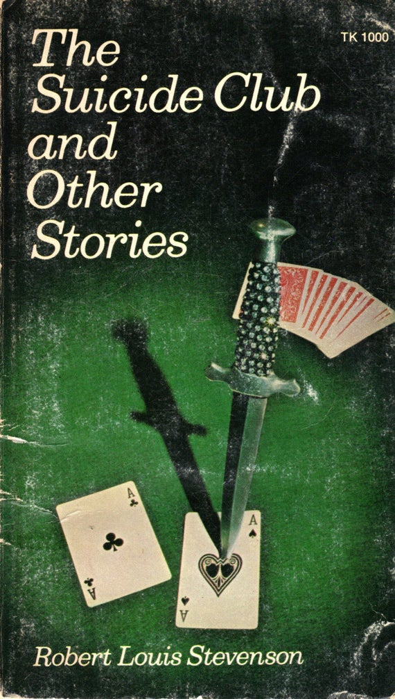

0
стр. з
0
сторінок

завантаження...

Сontents
STORY OF THE YOUNG MAN WITH THE CREAM TARTS
(Рассказ о молодом человеке с кремовыми пирожными)
During his residence in London (во время своего пребывания в Лондоне), the accomplished Prince Florizel of Bohemia gained the affection of all classes (утонченный принц Флоризель Богемский снискал любовь всех сословий; accomplished — завершенный, совершенный; получивший хорошее образование; воспитанный; культурный; изысканный) by the seduction of his manner (обходительностью манер; seduction — обольщение) and by a well-considered generosity (и продуманной щедростью; to consider — рассматривать, обсуждать; обдумывать; generosity — великодушие; благородство; щедрость). He was a remarkable man (он был замечательным человеком) even by what was known of him (даже /судя/ по тому, что было известно о нем); and that was but a small part of what he actually did (а это была лишь малая толика того, что он в действительности совершал). Although of a placid temper in ordinary circumstances (хотя /он был человеком/ мирного нрава в обычных обстоятельствах), and accustomed to take the world with as much philosophy as any ploughman (и привыкший принимать мир так же философски, как любой пахарь; plough — плуг), the Prince of Bohemia was not without a taste for ways of life (принц Богемский был не без вкуса к = его влекло к образу жизни) more adventurous and eccentric than that (более авантюрному и эксцентричному, чем тот) to which he was destined by his birth (для которого он был предназначен по рождению).
during ['djuqrIN], Bohemia [bq(u)'hJmIq], generosity ["Gen(q)'rOsqtI], although [Ll'Dqu], circumstance ['sWkqmstxns], philosophy [fI'lOsqfI], ploughman ['plaumqn]
During his residence in London, the accomplished Prince Florizel of Bohemia gained the affection of all classes by the seduction of his manner and by a well-considered generosity. He was a remarkable man even by what was known of him; and that was but a small part of what he actually did. Although of a placid temper in ordinary circumstances, and accustomed to take the world with as much philosophy as any ploughman, the Prince of Bohemia was not without a taste for ways of life more adventurous and eccentric than that to which he was destined by his birth.
Now and then (по временам: "сейчас и тогда"), when he fell into a low humour (когда он впадал в подавленное настроение; to fall — падать; впадать; humour — юмор; что-либо смешное, забавное; настроение, расположение духа), when there was no laughable play to witness in any of the London theatres (когда не было никакой смешной пьесы, чтобы посмотреть /ее/ в каком-либо лондонском театре; to laugh — смеяться; to witness — видеть, быть свидетелем), and when the season of the year was unsuitable to those field sports (и когда время года было неподходящим для тех видов спорта; field sports — спорт на открытом воздухе; охота, рыбалка) in which he excelled all competitors (в которых он превосходил всех соперников), he would summon his confidant and Master of the Horse, Colonel Geraldine (он призывал своего доверенного человека и шталмейстера[2] — полковника Джеральдина), and bid him prepare himself against an evening ramble (и приказывал ему приготовиться к вечерней прогулке; to bid — просить /о чем-либо/; приказывать).
humour ['hjHmq], laughable ['lRfqbl], theatre ['TIqtq], unsuitable [An'sjHtqbl], colonel ['kWn(q)l]
Now and then, when he fell into a low humour, when there was no laughable play to witness in any of the London theatres, and when the season of the year was unsuitable to those field sports in which he excelled all competitors, he would summon his confidant and Master of the Horse, Colonel Geraldine, and bid him prepare himself against an evening ramble.
The Master of the Horse was a young officer (шталмейстер был молодым офицером) of a brave and even temerarious disposition (отважного и даже отчаянного нрава; disposition — расположение, размещение в каком-либо порядке; нрав, характер). He greeted the news with delight (он встречал эту новость с восторгом), and hastened to make ready (и спешил собраться; to make ready — приготавливать, подготавливать, готовить). Long practice and a varied acquaintance of life had given him a singular facility in disguise (долгая практика и разностороннее знание жизни дало ему необычайную способность к переодеваниям; acquaintance — знакомство; знакомый /человек/); he could adapt not only his face and bearing (он мог подделать не только лицо и манеру держать себя), but his voice and almost his thoughts (но и голос и чуть ли не собственные мысли; almost — почти), to those of any rank, character, or nation (под тех = под людей любого положения, характера или нации); and in this way he diverted attention from the Prince (и таким образом он отвлекал внимание от принца), and sometimes gained admission for the pair into strange societies (и иногда получал для обоих доступ в необычные /слои/ общества; pair — пара, зд.: оба человека).
young [jAN], delight [dI'laIt], acquaintance [q'kweInt(q)ns], singular ['sINgjqlq], disguise [dIs'gaIz], bearing ['beqrIN], thought [TLt], society [sq'saIqtI]
The Master of the Horse was a young officer of a brave and even temerarious disposition. He greeted the news with delight, and hastened to make ready. Long practice and a varied acquaintance of life had given him a singular facility in disguise; he could adapt not only his face and bearing, but his voice and almost his thoughts, to those of any rank, character, or nation; and in this way he diverted attention from the Prince, and sometimes gained admission for the pair into strange societies.
The civil authorities were never taken into the secret of these adventures (гражданские власти никогда не посвящались в тайну этих похождений; to take — брать); the imperturbable courage of the one and the ready invention and chivalrous devotion of the other (невозмутимая храбрость одного и живая изобретательность и рыцарская преданность другого; ready — готовый /к действию, использованию и т. п./; легкий, быстрый, скорый) had brought them through a score of dangerous passes (помогли им в десятке-другом опасных положений; to bring through — провести через, помочь в чем-то; score — устар. 20; pass — положение; проход, ущелье); and they grew in confidence as time went on (и их доверие друг к другу росло с течением времени: "и они росли в доверии, пока время проходило"; to grow — расти; to go on — проходить, происходить, продолжаться).
authority [L'TOrqtI], secret ['sJkrqt], adventure [qd'venCq], courage ['kArIG], chivalrous ['SIv(q)lrqs], brought [brLt], dangerous ['deInG(q)rqs], grew [grH]
The civil authorities were never taken into the secret of these adventures; the imperturbable courage of the one and the ready invention and chivalrous devotion of the other had brought them through a score of dangerous passes; and they grew in confidence as time went on.
One evening in March (одним вечером в марте) they were driven by a sharp fall of sleet into an Oyster Bar (сильный дождь со снегом загнал их в устричный бар: "они были загнаны резким выпадением…"; to drive — вести, управлять; загонять; fall — падение; выпадение осадков; sleet — дождь со снегом или градом) in the immediate neighbourhood of Leicester Square (у /площади/ Лестер-сквер: "в непосредственной близости от Лестер-сквер"; square — площадь; квадрат). Colonel Geraldine was dressed and painted (полковник Джеральдин был наряжен и загримирован: "раскрашен") to represent a person connected with the Press in reduced circumstances (чтобы изображать человека, связанного с прессой, в стесненных обстоятельствах; reduced — сниженный, уменьшенный; обедневший; угнетенный, подавленный); while the Prince had, as usual, travestied his appearance (в то время как принц, как обычно, изменил свою внешность) by the addition of false whiskers and a pair of large adhesive eyebrows (добавлением накладных бакенбард и пары больших приклеенных: "клейких" бровей). These lent him a shaggy and weather-beaten air (они придавали ему неопрятный и потрепанный вид; to lend — придавать, давать взаймы; weather — погода; to beat — бить; weather-beaten — потрепанный, обветренный, пострадавший от непогоды), which, for one of his urbanity, formed the most impenetrable disguise (который для человека его изысканности являлся весьма непроницаемой маскировкой). Thus equipped (снаряженные таким образом), the commander and his satellite sipped their brandy and soda in security (командир и его спутник потягивали бренди с содовой в безопасности).
evening ['JvnIN], drive [draIv], driven ['drIv(q)n], immediate [I'mJdIqt], neighbourhood ['neIbqhud], Leicester ['lestq], square [skweq], reduced [rI'djHst], usual ['jHZ(q)l], appearance [q'pIqrqns], false [fLls], adhesive [qd'hJsIv], weather ['weDq], air [eq], urbanity [W'bxnqtI], impenetrable [Im'penItrqbl], equipped [I'kwIpt]
One evening in March they were driven by a sharp fall of sleet into an Oyster Bar in the immediate neighbourhood of Leicester Square. Colonel Geraldine was dressed and painted to represent a person connected with the Press in reduced circumstances; while the Prince had, as usual, travestied his appearance by the addition of false whiskers and a pair of large adhesive eyebrows. These lent him a shaggy and weather-beaten air, which, for one of his urbanity, formed the most impenetrable disguise. Thus equipped, the commander and his satellite sipped their brandy and soda in security.
The bar was full of guests, male and female (бар был полон посетителей, мужчин и женщин: "мужских и женских"; guest — гость); but though more than one of these offered to fall into talk with our adventurers (но хотя многие заводили разговор с нашими искателями приключений: "предлагали упасть в разговор с…"; more than one — более чем один), none of them promised to grow interesting upon a nearer acquaintance (ни один из них не обещал стать интересным при более близком знакомстве; to grow — расти; делаться, становиться). There was nothing present but the lees of London (не было никого: "ничего", кроме отбросов Лондона; present — присутствующий; lees — осадок на дне; остатки, отбросы, подонки) and the commonplace of disrespectability (и общих мест нереспектабельности = рядовых жителей дна); and the Prince had already fallen to yawning (и принц уже начал зевать; to fall to — начать что-то делать, приняться; to yawn — зевать), and was beginning to grow weary of the whole excursion (и начинал уставать от всей этой прогулки; weary — утомленный), when the swing doors were pushed violently open (когда двустворчатые двери были с силой распахнуты; to push — толкать; open — открытый; to push open — распахнуть; violently — резко, силой), and a young man, followed by a couple of commissionaires, entered the bar (и молодой человек, в сопровождении пары посыльных, вошел в бар; to follow — следовать, преследовать).
guest [gest], though [Dqu], promise ['prOmIs], yawn [jLn], weary ['wIqrI], excursion [Iks'kWS(q)n], push [puS], violently ['vaIql(q)ntlI], couple [kApl], commissionaire [kq"mIS(q)'neq]
The bar was full of guests, male and female; but though more than one of these offered to fall into talk with our adventurers, none of them promised to grow interesting upon a nearer acquaintance. There was nothing present but the lees of London and the commonplace of disrespectability; and the Prince had already fallen to yawning, and was beginning to grow weary of the whole excursion, when the swing doors were pushed violently open, and a young man, followed by a couple of commissionaires, entered the bar.
Each of the commissionaires carried a large dish of cream tarts under a cover (каждый посыльный нес большое блюдо с кремовыми пирожными под крышкой), which they at once removed (которые /= крышки/ они сразу убрали); and the young man made the round of the company (и молодой человек совершил обход /всей/ компании), and pressed these confections upon every one's acceptance (и /начал/ всучивать каждому по пирожному; to press — нажимать; to press upon — навязать; every one — каждый, всякий /человек/; acceptance — принятие, прием) with an exaggerated courtesy (с преувеличенной любезностью). Sometimes his offer was laughingly accepted (иногда его предложение было со смехом принято = принималось); sometimes it was firmly, or even harshly, rejected (иногда оно было твердо или даже резко отвергнуто = отвергалось). In these latter cases the new-comer always ate the tart himself (в этих, последних случаях новопришедший /молодой человек/ всегда съедал пирожное сам; to eat), with some more or less humorous commentary (с каким-нибудь более или менее забавным комментарием).
cover ['kAvq], once [wAns], remove [rI'mHv], acceptance [qk'septqns], exaggerate [Ig 'zxG(q)reIt], courtesy ['kWtqsI], firmly ['fWmlI], eat [Jt], ate [et]
Each of the commissionaires carried a large dish of cream tarts under a cover, which they at once removed; and the young man made the round of the company, and pressed these confections upon every one's acceptance with an exaggerated courtesy. Sometimes his offer was laughingly accepted; sometimes it was firmly, or even harshly, rejected. In these latter cases the new-comer always ate the tart himself, with some more or less humorous commentary.
At last he accosted Prince Florizel (наконец он обратился к принцу Флоризелю; to accost — приставать /к кому-либо/; обращаться /к кому-либо/; заговорить /с кем-либо/).
"Sir," said he, with a profound obeisance (сэр, — сказал он с глубоким поклоном; obeisance — жест подчинения /напр., поклон/: to make one's obeisances — кланяться, делать реверанс), proffering the tart at the same time between his thumb and forefinger (предлагая пирожное в то же время, /держа его/ между большим и указательным пальцем), "will you so far honour an entire stranger (окажете ли вы честь совершенному незнакомцу; entire — полный, целый, весь)? I can answer for the quality of the pastry (я могу ответить за качество этого пирожного), having eaten two dozen and three of them myself since five o'clock (съев = так как я сам съел две дюжины и еще три оных с пяти часов; myself — я сам)."
"I am in the habit," replied the Prince, "of looking not so much to the nature of a gift (я в привычке = я привык, — ответил принц, — смотреть не столько на природу подарка) as to the spirit in which it is offered (сколько на дух, в котором он предлагается)."
"The spirit, sir," returned the young man, with another bow (дух, сэр, — ответил молодой человек еще с одним поклоном; to return — возвращаться, идти обратно; возражать, отвечать), "is one of mockery (это дух издевательства; mockery — насмешка, осмеяние; to mock — насмехаться)."
profound [prq'faund], thumb [TAm], honour ['Onq], entire [In'taIq], stranger ['streInGq], quality ['kwOlqtI], pastry ['peIstrI], nature ['neICq], gift [gIft], bow (поклон) [bau]
At last he accosted Prince Florizel.
"Sir," said he, with a profound obeisance, proffering the tart at the same time between his thumb and forefinger, "will you so far honour an entire stranger? I can answer for the quality of the pastry, having eaten two dozen and three of them myself since five o'clock."
"I am in the habit," replied the Prince, "of looking not so much to the nature of a gift as to the spirit in which it is offered."
"The spirit, sir," returned the young man, with another bow, "is one of mockery."
"Mockery?" repeated Florizel (издевательства? — повторил Флоризель). "And whom do you propose to mock (и кого вы намереваетесь высмеивать)?"
"I am not here to expound my philosophy," replied the other (я здесь не для того, чтобы разъяснять мою философию, — ответил тот), "but to distribute these cream tarts (но чтобы раздать эти кремовые пирожные). If I mention that I heartily include myself in the ridicule of the transaction (если я отмечу, что я от всего сердца включаю самого себя в смехотворность этого занятия = если я скажу, что смеюсь и над самим собой), I hope you will consider honour satisfied and condescend (я надеюсь, вы сочтете честь удовлетворенной и снизойдете /к моим пирожным/). If not, you will constrain me to eat my twenty-eighth (если нет, вы вынудите меня съесть двадцать восьмое /пирожное/), and I own to being weary of the exercise (а, признаюсь, я устал от этих упражнений; to own — владеть; to own to — признаваться)."
"You touch me," said the Prince (вы тронули меня, — сказал принц), "and I have all the will in the world to rescue you from this dilemma (и я очень хочу спасти вас из этого прискорбного положения: "у меня есть вся воля в мире спасти…"), but upon one condition (но при одном условии). If my friend and I eat your cakes (если мой друг и я съедим ваши пирожные) — for which we have neither of us any natural inclination (к чему ни у одного из нас нет естественной склонности = не хотим) — we shall expect you to join us at supper by way of recompense (мы ожидаем, что вы присоединитесь к нам за ужином в возмещение /наших трудов/)."
whom [hHm], reply [rI'plaI], mention ['menS(q)n], consider [kqn'sIdq], satisfy ['sxtIsfaI], condescend ["kOndI'send], touch [tAC], world [wWld], neither ['naIDq] или ['nJDq], natural ['nxC(q)r(q)l]
"Mockery? " repeated Florizel. "And whom do you propose to mock?"
"I am not here to expound my philosophy," replied the other, "but to distribute these cream tarts. If I mention that I heartily include myself in the ridicule of the transaction, I hope you will consider honour satisfied and condescend. If not, you will constrain me to eat my twenty-eighth, and I own to being weary of the exercise."
"You touch me," said the Prince, "and I have all the will in the world to rescue you from this dilemma, but upon one condition. If my friend and I eat your cakes — for which we have neither of us any natural inclination — we shall expect you to join us at supper by way of recompense."
The young man seemed to reflect (молодой человек, казалось, размышлял).
"I have still several dozen upon hand," he said at last (у меня еще несколько дюжин с собой: "на руке", — сказал он наконец); "and that will make it necessary for me (и это делает необходимым для меня) to visit several more bars before my great affair is concluded (посетить еще несколько баров, прежде чем мое большое дело будет завершено; more — больше, еще). This will take some time (это займет некоторое время); and if you are hungry (а если вы голодны) —"
The Prince interrupted him with a polite gesture (принц прервал его учтивым жестом).
"My friend and I will accompany you," he said (мой друг и я будем сопровождать вас, — сказал он); "for we have already a deep interest (так как мы уже имеем = питаем глубокий интерес) in your very agreeable mode of passing an evening (к вашему весьма приятному способу проводить вечер). And now that the preliminaries of peace are settled (а теперь, когда предварительные условия мира установлены), allow me to sign the treaty for both (позвольте мне подписать договор за двоих)."
And the Prince swallowed the tart with the best grace imaginable (и принц проглотил пирожное с превеликим изяществом: "с наилучшим изяществом, которое можно вообразить").
"It is delicious," said he (оно очень вкусно, — сказал он).
"I perceive you are a connoisseur," replied the young man (я вижу, вы знаток, — ответил молодой человек).
dozen ['dAz(q)n], great [greIt], affair [q'feq], conclude [kqn'klHd], gesture ['GesCq], accompany [q'kAmpqnI], already [Ll'redI], preliminaries [prI'lImIn(q)rIz], sign [saIn], swallow ['swOlqu], delicious [dI'lISqs], perceive [pq'sJv], connoisseur ["kOnq'sW]
The young man seemed to reflect.
"I have still several dozen upon hand," he said at last; "and that will make it necessary for me to visit several more bars before my great affair is concluded. This will take some time; and if you are hungry —"
The Prince interrupted him with a polite gesture.
"My friend and I will accompany you," he said; "for we have already a deep interest in your very agreeable mode of passing an evening. And now that the preliminaries of peace are settled, allow me to sign the treaty for both."
And the Prince swallowed the tart with the best grace imaginable.
"It is delicious," said he.
"I perceive you are a connoisseur," replied the young man.
Colonel Geraldine likewise did honour to the pastry (полковник Джеральдин также оказал честь пирожному); and every one in that bar having now either accepted or refused his delicacies (и /так как/ каждый в баре теперь либо принял, либо отверг его лакомства; either … or — или…, или), the young man with the cream tarts (молодой человек с кремовыми пирожными) led the way to another and similar establishment (повел путь = повел своих спутников в другое подобное заведение; to lead). The two commissionaires, who seemed to have grown accustomed to their absurd employment (двое посыльных, которые, казалось, привыкли к своей нелепой работе; to grow — расти; становиться; accustomed — привыкший; custom — обычай; привычка), followed immediately after (последовали прямо за /ним/; immediate — непосредственный); and the Prince and the Colonel brought up the rear (а принц и полковник замыкали шествие; rear — тыл; to bring up the rear — замыкать колонну), arm in arm, and smiling to each other as they went (взявшись под руку и улыбаясь друг другу по пути: "пока они шли"). In this order the company visited two other taverns (в таком порядке эта компания посетила две другие таверны), where scenes were enacted of a like nature to that already described (где были разыграны сцены той же природы, что и та, /которая была/ уже описана) — some refusing, some accepting, the favours of this vagabond hospitality (/при том что/ некоторые отвергали, некоторые принимали милости этого бродячего гостеприимства), and the young man himself eating each rejected tart (и молодой человек сам съедал каждое отвергнутое пирожное).
either ['aIDq] или ['JDq], refuse [rI'fjHz], similar ['sImIlq], absurd [qb'sWd], scene [sJn], favour ['feIvq]
Colonel Geraldine likewise did honour to the pastry; and every one in that bar having now either accepted or refused his delicacies, the young man with the cream tarts led the way to another and similar establishment. The two commissionaires, who seemed to have grown accustomed to their absurd employment, followed immediately after; and the Prince and the Colonel brought up the rear, arm in arm, and smiling to each other as they went. In this order the company visited two other taverns, where scenes were enacted of a like nature to that already described — some refusing, some accepting, the favours of this vagabond hospitality, and the young man himself eating each rejected tart.
On leaving the third saloon (покинув третий кабак) the young man counted his store (молодой человек пересчитал свой запас /пирожных/). There were but nine remaining (оставалось лишь девять; but — лишь; но), three in one tray and six in the other (три на одном подносе и шесть на другом).
"Gentlemen," said he, addressing himself to his two new followers (джентльмены, — сказал он, обращаясь к к двум своим новым спутникам), "I am unwilling to delay your supper (я не желаю откладывать ваш ужин). I am positively sure you must be hungry (я положительно уверен, что вы, должно быть, голодны). I feel that I owe you a special consideration (я чувствую, что особо вам обязан; consideration — размышление, рассуждение; вежливость, предупредительность; почет, уважение; /фин./ возмещение, компенсация). And on this great day for me (и в этот великий для меня день), when I am closing a career of folly by my most conspicuously silly action (когда я завершаю карьеру безумств моим самым выдающимся дурачеством; conspicuously — выдающимся образом; conspicuous — видный, заметный, бросающийся в глаза; silly — легкомысленный, дурацкий; action — действие), I wish to behave handsomely to all who give me countenance (я желаю вести себя красиво = любезно со всеми, кто оказывает мне поддержку). Gentlemen, you shall wait no longer (джентльмены, вы не будете больше ждать; no longer — больше не: "не дольше"). Although my constitution is shattered by previous excesses (хотя мой организм расшатан прежними излишествами; to shatter — разбить вдребезги; пошатнуть, расстроить /напр., здоровье/), at the risk of my life (рискуя жизнью) I liquidate the suspensory condition (я ликвидирую это подвешенное состояние = прерву ваше ожидание)."
remain [rI'meIn], address [q'dres], delay [dI'leI], career [kq'rIq], conspicuously [kqn'spIkjuqslI], behave [bI'heIv], handsomely ['hxnsqmlI], countenance ['kauntInqns], previous ['prJvIqs]
On leaving the third saloon the young man counted his store. There were but nine remaining, three in one tray and six in the other.
"Gentlemen," said he, addressing himself to his two new followers, "I am unwilling to delay your supper. I am positively sure you must be hungry. I feel that I owe you a special consideration. And on this great day for me, when I am closing a career of folly by my most conspicuously silly action, I wish to behave handsomely to all who give me countenance. Gentlemen, you shall wait no longer. Although my constitution is shattered by previous excesses, at the risk of my life I liquidate the suspensory condition."
With these words he crushed the nine remaining tarts into his mouth (с этими словами он запихнул оставшиеся девять пирожных себе в рот; to crush — давить, жать; втискивать), and swallowed them at a single movement each (и проглотил их — каждое одним движением = одно за другим). Then, turning to the commissionaires (затем, повернувшись к своим слугам), he gave them a couple of sovereigns (он дал им пару соверенов).
"I have to thank you," said he, "for your extraordinary patience (я должен поблагодарить вас, — сказал он, — за вашу необычайную терпеливость; to have to — быть должным, вынужденным, обязанным что-либо сделать)."
And he dismissed them with a bow apiece (и он отпустил их одним поклоном = поклонившись каждому; apiece — каждому, с каждого и т.д.; поштучно; piece — штука). For some seconds he stood looking at the purse from which he had just paid his assistants (несколько секунд он стоял, смотря на кошелек, из которого он только что заплатил своим помощникам), then, with a laugh, he tossed it into the middle of the street (затем, со смехом, он швырнул его на середину улицы), and signified his readiness for supper (и заявил о своей готовности к ужину; to signify — значить, означать, обозначать; извещать, оповещать, объявлять).
movement ['mHvmqnt], sovereign ['sOv(q)rIn], extraordinary [Ik'strLdIn(q)rI], piece [pJs], assistant [q'sIstqnt], signify ['sIgnIfaI]
With these words he crushed the nine remaining tarts into his mouth, and swallowed them at a single movement each. Then, turning to the commissionaires, he gave them a couple of sovereigns.
"I have to thank you," said he, "for your extraordinary patience."
And he dismissed them with a bow apiece. For some seconds he stood looking at the purse from which he had just paid his assistants, then, with a laugh, he tossed it into the middle of the street, and signified his readiness for supper.
In a small French restaurant in Soho (в маленьком французском ресторанчике в Сохо), which had enjoyed an exaggerated reputation for some little while (который имел: "наслаждался" преувеличенной = раздутой репутацией некоторое непродолжительное время), but had already begun to be forgotten (но уже начинал забываться = его начали забывать; to begin; to forget), and in a private room up two pair of stairs (и в приватном кабинете на два марша вверх по лестнице = на третьем этаже; pair of stairs — марш, этаж: "пара лестниц"), the three companions made a very elegant supper (три товарища уселись за очень изысканный ужин: "сделали…"), and drank three or four bottles of champagne (и выпили три-четыре бутылки шампанского; to drink), talking the while upon indifferent subjects (беседуя в это время о маловажных предметах). The young man was fluent and gay (молодой человек был разговорчив и весел[3]; fluent — текучий; текущий; говорливый, многоречивый), but he laughed louder than was natural in a person of polite breeding (но он смеялся громче, чем было естественно для человека хорошего: "вежливого" воспитания; loud — громкий;breeding — разведение, выращивание /животных, растений/; уст. хорошие манеры, воспитанность); his hands trembled violently (его руки сильно дрожали; violent — неистовый; интенсивный, сильный), and his voice took sudden and surprising inflections (а его голос принимал = имел внезапные и удивительные интонации), which seemed to be independent of his will (которые, казалось, были независимы от его воли). The dessert had been cleared away (десерт унесли; to clear away — убрать со стола: "расчистить прочь"), and all three had lighted their cigars (и все трое зажгли сигары), when the Prince addressed him in these words (когда принц обратился к нему со следующими словами):
restaurant ['rest(q)rLN] или ['rest(q)rOnt], Soho ['squhqu], private ['praIvIt], champagne [Sxm'peIn], fluent [flHqnt], independent ["IndI'pendqnt], dessert [dI'zWt], cigar [sI'gR]
In a small French restaurant in Soho, which had enjoyed an exaggerated reputation for some little while, but had already begun to be forgotten, and in a private room up two pair of stairs, the three companions made a very elegant supper, and drank three or four bottles of champagne, talking the while upon indifferent subjects. The young man was fluent and gay, but he laughed louder than was natural in a person of polite breeding; his hands trembled violently, and his voice took sudden and surprising inflections, which seemed to be independent of his will. The dessert had been cleared away, and all three had lighted their cigars, when the Prince addressed him in these words:
"You will, I am sure, pardon my curiosity (вы, я уверен, простите мое любопытство). What I have seen of you (что я видел от вас = вы, насколько я успел вас разглядеть) has greatly pleased but even more puzzled me (очень порадовали = понравились /мне/, но еще больше озадачили меня). And though I should be loth to seem indiscreet (и хотя я не хотел бы показаться нескромным: "я был бы нежелающий показаться нескромным"; should — зд.: бы; loth — несклонный, нежелающий), I must tell you that my friend and I are persons very well worthy (я должен сказать вам, что мой друг и я — люди очень достойные /того/) to be entrusted with a secret (чтобы нам доверили тайну; to entrust — доверить). We have many of our own (у нас много собственных /тайн/), which we are continually revealing to improper ears (которые мы постоянно открываем неподобающим ушам = кому не следует). And if, as I suppose, your story is a silly one (и если, как я полагаю, ваша история нелепа), you need have no delicacy with us (вам не нужно нас стесняться: "иметь деликатность с нами"), who are two of the silliest men in England (— двумя из самых нелепых людей в Англии). My name is Godall, Theophilus Godall (мое имя — Годолл, Теофилус Годолл); my friend is Major Alfred Hammersmith (мой друг — майор Альфред Хэммерсмит) — or at least, such is the name by which he chooses to be known (или, по крайней мере, таково имя, под которым он желает быть известным; to choose — выбирать; желать). We pass our lives entirely in the search for extravagant adventures (мы проводим нашу жизнь целиком в поиске экстравагантных приключений); and there is no extravagance with which we are not capable of sympathy (и нет такого сумасбродства, которому мы неспособны посочувствовать; sympathy — сочувствие, сострадание; симпатия)."
pardon ['pRd(q)n], curiosity ["kjuqrI'OsqtI], person ['pWs(q)n], continually [kqn'tInjuqlI], improper [Im'prOpq], Theophilus [TI'OfIlqs], major ['meIGq], Alfred ['xlfrId], know [nqu], known [nqun], search [sWC], sympathy ['sImpqTI]
"You will, I am sure, pardon my curiosity. What I have seen of you has greatly pleased but even more puzzled me. And though I should be loth to seem indiscreet, I must tell you that my friend and I are persons very well worthy to be entrusted with a secret. We have many of our own, which we are continually revealing to improper ears. And if, as I suppose, your story is a silly one, you need have no delicacy with us, who are two of the silliest men in England. My name is Godall, Theophilus Godall; my friend is Major Alfred Hammersmith — or at least, such is the name by which he chooses to be known. We pass our lives entirely in the search for extravagant adventures; and there is no extravagance with which we are not capable of sympathy."
"I like you, Mr. Godall," returned the young man (вы мне нравитесь, мистер Годолл, — ответил молодой человек); "you inspire me with a natural confidence (вы внушаете мне естественное/инстинктивное доверие); and I have not the slightest objection to your friend the Major (и у меня нет ни малейшего возражения против вашего друга майора), whom I take to be a nobleman in masquerade (которого я считаю переодетым вельможей: "в маскараде"). At least, I am sure he is no soldier (по крайней мере, я уверен, что он не солдат/не воин)."
The Colonel smiled at this compliment to the perfection of his art (полковник улыбнулся этому комплименту совершенству его искусства /перевоплощения/); and the young man went on in a more animated manner (и молодой человек продолжил в более оживленной манере).
Mr. = mister ['mIstq], return [rI'tWn], inspire [In'spaIq], confidence ['kOnfIdqns], masquerade ["mxsk(q)r'eId], sure [Suq], soldier ['squlGq]
"I like you, Mr. Godall, " returned the young man; "you inspire me with a natural confidence; and I have not the slightest objection to your friend the Major, whom I take to be a nobleman in masquerade. At least, I am sure he is no soldier."
The Colonel smiled at this compliment to the perfection of his art; and the young man went on in a more animated manner.
"There is every reason why I should not tell you my story (есть каждая причина = много причин, почему я не должен рассказывать вам мою историю). Perhaps that is just the reason why I am going to do so (возможно, это как раз причина, почему я собираюсь это сделать). At least, you seem so well prepared to hear a tale of silliness (по крайней мере, вы кажетесь столь "хорошо" подготовленным услышать историю глупости) that I cannot find it in my heart to disappoint you (что я не решаюсь: "не могу найти этого в своем сердце" разочаровать вас). My name, in spite of your example (моя имя, несмотря на ваш = поданный вами пример), I shall keep to myself (я сохраню при себе). My age is not essential to the narrative (мой возраст несуществен для этого рассказа). I am descended from my ancestors by ordinary generation (я происхожу от своих предков обычным порождением = я прямой наследник), and from them I inherited the very eligible human tenement which I still occupy (и от них я унаследовал очень удовлетворительное человеческое жилище, которое я до сих пор занимаю; eligible — имеющий право, могущий быть избранным /в должность, в члены какого-либо общества/; годный, пригодный, подходящий, приемлемый) and a fortune of three hundred pounds a year (и состояние в триста фунтов в год). I suppose they also handed on to me a hare-brain humour (я полагаю, они также передали мне легкомысленный нрав; hare — заяц; brain — мозг), which it has been my chief delight to indulge (давать коему волю — мое главное наслаждение; to indulge — давать волю, потворствовать).
perhaps [pq'hxps], heart [hRt], disappoint ["dIsq'pOInt], example [Ig'zRmpl], essential [I'senS(q)l], narrative ['nxrqtIv], inherit [In'herIt], eligible ['elIGqbl], human ['hjHmqn], tenement ['tenqmqnt], occupy ['OkjqpaI], fortune ['fLCHn], suppose [sq'pquz], hare [heq], chief [CJf], indulge [In'dAlG]
"There is every reason why I should not tell you my story. Perhaps that is just the reason why I am going to do so. At least, you seem so well prepared to hear a tale of silliness that I cannot find it in my heart to disappoint you. My name, in spite of your example, I shall keep to myself. My age is not essential to the narrative. I am descended from my ancestors by ordinary generation, and from them I inherited the very eligible human tenement which I still occupy and a fortune of three hundred pounds a year. I suppose they also handed on to me a hare-brain humour, which it has been my chief delight to indulge.
I received a good education (я получил хорошее образование). I can play the violin nearly well enough (я умею играть на скрипке почти так хорошо) to earn money in the orchestra of a penny gaff (чтобы зарабатывать деньги в оркестре мюзик-холла; gaff — базар, ярмарка; магазин; penny gaff — дешевый театр, мюзик-холл /популярное развлечение для низших классов в Англии XIX века/), but not quite (но не вполне). The same remark applies to the flute and the French horn (то же замечание касается флейты и валторны). I learned enough of whist (я достаточно выучился висту) to lose about a hundred a year at that scientific game (чтобы проигрывать около сотни фунтов в год в эту замысловатую игру; to lose — не сохранять, терять /что-либо/; проигрывать, уступать; scientific — научный; /спорт./ высокого класса, техничный). My acquaintance with French was sufficient (мое знакомство с французским языком было достаточным) to enable me to squander money in Paris (чтобы позволить мне проматывать деньги в Париже) with almost the same facility as in London (с почти той же легкостью, что и в Лондоне). In short, I am a person full of manly accomplishments (короче говоря, я человек, полный умений, подобающих мужчине; manly — мужественный, подобающий мужчине; accomplishment — выполнение; исполнение; достоинства; таланты /обычно мн./).
receive [rI'sJv], education ["eGu'keIS(q)n], violin ["vaIq'lIn], enough [I'nAf], earn [Wn], orchestra ['LkIstrq], quite [kwaIt], remark [rI'mRk], apply [q'plaI], flute [flHt], lose [lHz], scientific ["saIqn'tIfIk], sufficient [sq'fIS(q)nt], squander ['skwOndq], almost ['Llmqust], facility [fq'sIlqtI], London ['lAndqn], accomplishment [q'kAmplISmqnt]
I received a good education. I can play the violin nearly well enough to earn money in the orchestra of a penny gaff, but not quite. The same remark applies to the flute and the French horn. I learned enough of whist to lose about a hundred a year at that scientific game. My acquaintance with French was sufficient to enable me to squander money in Paris with almost the same facility as in London. In short, I am a person full of manly accomplishments.
I have had every sort of adventure (у меня были всякие приключения: "каждый сорт"), including a duel about nothing (включая дуэль без причины: "из-за ничего"). Only two months ago I met a young lady (только два месяца назад я встретил молодую женщину) exactly suited to my taste in mind and body (точно отвечающую моему вкусу умом и телом; suited — подходящий); I found my heart melt (я обнаружил, что мое сердце тает; to find — найти; обнаружить); I saw that I had come upon my fate at last (я увидел, что встретился со своей судьбой наконец), and was in the way to fall in love (и уже собирался влюбиться: "был на пути к…"; to fall in love — влюбиться: "впасть в любовь"). But when I came to reckon up (но когда я принялся подсчитывать) what remained to me of my capital (что мне оставалось от моего капитала), I found it amounted to something less than four hundred pounds (я обнаружил, что он едва достигает четырехсот фунтов: "достигает чего-то меньшего, чем…")! I ask you fairly (я спрашиваю вас беспристрастно = серьезно) — can a man who respects himself fall in love on four hundred pounds (может ли человек, который уважает себя, влюбиться на четыреста фунтов)? I concluded, certainly not (я заключил, что, конечно, нет); left the presence of my charmer (покинул мою чаровницу; presence — общество, присутствие), and slightly accelerating my usual rate of expenditure (и, слегка ускорив мои обычные расходы; rate of expenditure/s/ — размер расходов), came this morning to my last eighty pounds (дошел сегодня утром до моих последних восьмидесяти фунтов).
including [In'klHdIN], duel ['djHql], nothing ['nATIN], two [tH], month [mAnT], ago [q'gqu], exactly [Ig'zxktlI], suited ['sjHtId], mind [maInd], find [faInd], found [faund], pound [paund], conclude [kqn'klHd], certainly ['sWt(q)nlI], presence ['prez(q)ns], usual ['jHZ(u)ql], expenditure [Ik'spendICq]
I have had every sort of adventure, including a duel about nothing. Only two months ago I met a young lady exactly suited to my taste in mind and body; I found my heart melt; I saw that I had come upon my fate at last, and was in the way to fall in love. But when I came to reckon up what remained to me of my capital, I found it amounted to something less than four hundred pounds! I ask you fairly — can a man who respects himself fall in love on four hundred pounds? I concluded, certainly not; left the presence of my charmer, and slightly accelerating my usual rate of expenditure, came this morning to my last eighty pounds.
This I divided into two equal parts (эту /сумму/ я разделил на две равные части); forty I reserved for a particular purpose (сорок я отложил для особой цели; particular — редкий, особенный, специфический; особый, исключительный); the remaining forty I was to dissipate before the night (оставшиеся сорок я должен был промотать до ночи; to dissipate — рассеивать, разгонять; транжирить, проматывать). I have passed a very entertaining day (я провел очень занимательный день), and played many farces besides that of the cream tarts (и сыграл много фарсов помимо того, с кремовыми пирожными) which procured me the advantage of your acquaintance (который доставил мне счастье знакомства с вами; advantage — выгода, преимущество, льгота); for I was determined, as I told you, to bring a foolish career (ибо я решился, как я сказал вам, довести глупую карьеру = жизненный путь) to a still more foolish conclusion (до еще более глупого завершения); and when you saw me throw my purse into the street (и когда вы видели, как я бросил кошелек на улицу; to throw — бросать), the forty pounds were at an end (те сорок фунтов /уже/ подошли к концу). Now you know me as well as I know myself (теперь вы знаете меня так же хорошо, как я знаю себя сам): a fool, but consistent in his folly (дурак, но последовательный в своем безумии); and, as I will ask you to believe (и, как я попрошу вас поверить), neither a whimperer nor a coward (ни нытик, ни трус; to whimper — хныкать)."
equal ['Jkwql], reserve [rI'zWv], particular [pq'tIkjqlq], purpose ['pWpqs], advantage [qd'vRntIG], determined [dI'tWmInd], conclusion [kqn'klHZ(q)n], believe [bI'lJv], coward [kauqd]
This I divided into two equal parts; forty I reserved for a particular purpose; the remaining forty I was to dissipate before the night. I have passed a very entertaining day, and played many farces besides that of the cream tarts which procured me the advantage of your acquaintance; for I was determined, as I told you, to bring a foolish career to a still more foolish conclusion; and when you saw me throw my purse into the street, the forty pounds were at an end. Now you know me as well as I know myself: a fool, but consistent in his folly; and, as I will ask you to believe, neither a whimperer nor a coward."
From the whole tone of the young man's statement (по всему тону высказывания = речи молодого человека) it was plain (было ясно) that he harboured very bitter and contemptuous thoughts about himself (что он питал очень горькие и презрительные мысли о себе; harbour — гавань; порт; to harbour — дать убежище; приютить; испытывать, питать). His auditors were led to imagine (его слушатели были убеждены: "приведены подумать"; to lead — вести; to imagine — представить себе, вообразить) that his love affair was nearer his heart than he admitted (что его любовная история была ближе к его сердцу, чем он признавал; affair — дело; любовная связь, роман), and that he had a design on his own life (и что он покушался на свою собственную жизнь; to have a design/designs on smth. — покушаться на что-либо, вынашивать коварные замыслы: "иметь виды/планы на…"). The farce of the cream tarts began to have very much the air (фарс с кремовыми пирожными начал принимать вид; to begin; air — воздух, зд.: вид) of a tragedy in disguise (замаскированной трагедии; disguise — переодевание; маска, личина).
harbour ['hRbq], contemptuous [kqn'tem(p)Cuqs], auditor ['LdItq], imagine [I'mxGIn], admit [qd'mIt], design [dI'zaIn], own [qun], tragedy ['trxGqdI]
From the whole tone of the young man’s statement it was plain that he harboured very bitter and contemptuous thoughts about himself. His auditors were led to imagine that his love affair was nearer his heart than he admitted, and that he had a design on his own life. The farce of the cream tarts began to have very much the air of a tragedy in disguise.
"Why, is this not odd," broke out Geraldine, giving a look to Prince Florizel (ну не странно ли, — произнес Джеральдин, взглянув на принца Флоризеля; to break out — разразиться), "that we three fellows should have met by the merest accident in so large a wilderness as London (что мы трое встретились по чистейшей случайности в такой пустыне, как Лондон; fellow — разг. человек, парень), and should be so nearly in the same condition (и находимся почти в той же ситуации)?"
"How?" cried the young man. "Are you, too, ruined (как? — вскричал молодой человек, — вы тоже разорены; to ruin — разрушать, уничтожать; разорять)? Is this supper a folly like my cream tarts (этот ужин — безумство вроде моих кремовых пирожных)? Has the devil brought three of his own together for a last carouse (это дьявол собрал три свои /души/ вместе для последней пирушки; to carouse — пировать; кутить, пьянствовать)?"
"The devil, depend upon it (дьявол, уж будьте уверены: "зависьте от этого"), can sometimes do a very gentlemanly thing," returned Prince Florizel (может иногда совершить очень благородный поступок, — ответил принц Флоризель); "and I am so much touched by this coincidence (и я так тронут этим совпадением), that, although we are not entirely in the same case (что, хотя мы не вполне в одинаковой ситуации; case — случай; обстоятельство, положение), I am going to put an end to the disparity (я собираюсь положить конец этому неравенству). Let your heroic treatment of the last cream tarts be my example (пусть ваше героическое обращение с последними кремовыми пирожными послужит мне примером)."
mere [mIq], merest ['mIqrqst], accident ['xksId(q)nt], wilderness ['wIldqnqs], should [Sud], ruin ['rHIn], devil ['dev(q)l], brought [brLt], carouse [kq'rauz], coincidence [kqu'InsId(q)ns], heroic [hI'rquIk]
"Why, is this not odd," broke out Geraldine, giving a look to Prince Florizel, "that we three fellows should have met by the merest accident in so large a wilderness as London, and should be so nearly in the same condition?"
"How?" cried the young man. "Are you, too, ruined? Is this supper a folly like my cream tarts? Has the devil brought three of his own together for a last carouse?"
"The devil, depend upon it, can sometimes do a very gentlemanly thing," returned Prince Florizel; "and I am so much touched by this coincidence, that, although we are not entirely in the same case, I am going to put an end to the disparity. Let your heroic treatment of the last cream tarts be my example."
So saying, the Prince drew out his purse (говоря это, принц вытащил свой кошелек; to draw — тащить; to draw out — вытащить) and took from it a small bundle of bank-notes (и достал из него небольшую пачку банкнот).
"You see, I was a week or so behind you (видите ли, я примерно на неделю отстал от вас: "я был неделей или /примерно/ так позади вас"), but I mean to catch you up (но я намереваюсь догнать вас; to catch — ловить; поймать; схватить; to catch up — догнать) and come neck and neck into the winning-post," he continued (и прийти ноздря в ноздрю: "шея и шея" к финишу; winning-post — столб у финиша: "столб выигрыша"). "This," laying one of the notes upon the table, "will suffice for the bill (этого, — /сказал он/, кладя одну из купюр на стол, — хватит для /оплаты/ счета). As for the rest (что до остального) —"
He tossed them into the fire (он швырнул их в камин), and they went up the chimney in a single blaze (и они улетели в трубу в единой вспышке пламени).
The young man tried to catch his arm (молодой человек пытался поймать его руку), but as the table was between them (но так как между ними был стол) his interference came too late (его вмешательство пришло слишком поздно).
behind [bI'haInd], suffice [sq'faIs], chimney ['CImnI], between [bI'twJn], interference ["Intq'fIqr(q)ns]
So saying, the Prince drew out his purse and took from it a small bundle of bank-notes.
"You see, I was a week or so behind you, but I mean to catch you up and come neck and neck into the winning-post," he continued. "This," laying one of the notes upon the table, "will suffice for the bill. As for the rest —"
He tossed them into the fire, and they went up the chimney in a single blaze.
The young man tried to catch his arm, but as the table was between them his interference came too late.
"Unhappy man," he cried (несчастный человек, — вскричал он), "you should not have burned them all (вы не должны были сжигать их все)! You should have kept forty pounds (вы должны были сохранить сорок фунтов)."
"Forty pounds!" repeated the Prince (сорок фунтов! — повторил принц). "Why, in heaven’s name, forty pounds (почему, во имя неба, сорок фунтов)?"
"Why not eighty?" cried the Colonel (почему не восемьдесят? — вскричал полковник); "for to my certain knowledge (ведь, как я знаю: "к моему верному знанию") there must have been a hundred in the bundle (в пачке должна была быть сотня)."
"It was only forty pounds he needed," said the young man gloomily (лишь сорок фунтов были нужны ему, — сказал молодой человек мрачно; gloom — мрак; темнота; мрачность, уныние). "But without them there is no admission (но без них нет допуска). The rule is strict (правило строгое). Forty pounds for each (сорок фунтов за каждого). Accursed life, where a man cannot even die without money (проклятая жизнь, в которой: "где" человек не может даже умереть без денег)!"
repeat [rI'pJt], knowledge ['nOlIG], admission [qd'mIS(q)n], rule [rHl], accursed [q'kWsId]
"Unhappy man," he cried, "you should not have burned them all! You should have kept forty pounds."
"Forty pounds!" repeated the Prince. "Why, in heaven’s name, forty pounds?"
"Why not eighty?" cried the Colonel; "for to my certain knowledge there must have been a hundred in the bundle."
"It was only forty pounds he needed," said the young man gloomily. "But without them there is no admission. The rule is strict. Forty pounds for each. Accursed life, where a man cannot even die without money!"
The Prince and the Colonel exchanged glances (принц и полковник обменялись взглядами). "Explain yourself," said the latter (объяснитесь, — сказал последний). "I have still a pocket-book (у меня есть еще бумажник) tolerably well lined (в котором есть еще деньги: "сносно выложенный /деньгами/"; tolerably — терпимо; сносно, приемлемо), and I need not say (и мне не нужно говорить) how readily I should share my wealth with Godall (с какой готовностью я поделюсь моим богатством с Годоллом). But I must know to what end (но я должен знать, ради какой цели; end — конец, край; цель): you must certainly tell us what you mean (вы непременно должны сказать нам, что вы имеете в виду)."
The young man seemed to awaken (молодой человек, казалось, проснулся); he looked uneasily from one to the other (он смотрел с неловкостью то на одного, то на другого), and his face flushed deeply (и его лицо густо покраснело; flush — внезапный прилив; приток крови; краска, румянец).
"You are not fooling me?" he asked (вы не дурачите меня? — спросил он). "You are indeed ruined men like me (вы действительно конченые люди, как я)?"
"Indeed, I am for my part," replied the Colonel (поистине, я являюсь /таковым/, со своей стороны, — ответил полковник).
glance [glRns], readily ['redIlI], share [Seq], wealth [welT]
The Prince and the Colonel exchanged glances. "Explain yourself," said the latter. "I have still a pocket-book tolerably well lined, and I need not say how readily I should share my wealth with Godall. But I must know to what end: you must certainly tell us what you mean."
The young man seemed to awaken; he looked uneasily from one to the other, and his face flushed deeply.
"You are not fooling me?" he asked. "You are indeed ruined men like me?"
"Indeed, I am for my part," replied the Colonel.
"And for mine," said the Prince, "I have given you proof (а я со своей стороны, — сказал принц, — дал вам доказательство). Who but a ruined man would throw his notes into the fire (кто, кроме разоренного человека, бросил бы банкноты в огонь)? The action speaks for itself (действие говорит само за себя)."
"A ruined man — yes," returned the other suspiciously (разоренный человек — да, — ответил тот подозрительно), "or else a millionaire (— или же миллионер)."
"Enough, sir," said the Prince (довольно, сэр, — сказал принц); "I have said so (я так сказал), and I am not accustomed to have my word remain in doubt (а я не привык к тому, чтобы мое слово оставалось под сомнением)."
give [gIv], given ['gIv(q)n], suspiciously [sq'spISqslI], millionaire ["mIljq'neq], doubt [daut]
"And for mine," said the Prince, "I have given you proof. Who but a ruined man would throw his notes into the fire? The action speaks for itself."
"A ruined man — yes," returned the other suspiciously, "or else a millionaire."
"Enough, sir," said the Prince; "I have said so, and I am not accustomed to have my word remain in doubt."
"Ruined?" said the young man (разорены? — сказал молодой человек). "Are you ruined, like me (вы разорены, как я)? Are you, after a life of indulgence (вы, после /целой/ жизни потворства /своим желаниям/), come to such a pass (попали в такой переплет; pass — прохождение, проход, переход; ущелье; стечение обстоятельств, сложившаяся ситуация, /критическое/ положение) that you can only indulge yourself in one thing more (что вы можете потворствовать себе лишь еще в одной вещи)? Are you" — he kept lowering his voice as he went on (вы, — он все понижал голос, пока продолжал /говорить/; to keep — держать, хранить; to keep doing — все время что-либо делать) — "are you going to give yourselves that last indulgence (вы собираетесь дать себе эту последнюю поблажку)? Are you going to avoid the consequences of your folly (вы собираетесь избежать последствий вашего безрассудства) by the one infallible and easy path (одним верным и легким путем; infallible — не допускающий ошибок, безошибочный, непогрешимый; верный, надежный; path — тропинка; тропа; дорожка)? Are you going to give the slip to the sheriff’s officers of conscience (вы собираетесь убежать от жандармов совести; to give the slip — оторваться, улизнуть; slip — скольжение; сползание; to slip — скользить) by the one open door (через единственную открытую дверь)?"
lower ['lquq], consequence ['kOnsIkwqns], conscience ['kOnSqns]
"Ruined?" said the young man. "Are you ruined, like me? Are you, after a life of indulgence, come to such a pass that you can only indulge yourself in one thing more? Are you" — he kept lowering his voice as he went on — "are you going to give yourselves that last indulgence? Are you going to avoid the consequences of your folly by the one infallible and easy path? Are you going to give the slip to the sheriff’s officers of conscience by the one open door?"
Suddenly he broke off (внезапно он оборвал /свою речь/; to break off) and attempted to laugh (и попытался рассмеяться).
"Here is your health!" he cried, emptying his glass (за ваше здоровье! — воскликнул он, опустошая = осушая свой стакан), "and good night to you, my merry ruined men (и доброй вам ночи, мои веселые разоренные люди)."
Colonel Geraldine caught him by the arm (полковник Джеральдин поймал его за руку; to catch) as he was about to rise (когда он собирался встать; to be about to — собираться /что-либо сделать/).
break [breIk], broke [brquk], attempt [q'tem(p)t], laugh [lRf], health [helT], catch [kxC], caught [kLt]
Suddenly he broke off and attempted to laugh.
"Here is your health!" he cried, emptying his glass, "and good night to you, my merry ruined men."
Colonel Geraldine caught him by the arm as he was about to rise.
"You lack confidence in us," he said (вы не питаете доверия к нам, — сказал он; to lack — не иметь или иметь недостаточно), "and you are wrong (и вы ошибаетесь; wrong — неправильный; to be wrong — быть неправым, ошибаться). To all your questions I make answer in the affirmative (на все ваши вопросы я даю утвердительный ответ: "ответ в утвердительном"). But I am not so timid (но я не столь робок), and can speak the Queen's English plainly (и могу без обиняков говорить на английском /нашей/ королевы; plainly — ясно, очевидно). We too, like yourself, have had enough of life (нам тоже, как и вам, достаточно жизни: "мы поимели достаточно жизни"), and are determined to die (и /мы/ решились умереть; determined — определившийся, определенный). Sooner or later (рано или поздно: "скорее или позже"), alone or together (поодиночке или вместе), we meant to seek out death (мы намеревались разыскать смерть; to mean — намереваться, иметь в виду) and beard him where he[4] lies ready (и схватить ее: "его" за бороду, где она лежит, готовая = приготовившись; beard — борода). Since we have met you, and your case is more pressing (раз мы встретили вас, и ваше дело более срочное; to meet), let it be to-night (пусть это будет сегодня вечером/ночью) — and at once (и сразу же) — and, if you will, all three together (и, если пожелаете, все трое сразу). Such a penniless trio," he cried, "should go arm in arm into the halls of Pluto (такая нищая троица, — воскликнул он, — должна войти рука об руку в чертоги Плутона; penniless — без гроша, безденежный), and give each other some countenance among the shades (и дать друг другу некоторую поддержку среди теней)!"
confidence ['kOnfId(q)ns], wrong [rON], question ['kwesCqn], affirmative [q'fWmqtIv], timid ['tImId], English ['INglIS], mean [mJn], meant [ment], death [deT], beard [bIqd], trio ['trJqu], Pluto ['plHtqu]
"You lack confidence in us," he said, "and you are wrong. To all your questions I make answer in the affirmative. But I am not so timid, and can speak the Queen's English plainly. We too, like yourself, have had enough of life, and are determined to die. Sooner or later, alone or together, we meant to seek out death and beard him where he lies ready. Since we have met you, and your case is more pressing, let it be to-night — and at once — and, if you will, all three together. Such a penniless trio," he cried, "should go arm in arm into the halls of Pluto, and give each other some countenance among the shades!"
Geraldine had hit exactly on the manners and intonations (Джеральдин точно попал в манеры и интонации; to hit — ударить; попасть в цель) that became the part he was playing (которые подходили роли, которую он играл). The Prince himself was disturbed (даже принц был обеспокоен), and looked over at his confidant with a shade of doubt (и оглядел своего наперсника с тенью сомнения). As for the young man, the flush came back darkly into his cheek (что до молодого человека, румянец темно = густо вернулся на его щеки: "щеку"; to come back), and his eyes threw out a spark of light (и его глаза блеснули: "выбросили искру света"; to throw — бросать; to throw out — выбросить).
confidant ['kOnfIdxnt]
Geraldine had hit exactly on the manners and intonations that became the part he was playing. The Prince himself was disturbed, and looked over at his confidant with a shade of doubt. As for the young man, the flush came back darkly into his cheek, and his eyes threw out a spark of light.
"You are the men for me!" he cried (вы — люди для меня = вы как раз для меня! — воскликнул он), with an almost terrible gaiety (с почти ужасающей веселостью). "Shake hands upon the bargain (пожмем руки в знак сделки = по рукам; to shake — трясти; встряхивать; пожимать /руку/)!" (his hand was cold and wet (его рука была холодная и влажная)). "You little know in what a company you will begin the march (вы мало знаете = вы не знаете, в какой компании вы начнете этот поход)! You little know in what a happy moment for yourselves you partook of my cream tarts (вы не знаете, в какой счастливый для вас момент вы отведали моих кремовых пирожных; to partake — принять участие; отведать)! I am only a unit (я лишь единица), but I am a unit in an army (но я — подразделение в армии). I know Death’s private door (я знаю заветную дверь Смерти; private — частный, личный, персональный; сокровенный). I am one of his familiars (я один из ее приближенных; familiar — близкий друг; человек, близкий к высокопоставленной особe), and can show you into eternity (и могу проводить: "показать" вас в вечность) without ceremony and yet without scandal (без церемоний и при этом без скандала)."
gaiety ['geIqtI], bargain ['bRgIn], unit ['jHnIt], door [dL], familiar [fq'mIlIq], eternity [I'tWnqtI]
"You are the men for me!" he cried, with an almost terrible gaiety. "Shake hands upon the bargain!" (his hand was cold and wet). "You little know in what a company you will begin the march! You little know in what a happy moment for yourselves you partook of my cream tarts! I am only a unit, but I am a unit in an army. I know Death’s private door. I am one of his familiars, and can show you into eternity without ceremony and yet without scandal."
They called upon him eagerly (они нетерпеливо попросили его; to call upon — воззвать, попросить высказаться) to explain his meaning (объяснить смысл /своих слов/).
"Can you muster eighty pounds between you?" he demanded (вы можете наскрести восемьдесят фунтов вдвоем: "между собой"? — спросил он; muster — сбор, смотр).
Geraldine ostentatiously consulted his pocket-book (Джеральдин для вида посмотрел: "посовещался" в своем бумажнике), and replied in the affirmative (и ответил утвердительно).
"Fortunate beings!" cried the young man (счастливые люди! — вскричал молодой человек). "Forty pounds is the entry money of the Suicide Club (сорок фунтов — вступительный взнос в Клуб самоубийц; entry — вход)."
"The Suicide Club," said the Prince (Клуб самоубийц, — сказал принц), "why, what the devil is that (что это, черт возьми, такое; why — почему; зд. восклицание удивления)?"
demand [dI'mRnd], ostentatiously ["Osten'teISqslI], consult [kqn'sAlt], fortunate ['fLC(q)nqt], being ['bJIN], suicide ['sHIsaId], club [klAb]
They called upon him eagerly to explain his meaning.
"Can you muster eighty pounds between you?" he demanded.
Geraldine ostentatiously consulted his pocket-book, and replied in the affirmative.
"Fortunate beings!" cried the young man. "Forty pounds is the entry money of the Suicide Club."
"The Suicide Club," said the Prince, "why, what the devil is that?"
"Listen," said the young man (послушайте, — сказал молодой человек); "this is the age of conveniences (это же век удобств/комфорта; age — возраст; век; период, эпоха), and I have to tell you of the last perfection of the sort (и я должен рассказать вам о последнем усовершенствовании такого рода). We have affairs in different places (у нас дела в разных местах); and hence railways were invented (следовательно: "отсюда", были изобретены железные дороги). Railways separated us infallibly from our friends (железные дороги надежно разлучили нас с нашими друзьями); and so telegraphs were made (и так были сделаны телеграммы[5]) that we might communicate speedier at great distances (чтобы мы могли общаться быстрее на больших расстояниях). Even in hotels we have lifts (даже в отелях у нас лифты) to spare us a climb of some hundred steps (чтобы сэкономить нам подъем на несколько сот ступенек). Now, we know that life is only a stage to play the fool upon (и вот, мы знаем, что жизнь — лишь сцена, на которой /можно/ валять дурака) as long as the part amuses us (столько, сколько эта роль забавляет нас). There was one more convenience lacking to modern comfort (еще одного удобства недоставало современному комфорту; to lack — недоставать); a decent, easy way to quit that stage (— приличного, легкого способа покинуть эту сцену; decent — подходящий, пристойный; way — путь; способ); the back stairs to liberty (задней = черной лестницы на свободу); or, as I said this moment, Death's private door (или, как я сейчас сказал, заповедной дверцы Смерти). This, my two fellow-rebels, is supplied by the Suicide Club (она-то, мои два товарищи по бунту, и предоставляется Клубом самоубийц; fellow — человек, парень; приятель, товарищ; rebel — бунт; бунтарь).
listen ['lIs(q)n], convenience [kqn'vJnIqns], perfection [pq'fekS(q)n], hotel [hqu'tel], spare [speq], climb [klaIm], amuse [q'mjHz], modern ['mLdqn], comfort ['kAmfqt], decent ['dJs(q)nt], supply [sq'plaI]
"Listen," said the young man; "this is the age of conveniences, and I have to tell you of the last perfection of the sort. We have affairs in different places; and hence railways were invented. Railways separated us infallibly from our friends; and so telegraphs were made that we might communicate speedier at great distances. Even in hotels we have lifts to spare us a climb of some hundred steps. Now, we know that life is only a stage to play the fool upon as long as the part amuses us. There was one more convenience lacking to modern comfort; a decent, easy way to quit that stage; the back stairs to liberty; or, as I said this moment, Death’s private door. This, my two fellow-rebels, is supplied by the Suicide Club.
Do not suppose that you and I are alone (не полагайте, будто мы с вами одиноки), or even exceptional in the highly reasonable desire (или даже исключительны = уникальны в крайне разумном желании) that we profess (о котором мы заявляем). A large number of our fellowmen (большое число наших товарищей), who have grown heartily sick of the performance (которым стало совсем тошно от спектакля; to grow — расти; становиться; heart — сердце; heartily — полностью, совершенно; sick — испытывающий тошноту, больной) in which they are expected to join daily and all their lives long (в котором, ожидается, они должны участвовать ежедневно и всю свою жизнь: "они ожидаются участвовать…"; to expect — ожидать), are only kept from flight by one or two considerations (и /которые/ удержаны от побега одним-двумя соображениями; to keep — держать, удерживать; хранить). Some have families who would be shocked (у некоторых есть семьи, которые были бы потрясены), or even blamed, if the matter became public (или даже обвинены, если бы дело стало общеизвестным; to become); others have a weakness at heart (у других слабость в сердце) and recoil from the circumstances of death (и /они/ испытывают отвращение к обстоятельствам смерти; to recoil — отскочить, отпрыгнуть, отпрянуть, отшатнуться /в страхе, в ужасе и т. п./; испытывать отвращение /from/). That is, to some extent, my own experience (это, до некоторой степени, мой собственный опыт). I cannot put a pistol to my head and draw the trigger (я не могу приставить пистолет к голове и потянуть = нажать на курок); for something stronger than myself withholds the act (ибо что-то сильнее, чем я, удерживает это действие); and although I loathe life (и хотя я ненавижу жизнь; to loathe — питать/чувствовать отвращение; ненавидеть), I have not strength enough in my body (у меня не хватает силы в теле; enough — достаточно) to take hold of death and be done with it (ухватиться за смерть и покончить: "быть сделанным" с этим; hold — хватка). For such as I (для таких как я), and for all who desire to be out of the coil without posthumous scandal (и для всех, кто желает выбраться из этой спирали без посмертного скандала; to be out — выбраться; coil — катушка, кольцо, спираль /традиционная метафора жизни/), the Suicide Club has been inaugurated (был основан Клуб самоубийц).
desire [dI'zaIq], profess [prq'fes], performance [pq'fLmqns], recoil (глагол) [rI'kOIl], experience [Ik'spIqrIqns], withhold [wIT'hquld], loathe [lquD], posthumous ['pOstjqmqs], inaugurate [I'nLgjqreIt]
Do not suppose that you and I are alone, or even exceptional in the highly reasonable desire that we profess. A large number of our fellowmen, who have grown heartily sick of the performance in which they are expected to join daily and all their lives long, are only kept from flight by one or two considerations. Some have families who would be shocked, or even blamed, if the matter became public; others have a weakness at heart and recoil from the circumstances of death. That is, to some extent, my own experience. I cannot put a pistol to my head and draw the trigger; for something stronger than myself withholds the act; and although I loathe life, I have not strength enough in my body to take hold of death and be done with it. For such as I, and for all who desire to be out of the coil without posthumous scandal, the Suicide Club has been inaugurated.
How this has been managed (как это было устроено), what is its history (какова его история), or what may be its ramifications in other lands (или каковы могут быть его ответвления = филиалы в других странах), I am myself uninformed (я сам не осведомлен); and what I know of its constitution (а что я знаю о его устройстве), I am not at liberty to communicate to you (я не имею права сообщить вам: "не при свободе…"). To this extent, however, I am at your service (до этой = некоторой степени, впрочем, я к вашим услугам). If you are truly tired of life (если вы поистине устали от жизни), I will introduce you to-night to a meeting (я представлю вас сегодня вечером на заседании /клуба/; to introduce — вставлять, помещать; знакомить, представлять); and if not to-night, at least some time within the week (и если не сегодня, то в какое-нибудь /другое/ время в течение недели), you will be easily relieved of your existences (вы будете без труда облегчены = освобождены от ваших жизней; existence — жизнь, бытие, существование). It is now (consulting his watch) eleven (сейчас, — /сказал он/, сверившись с часами, — одиннадцать); by half-past, at latest, we must leave this place (к половине двенадцатого, самое позднее, мы должны уйти отсюда: "покинуть это место"; past — по ту сторону, мимо; half past eleven — полдвенадцатого); so that you have half-an-hour before you to consider my proposal (так что у вас впереди полчаса, чтобы обдумать мое предложение; before — перед). It is more serious than a cream tart," he added, with a smile (это посерьезнее, чем пирожное с кремом, — добавил он с улыбкой); "and I suspect more palatable (и, я полагаю, более аппетитно)."
manage ['mxnIG], service ['sWvIs], truly ['trHlI], introduce ["Intrq'djHs], relieve [rI'lJv], existence [Ig'zIst(q)ns], watch [wOC], consider [kqn'sIdq], proposal [prq'pquz(q)l], serious ['sIqrIqs]
How this has been managed, what is its history, or what may be its ramifications in other lands, I am myself uninformed; and what I know of its constitution, I am not at liberty to communicate to you. To this extent, however, I am at your service. If you are truly tired of life, I will introduce you to-night to a meeting; and if not to-night, at least some time within the week, you will be easily relieved of your existences. It is now (consulting his watch) eleven; by half-past, at latest, we must leave this place; so that you have half-an-hour before you to consider my proposal. It is more serious than a cream tart," he added, with a smile; "and I suspect more palatable."
"More serious, certainly," returned Colonel Geraldine (серьезнее, точно, — ответил полковник Джеральдин); "and as it is so much more so (и так как это гораздо серьезнее: "более так"), will you allow me five minutes' speech in private with my friend, Mr. Godall (не дадите ли вы мне поговорить пять минут наедине с моим другом, мистером Годоллом: "не позволите ли вы мне пятиминутную речь…")?"
"It is only fair," answered the young man (это только справедливо, — ответил молодой человек; fair — красивый, прекрасный; порядочный, честный, справедливый; законный). "If you will permit, I will retire (если разрешите, я удалюсь)."
"You will be very obliging," said the Colonel (вы /нас/ очень обяжете, — сказал полковник).
As soon as the two were alone (как только эти двое оказались наедине; as soon as — как только: "так скоро, как") — "What," said Prince Florizel, "is the use of this confabulation, Geraldine (какова, — сказал принц Флоризель, — польза в этой болтовне, Джеральдин; confabulation — болтовня, дружеский разговор)? I see you are flurried (я вижу, вы взволнованы), whereas my mind is very tranquilly made up (в то время как я очень спокойно решился: "мои мысли очень спокойно устроены"; to make up one’s mind — принять решение: "устроить свои мысли"). I will see the end of this (я увижу конец этого = доведу дело до конца)."
allow [q'lau], minute ['mInIt], answer ['Rnsq], permit [pq'mIt], retire [rI'taIq], obliging [q'blaIGIN], whereas [weq'rxz]
"More serious, certainly," returned Colonel Geraldine; "and as it is so much more so, will you allow me five minutes' speech in private with my friend, Mr. Godall?"
"It is only fair," answered the young man. "If you will permit, I will retire."
"You will be very obliging," said the Colonel.
As soon as the two were alone — "What," said Prince Florizel, "is the use of this confabulation, Geraldine? I see you are flurried, whereas my mind is very tranquilly made up. I will see the end of this."
"Your Highness," said the Colonel, turning pale (ваше высочество, — сказал полковник, бледнея; to turn — поворачивать, вращать; превращаться, становиться); "let me ask you to consider the importance of your life (позвольте мне попросить вас принять во внимание важность вашей жизни; to consider — рассматривать, обсуждать; принимать во внимание, учитывать), not only to your friends, but to the public interest (не только для ваших друзей, но и для общественного блага). 'If not to-night,' said this madman ("если не сегодня", — сказал этот безумец); but supposing that to-night some irreparable disaster were to overtake your Highness's person (но если сегодня какой-нибудь непоправимой беде суждено настигнуть ваше высочество; to suppose — предполагать; to be to — когда этому суждено что-либо сделать; быть должным что-либо сделать), what, let me ask you, what would be my despair (каково, позвольте мне спросить вас, каково было бы мое отчаяние), and what the concern and disaster of a great nation (и каково /было бы/ горе и несчастье великого народа; concern — отношение, касательство; забота, беспокойство)?"
"I will see the end of this," repeated the Prince in his most deliberate tones (я доведу дело до конца, — повторил принц своим самым веским: "обдуманным" тоном); "and have the kindness, Colonel Geraldine (и будьте любезны, полковник Джеральдин: "имейте доброту"), to remember and respect your word of honour as a gentleman (помнить и уважать ваше слово чести, как джентльмен). Under no circumstances, recollect, nor without my special authority (ни при каких обстоятельствах, вспомните, либо без моего особого дозволения; nor — и не), are you to betray the incognito (вы /не/ должны выдать = раскрыть инкогнито; to be to — быть должным) under which I choose to go abroad (под которым я желаю выходить из дома: "за границу"). These were my commands, which I now reiterate (таковы были мои приказания, которые я теперь повторяю; to reiterate — повторять; делать снова и снова). And now," he added, "let me ask you (а теперь, — добавил он, позвольте мне попросить вас) to call for the bill (потребовать счет; to call — звать, призывать; to call for — требовать)."
importance [Im'pLt(q)ns], irreparable [I'rep(q)rqbl], disaster [dI'zRstq], despair [dI'speq], deliberate (прилагательное) [dI'lIb(q)rqt], honour ['Onq], special ['speS(q)l], authority [L'TOrqtI], abroad [q'brLd]
"Your Highness," said the Colonel, turning pale; "let me ask you to consider the importance of your life, not only to your friends, but to the public interest. 'If not to-night,' said this madman; but supposing that to-night some irreparable disaster were to overtake your Highness’s person, what, let me ask you, what would be my despair, and what the concern and disaster of a great nation?"
"I will see the end of this," repeated the Prince in his most deliberate tones; "and have the kindness, Colonel Geraldine, to remember and respect your word of honour as a gentleman. Under no circumstances, recollect, nor without my special authority, are you to betray the incognito under which I choose to go abroad. These were my commands, which I now reiterate. And now," he added, "let me ask you to call for the bill."
Colonel Geraldine bowed in submission (полковник Джеральдин поклонился в /знак/ покорности); but he had a very white face as he summoned the young man of the cream tarts (но у него было совершенно белое лицо, когда он позвал молодого человека с кремовыми пирожными), and issued his directions to the waiter (и дал указания официанту; to issue — вытекать, выходить, исходить; выдавать, отпускать, снабжать). The Prince preserved his undisturbed demeanour (принц сохранил свою невозмутимую манеру; to disturb — волновать, тревожить, беспокоить), and described a Palais Royal farce to the young suicide (и описал некий фарс, /произошедший в/ Пале-Рояле, молодому самоубийце) with great humour and gusto (с большим юмором и смаком). He avoided the Colonel's appealing looks without ostentation (он избегал умоляющих взглядов полковника без заметности = весьма естественно; ostentation — выставление напоказ, показное проявление чувств/мыслей, хвастовство), and selected another cheroot with more than usual care (и выбрал еще одну манильскую сигару особенно тщательно: "с заботой больше обычного"). Indeed, he was now the only man of the party (по правде говоря, он был теперь единственным человеком в компании) who kept any command over his nerves (который хоть как-то владел своими нервами: "держал какую-то власть над своими нервами").
bow [bau], issue ['ISH], demeanour [dI'mJnq], gusto ['gAstqu], care [keq], command [kq'mRnd]
Colonel Geraldine bowed in submission; but he had a very white face as he summoned the young man of the cream tarts, and issued his directions to the waiter. The Prince preserved his undisturbed demeanour, and described a Palais Royal farce to the young suicide with great humour and gusto. He avoided the Colonel's appealing looks without ostentation, and selected another cheroot with more than usual care. Indeed, he was now the only man of the party who kept any command over his nerves.
The bill was discharged, the Prince giving the whole change of the note to the astonished waiter (счет был выписан, причем принц дал всю сдачу с купюры потрясенному официанту); and the three drove off in a four-wheeler (и /все/ трое уехали в извозчичьей карете; wheel — колесо). They were not long upon the way (они недолго были в пути) before the cab stopped at the entrance to a rather dark court (прежде чем кэб остановился у ворот в довольно темный двор). Here all descended (здесь все сошли /на тротуар/).
After Geraldine had paid the fare (после того как Джеральдин оплатил проезд; fare — стоимость проезда, тариф, плата за проезд), the young man turned (молодой человек повернулся), and addressed Prince Florizel as follows (и обратился к принцу Флоризелю с такими словами: "как следует дальше"):
"It is still time, Mr. Godall, to make good your escape into thraldom (еще есть время, мистер Годолл, совершить побег в рабство; to make good — исполнить, добиться успеха; thraldom — рабство, неволя, рабская зависимость; thrall — невольник, раб). And for you too, Major Hammersmith (и для вас также, майор Хэммерсмит). Reflect well before you take another step (подумайте хорошенько, прежде чем сделаете: "возьмете" еще один шаг); and if your hearts say no — here are the cross-roads (и если ваши сердца говорят "нет" — здесь как раз развилка: "перекресток")."
court [kLt], descend [dI'send], address [q'dres]
The bill was discharged, the Prince giving the whole change of the note to the astonished waiter; and the three drove off in a four-wheeler. They were not long upon the way before the cab stopped at the entrance to a rather dark court. Here all descended.
After Geraldine had paid the fare, the young man turned, and addressed Prince Florizel as follows:
"It is still time, Mr. Godall, to make good your escape into thraldom. And for you too, Major Hammersmith. Reflect well before you take another step; and if your hearts say no — here are the cross-roads."
"Lead on, sir," said the Prince (ведите дальше, — сказал принц). "I am not the man to go back from a thing once said (я не такой человек, чтобы нарушить однажды сказанное слово: "уйти назад от вещи, однажды сказанной")."
"Your coolness does me good," replied their guide (ваше хладнокровие помогает мне: "делает мне добро", — ответил их проводник). "I have never seen any one so unmoved at this conjuncture (я никогда не видел ни одного человека, столь невозмутимого в этих обстоятельствах; conjuncture — стечение обстоятельств; ситуация); and yet you are not the first whom I have escorted to this door (а вы не первый, кого я привел к этой двери). More than one of my friends has preceded me (не один мой друг: "более чем один" ушел до меня; to precede — предшествовать, идти перед), where I knew I must shortly follow (туда, куда, я знал, я должен скоро последовать). But this is of no interest to you (но это не представляет интереса для вас). Wait me here for only a few moments (подождите меня здесь лишь несколько секунд); I shall return as soon as I have arranged the preliminaries of your introduction (я вернусь, как только улажу условия вашего вступления; preliminaries — подготовительное, предварительное мероприятие; предварительные переговоры)."
guide [gaId], unmoved [An'mHvd], conjuncture [kqn'GANkCq], precede [prI'sJd], interest ['Intrqst], preliminaries [prI'lImIn(q)rIz]
"Lead on, sir," said the Prince. "I am not the man to go back from a thing once said."
"Your coolness does me good," replied their guide. "I have never seen any one so unmoved at this conjuncture; and yet you are not the first whom I have escorted to this door. More than one of my friends has preceded me, where I knew I must shortly follow. But this is of no interest to you. Wait me here for only a few moments; I shall return as soon as I have arranged the preliminaries of your introduction."
And with that the young man (и с этим = с этими словами молодой человек), waving his hand to his companions (помахав рукой своим товарищам), turned into the court (повернулся к двору), entered a doorway and disappeared (вошел в ворота и исчез).
"Of all our follies," said Colonel Geraldine in a low voice (из всех наших причуд, — сказал полковник Джеральдин тихим голосом; folly — неосмотрительность, недальновидность; прихоть, причуда), "this is the wildest and most dangerous (эта — самая сумасбродная и самая опасная; wild — дикий)."
"I perfectly believe so," returned the Prince (совершенно с вами согласен: "я совершенно полагаю так же", — ответил принц).
"We have still," pursued the Colonel, "a moment to ourselves (у нас все еще есть, — продолжил полковник, — момент для нас = момент, когда мы одни). Let me beseech your Highness to profit by the opportunity and retire (позвольте мне умолять ваше высочество воспользоваться возможностью и уйти; to profit — приносить пользу, выгоду, прибыль; получать выгоду, извлекать пользу из /чего-либо/; to retire — уходить, удаляться). The consequences of this step are so dark (последствия этого шага так темны = неясны), and may be so grave (и могут быть так печальны), that I feel myself justified (что я чувствую себя оправданным = вправе) in pushing a little farther than usual the liberty (толкая немного дальше, чем обычно = пользуясь немного смелее, чем обычно, той вольностью) which your Highness is so condescending as to allow me in private (которую ваше высочество столь милостиво дозволяет мне наедине: "которую ваше высочество так снисходительны, чтобы дозволять…")"
disappear ["dIsq'pIq], wild [waIld], pursue [pq'sjH], beseech [bI'sJC], push [puS], condescend ["kOndI'send]
And with that the young man, waving his hand to his companions, turned into the court, entered a doorway and disappeared.
"Of all our follies," said Colonel Geraldine in a low voice, "this is the wildest and most dangerous."
"I perfectly believe so," returned the Prince.
"We have still," pursued the Colonel, "a moment to ourselves. Let me beseech your Highness to profit by the opportunity and retire. The consequences of this step are so dark, and may be so grave, that I feel myself justified in pushing a little farther than usual the liberty which your Highness is so condescending as to allow me in private."
"Am I to understand that Colonel Geraldine is afraid?" asked his Highness (должен ли я понять /так/, что полковник Джеральдин боится? — спросил его высочество; afraid — испуганный), taking his cheroot from his lips (вынимая свою манильскую сигару из губ), and looking keenly into the other's face (и пытливо смотря тому в лицо; keenly — сильно, горячо, пылко, страстно; проницательно; keen — острый).
"My fear is certainly not personal," replied the other proudly (мой страх совершенно точно не личный, — ответил тот гордо); "of that your Highness may rest well assured (в чем ваше высочество может быть "хорошо" заверено; to rest — отдыхать; оставаться спокойным, не волноваться)."
"I had supposed as much," returned the Prince (я так и предполагал: "предполагал столько", — ответил принц), with undisturbed good humour (в невозмутимо хорошем настроении; to disturb — беспокоить, волновать, мешать, тревожить; нарушать; волновать /об эмоциональном состоянии/); "but I was unwilling to remind you of the difference in our stations (но я не хотел напоминать вам о разнице наших положений; unwilling — нежелающий). No more — no more," he added (ни /слова/ больше — ни /слова/ больше, — прибавил он), seeing Geraldine about to apologise (видя, что Джеральдин собирается извиниться; to be about to — собираться что-либо сделать), "you stand excused (вы прощены: "вы стоите прощенный")."
And he smoked placidly (и он мирно курил), leaning against a railing (оперевшись об ограду), until the young man returned (пока молодой человек не вернулся).
afraid [q'freId], highness ['haInqs], assured [q'Suqd], apologise [q'pOlqGaIz], excuse (глагол) [Ik'skjHz], placidly ['plxsIdlI]
"Am I to understand that Colonel Geraldine is afraid?" asked his Highness, taking his cheroot from his lips, and looking keenly into the other's face.
"My fear is certainly not personal," replied the other proudly; "of that your Highness may rest well assured."
"I had supposed as much," returned the Prince, with undisturbed good humour; "but I was unwilling to remind you of the difference in our stations. No more — no more," he added, seeing Geraldine about to apologise, "you stand excused."
And he smoked placidly, leaning against a railing, until the young man returned.
"Well," he asked, "has our reception been arranged (ну, — спросил он, — наше вступление /в клуб/ организовано; reception — прием, получение, принятие; прием /в учебное заведение, организацию, общество и т.п./)?"
"Follow me," was the reply (следуйте за мной, — был ответ). "The President will see you in the cabinet (президент увидит вас = встретится с вами в кабинете). And let me warn you to be frank in your answers (и позвольте мне предупредить вас, чтобы вы были откровенными в ваших ответах: "предупредить вас быть…"). I have stood your guarantee (я ваш поручитель: "стоял вашим поручителем"; to stand); but the club requires a searching inquiry before admission (но клуб требует тщательных расспросов перед принятием /в его члены/); for the indiscretion of a single member (ибо неосторожность/болтливость одного-единственного члена) would lead to the dispersion of the whole society for ever (приведет к уничтожению целого общества навсегда; dispersion — разбрасывание; рассеивание)."
arrange [q'reInG], cabinet ['kxbInqt], guarantee ["gxr(q)n'tJ], require [rI'kwaIq], inquiry [In'kwaIqrI], indiscretion ["IndI'skreS(q)n]
"Well," he asked, "has our reception been arranged?"
"Follow me," was the reply. "The President will see you in the cabinet. And let me warn you to be frank in your answers. I have stood your guarantee; but the club requires a searching inquiry before admission; for the indiscretion of a single member would lead to the dispersion of the whole society for ever."
The Prince and Geraldine put their heads together for a moment (принц и Джеральдин составили головы вместе на секунду = пошептались). "Bear me out in this," said the one (подтверди меня в том-то = я скажу то-то, — сказал один; to bear out — подтвердить чьи-то слова); and "bear me out in that," said the other (и — поддержи меня в том-то = я скажу то-то, — сказал другой); and by boldly taking up the characters of men with whom both were acquainted (и, приняв /на себя/ личности людей, с которыми оба были знакомы = своих знакомых), they had come to an agreement in a twinkling (они пришли к соглашению = сговорились в одно мгновение), and were ready to follow their guide into the President's cabinet (и были готовы следовать за своим проводником в кабинет президента).
There were no formidable obstacles to pass (не нужно было проходить через непреодолимые препятствия: "не было непреодолимых препятствий, чтобы проходить"; formidable — вызывающий опасения, грозный; жуткий; труднопреодолимый). The outer door stood open (наружная дверь стояла = была открыта); the door of the cabinet was ajar (дверь кабинета была приоткрыта); and there, in a small but very high apartment (и там, в маленькой, но очень высокой = с высоким потолком комнате), the young man left them once more (молодой человек оставил их снова; to leave).
"He will be here immediately (он будет здесь немедленно)," he said, with a nod, as he disappeared (сказал он с кивком, когда исчезал = и исчез).
put [put], bear out [beq(r) aut], character ['kxrqktq], ajar [q'GR], apartment [q'pRtmqnt]
The Prince and Geraldine put their heads together for a moment. "Bear me out in this," said the one; and "bear me out in that," said the other; and by boldly taking up the characters of men with whom both were acquainted, they had come to an agreement in a twinkling, and were ready to follow their guide into the President's cabinet.
There were no formidable obstacles to pass. The outer door stood open; the door of the cabinet was ajar; and there, in a small but very high apartment, the young man left them once more.
"He will be here immediately," he said, with a nod, as he disappeared.
Voices were audible in the cabinet (в кабинете были слышны голоса) through the folding doors which formed one end (через двустворчатые двери, которые образовывали один конец /комнаты/; to fold — сгибать, складывать, сворачивать; перегибать); and now and then the noise of a champagne cork (и то и дело: "сейчас и тогда" хлопанье пробки от шампанского), followed by a burst of laughter (за которым следовал взрыв хохота; to follow — следовать), intervened among the sounds of conversation (раздавались посреди звуков разговора; to intervene — вмешиваться; вклиниваться). A single tall window looked out upon the river and the embankment (единственное высокое окно выглядывало = выходило на реку и набережную); and by the disposition of the lights (и по расположению огней) they judged themselves not far from Charing Cross station (они рассудили себя = они догадались, что находятся недалеко от вокзала Черинг-кросс). The furniture was scanty (мебель была скудной), and the coverings worn to the thread (а чехлы сношены "до нитки"); and there was nothing movable (и не было ничего двигаемого = никаких предметов) except a hand-bell in the centre of a round table (кроме ручного колокольчика в центре круглого стола), and the hats and coats of a considerable party hung round the wall on pegs (и шляпы и пальто большой компании висели по стенам на крючках; considerable — значительный; важный; большой; to hang).
audible ['LdIbl], through [TrH], burst [bWst], laughter ['lRftq], intervene ["Intq'vJn], among [q'mAN], furniture ['fWnICq], thread [Tred], centre ['sentq]
Voices were audible in the cabinet through the folding doors which formed one end; and now and then the noise of a champagne cork, followed by a burst of laughter, intervened among the sounds of conversation. A single tall window looked out upon the river and the embankment; and by the disposition of the lights they judged themselves not far from Charing Cross station. The furniture was scanty, and the coverings worn to the thread; and there was nothing movable except a hand-bell in the centre of a round table, and the hats and coats of a considerable party hung round the wall on pegs.
"What sort of a den is this?" said Geraldine (что это за притон? — сказал Джеральдин; sort — сорт; den — берлога, логово, нора; притон).
"That is what I have come to see," replied the Prince (это то, что я пришел увидеть, — ответил принц). "If they keep live devils on the premises (если они держат живых чертиков здесь = в этом помещении; premises — помещение, дом; недвижимость), the thing may grow amusing (дело может стать забавным)."
live (прилагательное) [laIv]
"What sort of a den is this?" said Geraldine.
"That is what I have come to see," replied the Prince. "If they keep live devils on the premises, the thing may grow amusing."
Just then the folding door was opened (как раз в этот момент двустворчатая дверь открылась: "была открыта") no more than was necessary for the passage of a human body (не больше, чем было необходимо для прохода человеческого тела); and there entered at the same moment a louder buzz of talk (и в тот же момент /в комнату/ вошел = ворвался более громкий гул разговоров), and the redoubtable President of the Suicide Club (и грозный президент Клуба самоубийц). The President was a man of fifty or upwards (президент был человеком пятидесяти /лет/ или больше: "выше"); large and rambling in his gait (большой и разболтанный в своей походке; to ramble — прогуливаться, гулять; бродить, блуждать), with shaggy side whiskers (с косматыми бакенбардами), a bald top to his head (с лысиной: "с лысой макушкой на голове"), and a veiled grey eye (и тускловатым серым глазом = глазами; veil — вуаль; to veil — скрывать, прикрывать), which now and then emitted a twinkle (которые то и дело излучали огонек; to emit — испускать, выделять /свет, тепло, запах/). His mouth, which embraced a large cigar, he kept continually screwing round and round and from side to side (свой рот, который обхватывал большую сигару, он постоянно крутил кругом и из стороны в сторону; to keep — держать, хранить; to screw — завинчивать, крутить; to keep screwing — все время крутить), as he looked sagaciously and coldly at the strangers (пока он смотрел проницательно и холодно на незнакомцев). He was dressed in light tweeds (он был одет в легкий твид; tweed — твид; tweeds — одежда из твида), with his neck very open in a striped shirt collar (с шеей, очень открытой в полосатом воротничке рубашки = с отложным воротником); and carried a minute book under one arm (и держал крошечную книжечку под мышкой; to carry — нести; держать; arm — рука /от кисти до плечa/).
necessary ['nesqs(q)rI], passage ['pxsIG], redoubtable [rI'dautqbl], president ['prezIdqnt], upwards ['Apwqdz], emit [I'mIt], embrace [Im'breIs], screw [skrH], sagacious [sq'geISqs], stranger ['streInGq], minute (прилагательное) [maI'njHt]
Just then the folding door was opened no more than was necessary for the passage of a human body; and there entered at the same moment a louder buzz of talk, and the redoubtable President of the Suicide Club. The President was a man of fifty or upwards; large and rambling in his gait, with shaggy side whiskers, a bald top to his head, and a veiled grey eye, which now and then emitted a twinkle. His mouth, which embraced a large cigar, he kept continually screwing round and round and from side to side, as he looked sagaciously and coldly at the strangers. He was dressed in light tweeds, with his neck very open in a striped shirt collar; and carried a minute book under one arm.
"Good evening," said he, after he had closed the door behind him (добрый вечер, — сказал он, после того как закрыл = закрыв дверь за собой). "I am told (мне сказали) you wish to speak with me (вы желаете поговорить со мной)."
"We have a desire, sir, to join the Suicide Club," replied the Colonel (мы имеем желание, сэр, вступить в Клуб самоубийц, — ответил полковник; to join — соединять; присоединяться; вступать в члены /клуба, общества/).
The President rolled his cigar about in his mouth (президент покатал свою сигару во рту). "What is that?" he said abruptly (что это такое? — сказал он резко).
"Pardon me," returned the Colonel (простите, — ответил полковник), "but I believe you are the person best qualified (но я полагаю, что вы — наиболее компетентный человек) to give us information on that point (чтобы дать нам информацию об этом)."
"I?" cried the President. "A Suicide Club (я? — вскричал президент. — Клуб самоубийц)? Come, come (ну и ну)! this is a frolic for All Fools' Day (это шутка для первого апреля: "дня всех дураков"). I can make allowances for gentlemen (я могу понять людей: "оказывать допущения для"; to allow — позволять) who get merry in their liquor (которые веселеют под хмельком; liquor — напиток; спиртное); but let there be an end to this (но пусть этому придет конец = прекратите эти шутки)."
"Call your Club what you will," said the Colonel (называйте ваш Клуб, как пожелаете, — сказал полковник), "you have some company behind these doors (у вас там какая-то компания за дверями), and we insist on joining it (и мы настаиваем на том, чтобы присоединиться к ней)."
"Sir," returned the President curtly, "you have made a mistake (сэр, — ответил президент коротко, — вы совершили ошибку). This is a private house (это частный дом), and you must leave it instantly (и вы должны покинуть его немедленно)."
abruptly [q'brAptlI], qualified ['kwOlIfaId], allowance [q'lauqns], liquor ['lIkq], curtly ['kWtlI], instantly ['InstqntlI]
"Good evening," said he, after he had closed the door behind him. "I am told you wish to speak with me."
"We have a desire, sir, to join the Suicide Club," replied the Colonel.
The President rolled his cigar about in his mouth. "What is that?" he said abruptly.
"Pardon me," returned the Colonel, "but I believe you are the person best qualified to give us information on that point."
"I?" cried the President. "A Suicide Club? Come, come! this is a frolic for All Fools’ Day. I can make allowances for gentlemen who get merry in their liquor; but let there be an end to this."
"Call your Club what you will," said the Colonel,"you have some company behind these doors, and we insist on joining it."
"Sir," returned the President curtly, "you have made a mistake. This is a private house, and you must leave it instantly."
The Prince had remained quietly in his seat (принц оставался в молчании: "молчаливо" на своем стуле) throughout this little colloquy (в течение этой маленькой беседы); but now, when the Colonel looked over to him (но теперь, когда полковник взглянул на него), as much as to say, "Take your answer and come away, for God's sake! (словно чтобы сказать: "примите этот ответ и уходите, ради Бога!")" he drew his cheroot from his mouth, and spoke (он вытащил свою манильскую сигару изо рта и заговорил; to draw — тащить) —
"I have come here," said he, "upon the invitation of a friend of yours (я пришел сюда, — сказал он, — по приглашению вашего друга). He has doubtless informed you of my intention (он, несомненно, предупредил вас о моем намерении) in thus intruding on your party (/побудившем меня/ так вторгнуться на вашу вечеринку; thus — таким образом). Let me remind you (позвольте мне напомнить вам) that a person in my circumstances has exceedingly little to bind him (что человек в моем положении имеет крайне мало = не имеет ничего, что бы связывало его), and is not at all likely to tolerate much rudeness (и вряд ли станет сносить грубость: "много грубости"; likely — вероятный; rude — грубый, оскорбительный /о человеке, высказывании, поведении и т. д./, невежливый). I am a very quiet man, as a usual thing (я обычно очень спокойный человек: "как обычная вещь"); but, my dear sir, you are either going to oblige me in the little matter (но, мой дорогой сэр, либо вы собираетесь помочь мне в маленьком дельце; to oblige — обязать, оказать услугу) of which you are aware (о котором вы знаете; aware — знающий), or you shall very bitterly repent (либо вы очень горько раскаетесь; either … or — или … или) that you ever admitted me to your ante-chamber (в том, что вообще пустили меня в свою прихожую; ever — когда-либо, вообще; ante- — прист. пред-)."
colloquy ['kOlqkwI], intrude [In'trHd], bind [baInd], rudeness ['rHdnqs], quiet ['kwaIqt], aware [q'weq], repent [rI'pent], ante-chamber ['xntI"CeImbq]
The Prince had remained quietly in his seat throughout this little colloquy; but now, when the Colonel looked over to him, as much as to say, "Take your answer and come away, for God's sake!" he drew his cheroot from his mouth, and spoke —
"I have come here," said he, "upon the invitation of a friend of yours. He has doubtless informed you of my intention in thus intruding on your party. Let me remind you that a person in my circumstances has exceedingly little to bind him, and is not at all likely to tolerate much rudeness. I am a very quiet man, as a usual thing; but, my dear sir, you are either going to oblige me in the little matter of which you are aware, or you shall very bitterly repent that you ever admitted me to your ante-chamber."
The President laughed aloud (президент громко рассмеялся).
"That is the way to speak," said he (вот как надо говорить, — сказал он; way — путь, дорога; способ). "You are a man who is a man (вы настоящий мужчина: "мужчина, который мужчина"). You know the way to my heart (вы знаете путь к моему сердцу), and can do what you like with me (и можете делать, что хотите, со мной). Will you," he continued, addressing Geraldine (не могли бы вы, — продолжил он, обращаясь к Джеральдину), "will you step aside for a few minutes (не могли бы вы отойти в сторонку на несколько минут)? I shall finish first with your companion (я закончу сперва с вашим товарищем), and some of the club's formalities require to be fulfilled in private (а некоторые формальности клуба должны быть исполнены с глазу на глаз; to require — требовать)."
With these words he opened the door of a small closet (с этими словами он открыл дверцу небольшого чулана), into which he shut the Colonel (в котором он запер полковника; to shut — закрыть, запереть).
aloud [q'laud], continue [kqn'tInjH], companion [kqm'pxnjqn], formality [fL'mxlqtI], fulfill [ful'fIl], closet ['klOzIt]
The President laughed aloud.
"That is the way to speak," said he. "You are a man who is a man. You know the way to my heart, and can do what you like with me. Will you," he continued, addressing Geraldine, "will you step aside for a few minutes? I shall finish first with your companion, and some of the club's formalities require to be fulfilled in private."
With these words he opened the door of a small closet, into which he shut the Colonel.
"I believe in you," he said to Florizel (я верю в вас, — сказал он Флоризелю), as soon as they were alone (как только они остались одни); "but are you sure of your friend (но уверены ли вы в своем друге)?"
"Not so sure as I am of myself (не так уверен, как в себе самом), though he has more cogent reasons," answered Florizel (хотя у него более основательные причины, — ответил Флоризель; cogent — убедительный; бесспорный; обоснованный), "but sure enough (но достаточно уверен) to bring him here without alarm (чтобы привести его сюда без тревоги). He has had enough (он получил достаточно = испытал предостаточно) to cure the most tenacious man of life (чтобы излечить самого живучего человека от жизни; tenacious — цепкий, живучий; осторожный). He was cashiered the other day (он был уволен со службы на днях: "другой день"; to cashier — уволить со службы, особенно офицера, может быть — с позором) for cheating at cards (за жульничание в карты)."
"A good reason, I daresay," replied the President (серьезная причина, я полагаю, — ответил президент; to daresay — полагать, думать, считать; to dare — осмелиться); "at least, we have another in the same case (по крайней мере, у нас есть еще один с таким же случаем), and I feel sure of him (и я уверен в нем: "чувствую себя уверенным в нем"). Have you also been in the Service, may I ask (а вы тоже состояли на службе, осмелюсь спросить)?"
"I have," was the reply (состоял, — был ответ); "but I was too lazy, I left it early (но я был ленив, я оставил ее рано; to leave)."
reason ['rJz(q)n], alarm [q'lRm], cure [kjuq], tenacious [tI'neISqs], cashier [kq'SIq], daresay [deq'seI]
"I believe in you," he said to Florizel, as soon as they were alone; "but are you sure of your friend?"
"Not so sure as I am of myself, though he has more cogent reasons," answered Florizel, "but sure enough to bring him here without alarm. He has had enough to cure the most tenacious man of life. He was cashiered the other day for cheating at cards."
"A good reason, I daresay," replied the President; "at least, we have another in the same case, and I feel sure of him. Have you also been in the Service, may I ask?"
"I have," was the reply; "but I was too lazy, I left it early."
"What is your reason for being tired of life (какова ваша причина быть усталым от жизни)?" pursued the President (продолжил президент).
"The same, as near as I can make out," answered the Prince (та же, насколько я могу судить, — ответил принц; to make out — разобрать, разглядеть); "unadulterated laziness (чистейшая лень; to adulterate — ухудшать примесями; фальсифицировать; unadulterated — настоящий, подлинный, неподдельный; чистейший, чистый)."
The President started (президент вздрогнул). "D-n it," said he (черт побери[6], — сказал он), "you must have something better than that (вы должны иметь что-нибудь получше, чем это = причину посерьезнее)."
"I have no more money," added Florizel (у меня больше нет денег, — прибавил Флоризель; no more — больше не, больше нет). "That is also a vexation, without doubt (это тоже неприятность, без сомнения). It brings my sense of idleness to an acute point (это доводит мой ленивый характер: "склад лени" до крайней точки)."
unadulterated ["Anq'dAlt(q)reItId], damn [dxm], idleness ['aIdlnqs], acute [q'kjHt]
"What is your reason for being tired of life?" pursued the President.
"The same, as near as I can make out," answered the Prince; "unadulterated laziness."
The President started. "D-n it," said he, "you must have something better than that."
"I have no more money," added Florizel. "That is also a vexation, without doubt. It brings my sense of idleness to an acute point."
The President rolled his cigar round in his mouth for some seconds (президент покатал свою сигару во рту несколько секунд), directing his gaze straight into the eyes of this unusual neophyte (направив свой взгляд прямо в глаза этому странному неофиту/новообращенному); but the Prince supported his scrutiny with unabashed good temper (но принц выдержал его испытующий взгляд с недрогнувшим самообладанием; to support — поддерживать /морально/; выносить, выдерживать; scrutiny — внимательный осмотр; исследование; внимательный, испытующий взгляд; temper — самообладание; характер).
"If I had not a deal of experience," said the President at last (если бы у меня не было некоторого опыта, — сказал президент наконец; deal — некоторое количество), "I should turn you off (я бы вас прогнал: "отвернул, отвратил"). But I know the world (но я знаю свет); and this much any way (и, в любом случае, /знаю/ столько: "и так много = столько в любом случае"), that the most frivolous excuses for a suicide (что самые легкомысленные поводы для самоубийства) are often the toughest to stand by (часто — самые серьезные; tough — жесткий, плотный, упругий; суровый; to stand by — поддерживать, придерживаться; выполнять). And when I downright like a man, as I do you, sir (и когда человек мне явно нравится, как вы, сэр; downright — направленный вниз; идущий строго вниз; прямой, открытый, честный; совершенно, явно), I would rather strain the regulation (я скорее превышу = нарушу правила; to strain — натягивать; растягивать; превышать; злоупотреблять) than deny him (чем откажу ему)."
straight [streIt], eye [aI], neophyte ['nJq(u)faIt], support [sq'pLt], scrutiny ['skrHtInI], frivolous ['frIv(q)lqs], excuse (существительное) [Ik'skjHs], tough [tAf], deny [dI'naI]
The President rolled his cigar round in his mouth for some seconds, directing his gaze straight into the eyes of this unusual neophyte; but the Prince supported his scrutiny with unabashed good temper.
"If I had not a deal of experience," said the President at last, "I should turn you off. But I know the world; and this much any way, that the most frivolous excuses for a suicide are often the toughest to stand by. And when I downright like a man, as I do you, sir, I would rather strain the regulation than deny him."
The Prince and the Colonel, one after the other (принц и полковник, один за другим), were subjected to a long and particular interrogatory (были подвергнуты долгим и подробным расспросам): the Prince alone (принц — один); but Geraldine in the presence of the Prince (а Джеральдин — в присутствии принца), so that the President might observe the countenance of the one (чтобы президент мог наблюдать за выражением лица одного) while the other was being warmly cross-examined (пока другого дружелюбно подвергали перекрестному допросу; warmly — тепло; дружественно, сердечно; to cross-examine — проводить/подвергать перекрестному допросу). The result was satisfactory (результат оказался удовлетворительным); and the President, after having booked a few details of each case (и президент, записав несколько деталей каждого случая), produced a form of oath (протянул /им/ форму договора; oath — клятва, присяга) to be accepted (который должен был быть заключен: "принят").
subject (глагол) [sqb'Gekt], interrogatory ["Intq'rOgat(q)rI], observe [qb'zWv], examine [Ig'zxmIn], result [rI'zAlt], detail ['dJteIl], oath [quT], accept [qk'sept]
The Prince and the Colonel, one after the other, were subjected to a long and particular interrogatory: the Prince alone; but Geraldine in the presence of the Prince, so that the President might observe the countenance of the one while the other was being warmly cross-examined. The result was satisfactory; and the President, after having booked a few details of each case, produced a form of oath to be accepted.
Nothing could be conceived more passive than the obedience promised (ничего не могло быть придумано более покорного, чем обещанное послушание), or more stringent (или более строгого; stringent — вяжущий /о вкусе/; строгий; обязательный, точный) than the terms by which the juror bound himself (чем условия, которыми приносивший присягу связывал себя; juror — присяжный; человек, приносящий присягу, дающий клятву; to bind). The man who forfeited a pledge so awful (у человека, который нарушал столь ужасный зарок; pledge — залог; заклад; обет; обещание) could scarcely have a rag of honour or any of the consolations of religion left to him (едва ли мог оставаться хоть лоскуток чести или какое-либо утешение религии: "человек…едва ли мог иметь лоскуток чести…, оставшиеся ему"). Florizel signed the document (Флоризель подписал этот документ), but not without a shudder (но не без содрогания); the Colonel followed his example with an air of great depression (полковник последовал его примеру с видом глубокой подавленности). Then the President received the entry money (затем президент принял вступительный взнос); and without more ado (и без лишних церемоний: "без большей суеты"; ado — беспокойство, суета, хлопоты; препятствие, затруднение, сложность; with much ado — с большим трудом; much ado about nothing — много шума из ничего), introduced the two friends into the smoking-room of the Suicide Club (провел двоих друзей в курительную комнату Клуба самоубийц).
conceive [kqn'sJv], passive ['pxsIv], obedience [q'bJdIqns], promise ['prOmIs], stringent ['strInGqnt], juror ['Guqrq], bound [baund], forfeit ['fLfIt], awful ['Lf(q)l], religion [rI'lIG(q)n], ado [q'dH]
Nothing could be conceived more passive than the obedience promised, or more stringent than the terms by which the juror bound himself. The man who forfeited a pledge so awful could scarcely have a rag of honour or any of the consolations of religion left to him. Florizel signed the document, but not without a shudder; the Colonel followed his example with an air of great depression. Then the President received the entry money; and without more ado, introduced the two friends into the smoking-room of the Suicide Club.
The smoking-room of the Suicide Club was the same height as the cabinet (курительная комната Клуба самоубийц была той же высоты = с такими же высокими потолками, как и кабинет) into which it opened (с которым она сообщалась: "в который она открывалась"), but much larger (но гораздо обширнее), and papered from top to bottom (и обклеена обоями сверху донизу; paper — бумага; papers — обои; to paper — обклеивать обоями) with an imitation of oak wainscot (с имитацией дубовых панелей). A large and cheerful fire (большой и веселый камин = большой камин, в котором весело играло пламя) and a number of gas-jets (и несколько газовых рожков) illuminated the company (освещали общество). The Prince and his follower made the number up to eighteen (принц и его спутник насчитали восемнадцать /человек/: "довели число до 18"). Most of the party were smoking (бóльшая часть присутствующих курила), and drinking champagne (и пила шампанское); a feverish hilarity reigned (лихорадочное веселье царило /здесь/), with sudden and rather ghastly pauses (с внезапными и довольно жуткими паузами).
height [haIt], oak [quk], cheerful ['CIqf(q)l], feverish ['fJv(q)rIS], hilarity [hI'lxrqtI], reign [reIn], pause [pLz]
The smoking-room of the Suicide Club was the same height as the cabinet into which it opened, but much larger, and papered from top to bottom with an imitation of oak wainscot. A large and cheerful fire and a number of gas-jets illuminated the company. The Prince and his follower made the number up to eighteen. Most of the party were smoking, and drinking champagne; a feverish hilarity reigned, with sudden and rather ghastly pauses.
"Is this a full meeting?" asked the Prince (это полное собрание = все в сборе? — спросил принц).
"Middling," said the President (среднее количество = примерно половина, — сказал президент). "By the way," he added, "if you have any money (кстати, — прибавил он, — если у вас есть какие-то деньги), it is usual to offer some champagne (/у нас/ принято угощать шампанским: "предлагать шампанское"; usual — обыкновенный, обычный). It keeps up a good spirit (это поддерживает хорошее настроение), and is one of my own little perquisites (и это один из моих "собственных" маленьких побочных доходов; perquisite — приработок; случайный доход)."
"Hammersmith," said Florizel, "I may leave the champagne to you (Хэммерсмит, — сказал Флоризель, — шампанское я оставляю вам)."
full [ful], perquisite ['pWkwIzIt]
"Is this a full meeting?" asked the Prince.
"Middling," said the President. "By the way," he added, "if you have any money, it is usual to offer some champagne. It keeps up a good spirit, and is one of my own little perquisites."
"Hammersmith," said Florizel, "I may leave the champagne to you."
And with that he turned away (и с этим = с этими словами он отвернулся) and began to go round among the guests (и начал ходить среди гостей). Accustomed to play the host in the highest circles (привыкший играть /роль/ хозяина в высших кругах), he charmed and dominated all whom he approached (он очаровывал и покорял всех, к кому приближался); there was something at once winning and authoritative in his address (было что-то одновременно обаятельное и властное в его обращении; to win — выиграть; победить); and his extraordinary coolness gave him yet another distinction in this half maniacal society (и его необычайное спокойствие/хладнокровие придавало ему еще одну отличительную черту в этом полубезумном обществе). As he went from one to another (пока он переходил от одного к другому) he kept both his eyes and ears open (он держал и глаза и уши открытыми; both — оба), and soon began to gain a general idea of the people (и скоро начал составлять общее понятие о людях; to gain — приобретать) among whom he found himself (среди которых он оказался: "нашел себя"; to find).
guest [gest], host [hqust], circle [sWkl], approach [q'prquC], authoritative [L'TOrItqtIv], maniacal [mq'naIqkl], both [bquT]
And with that he turned away and began to go round among the guests. Accustomed to play the host in the highest circles, he charmed and dominated all whom he approached; there was something at once winning and authoritative in his address; and his extraordinary coolness gave him yet another distinction in this half maniacal society. As he went from one to another he kept both his eyes and ears open, and soon began to gain a general idea of the people among whom he found himself.
As in all other places of resort (как и во всех прочих местах сборищ), one type predominated (преобладал один тип): people in the prime of youth (люди во цвете юности), with every show of intelligence and sensibility in their appearance (со всеми чертами ума и чуткости во внешности; every — каждый; sensibility — чувствительность; чуткость, впечатлительность), but with little promise of strength (но без обещания силы = в них не чувствовалась сила) or the quality that makes success (или то качество, которое обеспечивает успех). Few were much above thirty (мало кому было сильно за тридцать; above — над), and not a few were still in their teens (и многим не было еще двадцати: "не немногие были в возрасте от 13 до 19"). They stood, leaning on tables and shifting on their feet (они стояли, прислонившись к столам и переминаясь с ноги на ногу: "на ногах"; to shift — перемещать/ся/; передвигать/ся/); sometimes they smoked extraordinarily fast (иногда они курили необычно быстро), and sometimes they let their cigars go out (а иногда они позволяли своим сигарам потухнуть; to let — позволять, давать); some talked well (некоторые говорили хорошо), but the conversation of others was plainly the result of nervous tension (но разговор других был, очевидно, результатом нервного напряжения), and was equally without wit or purport (и не отличался ни остроумием, ни содержательностью: "был равно без остроумия или смысла"; purport — цель, намерение; смысл, содержание; суть, сущность). As each new bottle of champagne was opened (когда открывалась очередная бутылка шампанского), there was a manifest improvement in gaiety (было ярко выраженное улучшение в веселости = вспышка веселости).
resort [rI'zLt], youth [jHT], intelligence [In'telIGqns], appearance [q'pIqrqns], quality ['kwOlqtI], success [sqk'ses], above [q'bAv], tension ['tenS(q)n], purport ['pqpLt], improvement [Im'prHvmqnt]
As in all other places of resort, one type predominated: people in the prime of youth, with every show of intelligence and sensibility in their appearance, but with little promise of strength or the quality that makes success. Few were much above thirty, and not a few were still in their teens. They stood, leaning on tables and shifting on their feet; sometimes they smoked extraordinarily fast, and sometimes they let their cigars go out; some talked well, but the conversation of others was plainly the result of nervous tension, and was equally without wit or purport. As each new bottle of champagne was opened, there was a manifest improvement in gaiety.
Only two were seated (только двое сидели: "были сидящие") — one in a chair in the recess of the window (один — на стуле в оконной нише; recess — уединенное, укромное место; тихий уголок; углубление /в стене и т.п./; ниша /окна и т.п./), with his head hanging (с висящей = поникшей головой) and his hands plunged deep into his trouser pockets (и руками, погруженными глубоко в карманы брюк), pale, visibly moist with perspiration (бледный, заметно влажный от испарины), saying never a word (никогда не говорящий ни слова), a very wreck of soul and body (сущая развалина душой и телом; wreck — крушение, авария, гибель; развалина /о человеке/); the other sat on the divan close by the chimney (другой сидел на диване близ камина; chimney —труба /дымовая или вытяжная/; дымоход; уст. камин), and attracted notice by a trenchant dissimilarity from all the rest (и привлекал внимание разительным несходством со всеми остальными; notice — извещение, сообщение, уведомление; внимание; trenchant — острый, режущий; определенный, четкий, ясный). He was probably upwards of forty (ему было, возможно, за сорок; upwards — вверх), but he looked fully ten years older (но он выглядел на все десять лет старше; fully — полностью); and Florizel thought he had never seen a man more naturally hideous (и Флоризель подумал, что он никогда не видел человека, более уродливого от природы), nor one more ravaged by disease and ruinous excitements (и более разрушенного болезнью и губительными излишествами: "возбуждениями"). He was no more than skin and bone (он был не более чем кожа да кости), was partly paralysed (был частично парализован), and wore spectacles of such unusual power (и носил очки такой необычайной силы; to wear — носить одежду, очки и т.д.), that his eyes appeared through the glasses greatly magnified (что его глаза выглядели сквозь стекла сильно увеличенными) and distorted in shape (и искаженными по форме). Except the Prince and the President, he was the only person in the room (не считая принца и президента, он был единственным человеком в комнате) who preserved the composure of ordinary life (который сохранял спокойствие обычной жизни; composure — спокойствие; хладнокровие; самообладание, уравновешенность).
chair [Ceq], recess [rI'ses], trouser [trauzq], wreck [rek], hideous ['hIdIqs], disease [dI'zJz], power [pauq], preserve [prI'zWv], composure [kqm'pquZq]
Only two were seated — one in a chair in the recess of the window, with his head hanging and his hands plunged deep into his trouser pockets, pale, visibly moist with perspiration, saying never a word, a very wreck of soul and body; the other sat on the divan close by the chimney, and attracted notice by a trenchant dissimilarity from all the rest. He was probably upwards of forty, but he looked fully ten years older; and Florizel thought he had never seen a man more naturally hideous, nor one more ravaged by disease and ruinous excitements. He was no more than skin and bone, was partly paralysed, and wore spectacles of such unusual power, that his eyes appeared through the glasses greatly magnified and distorted in shape. Except the Prince and the President, he was the only person in the room who preserved the composure of ordinary life.
There was little decency among the members of the club (среди членов клуба было мало благопристойности). Some boasted of the disgraceful actions (некоторые хвастали бесславными поступками; disgraceful — позорный, постыдный, бесчестный), the consequences of which had reduced them to seek refuge in death (последствия которых заставили их искать прибежища в смерти; to reduce — уменьшить, сократить; свести; довести до чего-либо); and the others listened without disapproval (и другие слушали без осуждения; to disapprove — не одобрять, осуждать). There was a tacit understanding against moral judgments (там было молчаливое соглашение против нравственных суждений); and whoever passed the club doors (и кто проходил в двери клуба) enjoyed already some of the immunities of the tomb (уже наслаждался некоторыми свободами: "неприкосновенностями" могилы). They drank to each other's memories (они пили память друг друга), and to those of notable suicides in the past (и память славных самоубийц прошлого; notable — примечательный, достопримечательный; выдающийся, известный). They compared and developed their different views of death (они сравнивали и развивали свои разные взгляды на смерть) — some declaring that it was no more than blackness and cessation (/причем/ одни заявляли, что это не более чем чернота и прекращение /всего/); others full of a hope that that very night (другие — полные надежды, что той самой ночью) they should be scaling the stars and commencing with the mighty dead (они будут карабкаться по звездам и начинать /знакомства/ с великими мертвецами; mighty — могущественный, могучий).
reduce [rI 'djHs], refuge ['refjHG], disapproval ["dIsq 'prHv(q)l], tacit ['txsIt], tomb [tHm], compare [kqm'peq], view [vjH], declare [dI 'kleq]
There was little decency among the members of the club. Some boasted of the disgraceful actions, the consequences of which had reduced them to seek refuge in death; and the others listened without disapproval. There was a tacit understanding against moral judgments; and whoever passed the club doors enjoyed already some of the immunities of the tomb. They drank to each other's memories, and to those of notable suicides in the past. They compared and developed their different views of death — some declaring that it was no more than blackness and cessation; others full of a hope that that very night they should be scaling the stars and commencing with the mighty dead.
"To the eternal memory of Baron Trenck, the type of suicides!" cried one (за вечную память барона Тренка, образца /всех/ самоубийц! — вскричал один; type — тип; представитель; модель). "He went out of a small cell into a smaller (он вышел из маленькой кельи в еще меньшую), that he might come forth again to freedom (чтобы он смог выйти снова на свободу)."
"For my part," said a second (со своей стороны, — сказал другой), "I wish no more than a bandage for my eyes and cotton for my ears (я желаю не больше, чем повязку на глаза и вату для ушей; cotton — хлопок; вата). Only they have no cotton thick enough in this world (только у них нет достаточно толстой ваты в этом мире)."
A third was for reading the mysteries of life in a future state (третий был за чтение тайн жизни в будущем состоянии = говорил, что за гробом постигнет тайны бытия); and a fourth professed that he would never have joined the club (а четвертый заявил, что он никогда бы не примкнул к клубу), if he had not been induced to believe in Mr. Darwin (если бы его не убедили поверить в /теорию/ мистера Дарвина).
"I could not bear," said this remarkable suicide, "to be descended from an ape (я не мог вынести, — сказал этот примечательный самоубийца, — происходить = что я происхожу от обезьяны; to be descended from smb. — происходить от кого-л.)."
mystery ['mIst(q)rI], future ['fjHCq], Darwin ['dRwIn], remarkable [rI'mRkqbl]
"To the eternal memory of Baron Trenck, the type of suicides!" cried one. "He went out of a small cell into a smaller, that he might come forth again to freedom."
"For my part," said a second, "I wish no more than a bandage for my eyes and cotton for my ears. Only they have no cotton thick enough in this world."
A third was for reading the mysteries of life in a future state; and a fourth professed that he would never have joined the club, if he had not been induced to believe in Mr. Darwin.
"I could not bear," said this remarkable suicide, "to be descended from an ape."
Altogether, the Prince was disappointed by the bearing and conversation of the members (в целом принц был разочарован поведением и разговором = разговорами членов /клуба/).
"It does not seem to me," he thought, "a matter for so much disturbance (это не кажется мне, — подумал он, — делом, /стоящим/ такого беспокойства). If a man has made up his mind to kill himself (если человек решился убить себя; to make up one’s mind — решиться, определиться: "составить свои мысли"), let him do it, in God’s name, like a gentleman (пусть делает это, ради Бога, как джентльмен). This flutter and big talk is out of place (это волнение и бахвальство: "большой разговор" /тут/ не на месте = не к месту)."
In the meanwhile Colonel Geraldine was a prey to the blackest apprehensions (тем временем полковник Джеральдин пал жертвой самых дурных /своих/: "чернейших" предчувствий); the club and its rules were still a mystery (клуб и его правила все еще были тайной), and he looked round the room for some one (и он оглядел комнату в поисках кого-нибудь) who should be able to set his mind at rest (кто смог бы успокоить его мысли; to set at rest — успокоить: "поставить на отдых"). In this survey his eye lighted on the paralytic person with the strong spectacles (в этих поисках его глаз осветил = его взгляд упал на парализованного человека с сильными очками); and seeing him so exceedingly tranquil (и, видя его столь исключительно спокойным), he besought the President (он попросил президента; to beseech — упросить, умолять), who was going in and out of the room under a pressure of business (который входил и выходил из комнаты по делу: "под давлением дел"), to present him to the gentleman on the divan (представить его джентльмену на диване).
disappointed ["dIsq'pOIntId], thought [TLt], apprehension ["xprI'henS(q)n], rule [rHl], survey (существительное) ['sWveI], business ['bIznIs]
Altogether, the Prince was disappointed by the bearing and conversation of the members.
"It does not seem to me," he thought, "a matter for so much disturbance. If a man has made up his mind to kill himself, let him do it, in God’s name, like a gentleman. This flutter and big talk is out of place."
In the meanwhile Colonel Geraldine was a prey to the blackest apprehensions; the club and its rules were still a mystery, and he looked round the room for some one who should be able to set his mind at rest. In this survey his eye lighted on the paralytic person with the strong spectacles; and seeing him so exceedingly tranquil, he besought the President, who was going in and out of the room under a pressure of business, to present him to the gentleman on the divan.
The functionary explained the needlessness of all such formalities within the club (президент: "функционер" объяснил неуместность всех подобных формальностей в клубе), but nevertheless presented Mr. Hammersmith to Mr. Malthus (но тем не менее представил мистера Хэммерсмита мистеру Мальтусу).
Mr. Malthus looked at the Colonel curiously (мистер Мальтус взглянул на полковника с любопытством), and then requested him to take a seat upon his right (и затем попросил его занять место справа от себя).
"You are a new-comer," he said, "and wish information (вы новоприбывший, — сказал он, — и хотите сведений)? You have come to the proper source (вы пришли к правильному источнику). It is two years since I first visited this charming club (уже /прошло/ два года с тех пор, как я впервые посетил этот очаровательный клуб)."
The Colonel breathed again (полковник облегченно вздохнул: "снова вздохнул"). If Mr. Malthus had frequented the place for two years (если мистер Мальтус посещал это место два года) there could be little danger for the Prince in a single evening (для принца могло быть мало опасности в один-единственный вечер). But Geraldine was none the less astonished (но Джеральдин был все-таки сильно удивлен), and began to suspect a mystification (и заподозрил обман).
Malthus ['mxlTqs], curiously ['kjuqrIqslI], request [rI'kwest], breathe [brJD], again [q'gen], frequent (глагол) [frJ'kwent]
The functionary explained the needlessness of all such formalities within the club, but nevertheless presented Mr. Hammersmith to Mr. Malthus.
Mr. Malthus looked at the Colonel curiously, and then requested him to take a seat upon his right.
"You are a new-comer," he said, "and wish information? You have come to the proper source. It is two years since I first visited this charming club."
The Colonel breathed again. If Mr. Malthus had frequented the place for two years there could be little danger for the Prince in a single evening. But Geraldine was none the less astonished, and began to suspect a mystification.
"What!" cried he, "two years! (что! — воскликнул он, — два года!) I thought (я-то думал) — but indeed I see I have been made the subject of a pleasantry (но я вижу, я стал жертвой шутки; indeed — действительно)."
"By no means," replied Mr. Malthus mildly (ни в коем случае = вовсе нет, — ответил мистер Мальтус мягко). "My case is peculiar (мой случай — особенный). I am not, properly speaking, a suicide at all (я, строго говоря, вообще не самоубийца); but, as it were, an honorary member (но, так сказать, почетный член /клуба/). I rarely visit the club twice in two months (редко когда я посещаю клуб дважды в два месяца). My infirmity and the kindness of the President have procured me these little immunities (мой недуг и доброта президента обеспечили мне эти маленькие льготы), for which besides I pay at an advanced rate (за которые, помимо прочего, я плачу по повышенному тарифу; to advance — двигать вперeд, продвигать; повышать /цену/). Even as it is (и даже при этом) my luck has been extraordinary (моя удача /все это время/ была чрезвычайной)."
"I am afraid," said the Colonel, "that I must ask you to be more explicit (боюсь, — сказал полковник, — что я должен попросить вас быть более ясным = говорить яснее). You must remember (вы должны помнить) that I am still most imperfectly acquainted with the rules of the club (что я все еще совсем плохо: "несовершенно" знаком с правилами клуба)."
subject (существительное) ['sAbGIkt], pleasantry ['plez(q)ntrI], mildly ['maIldlI], honorary ['OnqrqrI], rarely ['reqlI]
"What!" cried he, "two years! I thought — but indeed I see I have been made the subject of a pleasantry."
"By no means," replied Mr. Malthus mildly. "My case is peculiar. I am not, properly speaking, a suicide at all; but, as it were, an honorary member. I rarely visit the club twice in two months. My infirmity and the kindness of the President have procured me these little immunities, for which besides I pay at an advanced rate. Even as it is my luck has been extraordinary."
"I am afraid," said the Colonel, "that I must ask you to be more explicit. You must remember that I am still most imperfectly acquainted with the rules of the club."
"An ordinary member who comes here in search of death like yourself," replied the paralytic (обычный член /клуба/, который приходит сюда в поисках смерти, как вы, — ответил паралитик), "returns every evening until fortune favours him (возвращается /домой/ каждый вечер, пока фортуна не станет к нему милостива). He can even, if he is penniless, get board and lodging from the President (он может даже, если он без гроша, получить стол и кров от президента): very fair, I believe, and clean, although, of course, not luxurious (/здесь/ вполне приемлемо, я полагаю, и чисто, хотя, конечно, не роскошно; fair — красивый, прекрасный /обычно о женщинах/; хороший, ясный; чистый); that could hardly be (это = роскошь вряд ли могла бы быть /возможной/), considering the exiguity (if I may so express myself) of the subscription (учитывая незначительность — если я могу так выразиться — взноса). And then the President’s company is a delicacy in itself (а еще общество президента — само по себе удовольствие; delicacy — изысканность, тонкость, утонченность; деликатность)."
"Indeed!" cried Geraldine (что вы! — воскликнул Джеральдин), "he had not greatly prepossessed me (он не сильно расположил меня /к себе/)."
"Ah!" said Mr. Malthus, "you do not know the man (ах, — сказал мистер Мальтус, — вы не знаете его): the drollest fellow (занятнейший персонаж; droll — чудной; забавный; смешной; комический; курьeзный)! What stories (какие истории /он рассказывает/)! What cynicism (какой трезвый взгляд на жизнь/цинизм)! He knows life to admiration (он на диво знает жизнь; admiration — восторг; изумление, восхищение) and, between ourselves (и, между нами), is probably the most corrupt rogue in Christendom (возможно, самый отъявленный плут в христианском мире; corrupt — испорченный, порочный, безнравственный)."
board [bLd], luxurious [lAg'ZurIqs], exiguity ["eksI'gjHqtI], prepossess ["prJpq'zes], cynicism ['sInIsIz(q)m], corrupt [kq'rApt], Christendom ['krIs(q)ndqm]
"An ordinary member who comes here in search of death like yourself," replied the paralytic, "returns every evening until fortune favours him. He can even, if he is penniless, get board and lodging from the President: very fair, I believe, and clean, although, of course, not luxurious; that could hardly be, considering the exiguity (if I may so express myself) of the subscription. And then the President’s company is a delicacy in itself."
"Indeed!" cried Geraldine, "he had not greatly prepossessed me."
"Ah!" said Mr. Malthus, "you do not know the man: the drollest fellow! What stories! What cynicism! He knows life to admiration and, between ourselves, is probably the most corrupt rogue in Christendom."
"And he also," asked the Colonel, "is a permanency (и он тоже, — спросил полковник, — постоянный обитатель клуба; permanency — что-либо постоянное, постоянство) — like yourself, if I may say so without offence (как вы сами, если я могу сказать так без обиды = не обидев вас)?"
"Indeed, he is a permanency in a very different sense from me," replied Mr. Malthus (на самом деле, он постоянный обитатель в совершенно другом смысле, нежели я, — ответил мистер Мальтус). "I have been graciously spared (меня милостиво щадили; to spare — беречь, жалеть, сберегать, экономить; щадить), but I must go at last (но и я должен в конце концов уйти). Now he never plays (а он никогда не играет). He shuffles and deals for the club (он тасует и сдает /карты/ для клуба), and makes the necessary arrangements (и делает необходимые приготовления). That man, my dear Mr. Hammersmith, is the very soul of ingenuity (этот человек, мой дорогой мистер Хэммерсмит, — сама душа изобретательности = невероятно изобретателен). For three years he has pursued in London (уже три года он следует в Лондоне) his useful and, I think I may add, his artistic calling (своему полезному и — думаю, можно добавить, — художественному призванию); and not so much as a whisper of suspicion has been once aroused (и даже ни один подозрительный шепоток не был поднят: "не так много, как шепот подозрения, был /хоть/ однажды возбужден"). I believe him myself to be inspired (я сам полагаю, что он вдохновенный /художник/). You doubtless remember the celebrated case, six months ago (вы, несомненно, помните знаменитую историю, шесть месяцев назад), of the gentleman who was accidentally poisoned in a chemists shop (с джентльменом, который случайно отравился в аптеке)? That was one of the least rich, one of the least racy, of his notions (это было одно из наименее сильных, одно из наименее ярких его изобретений; notion — идея, представление, понятие, знание; уст. изобретение); but then, how simple! and how safe! (а с другой стороны — как просто! и как надежно!)"
offence [q'fens], graciously ['greISqslI], ingenuity ["InGI'njHqtI], useful ['jHsf(q)l], suspicion [sqs'pIS(q)n], arouse [q'rauz], inspired [In'spaIqd], poison ['pOIz(q)n], chemist ['kemIst]
"And he also," asked the Colonel, "is a permanency — like yourself, if I may say so without offence?"
"Indeed, he is a permanency in a very different sense from me," replied Mr. Malthus. "I have been graciously spared, but I must go at last. Now he never plays. He shuffles and deals for the club, and makes the necessary arrangements. That man, my dear Mr. Hammersmith, is the very soul of ingenuity. For three years he has pursued in London his useful and, I think I may add, his artistic calling; and not so much as a whisper of suspicion has been once aroused. I believe him myself to be inspired. You doubtless remember the celebrated case, six months ago, of the gentleman who was accidentally poisoned in a chemists shop? That was one of the least rich, one of the least racy, of his notions; but then, how simple! and how safe!"
"You astound me," said the Colonel (вы поражаете меня, — сказал полковник). "Was that unfortunate gentleman one of the — (тот несчастный человек был один из…)" He was about to say "victims" (он чуть не сказал "жертв"); but bethinking himself in time, he substituted (но вовремя одумавшись, заменил) — "members of the club (членов клуба)?"
In the same flash of thought (в том же проблеске мысли), it occurred to him (ему пришло в голову) that Mr. Malthus himself had not at all spoken in the tone of one (что сам мистер Мальтус говорил вовсе не тоном человека) who is in love with death (который влюблен в смерть); and he added hurriedly (и он поспешно добавил):
"But I perceive I am still in the dark (но я понимаю, что я все еще в потемках; to perceive — воспринимать, понимать, осознавать; постигать; dark — темный; темнота). You speak of shuffling and dealing (вы говорите о тасовании и сдаче); pray for what end (/скажите/, пожалуйста, — ради какой цели; end — конец, край; цель)? And since you seem rather unwilling to die than otherwise (а так как вы кажетесь скорее нежелающим умереть, чем наоборот), I must own that I cannot conceive (я должен признаться, что не могу понять) what brings you here at all (что вообще приводит вас сюда)."
substitute ['sAbstItjHt], hurriedly ['hArIdlI], rather ['rRDq], otherwise ['ADqwaIz]
"You astound me," said the Colonel. "Was that unfortunate gentleman one of the —" He was about to say "victims"; but bethinking himself in time, he substituted — "members of the club?"
In the same flash of thought, it occurred to him that Mr. Malthus himself had not at all spoken in the tone of one who is in love with death; and he added hurriedly:
"But I perceive I am still in the dark. You speak of shuffling and dealing; pray for what end? And since you seem rather unwilling to die than otherwise, I must own that I cannot conceive what brings you here at all."
"You say truly that you are in the dark (вы верно говорите, что вы в потемках)," replied Mr. Malthus with more animation (ответил мистер Мальтус с бóльшим оживлением). "Why, my dear sir, this club is the temple of intoxication (как же, милостивый государь, этот клуб — храм упоения; intoxication — опьянение; возбуждение; упоение). If my enfeebled health could support the excitement more often (если бы мое ослабленное здоровье могло выносить это возбуждение чаще; to support — поддерживать, подпирать; нести нагрузку; выносить, выдерживать), you may depend upon it I should be more often here (вы можете положиться на это — я бывал бы здесь чаще; to depend — зависеть, находиться в зависимости; положиться /на кого-либо, что-либо/). It requires all the sense of duty (требуется все /мое/ чувство долга) engendered by a long habit of ill-health and careful regimen (порожденное долгой привычкой к слабому здоровью и осторожному = строгому режиму), to keep me from excess in this (чтобы удерживать меня от излишка в этом /возбуждении/), which is, I may say, my last dissipation (которое является, могу сказать, моим последним развлечением; dissipation — рассеяние, рассеивание; легкомысленные развлечения; разгульный образ жизни).
health [helT], often ['Ofqn], duty ['djHtI], engender [In'Gendq], regimen ['reGImqn], excess [Ik'ses]
"You say truly that you are in the dark," replied Mr. Malthus with more animation. "Why, my dear sir, this club is the temple of intoxication. If my enfeebled health could support the excitement more often, you may depend upon it I should be more often here. It requires all the sense of duty engendered by a long habit of ill-health and careful regimen, to keep me from excess in this, which is, I may say, my last dissipation.
I have tried them all, sir," he went on (я испытал их все = все удовольствия, — продолжил он; to go on — продолжать), laying his hand on Geraldine's arm (положив свою руку на руку Джеральдина; hand — кисть руки; arm — рука от кисти до плеча), "all without exception (все без исключения), and I declare to you (и я заявляю вам), upon my honour (/клянусь/ честью), there is not one of them (нет ни одного из них) that has not been grossly and untruthfully overrated (которое бы не было грубо и бесчестно переоценено; truth — правда; истина, истинность). People trifle with love (люди забавляются любовью). Now, I deny that love is a strong passion (а я отрицаю, что любовь — сильная страсть). Fear is the strong passion (страх — сильная страсть); it is with fear that you must trifle (это страхом нужно забавляться), if you wish to taste the intensest joys of living (если вы желаете попробовать на вкус сильнейшие радости жизни). Envy me — envy me, sir," he added with a chuckle (завидуйте мне — завидуйте мне, сэр, — прибавил он со смешком), "I am a coward (я трус)!"
gross [grqus], untruthfully [An'trHTf(q)lI], fear [fIq], envy ['envI]
I have tried them all, sir," he went on, laying his hand on Geraldine's arm, "all without exception, and I declare to you, upon my honour, there is not one of them that has not been grossly and untruthfully overrated. People trifle with love. Now, I deny that love is a strong passion. Fear is the strong passion; it is with fear that you must trifle, if you wish to taste the intensest joys of living. Envy me — envy me, sir," he added with a chuckle, "I am a coward!"
Geraldine could scarcely repress a movement of repulsion for this deplorable wretch (Джеральдин еле смог подавить движение отвращения перед этим достойным сожаления убожеством; deplorable — плачевный; wretch — несчастный, жалкий человек; негодяй, негодник); but he commanded himself with an effort (но он овладел собой с усилием), and continued his inquiries (и продолжил свои расспросы).
"How, sir," he asked, "is the excitement so artfully prolonged (каким образом, сэр, — спросил он, — "столь" искусно продлевается это возбуждение)? and where is there any element of uncertainty (и где там какой-либо элемент неизвестности; uncertainty — неуверенность, нерешительность; неизвестность, неясность, неопределенность; certain — точный, определенный)?"
"I must tell you (я должен рассказать вам) how the victim for every evening is selected," returned Mr. Malthus (как выбирается жертва на каждый вечер, — ответил мистер Мальтус); "and not only the victim, but another member (и не только жертва, но и другой член /клуба/), who is to be the instrument in the club's hands (которому суждено быть инструментом в руках клуба), and death's high priest for that occasion (и верховным жрецом смерти для этого случая; high — высокий; высший; верховный; высокопоставленный)."
"Good God!" said the Colonel (Боже правый! — сказал полковник), "do they then kill each other (они затем убивают друг друга)?"
"The trouble of suicide is removed in that way," returned Malthus with a nod (проблема/трудность самоубийства снимается таким образом, — ответил Мальтус с кивком = кивнув; to remove — передвигать, перемещать; убирать).
movement ['mHvm(q)nt], deplorable [dI'plLrqbl], effort ['efqt], uncertainty [An'sWt(q)ntI], instrument ['Instrqmqnt], priest [prJst], occasion [q'keIZ(q)n], trouble [trAbl]
Geraldine could scarcely repress a movement of repulsion for this deplorable wretch; but he commanded himself with an effort, and continued his inquiries.
"How, sir," he asked, "is the excitement so artfully prolonged? and where is there any element of uncertainty?"
"I must tell you how the victim for every evening is selected," returned Mr. Malthus; "and not only the victim, but another member, who is to be the instrument in the club’s hands, and death’s high priest for that occasion."
"Good God!" said the Colonel, "do they then kill each other?"
"The trouble of suicide is removed in that way," returned Malthus with a nod.
"Merciful heavens!" ejaculated the Colonel (Боже милостивый! — воскликнул полковник), "and may you (и можете ли вы) — may I — may the — my friend I mean (могу ли я, может ли — может ли мой друг, я имею в виду) — may any of us be pitched upon this evening (может ли любой из нас быть выбран сегодня вечером) as the slayer of another man's body and immortal spirit (в качестве убийцы тела и бессмертной души другого человека)? Can such things be possible (могут ли такие вещи быть возможны) among men born of women (среди людей, рожденных от женщин)? Oh! infamy of infamies (о, бесчестие из бесчестий)!"
He was about to rise in his horror (он чуть не вскочил в ужасе: "был около встать"), when he caught the Prince’s eye (когда поймал взгляд принца). It was fixed upon him from across the room (он был направлен на него с другой стороны комнаты: "из через комнату") with a frowning and angry stare (с хмурым и сердитым выражением; stare — пристальный взгляд). And in a moment Geraldine recovered his composure (и в одну секунду Джеральдин восстановил свое самообладание).
"After all," he added, "why not (в конце концов, — прибавил он, — почему бы и нет)? And since you say the game is interesting (и, раз вы говорите, что эта игра интересна), vogue la galère (будь что будет — фр.: "плыви, галера") — I follow the club (я следую за клубом = принимаю)!"
merciful ['mWsIf(q)l], heaven ['hev(q)n], ejaculate [I'GxkjqleIt], woman ['wumqn], women ['wImIn], frown [fraun], stare [steq], recover [rI'kAvq]
"Merciful heavens!" ejaculated the Colonel, "and may you — may I — may the — my friend I mean — may any of us be pitched upon this evening as the slayer of another man's body and immortal spirit? Can such things be possible among men born of women? Oh! infamy of infamies!"
He was about to rise in his horror, when he caught the Prince’s eye. It was fixed upon him from across the room with a frowning and angry stare. And in a moment Geraldine recovered his composure.
"After all," he added, "why not? And since you say the game is interesting, vogue la galère — I follow the club!"
Mr. Malthus had keenly enjoyed (мистер Мальтус от всей души наслаждался; keenly — остро; сильно) the Colonel's amazement and disgust (изумлением и отвращением полковника). He had the vanity of wickedness (он обладал тщеславием порока); and it pleased him to see another man give way to a generous movement (и ему нравилось видеть, как другой человек поддается благородному движению /души/; to please — радовать, доставлять удовольствие; to give way — уступать, поддаваться: "давать дорогу"), while he felt himself, in his entire corruption, superior to such emotions (в то время как он чувствовал себя, в своем полном разврате, превыше подобных чувств).
vanity ['vxnqtI], wickedness ['wIkIdnqs], generous ['Gen(q)rqs], superior [sH'pIqrIq]
Mr. Malthus had keenly enjoyed the Colonel’s amazement and disgust. He had the vanity of wickedness; and it pleased him to see another man give way to a generous movement, while he felt himself, in his entire corruption, superior to such emotions.
"You now, after your first moment of surprise," said he (вы теперь, после вашего первого момента удивления, — сказал он), "are in a position to appreciate the delights of our society (находитесь /как раз/ в положении, /когда можете/ оценить радости нашего общества). You can see how it combines the excitement (вы можете увидеть, как оно сочетает возбуждение) of a gaming-table, a duel, and a Roman amphitheatre (игорного стола, дуэли и римского амфитеатра). The Pagans did well enough (язычники неплохо справились: "сделали хорошо достаточно"); I cordially admire the refinement of their minds (я сердечно восхищаюсь утонченностью их умов); but it has been reserved for a Christian country to attain this extreme (но именно христианской стране было отведено достичь этой крайности; to reserve — сберегать, бронировать, резервировать), this quintessence, this absolute of poignancy (этой квинтэссенции, этого абсолюта пикантности). You will understand how vapid are all amusements to a man (вы поймете, как пресны все развлечения для человека; vapid — безвкусный, пресный) who has acquired a taste for this one (который приобрел вкус к этому /развлечению/). The game we play," he continued (игра, в которую мы играем, — продолжил он), "is one of extreme simplicity (это игра крайне простая: "крайней простоты"). A full pack (полная колода) — but I perceive you are about to see the thing in progress (но я вижу, что вы сейчас увидите эту игру: "эту вещь" в действии; to be about to — собираться скоро что-либо сделать). Will you lend me the help of your arm (окажете ли вы мне помощь вашей руки = дадите мне опереться на вашу руку; to lend — одалживать, давать взаймы)? I am unfortunately paralysed (я, к сожалению, парализован)."
appreciate [q'prJSIeIt], Roman ['rqum(q)n], amphitheatre ['xmfI"TIqtq], pagan ['peIg(q)n], admire [qd'maIq], country ['kAntrI], extreme [Ik'strJm], quintessence [kwIn'tes(q)ns], poignancy ['pOInjqnsI], progress (существительное) ['prqugres]
"You now, after your first moment of surprise," said he, "are in a position to appreciate the delights of our society. You can see how it combines the excitement of a gaming-table, a duel, and a Roman amphitheatre. The Pagans did well enough; I cordially admire the refinement of their minds; but it has been reserved for a Christian country to attain this extreme, this quintessence, this absolute of poignancy. You will understand how vapid are all amusements to a man who has acquired a taste for this one. The game we play," he continued, "is one of extreme simplicity. A full pack — but I perceive you are about to see the thing in progress. Will you lend me the help of your arm? I am unfortunately paralysed."
Indeed, just as Mr. Malthus was beginning his description (действительно, как раз когда мистер Мальтус начинал свое описание), another pair of folding-doors was thrown open (другая пара двустворчатых дверей распахнулась; to throw — бросать; open — открытый; to throw open — распахивать), and the whole club began to pass, not without some hurry (и весь клуб = все члены клуба начали проходить не без некоторой спешки), into the adjoining room (в соседнюю комнату; to adjoin — граничить, прилегать, примыкать, соседствовать). It was similar in every respect to the one from which it was entered (она была похожа в каждом отношении = во всех отношениях на ту, из которой в нее входили; to enter — входить), but somewhat differently furnished (но немного иначе обставлена; to furnish — снабжать; отделывать, оснащать, обставлять /мебелью/, меблировать). The centre was occupied by a long green table (центр был занят длинным зеленым столом), at which the President sat (за которым сидел президент) shuffling a pack of cards with great particularity (тасуя колоду карт с превеликой тщательностью; particularity — частность, деталь, подробность; тщательность; обстоятельность). Even with the stick and the Colonel's arm (даже при помощи трости и руки полковника), Mr. Malthus walked with so much difficulty (мистер Мальтус шел с таким трудом) that every one was seated before this pair and the Prince, who had waited for them, entered the apartment (что все сели до того, как эта пара и принц, который поджидал их, вошли в комнату); and, in consequence, the three took seats close together (и, вследствие /этого/, они трое заняли места рядом друг с другом) at the lower end of the board (у нижнего = дальнего конца стола; board — доска; планка; доска /для настольных игр, таких как шахматы, шашки, нарды/; уст. накрытый обеденный стол).
whole [hqul], respect [rI'spekt], somewhat ['sAmwqt], particularity [pqtIkjq'lxrqtI]
Indeed, just as Mr. Malthus was beginning his description, another pair of folding-doors was thrown open, and the whole club began to pass, not without some hurry, into the adjoining room. It was similar in every respect to the one from which it was entered, but somewhat differently furnished. The centre was occupied by a long green table, at which the President sat shuffling a pack of cards with great particularity. Even with the stick and the Colonel’s arm, Mr. Malthus walked with so much difficulty that every one was seated before this pair and the Prince, who had waited for them, entered the apartment; and, in consequence, the three took seats close together at the lower end of the board.
"It is a pack of fifty-two," whispered Mr. Malthus (это колода из пятидесяти двух /карт/, — прошептал мистер Мальтус). "Watch for the ace of spades (следите за тузом пик), which is the sign of death (который есть знак смерти), and the ace of clubs (и за тузом треф), which designates the official of the night (который указывает на исполнителя в эту ночь; official — должностное лицо, чиновник). Happy, happy young men!" he added (счастливые, счастливые молодые люди! — прибавил он). "You have good eyes, and can follow the game (у вас хорошие глаза, и вы можете следить за игрой; to follow — следовать, идти за; следить, провожать /взглядом/). Alas! I cannot tell an ace from a deuce across the table (увы! я не могу отличить туза от двойки на той стороне стола)."
And he proceeded to equip himself with a second pair of spectacles (и он принялся вооружаться второй парой очков).
"I must at least watch the faces," he explained (я должен по крайней мере наблюдать за лицами, — объяснил он).
sign [saIn], designate ['dezIgneIt], official [q'fIS(q)l], deuce [djHs]
"It is a pack of fifty-two," whispered Mr. Malthus. "Watch for the ace of spades, which is the sign of death, and the ace of clubs, which designates the official of the night. Happy, happy young men!" he added. "You have good eyes, and can follow the game. Alas! I cannot tell an ace from a deuce across the table."
And he proceeded to equip himself with a second pair of spectacles.
"I must at least watch the faces," he explained.
The Colonel rapidly informed his friend of all that he had learned from the honorary member (полковник наскоро сообщил своему другу обо всем, что он узнал от почетного члена /клуба/), and of the horrible alternative that lay before them (и об ужасной альтернативе, которая лежала перед ними; to lie — лежать; находиться). The Prince was conscious of a deadly chill and a contraction about his heart (принц почувствовал смертельный холод и сжатие у сердца = его сердце сжалось; conscious — сознающий; сознательный; чувствующий); he swallowed with difficulty (он сглотнул с трудом), and looked from side to side like a man in a maze (и поглядел из стороны в сторону = по сторонам, как человек в лабиринте).
"One bold stroke," whispered the Colonel, "and we may still escape (один отважный рывок, — прошептал полковник, — и мы все еще можем сбежать; stroke — удар; ход, действие; приeм; взмах; гребок; тех. ход /поршня/)."
But the suggestion recalled the Prince’s spirits (но это предложение вернуло решимость принца; spirit — дух; духовное начало; душа; мн. ч. — душевный настрой, настроение, моральное состояние, расположение духа).
"Silence!" said he (тихо: "тишина"! — сказал он). "Let me see (дайте мне увидеть = покажите мне) that you can play like a gentleman for any stake (что вы можете играть, как джентльмен, на любую ставку), however serious (какой бы тяжелой /она ни была/; serious — серьезный; глубокомысленный; имеющий тяжелые последствия; внушающий опасения; трудный)"
rapidly ['rxpIdlI], alternative [Ll'tWnqtIv], conscious ['kOnSqs], swallow ['swOlqu], suggestion [sq'GesC(q)n]
The Colonel rapidly informed his friend of all that he had learned from the honorary member, and of the horrible alternative that lay before them. The Prince was conscious of a deadly chill and a contraction about his heart; he swallowed with difficulty, and looked from side to side like a man in a maze.
"One bold stroke," whispered the Colonel, "and we may still escape."
But the suggestion recalled the Prince’s spirits.
"Silence!" said he. "Let me see that you can play like a gentleman for any stake, however serious."
And he looked about him (и он огляделся: "посмотрел вокруг себя"), once more to all appearance at his ease (снова на вид — непринужденный; at ease — непринужденно; ease — легкость, непринужденность), although his heart beat thickly (хотя его сердце билось часто: "густо"; to beat), and he was conscious of an unpleasant heat in his bosom (и он чувствовал неприятный жар в груди). The members were all very quiet and intent (все члены клуба были очень молчаливы и сосредоточены; intent — погруженный, поглощенный, занятый; сконцентрированный, направленный); every one was pale (каждый был бледен), but none so pale as Mr. Malthus (но никто — так бледен, как мистер Мальтус). His eyes protruded (его глаза выпучились; to protrude — выдаваться, высовываться); his head kept nodding involuntarily upon his spine (его голова все время кивала = дергалась непроизвольно у него на хребте; to keep doing something — все время что-либо делать; to nod — кивать); his hands found their way, one after the other, to his mouth (его руки тянулись одна за другой ко рту: "находили дорогу"), where they made clutches at his tremulous and ashen lips (где они хватались за его дрожащие, пепельно-серые губы; clutch — хватка; ashen — пепельный, пепельно-серый; ash — пепел). It was plain (было очевидно) that the honorary member enjoyed his membership (что почетный член клуба наслаждался своим членством) on very startling terms (на очень странных условиях = весьма странным образом; to startle — пугаться; испугать; поразить, сильно удивить).
beat [bJt], unpleasant [An'plez(q)nt], bosom ['buz(q)m], mouth [mauT], tremulous ['tremjqlqs]
And he looked about him, once more to all appearance at his ease, although his heart beat thickly, and he was conscious of an unpleasant heat in his bosom. The members were all very quiet and intent; every one was pale, but none so pale as Mr. Malthus. His eyes protruded; his head kept nodding involuntarily upon his spine; his hands found their way, one after the other, to his mouth, where they made clutches at his tremulous and ashen lips. It was plain that the honorary member enjoyed his membership on very startling terms.
"Attention, gentlemen!" said the President (внимание, господа! — сказал президент).
And he began slowly dealing the cards (и он начал медленно раздавать карты) about the table in the reverse direction (вокруг стола в обратном направлении = справа налево), pausing until each man had shown his card (приостанавливаясь, пока каждый не покажет свою карту). Nearly every one hesitated (почти каждый колебался); and sometimes you would see a player’s fingers stumble more than once (и иногда было видно, как пальцы игрока не слушаются его: "запинаются более чем один раз") before he could turn over the momentous slip of pasteboard (прежде чем у него получалось перевернуть роковой кусок картона; momentous — важный, имеющий большое значение). As the Prince’s turn drew nearer (по мере того, как приближалась очередь принца; to draw nearer — приближаться: "пододвигаться ближе"), he was conscious of a growing and almost suffocating excitement (он чувствовал растущее и почти удушающее возбуждение; conscious — сознательный; сознающий); but he had somewhat of the gambler’s nature (но у него было что-то от натуры игрока), and recognised almost with astonishment (и /он/ осознал почти с изумлением), that there was a degree of pleasure in his sensations (что в его ощущениях была некоторая доля удовольствия; degree — степень, уровень). The nine of clubs fell to his lot (девятка треф выпала ему на долю); the three of spades was dealt to Geraldine (тройка пик была сдана Джеральдину; to deal); and the queen of hearts to Mr. Malthus (а дама червей — мистеру Мальтусу), who was unable to suppress a sob of relief (который не смог: "был неспособен" сдержать всхлип облегчения). The young man of the cream tarts almost immediately afterwards turned over the ace of clubs (молодой человек с кремовыми пирожными почти сразу после /этого/ перевернул туза треф), and remained frozen with horror (и застыл от ужаса: "остался замороженный"; to freeze — замерзать, обледеневать; замирать, застывать), the card still resting on his finger (с картой в руке: "карта все еще оставшаяся у него на пальце"); he had not come there to kill, but to be killed (он пришел сюда не для того, чтобы убивать, а чтобы быть убитым); and the Prince in his generous sympathy with his position (и принц, в своем благородном сочувствии к его положению) almost forgot the peril that still hung over himself and his friend (почти забыл об опасности, которая все еще нависала над ним самим и его другом).
reverse [rI'vWs], degree [dI'grJ], pleasure ['pleZq], deal [dJl], dealt [delt], relief [rI'lJf]
"Attention, gentlemen!" said the President.
And he began slowly dealing the cards about the table in the reverse direction, pausing until each man had shown his card. Nearly every one hesitated; and sometimes you would see a player’s fingers stumble more than once before he could turn over the momentous slip of pasteboard. As the Prince’s turn drew nearer, he was conscious of a growing and almost suffocating excitement; but he had somewhat of the gambler’s nature, and recognised almost with astonishment, that there was a degree of pleasure in his sensations. The nine of clubs fell to his lot; the three of spades was dealt to Geraldine; and the queen of hearts to Mr. Malthus, who was unable to suppress a sob of relief. The young man of the cream tarts almost immediately afterwards turned over the ace of clubs, and remained frozen with horror, the card still resting on his finger; he had not come there to kill, but to be killed; and the Prince in his generous sympathy with his position almost forgot the peril that still hung over himself and his friend.
The deal was coming round again (сдача снова возвращалась = президент начал сдавать по второму кругу; to come round — вернуться), and still Death's card had not come out (а карта смерти все еще не выпала: "не вышла"). The players held their respiration (игроки сдерживали дыхание; to hold — держать; сдерживать), and only breathed by gasps (и дышали только жадными вздохами; gasp — затрудненное дыхание; удушье). The Prince received another club (принц получил еще одну /карту/ треф); Geraldine had a diamond (Джеральдин получил /карту/ бубен); but when Mr. Malthus turned up his card (но когда мистер Мальтус показал свою карту: "перевернул наверх") a horrible noise, like that of something breaking (ужасный звук, словно звук чего-то ломающегося; noise — шум, гам, грохот; гудение, гул; неприятный звук), issued from his mouth (раздался из его рта; to issue — вытекать, выходить, исходить); and he rose from his seat and sat down again (и он встал со своего места и сел снова; to rise), with no sign of his paralysis (без единого признака паралича). It was the ace of spades (это был туз пик). The honorary member had trifled once too often with his terrors (почетный член клуба один раз слишком часто позабавился своими страхами = переборщил, забавляясь своими страхами; trifle — мелочь, пустяк; to trifle — шутить, играть с /кем-л., чем-л./).
paralysis [pq'rxlqsIs]
The deal was coming round again, and still Death’s card had not come out. The players held their respiration, and only breathed by gasps. The Prince received another club; Geraldine had a diamond; but when Mr. Malthus turned up his card a horrible noise, like that of something breaking, issued from his mouth; and he rose from his seat and sat down again, with no sign of his paralysis. It was the ace of spades. The honorary member had trifled once too often with his terrors.
Conversation broke out again almost at once (разговор возобновился почти сразу: "раздался снова"; to break out — разразиться). The players relaxed their rigid attitudes (игроки расслабили свои косные позы = расслабились; rigid — жeсткий, негнущийся, негибкий; несгибаемый, твeрдый, неподатливый; attitude — позиция; отношение; поза; осанка), and began to rise from the table (и начали подниматься из-за стола) and stroll back by twos and threes into the smoking-room (и заходить назад по двое и по трое в курительную комнату; to stroll — прогуливаться, бродить, гулять). The President stretched his arms and yawned (президент потянулся и зевнул: "потянул свои руки…"), like a man who has finished his day’s work (как человек, который окончил свои дневные труды). But Mr. Malthus sat in his place (но мистер Мальтус сидел на своем месте), with his head in his hands (с головой на руках = опустив голову на руки), and his hands upon the table (и /положив/ руки на стол), drunk and motionless (опьяненный и бездвижный) — a thing stricken down (сраженное существо; to strike down — сразить, сбить с ног; to strike — ударить).
relax [rI'lxks], rigid ['rIGId], yawn [jLn]
Conversation broke out again almost at once. The players relaxed their rigid attitudes, and began to rise from the table and stroll back by twos and threes into the smoking-room. The President stretched his arms and yawned, like a man who has finished his day’s work. But Mr. Malthus sat in his place, with his head in his hands, and his hands upon the table, drunk and motionless — a thing stricken down.
The Prince and Geraldine made their escape at once (принц и Джеральдин сразу ушли: "совершили побег"). In the cold night air (на холодном ночном воздухе) their horror of what they had witnessed (их ужас от того, чему они стали свидетелями; witness — свидетель, очевидец) was redoubled (удвоился: "был удвоен").
"Alas!" cried the Prince, "to be bound by an oath in such a matter (увы! — вскричал принц, — быть связанным клятвой в таком деле; to bind)! to allow this wholesale trade in murder (позволить этой оптовой торговле смертью; murder — убийство) to be continued with profit and impunity (продолжаться с выгодой и в безнаказанности)! If I but dared to forfeit my pledge (если бы я только отважился отказаться от моей клятвы; to forfeit — поплатиться чем-либо; проиграть, лишиться чего-либо)!"
"That is impossible for your Highness," replied the Colonel (это невозможно для вашего высочества, — ответил полковник), "whose honour is the honour of Bohemia (чья честь — честь Богемии). But I dare (но я осмелюсь), and may with propriety (и могу со /всеми/ приличиями; propriety — правильность, правомерность, уместность; пристойность, выполнение норм поведения и морали), forfeit mine (отказаться от моей /клятвы/)"
redouble [rI'dAbl], wholesale ['hqulseIl], murder ['mWdq], impunity [Im'pjHnqtI], whose [hHz], propriety [prq'praIqtI]
The Prince and Geraldine made their escape at once. In the cold night air their horror of what they had witnessed was redoubled.
"Alas!" cried the Prince, "to be bound by an oath in such a matter! to allow this wholesale trade in murder to be continued with profit and impunity! If I but dared to forfeit my pledge!"
"That is impossible for your Highness," replied the Colonel, "whose honour is the honour of Bohemia. But I dare, and may with propriety, forfeit mine."
"Geraldine," said the Prince, "if your honour suffers in any of the adventures (Джеральдин, — сказал принц, — если ваша честь пострадает в любом из приключений) into which you follow me (в которых вы следуете за мной), not only will I never pardon you (я не только никогда не прощу вас), but — what I believe will much more sensibly affect you (но — что, как я полагаю, гораздо чувствительнее на вас подействует; to believe — верить; думать, полагать) — I should never forgive myself (я бы никогда не простил самого себя)."
"I receive your Highness's commands," replied the Colonel (я принимаю приказ вашего высочества, — ответил полковник). "Shall we go from this accursed spot (уйдем из этого проклятого места)?"
"Yes," said the Prince. "Call a cab in Heaven's name (позовите кэб, во имя неба), and let me try to forget in slumber (и позволь мне попытаться забыть во сне) the memory of this night’s disgrace (воспоминание о кошмаре этой ночи; disgrace — позор, бесчестье; низкое, постыдное действие; низость)."
But it was notable (но примечательно) that he carefully read the name of the court (что он внимательно прочитал название двора = дома; to read) before he left it (прежде чем покинул его).
forgive [fq'gIv], carefully ['keqf(q)lI], read (инфинитив) [rJd], read (прош. вр.) [red]
"Geraldine," said the Prince, "if your honour suffers in any of the adventures into which you follow me, not only will I never pardon you, but — what I believe will much more sensibly affect you — I should never forgive myself."
"I receive your Highness's commands," replied the Colonel. "Shall we go from this accursed spot?"
"Yes," said the Prince. "Call a cab in Heaven's name, and let me try to forget in slumber the memory of this night’s disgrace."
But it was notable that he carefully read the name of the court before he left it.
The next morning, as soon as the Prince was stirring (на следующее утро, как только принц пошевелился = проснулся), Colonel Geraldine brought him a daily newspaper (полковник Джеральдин принес ему ежедневную газету), with the following paragraph marked (с отмеченным следующим абзацем):
"Melancholy Accident (печальное происшествие). — This morning, about two o'clock (этой ночью, около двух часов: "утром"), Mr. Bartholomew Malthus, of 16 Chepstow Place, Westbourne Grove (мистер Бартоломью Мальтус, проживающий в доме 16 на Чепстоу-плейс, Уэстборн-гроув), on his way home from a party at a friend's house (по дороге домой из гостей: "с вечера в доме друга"), fell over the upper parapet in Trafalgar Square (споткнулся о верхний парапет на Трафальгарской площади: "упал через"), fracturing his skull and breaking a leg and an arm (проломив череп и сломав ногу и руку). Death was instantaneous (смерть наступила мгновенно: "была мгновенной"; instant — мгновение). Mr. Malthus, accompanied by a friend, was engaged in looking for a cab (мистер Мальтус, сопровождаемый другом, был занят поисками кэба) at the time of the unfortunate occurrence (во время этого несчастного происшествия). As Mr. Malthus was paralytic (так как мистер Мальтус страдал параличом), it is thought that his fall may have been occasioned by another seizure (считается, что его падение могло быть вызвано очередным припадком; to seize — схватывать). The unhappy gentleman was well known in the most respectable circles (этот несчастный джентльмен был хорошо известен в самых уважаемых кругах), and his loss will be widely and deeply deplored (и его потерю будут повсеместно и горько оплакивать: "широко и глубоко")"
stir [stW], newspaper ['njHs"peIpq], paragraph ['pxrqgrRf], melancholy ['melqnk(q)lI], Bartholomew [bR'TOlqmjH], Trafalgar [trq'fxlgq], fracture ['frxkCq], instantaneous ["Instqn 'teInIqs], occurrence [q'kAr(q)ns], seizure ['sJZq]
The next morning, as soon as the Prince was stirring, Colonel Geraldine brought him a daily newspaper, with the following paragraph marked:
"Melancholy Accident. — This morning, about two o’clock, Mr. Bartholomew Malthus, of 16 Chepstow Place, Westbourne Grove, on his way home from a party at a friend’s house, fell over the upper parapet in Trafalgar Square, fracturing his skull and breaking a leg and an arm. Death was instantaneous. Mr. Malthus, accompanied by a friend, was engaged in looking for a cab at the time of the unfortunate occurrence. As Mr. Malthus was paralytic, it is thought that his fall may have been occasioned by another seizure. The unhappy gentleman was well known in the most respectable circles, and his loss will be widely and deeply deplored."
"If ever a soul went straight to Hell," said Geraldine solemnly (если когда-либо душа направлялась прямиком в ад, — торжественно сказал Джеральдин), "it was that paralytic man's (то была /душа/ этого паралитика)."
The Prince buried his face in his hands (принц закрыл лицо руками; to bury — хоронить, зарывать в землю; прятать, скрывать, укрывать: to bury one's face in one's hands — закрыть лицо руками), and remained silent (и остался молчалив).
"I am almost rejoiced," continued the Colonel (я почти обрадован, — продолжил полковник), "to know that he is dead (— знать, что он мертв). But for our young man of the cream tarts (но в отношении нашего молодого человека с кремовыми пирожными) I confess my heart bleeds (— признаюсь, мое сердце кровоточит)."
solemnly ['sOlqmlI], bury ['berI]
"If ever a soul went straight to Hell," said Geraldine solemnly, "it was that paralytic man 's."
The Prince buried his face in his hands, and remained silent.
"I am almost rejoiced," continued the Colonel, "to know that he is dead. But for our young man of the cream tarts I confess my heart bleeds."
"Geraldine," said the Prince, raising his face (Джеральдин, — сказал принц, поднимая лицо), "that unhappy lad was last night as innocent as you and I (этот несчастный юноша был прошлым вечером так же невинен, как вы и я); and this morning the guilt of blood is on his soul (а сегодня утром вина крови = кровь на его душе). When I think of the President (когда я думаю о президенте /клуба/), my heart grows sick within me (моему сердцу тошно внутри меня; to grow sick, to feel sick, to turn sick — испытывать тошноту). I do not know how it shall be done (я не знаю, как это будет сделано), but I shall have that scoundrel at my mercy (но этот мерзавец будет в моей власти: "милости") as there is a God in heaven (/так же точно/, как то, что Бог есть на небесах). What an experience (какое переживание; experience — /жизненный/ опыт; впечатление, переживание), what a lesson (какой урок), was that game of cards (была эта игра в карты)!"
"One," said the Colonel, "never to be repeated (игра, — сказал полковник, — которая никогда не должна повториться)."
The Prince remained so long without replying (принц так долго не отвечал: "оставался без ответа"), that Geraldine grew alarmed (что Джеральдин встревожился; to grow — расти; становиться; alarmed — встревоженный).
"You cannot mean to return," he said (вы не можете собираться вернуться = не может быть, чтобы вы собирались вернуться, — сказал он; to mean — намереваться, иметь в виду). "You have suffered too much (вы испытали слишком многое) and seen too much horror already (и уже видели слишком много ужаса). The duties of your high position (долг вашего высокого положения) forbid the repetition of the hazard (воспрещает повторение этого риска)."
innocent ['Inqs(q)nt], guilt [gIlt], blood [blAd], scoundrel ['skaundrql], mercy ['mWsI]
"Geraldine," said the Prince, raising his face, "that unhappy lad was last night as innocent as you and I; and this morning the guilt of blood is on his soul. When I think of the President, my heart grows sick within me. I do not know how it shall be done, but I shall have that scoundrel at my mercy as there is a God in heaven. What an experience, what a lesson, was that game of cards!"
"One," said the Colonel, "never to be repeated."
The Prince remained so long without replying, that Geraldine grew alarmed.
"You cannot mean to return," he said. "You have suffered too much and seen too much horror already. The duties of your high position forbid the repetition of the hazard."
"There is much in what you say," replied Prince Florizel (есть много /правильного/ в том, что вы говорите, — ответил принц Флоризель), "and I am not altogether pleased with my own determination (и я не вполне доволен моим собственным решением). Alas! in the clothes of the greatest potentate (увы! в одеждах величайшего монарха; potentate — владыка, властелин, властитель), what is there but a man (— что там, кроме человека)? I never felt my weakness more acutely than now, Geraldine (я никогда не чувствовал свою слабость острее, чем сейчас, Джеральдин), but it is stronger than I (но это сильнее меня). Can I cease to interest myself in the fortunes of the unhappy young man (могу ли я перестать интересоваться судьбой несчастного молодого человека) who supped with us some hours ago (который ужинал вместе с нами несколько часов назад)? Can I leave the President to follow his nefarious career unwatched (могу ли я позволить президенту /клуба/ продолжать свою гнусную карьеру втайне: "ненаблюдаемым")? Can I begin an adventure so entrancing (могу ли я начать столь увлекательное приключение; entrancing — чарующий; красивый, очаровательный; to entrance — приводить в восторг, очаровывать, околдовывать), and not follow it to an end (и не довести его до конца)? No, Geraldine: you ask of the Prince more (нет, Джеральдин: вы просите от принца больше) than the man is able to perform (чем может выполнить человек). To-night, once more, we take our places at the table of the Suicide Club (сегодня вечером, еще раз, мы займем наши места за столом в Клубе самоубийц)."
clothes [klquDz], nefarious [nI'feqrIqs], entrancing [In'trRnsIN], perform [pq'fLm]
"There is much in what you say," replied Prince Florizel, "and I am not altogether pleased with my own determination. Alas! in the clothes of the greatest potentate, what is there but a man? I never felt my weakness more acutely than now, Geraldine, but it is stronger than I. Can I cease to interest myself in the fortunes of the unhappy young man who supped with us some hours ago? Can I leave the President to follow his nefarious career unwatched? Can I begin an adventure so entrancing, and not follow it to an end? No, Geraldine: you ask of the Prince more than the man is able to perform. To-night, once more, we take our places at the table of the Suicide Club."
Colonel Geraldine fell upon his knees (полковник Джеральдин рухнул на колени).
"Will your Highness take my life?" he cried (возьмите мою жизнь, ваше высочество! — вскричал он). "It is his (она ваша: "его /высочества/") — his freely (ваша, целиком и полностью: "свободно"); but do not, O do not! let him ask me (но о! не позволяйте ему = себе просить меня) to countenance so terrible a risk (поощрять такой ужасный риск; to countenance — одобрять, разрешать; давать санкцию; поощрять)."
"Colonel Geraldine," replied the Prince, with some haughtiness of manner (полковник Джеральдин, — ответил принц с некоторой надменностью манеры), "your life is absolutely your own (ваша жизнь всецело ваша собственная). I only looked for obedience (я искал лишь послушания); and when that is unwillingly rendered (а когда оно предлагается неохотно; to render — отдавать, платить; оказывать /услугу, помощь и т.п./), I shall look for that no longer (я не буду больше искать его). I add one word (я добавлю одно слово): your importunity in this affair has been sufficient (ваша докучливость в этом деле была достаточной; importunity — назойливость, надоедливость)."
knee [nJ], haughtiness ['hLtInqs], importunity [ImpL'tjHnqtI]
Colonel Geraldine fell upon his knees.
"Will your Highness take my life?" he cried. "It is his — his freely; but do not, O do not! let him ask me to countenance so terrible a risk."
"Colonel Geraldine," replied the Prince, with some haughtiness of manner, "your life is absolutely your own. I only looked for obedience; and when that is unwillingly rendered, I shall look for that no longer. I add one word: your importunity in this affair has been sufficient."
The Master of the Horse regained his feet at once (шталмейстер сразу же поднялся на ноги; to regain — обретать снова; восстанавливать; at once — сразу).
"Your Highness," he said, "may I be excused in my attendance this afternoon (ваше высочество, — сказал он, — могу ли я быть отпущен = отпроситься с моей службы сегодня днем)? I dare not, as an honourable man, venture a second time into that fatal house (я не смею, как честный человек, отважиться второй раз /пойти/ в этот роковой дом) until I have perfectly ordered my affairs (пока я не привел свои дела в порядок). Your Highness shall meet, I promise him, with no more opposition (ваше высочество, я обещаю, более не встретит противодействия) from the most devoted and grateful of his servants (от самого преданного и благодарного из его слуг)."
"My dear Geraldine," returned Prince Florizel (мой дорогой Джеральдин, — ответил принц Флоризель), "I always regret when you oblige me to remember my rank (я всегда сожалею, когда вы вынуждаете меня вспоминать о моем ранге). Dispose of your day as you think fit (располагайте своим днем, как вы считаете подходящим), but be here before eleven in the same disguise (но будьте здесь до одиннадцати в том же обличье; disguise — одежда для маскировки; маскировка; переодевание)."
venture ['venCq], fatal ['feIt(q)l], disguise [dIs'gaIz]
The Master of the Horse regained his feet at once.
"Your Highness," he said, "may I be excused in my attendance this afternoon? I dare not, as an honourable man, venture a second time into that fatal house until I have perfectly ordered my affairs. Your Highness shall meet, I promise him, with no more opposition from the most devoted and grateful of his servants."
"My dear Geraldine," returned Prince Florizel, "I always regret when you oblige me to remember my rank. Dispose of your day as you think fit, but be here before eleven in the same disguise."
The club, on this second evening, was not so fully attended (клуб, в этот второй вечер, не был так полон: "не был так полно посещен"); and when Geraldine and the Prince arrived (и когда прибыли Джеральдин и принц), there were not above half-a-dozen persons in the smoking-room (в курительной комнате было не больше полудюжины человек). His Highness took the President aside (его высочество отвел президента в сторонку) and congratulated him warmly on the demise of Mr. Malthus (и тепло поздравил его с кончиной мистера Мальтуса).
"I like," he said, "to meet with capacity (я люблю, — сказал он, — встречаться с талантом; capacity — вместимость, eмкость; объeм; способность /что-либо делать/), and certainly find much of it in you (и без сомнения нахожу много его у вас). Your profession is of a very delicate nature (ваше ремесло — очень деликатной природы), but I see you are well qualified (но я вижу, что вы хорошо квалифицированы) to conduct it with success and secrecy (чтобы заниматься им с успехом и втайне: "проводить его…")."
demise [dI'maIz], capacity [kq'pxsqtI], secrecy ['sJkrqsI]
The club, on this second evening, was not so fully attended; and when Geraldine and the Prince arrived, there were not above half-a-dozen persons in the smoking-room. His Highness took the President aside and congratulated him warmly on the demise of Mr. Malthus.
"I like," he said, "to meet with capacity, and certainly find much of it in you. Your profession is of a very delicate nature, but I see you are well qualified to conduct it with success and secrecy."
The President was somewhat affected by these compliments (президент был несколько взволнован подобными комплиментами) from one of his Highness's superior bearing (от человека столь величественного: "превосходящей манеры", как его высочество). He acknowledged them almost with humility (он принял их почти со смирением).
"Poor Malthy!" he added (бедный Мальти, — добавил он), "I shall hardly know the club without him (я еле узнаю клуб без него = клуб уже не тот). The most of my patrons are boys, sir (большинство моих клиентов — юнцы, сэр), and poetical boys, who are not much company for me (и юнцы поэтичные = юные романтики, которые — не компания для меня: "не много компании"). Not but what Malthy had some poetry, too (правда, в Мальти тоже была какая-то поэзия; not but what — хотя, все же); but it was of a kind that I could understand (но она = его поэзия была такого рода, который я мог понять)."
"I can readily imagine (я легко могу себе представить; readily — охотно, быстро, с готовностью; легко, без труда) you should find yourself in sympathy with Mr. Malthus," returned the Prince (что вы были: "находили себя" в полном согласии с мистером Мальтусом, — ответил принц; in sympathy with — в полном согласии). "He struck me as a man (он поразил меня как человек = он произвел на меня впечатление человека) of a very original disposition (очень оригинального нрава; disposition — расположение, размещение в каком-либо порядке; нрав, характер)."
bearing ['beqrIN], acknowledge [qk'nOlIG], humility [hjH'mIlqtI], patron ['peItr(q)n], imagine [I'mxGIn]
The President was somewhat affected by these compliments from one of his Highness's superior bearing. He acknowledged them almost with humility.
"Poor Malthy!" he added, "I shall hardly know the club without him. The most of my patrons are boys, sir, and poetical boys, who are not much company for me. Not but what Malthy had some poetry, too; but it was of a kind that I could understand."
"I can readily imagine you should find yourself in sympathy with Mr. Malthus," returned the Prince. "He struck me as a man of a very original disposition."
The young man of the cream tarts was in the room (молодой человек с кремовыми пирожными был в комнате), but painfully depressed and silent (но мучительно подавленный и молчаливый). His late companions sought in vain (его новые товарищи напрасно пытались: "искали"; to seek) to lead him into conversation (вовлечь его в беседу; to lead — вести; склонять, убеждать; ввергать во /что-либо/).
"How bitterly I wish," he cried (как горько = как страстно я желаю, — воскликнул он), "that I had never brought you to this infamous abode (чтобы я никогда не приводил вас в это скверное жилище; to bring; infamous — имеющий дурную репутацию; печально известный; позорный; бесчестный, постыдный)! Begone, while you are clean-handed (прочь, пока у вас чисты руки). If you could have heard the old man scream as he fell (если бы вы слышали: "могли слышать", как закричал старик, когда упал), and the noise of his bones upon the pavement (и звук /падения/ его костей на панель/на тротуар)! Wish me, if you have any kindness to so fallen a being (пожелайте мне, если вы питаете хоть сколько-то доброты к такому падшему существу) — wish the ace of spades for me to-night (пожелайте туза пик для меня сегодня вечером)!"
sought [sLt], kindness ['kaIndnqs]
The young man of the cream tarts was in the room, but painfully depressed and silent. His late companions sought in vain to lead him into conversation.
"How bitterly I wish," he cried, "that I had never brought you to this infamous abode! Begone, while you are clean-handed. If you could have heard the old man scream as he fell, and the noise of his bones upon the pavement! Wish me, if you have any kindness to so fallen a being — wish the ace of spades for me to-night!"
A few more members dropped in as the evening went on (еще несколько членов клуба пришли в течение вечера: "заскочили, пока вечер продолжался"; to drop in — зайти, заглянуть; drop — капля; to go on — продолжаться, происходить), but the club did not muster more than the devil's dozen (но клуб собрал не больше чертовой дюжины; to muster — созывать /собрание/; собирать, организовывать /встречу/) when they took their places at the table (когда они заняли свои места за столом). The Prince was again conscious of a certain joy in his alarms (принц снова ощутил определенное веселье в своих тревогах; joy — радость, счастье; восторг; удовольствие, удовлетворение); but he was astonished to see Geraldine so much more self-possessed (но он был поражен видеть = увидев Джеральдина настолько более хладнокровным) than on the night before (чем в прошлый вечер).
"It is extraordinary," thought the Prince (это необычно, — подумал принц), "that a will, made or unmade, should so greatly influence a young man's spirit (чтобы завещание, составленное или несоставленное, так сильно влияло на дух молодого человека)."
"Attention, gentlemen!" said the President, and he began to deal (внимание, господа! — сказал президент и начал сдавать).
devil ['dev(q)l], influence ['Influqns]
A few more members dropped in as the evening went on, but the club did not muster more than the devil’s dozen when they took their places at the table. The Prince was again conscious of a certain joy in his alarms; but he was astonished to see Geraldine so much more self-possessed than on the night before.
"It is extraordinary," thought the Prince, "that a will, made or unmade, should so greatly influence a young man’s spirit."
"Attention, gentlemen!" said the President, and he began to deal.
Three times the cards went all round the table (три раза карты обошли кругом стола), and neither of the marked cards had yet fallen from his hand (а ни одна из отмеченных = роковых карт еще не выпала из его руки). The excitement as he began the fourth distribution was overwhelming (возбуждение, когда он начал четвертый /круг/ сдачи, было невыносимым; to overwhelm — ошеломлять, поражать, потрясать; переполнять, овладевать /о чувствах/). There were just cards enough (там было как раз достаточно карт) to go once more entirely round (чтобы еще один раз совершить полный круг). The Prince, who sat second from the dealer’s left (принц, который сидел вторым cлевa от сдающего), would receive, in the reverse mode of dealing practised at the club (должен был получить, при обратном порядке сдачи, принятом в клубе), the second last card (предпоследнюю карту: "вторую последнюю"). The third player turned up a black ace (третий игрок открыл: "перевернул наверх" черного туза) — it was the ace of clubs (это был туз треф). The next received a diamond (следующий получил /карту/ бубен), the next a heart, and so on (следующий — /карту/ червей и так далее); but the ace of spades was still undelivered (но туз пик был все еще не сдан). At last, Geraldine, who sat upon the Prince’s left (наконец Джеральдин, который сидел слева от принца), turned his card (перевернул свою карту); it was an ace, but the ace of hearts (это был туз, но туз червей).
practise ['prxktIs], undelivered ["AndI'lIvqd]
Three times the cards went all round the table, and neither of the marked cards had yet fallen from his hand. The excitement as he began the fourth distribution was overwhelming. There were just cards enough to go once more entirely round. The Prince, who sat second from the dealer’s left, would receive, in the reverse mode of dealing practised at the club, the second last card. The third player turned up a black ace — it was the ace of clubs. The next received a diamond, the next a heart, and so on; but the ace of spades was still undelivered. At last, Geraldine, who sat upon the Prince’s left, turned his card; it was an ace, but the ace of hearts.
When Prince Florizel saw his fate upon the table in front of him (когда принц Флоризель увидел свою судьбу на столе перед собой), his heart stood still (его сердце замерло: "встало тихо"). He was a brave man (он был отважным человеком), but the sweat poured off his face (но пот лил с его лица). There were exactly fifty chances out of a hundred (было ровно пятьдесят шансов из ста) that he was doomed (что он был обречен). He reversed the card (он перевернул карту); it was the ace of spades (это был туз пик). A loud roaring filled his brain (громкий гул наполнил его мозг), and the table swam before his eyes (и стол поплыл у него перед глазами; to swim). He heard the player on his right break into a fit of laughter (он слышал, как игрок справа от него разразился приступом хохота; to break into — разразиться, внезапно начать) that sounded between mirth and disappointment (который звучал между весельем и разочарованием = в котором смешалось…); he saw the company rapidly dispersing (он увидел, как компания быстро рассеивается; to disperse), but his mind was full of other thoughts (но его разум был полон других мыслей). He recognised how foolish, how criminal, had been his conduct (он осознал, каким глупым, каким преступным было его поведение). In perfect health, in the prime of his years, the heir to a throne (в добром здравии, во цвете лет, наследник престола; perfect — совершенный, безупречный; безукоризненный /без изъяна/; prime — начало; расцвет, зенит, лучшая пора), he had gambled away his future (он проиграл свое будущее; to gamble — играть в азартные игры) and that of a brave and loyal country (и будущее отважной и верноподданной страны). "God," he cried, "God forgive me (Господи, — вскричал он, — Господи, прости меня)!" And with that, the confusion of his senses passed away (и при этом смятение его чувств прошло), and he regained his self-possession in a moment (и он вернул свое самообладание в одну секунду = вновь овладел собой).
sweat [swet], pour [pL], roaring ['rLrIN], heard [hWd], break [breIk], mirth [mWT], criminal ['krImIn(q)l], heir [eq], possession [pq'zeS(q)n]
When Prince Florizel saw his fate upon the table in front of him, his heart stood still. He was a brave man, but the sweat poured off his face. There were exactly fifty chances out of a hundred that he was doomed. He reversed the card; it was the ace of spades. A loud roaring filled his brain, and the table swam before his eyes. He heard the player on his right break into a fit of laughter that sounded between mirth and disappointment; he saw the company rapidly dispersing, but his mind was full of other thoughts. He recognised how foolish, how criminal, had been his conduct. In perfect health, in the prime of his years, the heir to a throne, he had gambled away his future and that of a brave and loyal country. "God," he cried, "God forgive me!" And with that, the confusion of his senses passed away, and he regained his self-possession in a moment.
To his surprise Geraldine had disappeared (к его удивлению, Джеральдин исчез). There was no one in the card-room (в карточной комнате не было никого) but his destined butcher consulting with the President (кроме его назначенного палача: "мясника", советовавшегося с президентом), and the young man of the cream tarts (и молодого человека с кремовыми пирожными), who slipped up to the Prince (который скользнул к принцу), and whispered in his ear (и прошептал ему на ухо):
"I would give a million, if I had it (я дал бы миллион, если бы он у меня был), for your luck (за вашу удачу)."
His Highness could not help reflecting (его высочество не мог не подумать: "не мог помочь подумать"), as the young man departed (пока молодой человек уходил), that he would have sold his opportunity (что он продал бы свою возможность; to sell) for a much more moderate sum (за гораздо более умеренную сумму).
surprise [sq'praIz], destined ['destInd], butcher ['buCq], depart [dI'pRt]
To his surprise Geraldine had disappeared. There was no one in the card-room but his destined butcher consulting with the President, and the young man of the cream tarts, who slipped up to the Prince, and whispered in his ear:
"I would give a million, if I had it, for your luck."
His Highness could not help reflecting, as the young man departed, that he would have sold his opportunity for a much more moderate sum.
The whispered conference now came to an end (совещание шепотом подошло к концу; to whisper — говорить шeпотом, шептать). The holder of the ace of clubs left the room with a look of intelligence (держатель туза треф покинул комнату с видом понятливости = что понял свою задачу; look — взгляд; выражение лица, вид), and the President, approaching the unfortunate Prince (а президент, подойдя к несчастному принцу), proffered him his hand (протянул ему руку).
"I am pleased to have met you, sir," said he (я рад, что познакомился с вами, — сказал он; to meet — встречать; познакомиться), "and pleased to have been in a position (и рад, что был в положении = что смог) to do you this trifling service (оказать вам эту пустяковую услугу). At least, you cannot complain of delay (по крайней мере, вы не можете пожаловаться на задержку). On the second evening (на второй вечер) — what a stroke of luck (какая удача; stroke — удар; ход, действие, проявление)!"
The Prince endeavoured in vain to articulate something in response (принц тщетно попытался произнести что-нибудь в ответ), but his mouth was dry (но его рот был сухим = пересох) and his tongue seemed paralysed (а язык казался парализованным).
conference ['kOnf(q)rqns], intelligence [In'telIGqns], approach [q'prquC], complain [kqm'pleIn], endeavour [In'devq], response [rI'spOns], dry [draI], tongue [tAN]
The whispered conference now came to an end. The holder of the ace of clubs left the room with a look of intelligence, and the President, approaching the unfortunate Prince, proffered him his hand.
"I am pleased to have met you, sir," said he, "and pleased to have been in a position to do you this trifling service. At least, you cannot complain of delay. On the second evening — what a stroke of luck!"
The Prince endeavoured in vain to articulate something in response, but his mouth was dry and his tongue seemed paralysed.
"You feel a little sickish?" asked the President (вам немного дурно? — спросил президент; sickish — больной; тошнотворный), with some show of solicitude (выказывая заботу: "с некоторой демонстрацией заботы"; solicitude —беспокойство, волнение; забота, уход; внимательность). "Most gentlemen do (большинству людей /дурно/). Will you take a little brandy (хотите выпить немного бренди)?"
The Prince signified in the affirmative (принц подал утвердительный знак; to signify — значить, означать, обозначать; выражать, показывать), and the other immediately filled some of the spirit into a tumbler (и тот немедленно налил немного спиртного в бокал; tumbler — бокал без ножки).
"Poor old Malthy!" ejaculated the President (бедный старый Мальти! — воскликнул президент), as the Prince drained the glass (пока принц осушал бокал). "He drank near upon a pint (он выпил почти пинту), and little enough good it seemed to do him (и маловато добра это, кажется, сделало ему = не особенно помогло)!"
"I am more amenable to treatment," said the Prince (я более податлив лечению, — сказал принц; amenable —ответственный; подлежащий /чему-либо/), a good deal revived (в значительной степени пришедший в себя; to revive — оживать, приходить в себя после обморока/). "I am my own man again at once (я снова стал сам собой сразу же: "я мой собственный человек снова сразу"), as you perceive (как видите; to perceive —воспринимать, понимать, осознавать; ощущать, различать, чувствовать). And so, let me ask you (итак, позвольте мне спросить вас), what are my directions (каковы мои инструкции)?"
"You will proceed along the Strand in the direction of the City (вы направитесь вдоль по Стрэнду по направлению к Сити), and on the left-hand pavement (и по левому тротуару), until you meet the gentleman (пока не встретите джентльмена) who has just left the room (который только что вышел из комнаты; to leave — покидать, уходить, оставлять). He will continue your instructions (он продолжит ваши инструкции = расскажет дальше), and him you will have the kindness to obey (и вы будете его слушаться: "его вы будете иметь доброту слушаться"); the authority of the club is vested in his person for the night (полномочия клуба возлагаются на этого человека на эту ночь; authority — власть; полномочия, права, компетенция; to vest — наделять /правом/). And now," added the President, "I wish you a pleasant walk (а теперь, — прибавил президент, — я желаю вам приятной прогулки)."
solicitude [sq'lIsItjHd], pint [paInt], amenable [q'mJnqbl], obey [q'beI], walk [wLk]
"You feel a little sickish?" asked the President, with some show of solicitude. "Most gentlemen do. Will you take a little brandy?"
The Prince signified in the affirmative, and the other immediately filled some of the spirit into a tumbler.
"Poor old Malthy!" ejaculated the President, as the Prince drained the glass. "He drank near upon a pint, and little enough good it seemed to do him!"
"I am more amenable to treatment," said the Prince, a good deal revived. "I am my own man again at once, as you perceive. And so, let me ask you, what are my directions?"
"You will proceed along the Strand in the direction of the City, and on the left-hand pavement, until you meet the gentleman who has just left the room. He will continue your instructions, and him you will have the kindness to obey; the authority of the club is vested in his person for the night. And now," added the President, "I wish you a pleasant walk."
Florizel acknowledged the salutation rather awkwardly (Флоризель поблагодарил /президента/ за пожелание довольно неуклюже; to acknowledge — сознавать; допускать; подтверждать получение /чего-либо/; salutation — приветствие), and took his leave (и откланялся: "взял свой уход"). He passed through the smoking-room (он прошел через курительную комнату), where the bulk of the players were still consuming champagne (где бóльшая часть игроков все еще поглощала шампанское; bulk — груда, кипа; масса; основная масса, большая часть /чего-либо/), some of which he had himself ordered and paid for (часть из которого он сам заказал и оплатил; to pay for smth. — платить за что-либо); and he was surprised to find himself cursing them in his heart (и он был удивлен обнаружить = обнаружив, что проклинает их в своем сердце). He put on his hat and greatcoat in the cabinet (он надел шляпу и пальто в кабинете; to put on; greatcoat — тeплое пальто; шинель), and selected his umbrella from a corner (и нашел свой зонтик в углу: "выбрал из угла"). The familiarity of these acts (обыденность этих действий), and the thought that he was about them for the last time (и мысль о том, что он /занимался/ ими в последний раз), betrayed him into a fit of laughter (вызвала у него приступ смеха: "предала его в приступ смеха") which sounded unpleasantly in his own ears (который прозвучал неприятно в его собственных ушах). He conceived a reluctance to leave the cabinet (он почувствовал неохоту покидать кабинет; to conceive — постигать, понимать), and turned instead to the window (и повернулся вместо того к окну). The sight of the lamps and the darkness recalled him to himself (вид фонарей и темноты привел его в чувство: "к себе"; to recall — вызывать обратно, приказывать вернуться, возвращать).
"Come, come, I must be a man," he thought (ну же, я должен быть мужчиной, — подумал он), "and tear myself away (и пуститься в путь: "оторвать себя прочь"; to tear — рвать; to tear away — пуститься со всех ног, рвануть, оторвать, освободить)."
awkwardly ['LkwqdlI], consume [kqn'sjHm], put [put], umbrella [Am'brelq], familiarity [fq"mIlI'xrqtI], betray [bI'treI], tear (глагол) [teq]
Florizel acknowledged the salutation rather awkwardly, and took his leave. He passed through the smoking-room, where the bulk of the players were still consuming champagne, some of which he had himself ordered and paid for; and he was surprised to find himself cursing them in his heart. He put on his hat and greatcoat in the cabinet, and selected his umbrella from a corner. The familiarity of these acts, and the thought that he was about them for the last time, betrayed him into a fit of laughter which sounded unpleasantly in his own ears. He conceived a reluctance to leave the cabinet, and turned instead to the window. The sight of the lamps and the darkness recalled him to himself.
"Come, come, I must be a man," he thought, "and tear myself away."
At the corner of Box Court three men fell upon Prince Florizel (на углу Бокс-корт три человека набросились на принца Флоризеля; court — зд.: тупик, исп. в городских названиях; to fall — падать; to fall upon — нападать) and he was unceremoniously thrust into a carriage (и его бесцеремонно запихнули в экипаж; to thrust — пихать, толкать), which at once drove rapidly away (который сразу же быстро отъехал; to drive). There was already an occupant (там уже был один пассажир; occupant — житель; жилец; обитатель; человек, занимающий место в транспорте).
"Will your Highness pardon my zeal?" said a well known voice (вы простите мне мое усердие, ваше высочество? — произнес хорошо знакомый голос).
The Prince threw himself upon the Colonel’s neck (принц кинулся на шею полковнику; to throw) in a passion of relief (в порыве облегчения).
"How can I ever thank you?" he cried (как я могу отблагодарить вас? — вскричал он). "And how was this effected (и как это было устроено; to effect — осуществлять, совершать, выполнять /обычно подразумевается преодоление каких-либо препятствий/)?"
Although he had been willing to march upon his doom (хотя он был готов выступить навстречу своему року), he was overjoyed to yield to friendly violence (он был чрезвычайно рад подчиниться дружескому насилию; joy — радость), and return once more to life and hope (и снова вернуться к жизни и надежде).
unceremoniously [An"serI'mqunIqslI], carriage ['kxrIG], threw [TrH], yield [jJld], violence ['vaIql(q)ns]
At the corner of Box Court three men fell upon Prince Florizel and he was unceremoniously thrust into a carriage, which at once drove rapidly away. There was already an occupant.
"Will your Highness pardon my zeal?" said a well known voice.
The Prince threw himself upon the Colonel's neck in a passion of relief.
"How can I ever thank you?" he cried. "And how was this effected?"
Although he had been willing to march upon his doom, he was overjoyed to yield to friendly violence, and return once more to life and hope.
"You can thank me effectually enough," replied the Colonel (вы можете хорошо: "достаточно успешно" отблагодарить меня, — ответил полковник), "by avoiding all such dangers in the future (избегая всех подобных опасностей в будущем). And as for your second question (а что касается вашего второго вопроса), all has been managed by the simplest means (все было организовано простейшими средствами). I arranged this afternoon with a celebrated detective (я договорился сегодня днем со знаменитым сыщиком; to arrange — приводить в порядок; расставлять; договариваться). Secrecy has been promised and paid for (конфиденциальность была обещана и оплачена; to pay for). Your own servants have been principally engaged in the affair (ваши собственные слуги были преимущественно задействованы в этом деле). The house in Box Court has been surrounded since nightfall (дом на Бокс-корт был окружен с наступления ночи), and this, which is one of your own carriages (а этот — один из ваших собственных экипажей), has been awaiting you for nearly an hour (поджидал вас около часа)."
"And the miserable creature (а тот несчастный человек: "создание") who was to have slain me (который должен был убить меня; to slay — убивать, уничтожать, лишать жизни) — what of him?" inquired the Prince (что с ним? — спросил принц).
"He was pinioned as he left the club," replied the Colonel (он был связан, как только вышел из клуба, — ответил полковник; to pinion — подрезать или связывать крылья; связывать /руки/), "and now awaits your sentence at the Palace (и теперь ожидает вашего приговора во дворце; sentence — предложение, фраза; высказывание; приговор, обвинительное заключение), where he will soon be joined by his accomplices (где к нему скоро присоединятся его сообщники; to join — соединять, объединять; присоединяться)."
miserable ['mIz(q)rqbl], creature ['krJCq], accomplice [q'kOmplIs]
"You can thank me effectually enough," replied the Colonel, "by avoiding all such dangers in the future. And as for your second question, all has been managed by the simplest means. I arranged this afternoon with a celebrated detective. Secrecy has been promised and paid for. Your own servants have been principally engaged in the affair. The house in Box Court has been surrounded since nightfall, and this, which is one of your own carriages, has been awaiting you for nearly an hour."
"And the miserable creature who was to have slain me — what of him?" inquired the Prince.
"He was pinioned as he left the club," replied the Colonel, "and now awaits your sentence at the Palace, where he will soon be joined by his accomplices."
"Geraldine," said the Prince, "you have saved me against my explicit orders (Джеральдин, — сказал принц, — вы спасли меня вопреки моим явным приказам), and you have done well (и вы поступили хорошо). I owe you not only my life, but a lesson (я обязан вам не только моей жизнью, но и уроком); and I should be unworthy of my rank (и я был бы недостоин своего положения) if I did not show myself grateful to my teacher (если бы я не выказал себя благодарным моему учителю). Let it be yours to choose the manner (пусть выбор формы /благодарности/ будет за вами: "пусть это будет вашим — выбрать способ")."
There was a pause (наступила пауза = молчание), during which the carriage continued to speed through the streets (во время которой экипаж продолжал мчаться по улицам; speed — скорость; темп), and the two men were each buried in his own reflections (и два человека были каждый погружены в свои собственные размышления; to bury — хоронить; зарывать; погружать). The silence was broken by Colonel Geraldine (молчание нарушил полковник Джеральдин; to break — ломать; нарушать).
explicit [Ik'splIsIt], owe [qu], unworthy [An'wWDI]
"Geraldine," said the Prince, "you have saved me against my explicit orders, and you have done well. I owe you not only my life, but a lesson; and I should be unworthy of my rank if I did not show myself grateful to my teacher. Let it be yours to choose the manner."
There was a pause, during which the carriage continued to speed through the streets, and the two men were each buried in his own reflections. The silence was broken by Colonel Geraldine.
"Your Highness," said he, "has by this time a considerable body of prisoners (у вашего высочества, — сказал он, — есть к настоящему времени немалое число пленников; body — тело /человека или животного/; масса, большое количествo). There is at least one criminal among the number (есть по крайней мере один преступник среди /их/ числа) to whom justice should be dealt (кому должна быть воздана справедливость; to deal — раздать, сдать; выдать). Our oath forbids us all recourse to law (наша клятва запрещает нам любое обращение к закону); and discretion would forbid it equally (и благоразумие запретило бы это тоже: "равно") if the oath were loosened (если бы клятва и была нарушена: "ослаблена"). May I inquire your Highness's intention (могу ли я спросить о намерениях вашего высочества)?"
"It is decided," answered Florizel (это решено, — ответил Флоризель); "the President must fall in duel (президент должен пасть на дуэли). It only remains to choose his adversary (остается лишь выбрать его противника)."
considerable [kqn'sId(q)rqbl], prisoner ['prIz(q)nq], recourse [rI'kLs], law [lL]
"Your Highness," said he, "has by this time a considerable body of prisoners. There is at least one criminal among the number to whom justice should be dealt. Our oath forbids us all recourse to law; and discretion would forbid it equally if the oath were loosened. May I inquire your Highness’s intention?"
"It is decided," answered Florizel; "the President must fall in duel. It only remains to choose his adversary."
"Your Highness has permitted me to name my own recompense," said the Colonel (ваше высочество дозволили мне назвать мою награду, — сказал полковник; recompense — возмещение, компенсация; вознаграждение, награда). "Will he permit me to ask the appointment of my brother (разрешите ли вы мне просить о назначении моего брата /противником президента/)? It is an honourable post (это почетная должность = задача), but I dare assure your Highness (но я смею заверить ваше высочество) that the lad will acquit himself with credit (что этот юноша справится /с этим делом/ с честью: "рассчитается"; credit — доверие, вера; честь)."
"You ask me an ungracious favour," said the Prince (вы просите меня о неприятной услуге, — сказал принц; ungracious — грубый, нелюбезный, оскорбительный; неприятный, противный), "but I must refuse you nothing (но я не должен отказывать вам ни в чем)."
The Colonel kissed his hand with the greatest affection (полковник поцеловал ему руку с великой нежностью; affection — любовь, привязанность); and at that moment the carriage rolled under the archway of the Prince's splendid residence (и в этот момент экипаж вкатился под арку великолепной/роскошной резиденции принца).
permit [pq'mIt], recompense ['rekqmpens], acquit [q'kwIt]
"Your Highness has permitted me to name my own recompense," said the Colonel. "Will he permit me to ask the appointment of my brother? It is an honourable post, but I dare assure your Highness that the lad will acquit himself with credit."
"You ask me an ungracious favour," said the Prince, "but I must refuse you nothing."
The Colonel kissed his hand with the greatest affection; and at that moment the carriage rolled under the archway of the Prince's splendid residence.
An hour after, Florizel in his official robes (час спустя Флоризель в своем парадном облачении), and covered with all the orders of Bohemia (и увешанный всеми орденами Богемии: "покрытый"), received the members of the Suicide Club (принял членов Клуба самоубийц).
"Foolish and wicked men," said he (глупые и порочные люди, — сказал он), "as many of you as have been driven into this strait by the lack of fortune (столько = те из вас, кого привел в это положение недостаток средств/ удачи; to drive — гнать; strait — пролив; узкая часть чего-либо; затруднительное положение, стеснeнные обстоятельства; fortune — рок, судьба, фатум; удача, успех; богатство, состояние) shall receive employment and remuneration from my officers (получат работу и вознаграждение/зарплату от моих приближенных: "офицеров/чиновников"). Those who suffer under a sense of guilt (те, кто страдает от чувства вины: "под чувством вины ") must have recourse to a higher and more generous Potentate than I (должны обратиться к высшему и более великодушному Властелину, чем я; recourse — обращение). I feel pity for all of you, deeper than you can imagine (я испытываю жалость ко всем вам — глубже, чем вы можете вообразить); to-morrow you shall tell me your stories (завтра вы расскажете мне свои истории); and as you answer more frankly (и чем откровеннее вы будете отвечать), I shall be the more able to remedy your misfortunes (тем больше я буду способен поправить ваши невзгоды; to remedy — исцелять; исправлять). As for you," he added, turning to the President (что касается вас, — добавил он, оборачиваясь к президенту), "I should only offend a person of your parts by any offer of assistance (я бы только оскорбил человека ваших талантов каким-либо предложением содействия); but I have instead a piece of diversion to propose to you (но у меня вместо этого есть маленькое развлечение, /которое я хочу/ предложить вам; piece — кусочек).
wicked ['wIkId], piece [pJs], remedy ['remIdI]
An hour after, Florizel in his official robes, and covered with all the orders of Bohemia, received the members of the Suicide Club.
"Foolish and wicked men," said he, "as many of you as have been driven into this strait by the lack of fortune shall receive employment and remuneration from my officers. Those who suffer under a sense of guilt must have recourse to a higher and more generous Potentate than I. I feel pity for all of you, deeper than you can imagine; to-morrow you shall tell me your stories; and as you answer more frankly, I shall be the more able to remedy your misfortunes. As for you," he added, turning to the President, "I should only offend a person of your parts by any offer of assistance; but I have instead a piece of diversion to propose to you.
Here," laying his hand on the shoulder of Colonel Geraldine's young brother (вот, — /сказал он/, положив руку на плечо юного брата полковника Джеральдина), "is an officer of mine (мой офицер) who desires to make a little tour upon the Continent (который желает совершить небольшое путешествие на континент); and I ask you, as a favour, to accompany him on this excursion (и я прошу вас, как об услуге, сопровождать его в этой поездке). Do you," he went on, changing his tone (вы, — продолжил он, сменив тон; to go on — продолжать), "do you shoot well with the pistol (вы хорошо стреляете из пистолета)? Because you may have need of that accomplishment (ведь у вас может появиться нужда в этом умении = может пригодиться; accomplishment —выполнение; исполнениe; достоинства; таланты). When two men go travelling together (когда два человека отправляются путешествовать вместе), it is best to be prepared for all (лучше быть готовым ко всему). Let me add that, if by any chance you should lose young Mr. Geraldine upon the way (позвольте мне добавить, что если, по случайности, вы потеряете юного мистера Джеральдина по дороге), I shall always have another member of my household to place at your disposal (у меня всегда будет другой человек, чтобы предоставить его в ваше распоряжение: "другой член моего дома"; household — семейство, семья; домочадцы, домашние; все, кто живeт в конкретном доме); and I am known, Mr. President, to have long eyesight (а известно, господин президент, что я далеко вижу: "я известен иметь длинное зрение"), and as long an arm (и столь же длинную руку)."
tour [tuq], excursion [Iks'kWS(q)n], disposal [dIs'pquz(q)l], eyesight ['aIsaIt]
Here," laying his hand on the shoulder of Colonel Geraldine’s young brother, "is an officer of mine who desires to make a little tour upon the Continent; and I ask you, as a favour, to accompany him on this excursion. Do you," he went on, changing his tone, "do you shoot well with the pistol? Because you may have need of that accomplishment. When two men go travelling together, it is best to be prepared for all. Let me add that, if by any chance you should lose young Mr. Geraldine upon the way, I shall always have another member of my household to place at your disposal; and I am known, Mr. President, to have long eyesight, and as long an arm."
With these words, said with much sternness (этими словами, сказанными с великой суровостью), the Prince concluded his address (принц завершил свое обращение; address — адрес; обращение; речь; официальное выступлениe). Next morning the members of the club were suitably provided for by his munificence (на следующее утро члены клуба были надлежащим образом снабжены от его щедрот; munificence — необыкновенная щедрость), and the President set forth upon his travels (а президент /был/ отправлен в путешествие), under the supervision of Mr. Geraldine (под надзором мистера Джеральдина), and a pair of faithful and adroit lackeys (и пары верных и проворных лакеев), well trained in the Prince's household (хорошо натренированных при дворе принца: "в доме"). Not content with this (не удовольствовавшись этим), discreet agents were put in possession of the house in Box Court (секретным агентам был передан во владение дом на Бокс-корт: "они были поставлены во владение"; to put — поставить, положить), and all letters or visitors for the Suicide Club or its officials (и все письма и посетители Клуба самоубийц или к его представителям) were to be examined by Prince Florizel in person (должны были быть проверены принцем Флоризелем лично).
these [DJz], provide [prq'vaId], adroit [q'drOIt]
With these words, said with much sternness, the Prince concluded his address. Next morning the members of the club were suitably provided for by his munificence, and the President set forth upon his travels, under the supervision of Mr. Geraldine, and a pair of faithful and adroit lackeys, well trained in the Prince’s household. Not content with this, discreet agents were put in possession of the house in Box Court, and all letters or visitors for the Suicide Club or its officials were to be examined by Prince Florizel in person.
Here ends the Story of the Young Man with the Cream Tarts (здесь заканчивается рассказ о молодом человеке с кремовыми пирожными), who is now a comfortable householder in Wigmore Street, Cavendish Square (который является теперь солидным: "благоустроенным" домовладельцем, /проживающим/ на Уигмор-стрит, Кэвендиш-сквер; comfortable — уютный, удобный; расслабленный, спокойный; лишeнный напряжeнности). The number, for obvious reasons, I suppress (номер /дома/ по очевидным причинам я утаиваю; to suppress —пресекать; сдерживать; скрывать, замалчивать /информацию/). Those who care to pursue the adventures of Prince Florizel and the President of the Suicide Club (те, кто желают следовать за приключениями принца Флоризеля и президента Клуба самоубийц; to care — беспокоиться, тревожиться, волноваться; проявлять интерес; иметь желание), may read the History of the Physician and the Saratoga Trunk (могут прочесть рассказ о докторе и дорожном сундуке; Saratoga — Саратога /город в США, штат Калифорния/; Saratoga trunk — уст. большой дамский чемодан, дорожный сундук).
comfortable ['kAmf(q)tqbl], physician [fI'zIS(q)n]
Here ends the Story of the Young Man with the Cream Tarts, who is now a comfortable householder in Wigmore Street, Cavendish Square. The number, for obvious reasons, I suppress. Those who care to pursue the adventures of Prince Florizel and the President of the Suicide Club, may read the History of the Physician and the Saratoga Trunk.
STORY OF THE PHYSICIAN AND THE SARATOGA TRUNK
(Рассказ о докторе и дорожном сундуке)
Mr. Silas Q. Scuddamore was a young American of a simple and harmless disposition (мистер Сайлас К. Скэддемор был молодым американцем с простым и безобидным характером; disposition — расположение, размещение в каком-либо порядке; нрав, характер), which was the more to his credit (который тем более /можно было поставить/ ему в заслугу; credit — доверие, вера; заслуга, честь) as he came from New England (что он был из Новой Англии[7]) — a quarter of the New World not precisely famous for those qualities (— части Нового Света, не славящейся этими качествами: "не точно знаменитой"; precisely — точно). Although he was exceedingly rich (хотя он был чрезвычайно богат), he kept a note of all his expenses in a little paper pocket-book (он держал = вел запись всех своих расходов в маленькой записной книжке: "бумажной карманной книжке"; to keep — держать, хранить); and he had chosen to study the attractions of Paris from the seventh story (и он решил: "выбрал" изучать красоты Парижа с седьмого этажа; to choose; story = storey — этаж; ярус) of what is called a furnished hotel, in the Latin Quarter (того, что называется меблированной гостиницей, в Латинском квартале). There was a great deal of habit in his penuriousness (в его скаредности было много привычки; penurious — скупой, скаредный; бедный, скудный; penury — бедность, нищета, нужда, скудость); and his virtue, which was very remarkable among his associates (а его добродетельность, которая была весьма замечательна среди его товарищей), was principally founded upon diffidence and youth (была преимущественно основана на робости и юности).
quarter ['kwLtq], precisely [prI'saIslI], famous ['feImqs], Paris ['pxrIs], Latin ['lxtIn], penuriousness [pq'njuqrIqsnqs], virtue ['vWCH], associate (существительное) [q'squSIqt]
Mr. Silas Q. Scuddamore was a young American of a simple and harmless disposition, which was the more to his credit as he came from New England — a quarter of the New World not precisely famous for those qualities. Although he was exceedingly rich, he kept a note of all his expenses in a little paper pocket-book; and he had chosen to study the attractions of Paris from the seventh story of what is called a furnished hotel, in the Latin Quarter. There was a great deal of habit in his penuriousness; and his virtue, which was very remarkable among his associates, was principally founded upon diffidence and youth.
The next room to his was inhabited by a lady (соседний с ним номер был занят дамой: "населен"), very attractive in her air (очень привлекательной внешности) and very elegant in toilette (и очень элегантной в туалетах), whom, on his first arrival, he had taken for a Countess (которую при своем первом прибытии = поначалу он принял за графиню; to take for — принять за). In course of time he had learned (с течением времени он узнал; to learn — учиться; учить /что-либо/; узнавать) that she was known by the name of Madame Zephyrine (что она известна под именем мадам Зефирин; to know — знать), and that whatever station she occupied in life (и что какое бы положение она ни занимала в жизни) it was not that of a person of title (это не было положением титулованной персоны). Madame Zephyrine, probably in the hope of enchanting the young American (мадам Зефирин, возможно, в надежде очаровать молодого американца), used to flaunt by him on the stairs (хаживала, красуясь, мимо него по лестнице; used to do something — делал/а/ что-либо не однажды; to flaunt — щеголять, рисоваться) with a civil inclination, a word of course, and a knock-down look out of her black eyes (с вежливым наклоном /головы/, обыденным = ничего не значащим словом и сногсшибательным взглядом черных глаз; course — курс, направление; ход, течение; to knock down — сбить с ног: "вниз"), and disappear in a rustle of silk (и исчезала в шелесте шелка), and with the revelation of an admirable foot and ankle (показывая великолепную ножку и лодыжку: "с открыванием…"; revelation — открытие, разоблачение; откровение).
toilette [twR'let], arrival [q'raIv(q)l], countess ['kauntIs], rustle [rAsl], admirable ['xdm(q)rqbl]
The next room to his was inhabited by a lady, very attractive in her air and very elegant in toilette, whom, on his first arrival, he had taken for a Countess. In course of time he had learned that she was known by the name of Madame Zephyrine, and that whatever station she occupied in life it was not that of a person of title. Madame Zephyrine, probably in the hope of enchanting the young American, used to flaunt by him on the stairs with a civil inclination, a word of course, and a knock-down look out of her black eyes, and disappear in a rustle of silk, and with the revelation of an admirable foot and ankle.
But these advances, so far from encouraging Mr. Scuddamore (но эти авансы, вместо того чтобы приободрить мистера Скэддемора: "так далеко от ободрения"), plunged him into the depths of depression and bashfulness (погружали его в глубины подавленности и застенчивости). She had come to him several times for a light (она приходила к нему несколько раз за огоньком = за спичками), or to apologise for the imaginary depredations of her poodle (или чтобы извиниться за воображаемые бесчинства своего пуделя; depredation — ограбление; воровство, грабeж; опустошение; разрушение, разрушительное действие); but his mouth was closed in the presence of so superior a being (но его рот был закрыт в присутствии такого высшего существа), his French promptly left him (его французский стремительно покидал его; promptly — быстро, сразу, прямо), and he could only stare and stammer until she was gone (и он мог лишь пялиться и заикаться, пока она не уходила). The slenderness of their intercourse did not prevent him from (скудость их общения не мешала ему: "не предотвращала его от того чтобы"; slender — стройный, тонкий; скудный, слабый) throwing out insinuations of a very glorious order (бросать /в разговоре/ намеки очень эффектного: "славного" свойства; order — порядок, расположение в определeнном порядке; система) when he was safely alone with a few males (когда он был в безопасности — один с несколькими мужчинами).
encourage [In'kArIG], apologise [q'pOlqGaIz], imaginary [I'mxGIn(q)rI]
But these advances, so far from encouraging Mr. Scuddamore, plunged him into the depths of depression and bashfulness. She had come to him several times for a light, or to apologise for the imaginary depredations of her poodle; but his mouth was closed in the presence of so superior a being, his French promptly left him, and he could only stare and stammer until she was gone. The slenderness of their intercourse did not prevent him from throwing out insinuations of a very glorious order when he was safely alone with a few males.
The room on the other side of the American's (номер с другой стороны от американца) — for there were three rooms on a floor in the hotel (ибо на одном этаже в этой гостинице было три номера) — was tenanted by an old English physician (был занят старым английским доктором; to tenant — арендовать, нанимать; жить, проживать) of rather doubtful reputation (довольно сомнительной репутации). Dr. Noel, for that was his name, had been forced to leave London (доктор Ноэл, ибо таково было его имя, был вынужден покинуть Лондон), where he enjoyed a large and increasing practice (где у него была большая и растущая практика; to enjoy — наслаждаться; обладать); and it was hinted that the police had been the instigators of this change of scene (и говорили: "намекалось", что полиция была инициатором этой перемены обстановки; instigator — подстрекатель, зачинщик). At least he, who had made something of a figure in earlier life (по крайней мере, он, который стал /заметной/ фигурой в прежней жизни), now dwelt in the Latin Quarter in great simplicity and solitude (теперь проживал в Латинском квартале в большой простоте и уединении; to dwell — обитать), and devoted much of his time to study (и посвящал большую часть своего времени ученым занятиям). Mr. Scuddamore had made his acquaintance (мистер Скэддемор свел с ним знакомство), and the pair would now and then dine together frugally (и эта пара время от времени скромно обедала вместе; now and then — время от времени: "сейчас и тогда"; frugally — бережливо, экономно; умеренно, скромно) in a restaurant across the street (в ресторане напротив: "через улицу").
increasing [In'krJsIN], police [pq'lJs], figure ['fIgq], study ['stAdI]
The room on the other side of the American’s — for there were three rooms on a floor in the hotel — was tenanted by an old English physician of rather doubtful reputation. Dr. Noel, for that was his name, had been forced to leave London, where he enjoyed a large and increasing practice; and it was hinted that the police had been the instigators of this change of scene. At least he, who had made something of a figure in earlier life, now dwelt in the Latin Quarter in great simplicity and solitude, and devoted much of his time to study. Mr. Scuddamore had made his acquaintance, and the pair would now and then dine together frugally in a restaurant across the street.
Silas Q. Scuddamore had many little vices of the more respectable order (у Сайласа К. Скэддемора было много маленьких грешков более сносного рода; respectable — почтенный; респектабельный; приличный; допустимый; приемлемый), and was not restrained by delicacy (и деликатность не сдерживала его) from indulging them in many rather doubtful ways (от того, чтобы предаваться им многочисленными сомнительными способами; to indulge — потворствовать, потакать). Chief among his foibles stood curiosity (главной среди его слабостей было любопытство: "стояло любопытство"; to stand). He was a born gossip (он был прирожденный сплетник; gossip — болтовня; сплетня; слухи; сплетник, сплетница); and life, and especially those parts of it in which he had no experience (и жизнь — в особенности те ее части, в которых у него не было опыта), interested him to the degree of passion (интересовала его страстно: "до степени страсти"). He was a pert, invincible questioner (он был дерзким, неукротимым вопрошателем), pushing his inquiries with equal pertinacity and indiscretion (настойчивым /в/ своих расспросах с равными упорством и нескромностью; to push — толкать, пихать); he had been observed (он был замечен = было замечено, что он), when he took a letter to the post (когда относил /чье-то/ письмо на почту), to weigh it in his hand (взвешивал его на руке), to turn it over and over (поворачивал его /в руках/ по многу раз; over — зд.: опять), and to study the address with care (и внимательно изучал адрес; care — забота, попечение; внимание); and when he found a flaw in the partition between his room and Madame Zephyrine's (и когда он обнаружил щель в перегородке между его комнатой и комнатой мадам Зефирин), instead of filling it up (вместо того, чтобы заделать ее; to fill up — заполнить, засыпать, заделать), he enlarged and improved the opening (он расширил и улучшил отверстие), and made use of it as a spy-hole on his neighbour's affairs (и использовал его как шпионский глазок /для слежки/ за делами своей соседки).
passion ['pxS(q)n], weigh [weI], flaw [flL], instead [In'sted], spy [spaI], neighbour ['neIbq]
Silas Q. Scuddamore had many little vices of the more respectable order, and was not restrained by delicacy from indulging them in many rather doubtful ways. Chief among his foibles stood curiosity. He was a born gossip; and life, and especially those parts of it in which he had no experience, interested him to the degree of passion. He was a pert, invincible questioner, pushing his inquiries with equal pertinacity and indiscretion; he had been observed, when he took a letter to the post, to weigh it in his hand, to turn it over and over, and to study the address with care; and when he found a flaw in the partition between his room and Madame Zephyrine’s, instead of filling it up, he enlarged and improved the opening, and made use of it as a spy-hole on his neighbour’s affairs.
One day, in the end of March (однажды, в конце марта), his curiosity growing as it was indulged (— его любопытство росло, по мере того как им злоупотребляли —; to indulge — потворствовать, потакать), he enlarged the hole a little further (он расширил дырочку еще немного: "немного дальше"), so that he might command another corner of the room (чтобы он мог иметь на виду другой угол комнаты; to command — приказывать; владеть; располагать, иметь в своeм распоряжении; возвышаться, господствовать, давать обзор). That evening, when he went as usual to inspect Madame Zephyrine's movements (тем вечером, когда он пошел, как обычно, наблюдать за движениями мадам Зефирин), he was astonished to find the aperture obscured in an odd manner on the other side (он был поражен обнаружить = обнаружив, что отверстие загорожено в странной манере = чем-то непонятным с другой стороны), and still more abashed when the obstacle was suddenly withdrawn (и /он был/ еще более удивлен, когда заграждение внезапно убрали; to abash — смущать, конфузить; приводить в замешательство; to withdraw) and a titter of laughter reached his ears (и взрыв смеха донесся до его ушей; titter — хихиканье). Some of the plaster had evidently betrayed the secret of his spy-hole (немного /осыпавшейся/ штукатурки, очевидно, выдало секрет его глазка), and his neighbour had been returning the compliment in kind (и его соседка вернула ему такую же любезность = ответила любезностью на любезность; in kind — такой же; kind — разновидность).
aperture ['xpqtjuq], obscure [qb'skjuq], plaster ['plRstq]
One day, in the end of March, his curiosity growing as it was indulged, he enlarged the hole a little further, so that he might command another corner of the room. That evening, when he went as usual to inspect Madame Zephyrine’s movements, he was astonished to find the aperture obscured in an odd manner on the other side, and still more abashed when the obstacle was suddenly withdrawn and a titter of laughter reached his ears. Some of the plaster had evidently betrayed the secret of his spy-hole, and his neighbour had been returning the compliment in kind.
Mr. Scuddamore was moved to a very acute feeling of annoyance (мистер Скэддемор испытал очень острое чувство досады; to move — тронуть; двинуть); he condemned Madame Zephyrine unmercifully (он безжалостно обругал /про себя/ мадам Зефирин; to condemn — выносить приговор; осуждать, порицать); he even blamed himself (он даже винил себя); but when he found, next day (но когда он обнаружил на следующий день; to find — найти; обнаружить), that she had taken no means to baulk him of his favourite pastime (что она не предприняла никаких действий: "средств", чтобы оградить его от его любимого занятия; balk — межа, граница между двумя участками), he continued to profit by her carelessness (он продолжил пользоваться ее беспечностью; profit — выгода, полезность, польза; careless — беззаботный; беспечный), and gratify his idle curiosity (и удовлетворять свое праздное любопытство).
condemn [kqn'dem], baulk [bL(l)k], favourite ['feIv(q)rIt], idle [aIdl]
Mr. Scuddamore was moved to a very acute feeling of annoyance; he condemned Madame Zephyrine unmercifully; he even blamed himself; but when he found, next day, that she had taken no means to baulk him of his favourite pastime, he continued to profit by her carelessness, and gratify his idle curiosity.
That next day Madame Zephyrine received a long visit from a tall, loosely-built man of fifty or upwards (в тот следующий день мадам Зефирин принимала длинный визит = у не e долго пробыл высокий, разболтанно сложенный человек лет пятидесяти или больше; loosely — свободно, нежeстко, без сцепления), whom Silas had not hitherto seen (которого Сайлас прежде не видел). His tweed suit and coloured shirt (его твидовый костюм и цветная рубашка), no less than his shaggy side-whiskers (не меньше, чем его растрепанные бакенбарды; shaggy — косматый, лохматый; неопрятный), identified him as a Britisher (указывали на него как на британца), and his dull grey eye affected Silas with a sense of cold (а его тусклый серый взор вызвал в Сайласе чувство холода; to affect — влиять, воздействовать; действовать). He kept screwing his mouth from side to side and round and round during the whole colloquy (он все время крутил ртом из стороны в сторону и кругом в течение всей беседы), which was carried on in whispers (которая велась шепотом). More than once it seemed to the young New Englander (более чем однажды молодому американцу казалось) as if their gestures indicated his own apartment (будто их жесты указывали на его собственный номер); but the only thing definite he could gather by the most scrupulous attention (но единственная верная вещь, которую он смог понять /ценой/ самого пристального внимания; definite — ясный, точный, определeнный; чeтко выраженный) was this remark made by the Englishman in a somewhat higher key (было это замечание, сделанное англичанином немного более высоким тоном; key — ключ; тональность), as if in answer to some reluctance or opposition (словно бы в ответ на какой-то отказ или возражение; reluctance — неохота, нежелание, нерасположение).
built [bIlt], hitherto [hIDq'tH], suit [sjHt], colloquy ['kOlqkwI]
That next day Madame Zephyrine received a long visit from a tall, loosely-built man of fifty or upwards, whom Silas had not hitherto seen. His tweed suit and coloured shirt, no less than his shaggy side-whiskers, identified him as a Britisher, and his dull grey eye affected Silas with a sense of cold. He kept screwing his mouth from side to side and round and round during the whole colloquy, which was carried on in whispers. More than once it seemed to the young New Englander as if their gestures indicated his own apartment; but the only thing definite he could gather by the most scrupulous attention was this remark made by the Englishman in a somewhat higher key, as if in answer to some reluctance or opposition.
"I have studied his taste to a nicety (я изучил его вкус до мелочей; nicety — изящество, изысканность, утончeнность; нечто тонкое, деликатноe), and I tell you again and again (и я говорю вам снова и снова) you are the only woman of the sort (что вы — единственная женщина такого сорта) that I can lay my hands on (которую я могу найти: "на которую я могу наложить руки")."
In answer to this, Madame Zephyrine sighed (в ответ на это мадам Зефирин вздохнула), and appeared by a gesture to resign herself (и, судя по жесту, подчинилась), like one yielding to unqualified authority (как человек, подчиняющийся безусловной власти; unqualified — зд.: абсолютный, безоговорочный, безусловный; to qualify — отвечать требованиям; обладать правом; ограничивать; делать оговорки).
sigh [saI], resign [rI'zaIn], authority [L'TPrIrItI]
"I have studied his taste to a nicety, and I tell you again and again you are the only woman of the sort that I can lay my hands on."
In answer to this, Madame Zephyrine sighed, and appeared by a gesture to resign herself, like one yielding to unqualified authority.
That afternoon the observatory was finally blinded (тем днем наблюдательный пункт = глазок был наконец закрыт: "ослеплен"), a wardrobe having been drawn in front of it upon the other side (— платяной шкаф был придвинут перед ним с той стороны); and while Silas was still lamenting over this misfortune (и пока Сайлас еще оплакивал свою неудачу), which he attributed to the Britisher's malign suggestion (которую он приписывал зловредному предложению британца; suggestion — предложение, совет), the concierge brought him up a letter in a female handwriting (консьержка принесла ему наверх письмо, /написанное/ женским почерком). It was conceived in French of no very rigorous orthography (оно было составлено на французском с не очень строгой орфографией), bore no signature (не имело подписи: "не несло"; to bear), and in the most encouraging terms invited the young American (и в самых обнадеживающих выражениях приглашало молодого американца) to be present in a certain part of the Bullier Ball at eleven o'clock that night (присутствовать в некоторой части бального зала Бюлье в одиннадцать часов тем вечером).
observatory [qb'zWvqtrI], blind [blaInd], wardrobe ['wLdrqub], lament [lq'ment], malign [mq'laIn], concierge ["kOnsI'eqZ], orthography [L'TOgrqfI], signature ['sIgnqCq]
That afternoon the observatory was finally blinded, a wardrobe having been drawn in front of it upon the other side; and while Silas was still lamenting over this misfortune, which he attributed to the Britisher’s malign suggestion, the concierge brought him up a letter in a female handwriting. It was conceived in French of no very rigorous orthography, bore no signature, and in the most encouraging terms invited the young American to be present in a certain part of the Bullier Ball at eleven o’clock that night.
Curiosity and timidity fought a long battle in his heart (любопытство и робость вели долгую битву в его сердце; to fight — сражаться); sometimes he was all virtue (иногда он был весь добродетель), sometimes all fire and daring (иногда — весь огонь и отвага); and the result of it was that, long before ten (и результатом этого было то, что, задолго до десяти), Mr. Silas Q. Scuddamore presented himself in unimpeachable attire at the door of the Bullier Ball Rooms (мистер Сайлас К. Скэддемор появился в безукоризненном костюме у дверей бального зала Бюлье; attire — одеяние, облачение; наряд), and paid his entry money (и заплатил деньги за вход) with a sense of reckless devilry that was not without its charm (с чувством беспечного озорства, которое было не лишено своего очарования: "было не без своего очарования"; devilry — колдовство, чeрная магия; дьявольщина; склонность к проказам; выходки, проделки; devil — дьявол, сатана).
timidity [tI'mIdqtI], fought [fLt], daring ['deqrIN], attire [q'taIq]
Curiosity and timidity fought a long battle in his heart; sometimes he was all virtue, sometimes all fire and daring; and the result of it was that, long before ten, Mr. Silas Q. Scuddamore presented himself in unimpeachable attire at the door of the Bullier Ball Rooms, and paid his entry money with a sense of reckless devilry that was not without its charm.
It was Carnival time (было время карнавала), and the Ball was very full and noisy (и зал был очень полон /людьми/ = переполнен и шумен). The lights and the crowd at first rather abashed our young adventurer (огни и толпа поначалу немало смутили нашего молодого авантюриста; rather — лучше, охотнее, предпочтительнее; весьма, в значительной степени), and then, mounting to his brain with a sort of intoxication (а затем, добравшись до его мозга как опьянение; to mount — подниматься, восходить), put him in possession of more than his own share of manhood (придало ему удали больше обычного: "поставило его в обладание большей, чем его обычная, доли мужества"). He felt ready to face the devil (он чувствовал себя готовым встретиться лицом к лицу с дьяволом), and strutted in the ballroom with the swagger of a cavalier (и расхаживал по залу с важным видом кавалера; swagger — чванливая и самодовольная походка, манера держаться; to swagger — расхаживать с важным видом). While he was thus parading (пока он так разгуливал), he became aware of Madame Zephyrine and her Britisher in conference behind a pillar (он заметил мадам Зефирин и ее британца за разговором за колонной; to become — стать; aware — /осо/знающий). The cat-like spirit of eaves-dropping overcame him at once (кошачий дух подслушивания сразу охватил его; eaves — карниз; свес крыши; to drop — капать; опускаться; to overcome). He stole nearer and nearer on the couple from behind (он подкрадывался все ближе и ближе к этой парочке сзади; to steal — красть; красться), until he was within earshot (пока не оказался на расстоянии слышимости; ear — ухо; shot — выстрел; диапазон, радиус действия).
carnival ['kRnIv(q)], share [Seq], ready ['redI]
It was Carnival time, and the Ball was very full and noisy. The lights and the crowd at first rather abashed our young adventurer, and then, mounting to his brain with a sort of intoxication, put him in possession of more than his own share of manhood. He felt ready to face the devil, and strutted in the ballroom with the swagger of a cavalier. While he was thus parading, he became aware of Madame Zephyrine and her Britisher in conference behind a pillar. The cat-like spirit of eaves-dropping overcame him at once. He stole nearer and nearer on the couple from behind, until he was within earshot.
"That is the man," the Britisher was saying (вот он: "этот человек", — говорил британец); "there — with the long blond hair (вон там — с длинными светлыми волосами) — speaking to a girl in green (беседующий с девушкой в зеленом)."
Silas identified a very handsome young fellow of small stature (Сайлас нашел взглядом очень красивого молодого человека небольшого роста), who was plainly the object of this designation (который явно был объектом этого обозначения).
"It is well," said Madame Zephyrine. "I shall do my utmost (хорошо, — сказала мадам Зефирин, — я сделаю все, что в моих силах: "сделаю мое предельное"). But, remember, the best of us (но помните — и лучшие из нас) may fail in such a matter (могут провалиться в таком деле)."
"Tut!" returned her companion (ффф! — ответил ее собеседник; tut! — ах ты! /выражает нетерпение, недовольство/); "I answer for the result (я отвечаю за результат). Have I not chosen you from thirty (разве я не выбрал вас из тридцати; to choose)? Go; but be wary of the Prince (ступайте; но остерегайтесь принца; wary — осторожный; недоверчивый). I cannot think (я представить не могу) what cursed accident has brought him here to-night (какой окаянный случай привел его сюда сегодня). As if there were not a dozen balls in Paris better worth his notice (словно нет дюжины бальных залов в Париже, более: "лучше" достойных его внимания) than this riot of students and counter-jumpers (чем этот разгул студентов и приказчиков; riot — бунт; восстание, мятеж; разгул; необузданность; counter — конторка; прилавок; jumper — прыгун, скакун /о любом живом существе/; прыгающее насекомое; counter-jumper — /пренебр./ приказчик, продавец)! See him where he sits (посмотрите, как он сидит: "увидьте его, где он сидит"), more like a reigning Emperor at home (больше похожий на правящего императора у себя дома) than a Prince upon his holidays (чем на принца на отдыхе)!"
hair [heq], identify [aI'dentIfaI], handsome ['hxnsqm], stature ['stxCq], riot [raIqt]
"That is the man," the Britisher was saying; "there — with the long blond hair — speaking to a girl in green."
Silas identified a very handsome young fellow of small stature, who was plainly the object of this designation.
"It is well," said Madame Zephyrine. "I shall do my utmost. But, remember, the best of us may fail in such a matter."
"Tut!" returned her companion; "I answer for the result. Have I not chosen you from thirty? Go; but be wary of the Prince. I cannot think what cursed accident has brought him here to-night. As if there were not a dozen balls in Paris better worth his notice than this riot of students and counter-jumpers! See him where he sits, more like a reigning Emperor at home than a Prince upon his holidays!"
Silas was again lucky (Сайласу снова повезло; lucky — удачливый). He observed a person of rather a full build (он заметил человека довольно плотного телосложения), strikingly handsome (поразительно красивого), and of a very stately and courteous demeanour (и с величавыми и галантными манерами), seated at table with another handsome young man (сидящего за столом вместе с другим красивым молодым человеком), several years his junior (несколькими годами его моложе), who addressed him with conspicuous deference (который обращался к нему с заметным почтением). The name of Prince struck gratefully on Silas's Republican hearing (имя принца приятно отозвалось в республиканском слухе Сайласа; to strike — ударять, зд.: производить впечатление; gratefully — с благодарностью, благодарно; мило, приятно; с удовольствием), and the aspect of the person to whom that name was applied (а вид человека, к которому это имя применялось) exercised its usual charm upon his mind (оказал свое обычное очаровывающее воздействие на его ум; to exercise — использовать, осуществлять, применять). He left Madame Zephyrine and her Englishman to take care of each other (он оставил мадам Зефирин и ее англичанина заниматься друг другом; to take care — быть осторожным; беречь, заботиться; присматривать, ухаживать; заниматься чем-либо), and threading his way through the assembly (и, проложив себе путь через собрание = толпу; thread — нитка, нить; to thread — продевать нитку /в иголку/; пробираться, проскальзывать), approached the table (подошел к столику) which the Prince and his confidant had honoured with their choice (который принц и его конфидент почтили своим выбором).
build [bIld], demeanour [dI'mJnq], conspicuous [kqn'spIkjuqs], deference ['def(q)r(q)ns]
Silas was again lucky. He observed a person of rather a full build, strikingly handsome, and of a very stately and courteous demeanour, seated at table with another handsome young man, several years his junior, who addressed him with conspicuous deference. The name of Prince struck gratefully on Silas’s Republican hearing, and the aspect of the person to whom that name was applied exercised its usual charm upon his mind. He left Madame Zephyrine and her Englishman to take care of each other, and threading his way through the assembly, approached the table which the Prince and his confidant had honoured with their choice.
"I tell you, Geraldine," the former was saying (говорю вам, Джеральдин, — говорил первый), "the action is madness (этот поступок — безумие). Yourself (I am glad to remember it) chose your brother for this perilous service (вы сами — я рад вспомнить это — выбрали своего брата на эту рискованную службу; to choose), and you are bound in duty (и вы обязаны "долгом"; to bind — вязать, связывать) to have a guard upon his conduct (следить за его поведением; guard — караул, стража; бдительность). He has consented to delay so many days in Paris (он согласился медлить столько дней в Париже); that was already an imprudence, considering the character of the man (это уже была неосторожность, учитывая характер человека) he has to deal with (с которым ему /предстоит/ иметь дело; to deal with smb. — иметь дело с кем-либо); but now, when he is within eight-and-forty hours of his departure (но теперь, когда ему /осталось/ сорок восемь часов до отъезда; within — в пределах, в рамках), when he is within two or three days of the decisive trial (когда ему /осталось/ два-три дня до решающего испытания), I ask you, is this a place for him to spend his time (я спрашиваю вас — это ли место, где ему проводить время: "для него…")? He should be in a gallery at practice (он должен быть в тире, на тренировке; gallery — галерея; большой зал, используемый для стрельбы, фотографирования и т.д.); he should be sleeping long hours (он должен подолгу спать: "долгие часы") and taking moderate exercise on foot (и совершать умеренные упражнения пешком = прогулки); he should be on a rigorous diet (он должен быть на строгой диете), without white wines or brandy (без белых вин или бренди). Does the dog imagine (не воображает ли парень; dog — собака, пeс; разг. парень, малый) we are all playing comedy (что мы все играем комедию)? The thing is deadly earnest, Geraldine (эта вещь смертельно серьезна, Джеральдин)."
perilous ['perIlqs], guard [gRd], decisive [dI'saIsIv], trial [traIql], diet [daIqt], earnest ['Wnqst]
"I tell you, Geraldine," the former was saying, "the action is madness. Yourself (I am glad to remember it) chose your brother for this perilous service, and you are bound in duty to have a guard upon his conduct. He has consented to delay so many days in Paris; that was already an imprudence, considering the character of the man he has to deal with; but now, when he is within eight-and-forty hours of his departure, when he is within two or three days of the decisive trial, I ask you, is this a place for him to spend his time? He should be in a gallery at practice; he should be sleeping long hours and taking moderate exercise on foot; he should be on a rigorous diet, without white wines or brandy. Does the dog imagine we are all playing comedy? The thing is deadly earnest, Geraldine."
"I know the lad too well to interfere," replied Colonel Geraldine (я знаю парня слишком хорошо, чтобы вмешиваться, — ответил полковник Джеральдин), "and well enough not to be alarmed (и достаточно хорошо, чтобы не тревожиться). He is more cautious than you fancy (он более осмотрителен, чем вам кажется), and of an indomitable spirit (и /он человек/ неукротимого духа). If it had been a woman (если бы дело было в женщине) I should not say so much (я бы не сказал так много), but I trust the President to him and the two valets (но я доверяю ему президента и двух лакеев) without an instant's apprehension (без секундного испуга = ни секунды не боясь; apprehension — опасение; мрачное предчувствие)."
interfere [Intq'fIq], cautious ['kLSqs], apprehension [xprI'hqnS(q)n]
"I know the lad too well to interfere," replied Colonel Geraldine, "and well enough not to be alarmed. He is more cautious than you fancy, and of an indomitable spirit. If it had been a woman I should not say so much, but I trust the President to him and the two valets without an instant’s apprehension."
"I am gratified to hear you say so," replied the Prince (я обрадован слышать, что вы говорите это, — ответил принц); "but my mind is not at rest (но мой разум неспокоен; rest — отдых; at rest — спокойный). These servants are well-trained spies (эти слуги — хорошо натренированные шпики), and already has not this miscreant succeeded three times in eluding their observation (и разве этот негодяй не преуспел уже три раза в том, чтобы сбежать из-под их наблюдения; to elude — избежать; спастись /от опасности/;выскользнуть; ускользать) and spending several hours on end in private, and most likely dangerous, affairs (и провести несколько часов подряд за тайными и, вероятнее всего, опасными делами; private — частный, личный, персональный; конфиденциальный, секретный, тайный)? An amateur might have lost him by accident (дилетант мог бы упустить его случайно; to lose — потерять, упустить; accident — случай), but if Rudolph and Jerome were thrown off the scent (но если Рудольф и Джером были сбиты: "скинуты" со следа; to throw — кидать; scent — запах; след), it must have been done on purpose (это должно было быть сделано нарочно; purpose — цель), and by a man who had a cogent reason and exceptional resources (и человеком, у которого была серьезная причина и исключительные возможности; cogent — убедительный; неоспоримый, бесспорный; обоснованный)."
miscreant ['mIskrIqnt], succeed [sqk'sJd], elude [I'lHd], amateur ['xmqtq], scent [sent], resources [rI'zLsIz]
"I am gratified to hear you say so," replied the Prince; "but my mind is not at rest. These servants are well-trained spies, and already has not this miscreant succeeded three times in eluding their observation and spending several hours on end in private, and most likely dangerous, affairs? An amateur might have lost him by accident, but if Rudolph and Jerome were thrown off the scent, it must have been done on purpose, and by a man who had a cogent reason and exceptional resources."
"I believe the question is now one between my brother and myself," replied Geraldine (я полагаю, этот вопрос теперь — вопрос между моим братом и мной, — ответил Джеральдин; to believe — верить; думать, полагать), with a shade of offence in his tone (с оттенком обиды в голосе: "в тоне").
"I permit it to be so, Colonel Geraldine," returned Prince Florizel (я дозволяю этому быть так, полковник Джеральдин, — ответил принц Флоризель). "Perhaps, for that very reason (возможно, по этой самой причине), you should be all the more ready to accept my counsels (вы должны быть тем более готовы принимать мои советы). But enough (но довольно). That girl in yellow dances well (та девушка в желтом танцует хорошо)."
And the talk veered into the ordinary topics of a Paris ballroom in the Carnival (и разговор свернул на обычные темы для парижского бального зала во время карнавала).
offence [q'fens]
"I believe the question is now one between my brother and myself," replied Geraldine, with a shade of offence in his tone.
"I permit it to be so, Colonel Geraldine," returned Prince Florizel. "Perhaps, for that very reason, you should be all the more ready to accept my counsels. But enough. That girl in yellow dances well."
And the talk veered into the ordinary topics of a Paris ballroom in the Carnival.
Silas remembered where he was (Сайлас вспомнил, где он), and that the hour was already near at hand (и что уже приближался час; at hand — под рукой, близко) when he ought to be upon the scene of his assignation (когда он должен быть на месте назначенной встречи; scene — место действия /в пьесе, романе и т.п./; место происшествия, события; assignation — назначение). The more he reflected (чем больше он размышлял) the less he liked the prospect (тем меньше ему нравилась эта перспектива), and as at that moment an eddy in the crowd began to draw him in the direction of the door (и так как в этот момент течение в толпе начало тащить его в направлении двери; eddy — маленький водоворот, воронка; вихрь), he suffered it to carry him away without resistance (он позволил ему унести себя прочь без сопротивления; to suffer — страдать; испытывать, претерпевать; уст., книжн.: дозволять, допускать, позволять). The eddy stranded him in a corner under the gallery (это течение вынесло его в уголок под галереей; to strand — посадить на мель; выбросить на берег), where his ear was immediately struck with the voice of Madame Zephyrine (где до его уха немедленно донесся голос мадам Зефирин: "ухо было немедленно ударено"; to strike). She was speaking in French with the young man of the blond locks (она говорила по-французски с молодым человеком со светлыми локонами) who had been pointed out by the strange Britisher not half-an-hour before (на которого указал странный британец не более получаса назад).
ought [Lt], resistance [rI'zIstqns]
Silas remembered where he was, and that the hour was already near at hand when he ought to be upon the scene of his assignation. The more he reflected the less he liked the prospect, and as at that moment an eddy in the crowd began to draw him in the direction of the door, he suffered it to carry him away without resistance. The eddy stranded him in a corner under the gallery, where his ear was immediately struck with the voice of Madame Zephyrine. She was speaking in French with the young man of the blond locks who had been pointed out by the strange Britisher not half-an-hour before.
"I have a character at stake," she said (у меня на кону — репутация, — сказала она; character — характер, темперамент, нрав; репутация; stake — столб, кол; стойка; ставка, заклад /в азартных играх/), "or I would put no other condition than my heart recommends (иначе я бы не поставила иного условия, чем велит мое сердце). But you have only to say so much to the porter (но вам нужно сказать портье лишь слово: "лишь столько"), and he will let you go by without a word (и он позволит вам пройти без слова = без возражения)."
"But why this talk of debt?" objected her companion (но к чему этот разговор о долге? — возразил ее собеседник).
"Heavens!" said she (Боже мой! — сказала она), "do you think I do not understand my own hotel (вы думаете, я не знаю собственный отель)?"
And she went by (и она прошла мимо), clinging affectionately to her companion’s arm (нежно держась за руку своего спутника; to cling — цепляться; прилипать; крепко держаться).
This put Silas in mind of his billet (это напомнило Сайласу о его свидании; billet — ордер на постой; письменное разрешение; разг.: должность, место, назначение).
debt [det]
"I have a character at stake," she said, "or I would put no other condition than my heart recommends. But you have only to say so much to the porter, and he will let you go by without a word."
"But why this talk of debt?" objected her companion.
"Heavens!" said she, "do you think I do not understand my own hotel?"
And she went by, clinging affectionately to her companion’s arm.
This put Silas in mind of his billet.
"Ten minutes hence," thought he (десять минут с этого момента = еще каких-нибудь десять минут, — думал он), "and I may be walking with as beautiful a woman as that (и я могу идти с такой же красивой женщиной, как эта), and even better dressed (и даже лучше одетой) — perhaps a real lady, possibly a woman of title (может быть, с настоящей леди, возможно — с титулованной дамой)."
And then he remembered the spelling (потом он вспомнил орфографию /письма/), and was a little downcast (и сделался немного удручен; downcast — нисходящий, направленный вниз; грустный, печальный, подавленный).
"But it may have been written by her maid," he imagined (но оно могло быть написано ее горничной, — предположил он).
beautiful ['bjHtIf(q)l]
"Ten minutes hence," thought he, "and I may be walking with as beautiful a woman as that, and even better dressed — perhaps a real lady, possibly a woman of title."
And then he remembered the spelling, and was a little downcast.
"But it may have been written by her maid," he imagined.
The clock was only a few minutes from the hour (часы показывали лишь несколько минут от = до /назначенного/ часа), and this immediate proximity set his heart beating (и эта непосредственная близость заставило его сердце биться; to set — ставить, класть; приводить в определeнное состояние) at a curious and rather disagreeable speed (с необычной и довольно неприятной скоростью; curious — любопытный; необычный). He reflected with relief (он подумал с облегчением; to reflect — отражать /свет, тепло, звук/; раздумывать, размышлять) that he was in no way bound to put in an appearance (что он вовсе не был обязан появиться: "представить появление"; to bind — связывать; обязывать). Virtue and cowardice were together (добродетель и трусость были заодно; together — вместе; совместно, сообща; coward — трус), and he made once more for the door (и он снова двинулся было к двери), but this time of his own accord (но на этот раз — по своей собственной воле), and battling against the stream of people (и борясь с течением людей) which was now moving in a contrary direction (которое теперь двигалось в противоположном направлении). Perhaps this prolonged resistance wearied him (может быть, это продолжительное сопротивление утомило его), or perhaps he was in that frame of mind (или, может быть, он был в том расположении духа; frame — скелет, костяк, каркас, остов; строение, структура) when merely to continue in the same determination for a certain number of minutes (когда просто упорствовать в одном и том же решении некоторое количество минут; to continue — продолжать; оставаться /на прежнем месте, в прежнем состоянии/) produces a reaction and a different purpose (вызывает противодействие и другую цель; reaction — реакция, реагирование; обратное действие, противодействие). Certainly, at least, he wheeled about for a third time (во всяком случае, он развернулся кругом в третий раз; wheel — колесо), and did not stop until he had found a place of concealment (и не останавливался, пока не нашел место укрытия) within a few yards of the appointed place (на расстоянии нескольких ярдов от назначенного места).
minute ['mInIt], proximity [prOk'sImqtI], weary ['wIqrI], merely ['mIqlI]
The clock was only a few minutes from the hour, and this immediate proximity set his heart beating at a curious and rather disagreeable speed. He reflected with relief that he was in no way bound to put in an appearance. Virtue and cowardice were together, and he made once more for the door, but this time of his own accord, and battling against the stream of people which was now moving in a contrary direction. Perhaps this prolonged resistance wearied him, or perhaps he was in that frame of mind when merely to continue in the same determination for a certain number of minutes produces a reaction and a different purpose. Certainly, at least, he wheeled about for a third time, and did not stop until he had found a place of concealment within a few yards of the appointed place.
Here he went through an agony of spirit (здесь он испытал агонию духа: "прошел через агонию духа"), in which he several times prayed to God for help (в которой он несколько раз молил Бога о помощи), for Silas had been devoutly educated (так как Сайлас был набожно воспитан). He had now not the least inclination for the meeting (теперь у него не было ни малейшего желания встречи; inclination — наклон; наклонность, склонность); nothing kept him from flight but a silly fear (ничто не удерживало его от побега, кроме глупого страха) lest he should be thought unmanly (как бы его не сочли немужественным; lest — чтобы не, как бы не; to think — думать, счесть); but this was so powerful (но он = этот страх был столь силен) that it kept head against all other motives (что он выстоял против всех других мотивов; to keep head — сохранять спокойствие: "держать голову"); and although it could not decide him to advance (и хотя он = этот страх не мог побудить его двинуться вперед; to decide — решать, принимать решение; предопределять), prevented him from definitely running away (/он/ не дал ему убежать прочь; definitely — определенно, точно). At last the clock indicated ten minutes past the hour (наконец часы показали десять минут после назначенного часа). Young Scuddamore’s spirit began to rise (дух = настроение юного Скэддемора начало подниматься); he peered round the corner (он заглянул за угол) and saw no one at the place of meeting (и не увидел никого на месте встречи); doubtless his unknown correspondent had wearied and gone away (несомненно, его неизвестная корреспондентка устала и ушла).
agony ['xgqnI], devoutly [dI'vautlI], definitely ['defInqtlI]
Here he went through an agony of spirit, in which he several times prayed to God for help, for Silas had been devoutly educated. He had now not the least inclination for the meeting; nothing kept him from flight but a silly fear lest he should be thought unmanly; but this was so powerful that it kept head against all other motives; and although it could not decide him to advance, prevented him from definitely running away. At last the clock indicated ten minutes past the hour. Young Scuddamore's spirit began to rise; he peered round the corner and saw no one at the place of meeting; doubtless his unknown correspondent had wearied and gone away.
He became as bold (он сделался так же отважен) as he had formerly been timid (как прежде был робок). It seemed to him that if he came at all to the appointment (ему показалось, что раз он вообще пришел на встречу), however late (как бы поздно /это ни было/), he was clear from the charge of cowardice (он был чист от обвинения в трусости). Nay, now he began to suspect a hoax (нет, теперь он заподозрил розыгрыш), and actually complimented himself on his shrewdness (и даже поздравил себя с проницательностью) in having suspected and outmanoeuvred his mystifiers (в том, как он заподозрил и перехитрил своих мистификаторов; to outmanoeuvre — /воен./ добиться преимущества более искусным маневрированием, более искусной тактикой; перехитрить). So very idle a thing is a boy's mind (какая пустая вещь — ум юноши; idle — праздный)!
suspect [sq'spekt], hoax [hquks], outmanoeuvre ["autmq'nHvq], mystifier ['mIstIfaIq]
He became as bold as he had formerly been timid. It seemed to him that if he came at all to the appointment, however late, he was clear from the charge of cowardice. Nay, now he began to suspect a hoax, and actually complimented himself on his shrewdness in having suspected and outmanoeuvred his mystifiers. So very idle a thing is a boy’s mind!
Armed with these reflections (вооруженный = ободренный этими раздумьями), he advanced boldly from his corner (он смело вышел из своего угла; to advance — продвигаться вперeд); but he had not taken above a couple of steps (но он не сделал более пары шагов; to take — взять, зд.: сделать) before a hand was laid upon his arm (как чья-то рука легла ему на руку: "была положена"; to lay — класть; hand — кисть руки; arm — рука /от кисти до плеча/). He turned and beheld a lady (он обернулся и увидел даму; to behold — видеть, замечать, узреть) cast in a very large mould (крупного телосложения: "отлитую в большой форме"; to cast — бросать, метать; зд.: отливать) and with somewhat stately features (и с довольно величавыми чертами), but bearing no mark of severity in her looks (но без следа суровости во внешности; to bear — нести).
"I see that you are a very self-confident lady-killer," said she (я вижу, что вы — очень уверенный в себе сердцеед, — сказала она: "убийца дам"); "for you make yourself expected (так как вы заставляете себя ждать: "делаете себя ожидаемым"; to expect — ожидать). But I was determined to meet you (но я была полна решимости встретиться с вами). When a woman has once so far forgotten herself as to make the first advance (когда женщина настолько забылась, что делает первый шаг; so far — так далеко, настолько; to forget — забывать), she has long ago left behind her all considerations of petty pride (она давным-давно оставила позади все соображения мелочной гордости)."
mould [mquld], feature ['fJCq], severity [sI'verqtI], determined [dI'tWmInd]
Armed with these reflections, he advanced boldly from his corner; but he had not taken above a couple of steps before a hand was laid upon his arm. He turned and beheld a lady cast in a very large mould and with somewhat stately features, but bearing no mark of severity in her looks.
"I see that you are a very self-confident lady-killer," said she; "for you make yourself expected. But I was determined to meet you. When a woman has once so far forgotten herself as to make the first advance, she has long ago left behind her all considerations of petty pride."
Silas was overwhelmed by the size and attractions of his correspondent (Сайлас был потрясен размером и очарованием своей корреспондентки; attraction — притяжение, тяготение; привлекательность, притягательность) and the suddenness with which she had fallen upon him (и внезапностью, с которой она обрушилась на него; to fall — падать). But she soon set him at his ease (но она скоро заставила его почувствовать себя непринужденно; to set — установить; ease —облегчение, избавление, покой; естественность, непринуждeнность). She was very towardly and lenient in her behaviour (она была очень дружелюбна и мягка в своем поведении; towardly — благоприятный, сулящий удачу; дружеский, дружелюбный); she led him on to make pleasantries (она подбивала его на шутки: "делать шутки"; to lead on — подбивать, подстрекать, соблазнять), and then applauded him to the echo (и затем аплодировала ему до эха = с энтузиазмом); and in a very short time (и за очень короткое время), between blandishments and a liberal exhibition of warm brandy (между льстивыми речами и свободным предложением горячего бренди), she had not only induced him to fancy himself in love (она не только заставила его вообразить, что он влюблен; to induce — побуждать, склонять, убеждать; in love — влюбленный: "в любви"), but to declare his passion with the greatest vehemence (но и заявить о своей страсти с великой горячностью; vehemence — сила; горячность, страстность).
towardly ['tquqdlI], lenient ['lJnIqnt], behaviour [bI'heIvIq], applaud [q'plLd], echo ['ekqu], exhibition ["eksI'bIS(q)n], vehemence ['vJqmqns]
Silas was overwhelmed by the size and attractions of his correspondent and the suddenness with which she had fallen upon him. But she soon set him at his ease. She was very towardly and lenient in her behaviour; she led him on to make pleasantries, and then applauded him to the echo; and in a very short time, between blandishments and a liberal exhibition of warm brandy, she had not only induced him to fancy himself in love, but to declare his passion with the greatest vehemence.
"Alas!" she said (увы! — сказала она); "I do not know whether I ought not to deplore this moment (я не знаю, не следует ли мне оплакивать этот момент), great as is the pleasure (как ни велико блаженство) you give me by your words (которое вы доставляете мне своими словами). Hitherto I was alone to suffer (до сих пор я должна была страдать одна: "была одна страдать"); now, poor boy, there will be two (теперь, бедный юноша, /нас/ будет двое). I am not my own mistress (я себе не хозяйка). I dare not ask you to visit me at my own house (я не смею пригласить вас посетить меня в моем собственном доме), for I am watched by jealous eyes (ибо за мной следят ревнивые глаза). Let me see," she added (дайте-ка подумать: "увидеть", — прибавила она); "I am older than you (я старше, чем вы), although so much weaker (хоть и настолько слабее); and while I trust in your courage and determination (и хотя я верю в вашу храбрость и решимость), I must employ my own knowledge of the world (я должна применить мое собственное знание мира = жизни; to employ — держать на службе; применять, использовать) for our mutual benefit (нам обоим на пользу; mutual — обоюдный). Where do you live (где вы живете)?"
jealous ['Gelqs], courage ['kArIG], mutual ['mjHCuql]
"Alas!" she said; "I do not know whether I ought not to deplore this moment, great as is the pleasure you give me by your words. Hitherto I was alone to suffer; now, poor boy, there will be two. I am not my own mistress. I dare not ask you to visit me at my own house, for I am watched by jealous eyes. Let me see," she added; "I am older than you, although so much weaker; and while I trust in your courage and determination, I must employ my own knowledge of the world for our mutual benefit. Where do you live?"
He told her that he lodged in a furnished hotel (он сказал ей, что проживает в меблированном отеле), and named the street and number (и назвал улицу и номер /дома/).
She seemed to reflect for some minutes (она, казалось, размышляла несколько минут), with an effort of mind (с усилием мысли).
"I see," she said at last (я вижу = понятно, — сказала она наконец). "You will be faithful and obedient, will you not (вы будете верным и послушным, не правда ли)?"
Silas assured her eagerly of his fidelity (он горячо уверил ее в своей верности).
"To-morrow night, then," she continued, with an encouraging smile (завтра вечером, значит, — продолжила она с ободряющей улыбкой), "you must remain at home all the evening (вы должны оставаться дома весь вечер); and if any friends should visit you (и если какие-нибудь друзья посетят вас), dismiss them at once on any pretext (выпроводите их сразу же под любым предлогом; to dismiss — отпускать; распускать; прогонять от себя) that most readily presents itself (который скорее представится; readily — с готовностью, легко, быстро). Your door is probably shut by ten?" she asked (ваша дверь, наверное, закрывается к десяти? — спросила она; to shut).
"By eleven," answered Silas (к одиннадцати, — ответил Сайлас).
effort ['efqt], obedient [q'bJdIqnt], fidelity [fI'delqtI], pretext ['prJtekst]
He told her that he lodged in a furnished hotel, and named the street and number.
She seemed to reflect for some minutes, with an effort of mind.
"I see," she said at last. "You will be faithful and obedient, will you not?"
Silas assured her eagerly of his fidelity.
"To-morrow night, then," she continued, with an encouraging smile, "you must remain at home all the evening; and if any friends should visit you, dismiss them at once on any pretext that most readily presents itself. Your door is probably shut by ten?" she asked.
"By eleven," answered Silas.
"At a quarter past eleven," pursued the lady (в четверть двенадцатого: "после одиннадцати", — продолжила дама), "leave the house (выходите из дома). Merely cry for the door to be opened (просто крикните, чтобы открыли дверь), and be sure you fall into no talk with the porter (и постарайтесь не вступать ни в какие разговоры с портье: "будьте уверены, что вы не впадете ни в какой разговор"), as that might ruin everything (так как это может все разрушить). Go straight to the corner where the Luxembourg Gardens join the Boulevard (идите прямо на угол, где Люксембургский сад граничит с бульваром; to join — соединять, объединять, связывать, скреплять); there you will find me waiting you (там вы найдете меня, ожидающую вас). I trust you to follow my advice from point to point (я доверяюсь вам, чтобы /вы/ последовали моим советам скрупулезно: "от точки до точки"): and remember, if you fail me in only one particular (и помните, если вы ослушаетесь меня хоть в одной детали; to fail — недоставать, не хватать; обманывать ожидания; не исполнить, подвести), you will bring the sharpest trouble on a woman (вы навлечете острейшую = жесточайшую беду на женщину; trouble — беспокойство, волнение, тревога; беда, злоключение, неприятность) whose only fault is to have seen and loved you (чья единственная вина в том, что она увидела и полюбила вас)."
ruin ['rHIn], Luxembourg ['lAks(q)mbWg], boulevard ['bHlqvRd], fault [fLlt]
"At a quarter past eleven," pursued the lady, "leave the house. Merely cry for the door to be opened, and be sure you fall into no talk with the porter, as that might ruin everything. Go straight to the corner where the Luxembourg Gardens join the Boulevard; there you will find me waiting you. I trust you to follow my advice from point to point: and remember, if you fail me in only one particular, you will bring the sharpest trouble on a woman whose only fault is to have seen and loved you."
"I cannot see the use of all these instructions," said Silas (я не вижу пользы во всех этих предписаниях, — сказал Сайлас: "не могу увидеть").
"I believe you are already beginning to treat me as a master," she cried (кажется, вы уже начинаете обращаться со мной как хозяин, — воскликнула она), tapping him with her fan upon the arm (похлопывая его веером по руке). "Patience, patience (терпение, терпение)! that should come in time (это придет в свое время). A woman loves to be obeyed at first (женщина любит, чтобы ей подчинялись сперва; to obey — слушаться), although afterwards she finds her pleasure in obeying (хотя потом она находит удовольствие в том, чтобы подчиняться /самой/). Do as I ask you, for Heaven’s sake (сделайте, как я прошу вас, ради Неба), or I will answer for nothing (или я ни за что не отвечаю). Indeed, now I think of it," she added (в самом деле, теперь, когда я думаю об этом = хотя постойте, — прибавила она), with the manner of one (в манере человека) who has just seen further into a difficulty (который только что увидел новую трудность: "прозрел глубже в трудность"), "I find a better plan (я вижу план получше) of keeping importunate visitors away (как держать докучливых посетителей подальше). Tell the porter to admit no one for you (скажите портье никого не впускать к вам), except a person who may come that night to claim a debt (кроме человека, который может прийти тем вечером, чтобы истребовать долг); and speak with some feeling (и говорите с чувством), as though you feared the interview (словно бы вы боялись этого разговора), so that he may take your words in earnest (чтобы он воспринял ваши слова серьезно)."
patience ['peIS(q)ns], admit [qd'mIt]
"I cannot see the use of all these instructions," said Silas.
"I believe you are already beginning to treat me as a master," she cried, tapping him with her fan upon the arm. "Patience, patience! that should come in time. A woman loves to be obeyed at first, although afterwards she finds her pleasure in obeying. Do as I ask you, for Heaven’s sake, or I will answer for nothing. Indeed, now I think of it," she added, with the manner of one who has just seen further into a difficulty, "I find a better plan of keeping importunate visitors away. Tell the porter to admit no one for you, except a person who may come that night to claim a debt; and speak with some feeling, as though you feared the interview, so that he may take your words in earnest."
"I think you may trust me to protect myself against intruders," he said (я думаю, вы можете доверить мне защищать себя от незваных гостей, — сказал он; to intrude — вторгаться), not without a little pique (не без раздражения; pique — досада, задетое самолюбие).
"That is how I should prefer the thing arranged," she answered coldly (так я предпочитаю, чтобы это дело было улажено, — ответила она холодно). "I know you men (я знаю вас, мужчин); you think nothing of a woman's reputation (вы в грош не ставите репутацию женщины: "не думаете ничего о")."
Silas blushed and somewhat hung his head (Сайлас покраснел и немного смутился: "повесил голову"); for the scheme he had in view (так как план, который он наметил: "имел в виду") had involved a little vain-glorying before his acquaintances (включал немножко похвальбы перед знакомыми; vainglory — тщеславие; хвастливость: "тщетная слава").
pique [pJk], prefer [prI'fW], scheme [skJm], view [vjH]
"I think you may trust me to protect myself against intruders," he said, not without a little pique.
"That is how I should prefer the thing arranged," she answered coldly. "I know you men; you think nothing of a woman’s reputation."
Silas blushed and somewhat hung his head; for the scheme he had in view had involved a little vain-glorying before his acquaintances.
"Above all," she added (превыше всего = главное, — добавила она), "do not speak to the porter as you come out (не говорите с портье, когда будете выходить)."
"And why?" said he (а почему? — сказал он). "Of all your instructions (из всех ваших приказов), that seems to me the least important (этот кажется мне наименее важным)."
"You at first doubted the wisdom of some of the others (вы сперва сомневались в мудрости некоторых других /приказов/), which you now see to be very necessary," she replied (которые вы теперь осознаете как необходимые, — ответила она: "видите быть очень необходимыми"). "Believe me, this also has its uses (поверьте мне, этот /приказ/ также имеет свою пользу); in time you will see them (в свое время вы увидите ее); and what am I to think of your affection (а что я должна думать о вашей любви), if you refuse me such trifles (если вы отказываете мне в таких пустяках) at our first interview (при нашем первом же разговоре)?"
wisdom ['wIzd(q)m], use (существительное) [jHs]
"Above all," she added, "do not speak to the porter as you come out."
"And why?" said he. "Of all your instructions, that seems to me the least important."
"You at first doubted the wisdom of some of the others, which you now see to be very necessary," she replied. "Believe me, this also has its uses; in time you will see them; and what am I to think of your affection, if you refuse me such trifles at our first interview?"
Silas confounded himself in explanations and apologies (Сайлас смешался в объяснениях и извинениях); in the middle of these she looked up at the clock (посреди них она взглянула на часы) and clapped her hands together with a suppressed scream (и заломила руки с подавленным восклицанием: "хлопнула руками вместе"; scream — вопль, пронзительный крик; визг).
"Heavens!" she cried, "is it so late (Боже мой! — вскричала она, — /уже/ так поздно)? I have not an instant to lose (мне нельзя терять ни минуты: "у меня нет ни мгновения, чтобы терять"). Alas, we poor women, what slaves we are (увы, мы, бедные женщины, какие мы рабыни)! What have I not risked for you already (чем я еще не рискнула для вас; already — уже)?"
apology [q'pOlqGI], poor [puq]
Silas confounded himself in explanations and apologies; in the middle of these she looked up at the clock and clapped her hands together with a suppressed scream.
"Heavens!" she cried, "is it so late? I have not an instant to lose. Alas, we poor women, what slaves we are! What have I not risked for you already?"
And after repeating her directions (и повторив свои указания), which she artfully combined with caresses and the most abandoned looks (которые она искусно сочетала с нежностями и самыми откровенными взглядами; abandoned — заброшенный, покинутый; несдержанный; неконтролируемый; необузданный), she bade him farewell (она попрощалась с ним; to bid farewell — попрощаться; to bid — предлагать; farewell — прощание) and disappeared among the crowd (и исчезла в толпе).
The whole of the next day Silas was filled with a sense of great importance (весь следующий день Сайлас был наполнен = полон чувства великой важности); he was now sure she was a countess (он теперь был уверен, что она графиня); and when evening came (и когда пришел вечер) he minutely obeyed her orders (он скрупулезно исполнил ее приказы; to obey — подчиняться, слушаться, повиноваться) and was at the corner of the Luxembourg Gardens by the hour appointed (и был на углу Люксембургского сада к назначенному часу). No one was there (там никого не было). He waited nearly half-an-hour (он прождал почти полчаса), looking in the face of every one who passed or loitered near the spot (заглядывая в лица каждого, кто проходил или бродил у этого места); he even visited the neighbouring corners of the Boulevard (он даже зашел в соседние уголки бульвара) and made a complete circuit of the garden railings (и сделал полный круг /вдоль/ ограды сада); but there was no beautiful countess to throw herself into his arms (но там не было прекрасной графини, которая бы кинулась в его руки = объятия).
caress [kq'res], abandoned [q'bxndqnd], minutely [maI'njHtlI], complete [kqm'plJt], circuit ['sWkIt]
And after repeating her directions, which she artfully combined with caresses and the most abandoned looks, she bade him farewell and disappeared among the crowd.
The whole of the next day Silas was filled with a sense of great importance; he was now sure she was a countess; and when evening came he minutely obeyed her orders and was at the corner of the Luxembourg Gardens by the hour appointed. No one was there. He waited nearly half-an-hour, looking in the face of every one who passed or loitered near the spot; he even visited the neighbouring corners of the Boulevard and made a complete circuit of the garden railings; but there was no beautiful countess to throw herself into his arms.
At last, and most reluctantly (наконец, с большой неохотой), he began to retrace his steps towards his hotel (он пошел назад по своим следам к отелю; to retrace — возвращаться; step — шаг; след /ноги/). On the way he remembered the words he had heard pass (по дороге он вспомнил слова, которые, /как/ он слышал, были произнесены: "прошли, перешли") between Madame Zephyrine and the blond young man (между = в разговоре мадам Зефирин и светловолосого молодого человека), and they gave him an indefinite uneasiness (и они вызвали в нем неопределенную тревогу; uneasiness — неудобство; беспокойство, тревога).
"It appears," he reflected (кажется, — думал он; to reflect — раздумывать, размышлять), "that every one has to tell lies to our porter (что каждый должен врать нашему портье: "говорить ложь нашему портье")."
He rang the bell (он позвонил в звонок; to ring), the door opened before him (дверь открылась перед ним), and the porter in his bed-clothes came to offer him a light (и вышел портье в ночном халате, чтобы предложить ему свет = посветить ему; bed-clothes — постельное белье).
reluctantly [rI'lAkt(q)ntlI], indefinite [In'def(q)nqt], bed-clothes ['bedklquDz]
At last, and most reluctantly, he began to retrace his steps towards his hotel. On the way he remembered the words he had heard pass between Madame Zephyrine and the blond young man, and they gave him an indefinite uneasiness.
"It appears," he reflected, "that every one has to tell lies to our porter."
He rang the bell, the door opened before him, and the porter in his bed-clothes came to offer him a light.
"Has he gone?" inquired the porter (он ушел? — спросил портье).
"He? Whom do you mean?" asked Silas, somewhat sharply (он? кого вы имеете в виду? — спросил Сайлас несколько резко), for he was irritated by his disappointment (так как он был раздражен своим разочарованием).
"I did not notice him go out," continued the porter (я не заметил, как он вышел, — продолжал портье), "but I trust you paid him (но я надеюсь, вы заплатили ему; to trust — верить, доверять, полагаться; to pay). We do not care, in this house, to have lodgers (мы, в этом доме, не желаем иметь жильцов; to care — заботиться; желать) who cannot meet their liabilities (которые не могут выполнять свои обязательства; to meet — встречать; оплачивать)."
"What the devil do you mean?" demanded Silas rudely (какого черта вы имеете в виду? — спросил Сайлас грубо). "I cannot understand a word of this farrago (я не могу понять ни слова из этой ахинеи; farrago — смесь, мешанина; всякая всячина)."
liability [laIq'bIlqtI], farrago [fq'rRgqu]
"Has he gone?" inquired the porter.
"He? Whom do you mean?" asked Silas, somewhat sharply, for he was irritated by his disappointment.
"I did not notice him go out," continued the porter, "but I trust you paid him. We do not care, in this house, to have lodgers who cannot meet their liabilities."
"What the devil do you mean?" demanded Silas rudely. "I cannot understand a word of this farrago."
"The short blond young man who came for his debt," returned the other (невысокий светловолосый молодой человек, который приходил за своим долгом, — ответил тот; short — короткий; низкий, невысокий). "Him it is I mean (это его я имею в виду). Who else should it be (кто бы это еще был), when I had your orders to admit no one else (когда у меня был ваш приказ не впускать никого больше)?"
"Why, good God, of course he never came," retorted Silas (как же, Боже правый, конечно, он так и не пришел, — отрезал Сайлас; never — никогда, так и не).
"I believe what I believe," returned the porter (я думаю то, что думаю, — ответил портье), putting his tongue into his cheek with a most roguish air (сунув язык в щеку с самым плутовским видом).
"You are an insolent scoundrel," cried Silas (вы дерзкий прохвост, — воскликнул Сайлас; insolent — высокомерный, надменный; дерзкий, наглый, нахальный), and, feeling that he had made a ridiculous exhibition of asperity (и, чувствуя, что он был нелепо груб: "совершил смехотворное проявление грубости"), and at the same time bewildered by a dozen alarms (и в то же время сбитый с толку дюжиной тревожных предчувствий: "тревог"), he turned and began to run upstairs (он повернулся и побежал вверх по лестнице).
ridiculous [rI'dIkjqlqs], bewilder [bI'wIldq], upstairs [Ap'steqz]
"The short blond young man who came for his debt," returned the other. "Him it is I mean. Who else should it be, when I had your orders to admit no one else?"
"Why, good God, of course he never came," retorted Silas.
"I believe what I believe," returned the porter, putting his tongue into his cheek with a most roguish air.
"You are an insolent scoundrel," cried Silas, and, feeling that he had made a ridiculous exhibition of asperity, and at the same time bewildered by a dozen alarms, he turned and began to run upstairs.
"Do you not want a light then?" cried the porter (так вам не нужен свет? — крикнул портье).
But Silas only hurried the faster (но Сайлас лишь поспешил еще пуще; fast — быстро), and did not pause until he had reached the seventh landing (и не останавливался, пока не добежал до седьмой лестничной площадки; to reach — достичь) and stood in front of his own door (и встал перед собственной дверью). There he waited a moment to recover his breath (там он подождал секунду, чтобы восстановить дыхание), assailed by the worst forebodings (охваченный худшими предчувствиями; to assail — напасть, наброситься) and almost dreading to enter the room (и почти страшась войти в комнату).
recover [rI'kAvq], breath [breT], dread [dred]
"Do you not want a light then?" cried the porter.
But Silas only hurried the faster, and did not pause until he had reached the seventh landing and stood in front of his own door. There he waited a moment to recover his breath, assailed by the worst forebodings and almost dreading to enter the room.
When at last he did so (когда наконец он сделал это = вошел) he was relieved to find it dark (он с облегчением обнаружил, что в комнате темно: "он был облегчен найти ее темной"), and to all appearance, untenanted (и, по всем признакам, пустой: "незаселенной"; appearance — появление; внешний вид, наружность). He drew a long breath (он перевел дух: "втянул долгое дыхание"; to draw — тянуть, тащить). Here he was, home again in safety (вот он был — снова дома, в безопасности), and this should be his last folly as certainly (и это должна была быть его последняя глупость так же точно) as it had been his first (как /то, что/ она была первой). The matches stood on a little table by the bed (спички лежали: "стояли" на столике у кровати), and he began to grope his way in that direction (и он начал ощупью двигаться в этом направлении: "нащупывать свой путь"). As he moved (пока он двигался), his apprehensions grew upon him once more (его страхи охватили его снова; to grow — расти; to grow upon smb. —овладевать /кем-л./), and he was pleased, when his foot encountered an obstacle (и он был рад, когда его нога встретила какое-то препятствие), to find it nothing more alarming than a chair (обнаружить /что/ это не опаснее: "ничто более опасное", чем стул; to alarm — поднять тревогу, дать сигнал тревоги; встревожить, взволновать). At last he touched curtains (наконец он дотронулся до занавесок).
apprehension ["xprI'henS(q)n], encounter [In'kauntq], obstacle ['Obstqkl], touch [tAC], curtains ['kWt(q)nz]
When at last he did so he was relieved to find it dark, and to all appearance, untenanted. He drew a long breath. Here he was, home again in safety, and this should be his last folly as certainly as it had been his first. The matches stood on a little table by the bed, and he began to grope his way in that direction. As he moved, his apprehensions grew upon him once more, and he was pleased, when his foot encountered an obstacle, to find it nothing more alarming than a chair. At last he touched curtains.
From the position of the window, which was faintly visible (/исходя/ из расположения окна, которое было еле видно; faint — слабый; вялый), he knew he must be at the foot of the bed (он понял, что должен находиться у изножья кровати), and had only to feel his way along it (и ему надо было только ощупью пробраться вдоль нее: "почувствовать свой путь вдоль нее") in order to reach the table in question (чтобы добраться до того самого столика: "до столика, о котором шла речь"; question — вопрос; in question — спорный, вызывающий сомнение; данный, обсуждаемый, о котором идeт речь).
He lowered his hand, but what it touched (он опустил руку, но то, чего она коснулась) was not simply a counterpane (было не просто одеялом) — it was a counterpane with something underneath it (это было одеяло с чем-то под ним) like the outline of a human leg (похожим на контур человеческой ноги). Silas withdrew his arm (Сайлас убрал руку; to withdraw — отодвигать, отдeргивать; отнимать) and stood a moment petrified (и секунду стоял, окаменевший).
"What, what," he thought, "can this betoken (что, что, — думал он, — это может означать)?"
lower [lquq], underneath ["Andq'nJT], petrified ['petrIfaId]
From the position of the window, which was faintly visible, he knew he must be at the foot of the bed, and had only to feel his way along it in order to reach the table in question.
He lowered his hand, but what it touched was not simply a counterpane — it was a counterpane with something underneath it like the outline of a human leg. Silas withdrew his arm and stood a moment petrified.
"What, what," he thought, "can this betoken?"
He listened intently (он напряженно прислушивался; intently — пристально, внимательно, сосредоточенно; intent — намерение, умысел, замысел, цель), but there was no sound of breathing (но не было звука дыхания). Once more, with a great effort (снова, с большим усилием), he reached out the end of his finger (он протянул кончик пальца) to the spot he had already touched (к месту, которое он уже трогал); but this time he leaped back half a yard (но на этот раз он отпрыгнул назад на пол-ярда), and stood shivering and fixed with terror (и стоял, дрожа, скованный ужасом). There was something in his bed (в его кровати что-то было). What it was he knew not (что это было, он не знал; to know), but there was something there (но там что-то было).
breathing ['brJDIN], shiver ['SIvq]
He listened intently, but there was no sound of breathing. Once more, with a great effort, he reached out the end of his finger to the spot he had already touched; but this time he leaped back half a yard, and stood shivering and fixed with terror. There was something in his bed. What it was he knew not, but there was something there.
It was some seconds before he could move (прошло несколько секунд, прежде чем он смог пошевелиться). Then, guided by an instinct (затем, ведомый инстинктом), he fell straight upon the matches (он кинулся прямо к спичкам: "упал"; to fall), and keeping his back towards the bed (и, держась спиной к кровати) lighted a candle (зажег свечу). As soon as the flame had kindled (как только пламя загорелось), he turned slowly round (он медленно обернулся) and looked for what he feared to see (и поискал /взглядом/ то, что боялся увидеть; to look for — искать: "смотреть за/для"). Sure enough (и точно: "точно достаточно"), there was the worst of his imaginations realised (там была реализована худшая из его фантазий; imagination — воображение; фантазия). The coverlid was drawn carefully up over the pillow (покрывало было аккуратно натянуто поверх подушки; to draw; carefully — тщательно, внимательно), but it moulded the outline of a human body lying motionless (но оно приняло форму контура человеческого тела, лежащего неподвижно; to mould — формовать, лепить); and when he dashed forward and flung aside the sheets (и когда он бросился вперед и отбросил в сторону простыни; to fling — бросать, кидать), he beheld the blond young man whom he had seen in the Bullier Ball the night before (он увидел того светловолосого молодого человека, которого он видел в зале Бюлье прошлым вечером; to behold — видеть, замечать, узреть), his eyes open and without speculation (его глаза — открыты e и без мысли; speculation — размышление, обдумывание), his face swollen and blackened (его лицо — распухшее и почерневшее; to swell — надуваться, раздуваться;, опухать), and a thin stream of blood trickling from his nostrils (и /при этом/ тонкая струйка крови сочилась из его ноздрей).
could [kud], move [mHv], guide [gaId], forward ['fLwqd]
It was some seconds before he could move. Then, guided by an instinct, he fell straight upon the matches, and keeping his back towards the bed lighted a candle. As soon as the flame had kindled, he turned slowly round and looked for what he feared to see. Sure enough, there was the worst of his imaginations realised. The coverlid was drawn carefully up over the pillow, but it moulded the outline of a human body lying motionless; and when he dashed forward and flung aside the sheets, he beheld the blond young man whom he had seen in the Bullier Ball the night before, his eyes open and without speculation, his face swollen and blackened, and a thin stream of blood trickling from his nostrils.
Silas uttered a long, tremulous wail (Сайлас издал долгий, дрожащий = вибрирующий вопль), dropped the candle (уронил свечу), and fell on his knees beside the bed (и рухнул на колени у кровати).
Silas was awakened from the stupor into which his terrible discovery had plunged him (Сайлас был пробужден = выведен из ступора, в который его погрузило его ужасное открытие) by a prolonged but discreet tapping at the door (продолжительным, но тихим стуком в дверь; discreet — осмотрительный, осторожный;сдержанный; скромный). It took him some seconds to remember his position (ему понадобилось несколько мгновений, чтобы вспомнить свое положение: "это взяло несколько секунд…"); and when he hastened to prevent anyone from entering (и когда он поспешил помешать кому-либо войти) it was already too late (было уже слишком поздно). Dr. Noel, in a tall night-cap (доктор Ноэл, в высоком ночном колпаке), carrying a lamp which lighted up his long white countenance (держа: "неся" фонарь, который освещал снизу его длинное, белое лицо: "освещал вверх"), sidling in his gait (двигаясь бочком "в своей походке"; to sidle — подходить бочком, робко, украдкой), and peering and cocking his head like some sort of bird (и вглядываясь, и склонив голову, как какая-нибудь птица), pushed the door slowly open (медленно отворил: "толкнул" дверь), and advanced into the middle of the room (и прошел в середину комнаты).
stupor ['stjHpq], discovery [dIs'kAv(q)rI], plunge [plAnG], hasten ['heIs(q)n], prevent [prI'vent]
Silas uttered a long, tremulous wail, dropped the candle, and fell on his knees beside the bed.
Silas was awakened from the stupor into which his terrible discovery had plunged him by a prolonged but discreet tapping at the door. It took him some seconds to remember his position; and when he hastened to prevent anyone from entering it was already too late. Dr. Noel, in a tall night-cap, carrying a lamp which lighted up his long white countenance, sidling in his gait, and peering and cocking his head like some sort of bird, pushed the door slowly open, and advanced into the middle of the room.
"I thought I heard a cry," began the Doctor (я думал = мне показалось, что слышал крик, — начал доктор), "and fearing you might be unwell (и, опасаясь, что вам может быть нехорошо) I did not hesitate to offer this intrusion (я не поколебался совершить это вторжение; to offer — предлагать; пытаться, пробовать)."
Silas, with a flushed face and a fearful beating heart (Сайлас, с раскрасневшимся лицом и боязливым колотящимся сердцем; fearful — вселяющий страх, страшный, ужасный; испытывающий страх, испуганный), kept between the Doctor and the bed (держался между доктором и кроватью; to keep — держать/ся/); but he found no voice to answer (но он не находил голоса, чтобы ответить).
"You are in the dark," pursued the Doctor (вы в темноте, — продолжил доктор); "and yet you have not even begun to prepare for rest (и все же вы даже не начали готовиться к отдыху). You will not easily persuade me against my own eyesight (вы не переубедите меня с легкостью = без труда против моего зрения); and your face declares most eloquently (и ваше лицо заявляет очень красноречиво) that you require either a friend or a physician (что вам требуется либо друг, либо врач) — which is it to be (который из них это должен быть)? Let me feel your pulse (дайте мне пощупать ваш пульс), for that is often a just reporter of the heart (ибо он часто — верный вестник сердца; reporter — докладчик)."
intrusion [In'trHZ(q)n], prepare [prI'peq], persuade [pq'sweId]
"I thought I heard a cry," began the Doctor, "and fearing you might be unwell I did not hesitate to offer this intrusion."
Silas, with a flushed face and a fearful beating heart, kept between the Doctor and the bed; but he found no voice to answer.
"You are in the dark," pursued the Doctor; "and yet you have not even begun to prepare for rest. You will not easily persuade me against my own eyesight; and your face declares most eloquently that you require either a friend or a physician — which is it to be? Let me feel your pulse, for that is often a just reporter of the heart."
He advanced to Silas (он шагнул к Сайласу), who still retreated before him backwards (который все отступал от него спиной вперед), and sought to take him by the wrist (и попытался взять его за запястье; to seek — искать; пытаться); but the strain on the young American's nerves (но давление на нервы молодого американца; strain — натяжение; напряжение; нагрузка) had become too great for endurance (стало слишком сильным, чтобы его можно было вынести: "для терпения"). He avoided the Doctor with a febrile movement (он увернулся от доктора лихорадочным движением; to avoid — избегать, сторониться, уклоняться), and, throwing himself upon the floor (и, бросившись на пол), burst into a flood of weeping (разразился потопом слез; to burst — взорваться; разразиться).
As soon as Dr. Noel perceived the dead man in the bed (как только доктор Ноэл заметил мертвеца в кровати) his face darkened (его лицо потемнело); and hurrying back to the door which he had left ajar (и, поспешив назад к двери, которую он оставил приоткрытой), he hastily closed and double-locked it (он поспешно закрыл ее и запер на два поворота ключа: "вдвойне запер").
backwards ['bxkwqdz], wrist [rIst], endurance [In'djuqr(q)ns], febrile ['fJbraIl], movement ['mHvmqnt], flood [flAd]
He advanced to Silas, who still retreated before him backwards, and sought to take him by the wrist; but the strain on the young American’s nerves had become too great for endurance. He avoided the Doctor with a febrile movement, and, throwing himself upon the floor, burst into a flood of weeping.
As soon as Dr. Noel perceived the dead man in the bed his face darkened; and hurrying back to the door which he had left ajar, he hastily closed and double-locked it.
"Up!" he cried, addressing Silas in strident tones (встаньте: "вверх"! — закричал он, обращаясь к Сайласу пронзительным голосом); "this is no time for weeping (сейчас не время рыдать). What have you done (что вы сделали)? How came this body in your room (как это тело попало в вашу комнату)? Speak freely to one (говорите свободно с человеком) who may be helpful (который может оказаться полезен = может помочь; helpful — полезный; help — помощь). Do you imagine I would ruin you (вы воображаете, что я погублю вас)? Do you think this piece of dead flesh on your pillow (вы думаете, что этот кусок мертвой плоти на вашей подушке) can alter in any degree the sympathy (может изменить хоть на йоту: "в любой степени" ту симпатию) with which you have inspired me (которую вы внушили мне)? Credulous youth (доверчивый юноша), the horror with which blind and unjust law regards an action (ужас, с которым слепой и несправедливый закон смотрит на какой-нибудь поступок) never attaches to the doer (никогда не прилагается к совершившему поступок; to attach — прикреплять, приклеивать, прилеплять) in the eyes of those who love him (в глазах тех, кто любит его); and if I saw the friend of my heart return to me out of seas of blood (и если я увижу, как мой сердечный друг возвращается ко мне из морей крови) he would be in no way changed in my affection (он никоим образом не изменится в моем расположении = мое расположение к нему не уменьшится). Raise yourself," he said (поднимитесь, — сказал он); "good and ill are a chimera (добро и зло — химера); there is nought in life except destiny (в жизни нет ничего кроме судьбы), and however you may be circumstanced (и в каком бы положении вы не оказались; however — зд.: как бы ни; circumstance — обстоятельство) there is one at your side (на вашей стороне есть человек) who will help you to the last (который будет помогать вам до последнего)."
alter ['Lltq], chimera [kaI'mIqrq]
"Up!" he cried, addressing Silas in strident tones; "this is no time for weeping. What have you done? How came this body in your room? Speak freely to one who may be helpful. Do you imagine I would ruin you? Do you think this piece of dead flesh on your pillow can alter in any degree the sympathy with which you have inspired me? Credulous youth, the horror with which blind and unjust law regards an action never attaches to the doer in the eyes of those who love him; and if I saw the friend of my heart return to me out of seas of blood he would be in no way changed in my affection. Raise yourself," he said; "good and ill are a chimera; there is nought in life except destiny, and however you may be circumstanced there is one at your side who will help you to the last."
Thus encouraged, Silas gathered himself together (приободренный таким образом, Сайлас собрался с духом: "вместе"), and in a broken voice (и надломленным голосом; to break — ломать), and helped out by the Doctor's interrogations (и с помощью вопросов доктора), contrived at last to put him in possession of the facts (сумел наконец сообщить тому факты: "поставить того в обладание фактами"; to contrive — изобретать, придумывать; ухитряться, ухищряться). But the conversation between the Prince and Geraldine he altogether omitted (но разговор между принцем и Джеральдином он полностью опустил), as he had understood little of its purport (так как мало понимал его смысл; to understand), and had no idea (и не имел понятия) that it was in any way related to his own misadventure (что он каким-либо образом был связан с его собственным злоключением).
omit [q'mIt]
Thus encouraged, Silas gathered himself together, and in a broken voice, and helped out by the Doctor’s interrogations, contrived at last to put him in possession of the facts. But the conversation between the Prince and Geraldine he altogether omitted, as he had understood little of its purport, and had no idea that it was in any way related to his own misadventure.
"Alas!" cried Dr. Noel (увы! — вскричал доктор Ноэл), "I am much abused (я сильно ошибаюсь; to abuse — зд.: вводить в заблуждение), or you have fallen innocently (или вы наивно попали: "упали"; innocent — невинный; невиновный; простодушный, наивный) into the most dangerous hands in Europe (в самые опасные руки в Европе). Poor boy, what a pit has been dug for your simplicity (бедный мальчик, какая яма была вырыта для вашей простоты; to dig — рыть, копать)! into what a deadly peril (в какую смертельную опасность) have your unwary feet been conducted (ваши неосторожные ноги были заведены; foot — ступня, нога; feet — ноги)! This man," he said, "this Englishman, whom you twice saw (этот человек, — сказал он, — этот англичанин, которого вы видели дважды), and whom I suspect to be the soul of the contrivance (и которого я подозреваю /в том, что он/ — душа этого заговора: "подозреваю быть"), can you describe him (можете ли вы описать его)? Was he young or old (был ли он молод или стар)? tall or short (высок или низок)?"
But Silas, who, for all his curiosity, had not a seeing eye in his head (но Сайлас, у которого, несмотря на все его любопытство, не было зоркого глаза/взора в голове: "видящего"), was able to supply nothing but meagre generalities (не был способен предоставить ничего, кроме скудных общих слов; to supply — снабжать, поставлять; доставлять), which it was impossible to recognise (/из/ которых было невозможно опознать = из чего нельзя было ничего получить; to recognise — узнавать, опознавать).
abuse (глагол) [q'bjHz], meagre ['mJgq]
"Alas!" cried Dr. Noel, "I am much abused, or you have fallen innocently into the most dangerous hands in Europe. Poor boy, what a pit has been dug for your simplicity! into what a deadly peril have your unwary feet been conducted! This man," he said, "this Englishman, whom you twice saw, and whom I suspect to be the soul of the contrivance, can you describe him? Was he young or old? tall or short?"
But Silas, who, for all his curiosity, had not a seeing eye in his head, was able to supply nothing but meagre generalities, which it was impossible to recognise.
"I would have it a piece of education in all schools!" cried the Doctor angrily (я бы ввел это предметом во всех школах! — сердито вскричал доктор; piece — кусок; часть; участок; education — образование; обучение). "Where is the use of eyesight and articulate speech (где польза от зрения и членораздельной речи; eye — глаз; sight — зрение; рассматривание) if a man cannot observe and recollect the features of his enemy (если человек не умеет заметить и вспомнить черты своего врага; to observe — наблюдать, следить; замечать, обращать внимание /на что-либо/)? I, who know all the gangs of Europe (я — знающий все шайки Европы), might have identified him (мог бы идентифицировать его), and gained new weapons for your defence (и раздобыть новое оружие для вашей защиты). Cultivate this art in future, my poor boy (развивайте это искусство в будущем, мой бедный мальчик); you may find it of momentous service (оно может сослужить вам большую службу: "вы можете найти его /в качестве/ важнейшей службы")."
"The future!" repeated Silas (будущее! — повторил Сайлас). "What future is there left for me except the gallows (какое будущее осталось для меня кроме виселицы)?"
"Youth is but a cowardly season," returned the Doctor (юность — "не что иное как" трусливая пор a, — возразил доктор); "and a man’s own troubles look blacker than they are (и собственные беды человека выглядят чернее, чем они есть). I am old, and yet I never despair (я стар, и все же я никогда не отчаиваюсь)."
school [skHl], articulate (прилагательное) [R'tIkjqlqt], enemy ['enqmI], weapon ['wepqn], defence [dI'fens], season ['sJz(q)n]
"I would have it a piece of education in all schools!" cried the Doctor angrily. "Where is the use of eyesight and articulate speech if a man cannot observe and recollect the features of his enemy? I, who know all the gangs of Europe, might have identified him, and gained new weapons for your defence. Cultivate this art in future, my poor boy; you may find it of momentous service."
"The future!" repeated Silas. "What future is there left for me except the gallows?"
"Youth is but a cowardly season," returned the Doctor; "and a man’s own troubles look blacker than they are. I am old, and yet I never despair."
"Can I tell such a story to the police?" demanded Silas (могу ли я рассказать такую историю полиции? — спросил Сайлас).
"Assuredly not," replied the Doctor (конечно, нет, — ответил доктор). "From what I see already of the machination in which you have been involved (/судя/ по тому, что я вижу в махинации, в которую вас вовлекли), your case is desperate upon that side (ваше дело — отчаянное с этой стороны); and for the narrow eye of the authorities you are infallibly the guilty person (и для ограниченного взора: "глаза" властей вы, безошибочно, — виновный человек). And remember that we only know a portion of the plot (и помните, что мы знаем лишь часть заговора); and the same infamous contrivers have doubtless arranged many other circumstances (и те же самые подлые интриганы, несомненно, устроили много других деталей: "обстоятельств") which would be elicited by a police inquiry (которые будут извлечены /на свет/ полицейским расследованием), and help to fix the guilt more certainly upon your innocence (и помогут закрепить вину более надежно на вашей невинности)."
"I am then lost, indeed!" cried Silas (тогда я точно погиб! — вскричал Сайлас; lost — потерянный; погибший; to lose — терять; в страд. залоге: пропасть, погибнуть).
"I have not said so," answered Dr. Noel (я так не сказал, — ответил доктор Ноэл) "for I am a cautious man (ибо я осторожный человек)."
machination ["mxkI'neIS(q)n], desperate ['desp(q)rqt], infallibly [In'fxlqblI], portion ['pLS(q)n]
"Can I tell such a story to the police?" demanded Silas.
"Assuredly not," replied the Doctor. "From what I see already of the machination in which you have been involved, your case is desperate upon that side; and for the narrow eye of the authorities you are infallibly the guilty person. And remember that we only know a portion of the plot; and the same infamous contrivers have doubtless arranged many other circumstances which would be elicited by a police inquiry, and help to fix the guilt more certainly upon your innocence."
"I am then lost, indeed!" cried Silas.
"I have not said so," answered Dr. Noel "for I am a cautious man."
"But look at this!" objected Silas, pointing to the body (но посмотрите на это! — возразил Сайлас, указывая на труп; body — тело; труп). "Here is this object in my bed (вот это тело в моей кровати: "объект"); not to be explained (/который никак/ не объяснить), not to be disposed of (от которого не избавиться; to dispose of — избавиться от), not to be regarded without horror (на который нельзя смотреть без ужаса; to regard — внимательно смотреть)."
"Horror?" replied the Doctor (ужаса? — ответил доктор). "No (нет). When this sort of clock has run down (когда такие вот часы останавливаются; to run down — останавливаться, замедляться; to run — бежать), it is no more to me than an ingenious piece of mechanism (они для меня — не более чем изощренный механизм; piece — кусок; штука, предмет), to be investigated with the bistoury (который следует исследовать при помощи скальпеля). When blood is once cold and stagnant (когда кровь однажды /стала/ холодной и застывшей), it is no longer human blood (это уже не человеческая кровь); when flesh is once dead (как только плоть /становится/ мертвой), it is no longer that flesh which we desire in our lovers (это уже не та плоть, которую мы желаем в наших возлюбленных) and respect in our friends (и уважаем в наших друзьях). The grace, the attraction, the terror (изящество, привлекательность, ужас), have all gone from it with the animating spirit (— все ушли из нее вместе с оживляющим /ее/ духом). Accustom yourself to look upon it with composure (приучите себя смотреть на него = на труп со спокойствием; composure — спокойствие; хладнокровие; самообладание, уравновешенность); for if my scheme is practicable (ибо если мой план осуществим) you will have to live some days in constant proximity to that (вам придется прожить несколько дней в постоянной близости к тому) which now so greatly horrifies you (чтó сейчас так сильно ужасает вас)."
object (глагол) [qb'Gekt], mechanism ['mekqnIz(q)m], bistoury ['bIsturI]
"But look at this!" objected Silas, pointing to the body. "Here is this object in my bed; not to be explained, not to be disposed of, not to be regarded without horror."
"Horror?" replied the Doctor. "No. When this sort of clock has run down, it is no more to me than an ingenious piece of mechanism, to be investigated with the bistoury. When blood is once cold and stagnant, it is no longer human blood; when flesh is once dead, it is no longer that flesh which we desire in our lovers and respect in our friends. The grace, the attraction, the terror, have all gone from it with the animating spirit. Accustom yourself to look upon it with composure; for if my scheme is practicable you will have to live some days in constant proximity to that which now so greatly horrifies you."
"Your scheme?" cried Silas (ваш план? — воскликнул Сайлас). "What is that (каков он)? Tell me speedily, Doctor (скажите мне поскорее, доктор); for I have scarcely courage enough (ибо у меня едва достаточно смелости) to continue to exist (чтобы продолжать существовать)."
Without replying, Doctor Noel turned towards the bed (не ответив, доктор Ноэл повернулся к кровати), and proceeded to examine the corpse (и принялся осматривать труп).
"Quite dead," he murmured (совершенно мертв, — пробормотал он). "Yes, as I had supposed, the pockets empty (да, как я и предполагал, карманы пустые). Yes, and the name cut off the shirt (ага, и имя = бирка с именем срезана с рубашки; to cut). Their work has been done thoroughly and well (их работа была сделана тщательно и хорошо). Fortunately, he is of small stature (к счастью, он небольшого роста)."
Silas followed these words with an extreme anxiety (Сайлас слушал эти слова с крайней тревогой; to follow — следовать, идти за; слушать, следить /за речью/). At last the Doctor, his autopsy completed (наконец доктор, завершив свой осмотр: "его осмотр завершен"), took a chair (сел на стул; to take — брать; занять) and addressed the young American with a smile (и обратился к юному американцу с улыбкой).
scarcely ['skeqslI], thoroughly ['TArqlI], anxiety [xN'zaIqtI], autopsy ['LtqpsI]
"Your scheme?" cried Silas. "What is that? Tell me speedily, Doctor; for I have scarcely courage enough to continue to exist."
Without replying, Doctor Noel turned towards the bed, and proceeded to examine the corpse.
"Quite dead," he murmured. "Yes, as I had supposed, the pockets empty. Yes, and the name cut off the shirt. Their work has been done thoroughly and well. Fortunately, he is of small stature."
Silas followed these words with an extreme anxiety. At last the Doctor, his autopsy completed, took a chair and addressed the young American with a smile.
"Since I came into your room," said he (с тех пор как я вошел в вашу комнату, — сказал он), "although my ears and my tongue have been so busy (хотя мои уши и язык были так заняты), I have not suffered my eyes to remain idle (я не позволил своим глазам оставаться праздными; to suffer — страдать; претерпевать; уст., книжн.: дозволять, позволять, разрешать). I noted a little while ago (я заметил некоторое время назад) that you have there, in the corner (что у вас там в углу), one of those monstrous constructions which your fellow-countrymen carry with them into all quarters of the globe (одна из тех чудовищных конструкций, которые ваши соотечественники носят с собой во все части земного шара; fellow — человек, парень; товарищ; country — страна) — in a word, a Saratoga trunk (одним словом, дорожный сундук). Until this moment I have never been able to conceive the utility of these erections (до этой минуты я никогда не был способен постичь пользу этих сооружений); but then I began to have a glimmer (но затем у меня появился проблеск = догадка). Whether it was for convenience in the slave trade (было ли это для удобства работорговли), or to obviate the results of too ready an employment of the bowie-knife (или чтобы избавиться от следов: "результатов" применения охотничьего ножа; to obviate — избегать; устранять; избавляться; bowie-knife — длинный охотничий нож, изобретенный Ризином Бoуи /Rezin Bowie/ /пользовался большой популярностью среди пионеров-покорителей Запада/), I cannot bring myself to decide (— не могу решить: "привести себя к тому, чтобы решить"). But one thing I see plainly (но одно я вижу ясно) — the object of such a box is to contain a human body (назначение такого сундука — содержать человеческое тело).
busy ['bIzI], convenience [kqn'vJnIqns], knife [naIf]
"Since I came into your room," said he, "although my ears and my tongue have been so busy, I have not suffered my eyes to remain idle. I noted a little while ago that you have there, in the corner, one of those monstrous constructions which your fellow-countrymen carry with them into all quarters of the globe — in a word, a Saratoga trunk. Until this moment I have never been able to conceive the utility of these erections; but then I began to have a glimmer. Whether it was for convenience in the slave trade, or to obviate the results of too ready an employment of the bowie-knife, I cannot bring myself to decide. But one thing I see plainly — the object of such a box is to contain a human body.
"Surely," cried Silas (вот уж точно, — воскликнул Сайлас), "surely this is not a time for jesting (вот уж точно сейчас не время шутить)."
"Although I may express myself with some degree of pleasantry," replied the Doctor (может, я и выражаюсь с некоторой долей шутливости, — ответил доктор), "the purport of my words is entirely serious (смысл моих слов полностью серьезен). And the first thing we have to do, my young friend (и первая вещь, которую мы должны сделать, мой юный друг), is to empty your coffer of all that it contains (— опорожнить ваш сундук от всего, что он содержит)."
entirely [In'taIqlI]
"Surely," cried Silas, "surely this is not a time for jesting."
"Although I may express myself with some degree of pleasantry," replied the Doctor, "the purport of my words is entirely serious. And the first thing we have to do, my young friend, is to empty your coffer of all that it contains."
Silas, obeying the authority of Doctor Noel (Сайлас, подчинившись руководству доктора Ноэла; authority — власть; авторитет), put himself at his disposition (передал: "поставил" себя в его распоряжение). The Saratoga trunk was soon gutted of its contents (дорожный сундук был скоро выпотрошен от своего содержимого = из него было выпотрошено содержимое), which made a considerable litter on the floor (которое образовало большую кучу на полу; litter — разбросанные вещи, беспорядок); and then — Silas taking the heels and the Doctor supporting the shoulders (а затем — Сайлас взялся за пятки, а доктор поддерживал плечи) — the body of the murdered man was carried from the bed (тело убитого человека было снято: "перенесено" с кровати), and, after some difficulty (и после некоторых затруднений), doubled up and inserted whole into the empty box (сложено вдвое и засунуто целиком в пустой сундук; double — двойной). With an effort on the part of both (с усилием со стороны обоих = вдвоем), the lid was forced down upon this unusual baggage (крышку с силой опустили над этим необычным багажом; to force down — с силой опустить, захлопнуть: "принудить вниз"), and the trunk was locked and corded by the Doctor's own hand (и сундук был заперт и перевязан собственной рукой доктора; cord — верeвка), while Silas disposed of what had been taken out (пока Сайлас убирал то, что было вынуто; to dispose — помещать, размещать, располагать, распределять, расставлять) between the closet and a chest of drawers (/что-то/ в шкаф, /что-то/ в комод: "между шкафом и комодом"; chest of drawers — комод; chest — ящик; коробка, сундук; вместилище; drawer — /выдвижной/ ящик).
double [dAbl]
Silas, obeying the authority of Doctor Noel, put himself at his disposition. The Saratoga trunk was soon gutted of its contents, which made a considerable litter on the floor; and then — Silas taking the heels and the Doctor supporting the shoulders — the body of the murdered man was carried from the bed, and, after some difficulty, doubled up and inserted whole into the empty box. With an effort on the part of both, the lid was forced down upon this unusual baggage, and the trunk was locked and corded by the Doctor’s own hand, while Silas disposed of what had been taken out between the closet and a chest of drawers.
"Now," said the Doctor, "the first step has been taken (ну вот, — сказал доктор, — был сделан первый шаг: "взят") on the way to your deliverance (на пути к вашему спасению). To-morrow, or rather to-day (завтра — или, скорее, /уже/ сегодня), it must be your task to allay the suspicions of your porter (ваша задача — унять подозрения портье; to allay — успокаивать, подавлять), paying him all that you owe (заплатив ему все, что вы должны); while you may trust me (в то время как вы можете доверить мне) to make the arrangements necessary to a safe conclusion (сделать приготовления, необходимые для безопасного завершения /дела/; arrangements /мн. ч./ — меры, мероприятия, приготовления). Meantime, follow me to my room (а пока — следуйте за мной в мою комнату), where I shall give you a safe and powerful opiate (где я дам вам безвредное и сильное снотворное); for, whatever you do (ибо что бы вам ни пришлось делать), you must have rest (вы должны отдохнуть: "иметь отдых")."
deliverance [dI'lIv(q)rqns], opiate ['qupIqt]
"Now," said the Doctor, "the first step has been taken on the way to your deliverance. To-morrow, or rather to-day, it must be your task to allay the suspicions of your porter, paying him all that you owe; while you may trust me to make the arrangements necessary to a safe conclusion. Meantime, follow me to my room, where I shall give you a safe and powerful opiate; for, whatever you do, you must have rest."
The next day was the longest in Silas's memory (следующий день был самым долгим на памяти Сайласа); it seemed as if it would never be done (казалось, будто он никогда не закончится: "не будет сделан"). He denied himself to his friends (он заперся от друзей; to deny — отрицать; отвергать; отказываться, отрекаться), and sat in a corner (и сидел в углу) with his eyes fixed upon the Saratoga trunk (уставив глаза на дорожный сундук) in dismal contemplation (в мрачных размышлениях). His own former indiscretions were now returned upon him in kind (его собственная прежняя бестактность была теперь возвращена ему тем же манером; indiscretion — неосмотрительность, неосторожность, опрометчивость; невежливость, бестактность); for the observatory had been once more opened (ибо глазок был снова открыт; observatory — обсерватория; наблюдательный пункт), and he was conscious (и он чувствовал: "был сознающим") of an almost continual study from Madame Zephyrine’s apartment (почти постоянное наблюдение из номера мадам Зефирин: "изучение"). So distressing did this become (это стало столь мучительно; to distress — мучить), that he was at last obliged to block up the spy-hole from his own side (что он был наконец вынужден загородить глазок со своей собственной стороны; spy — шпион; hole — дыра; отверстие); and when he was thus secured from observation (и когда он был таким образом защищен от наблюдения) he spent a considerable portion of his time in contrite tears and prayer (он провел большую часть времени в слезах раскаяния и молитве; contrite — кающийся, сокрушающийся, раскачивающийся).
dismal ['dIzmql], secure [sI'kjuq]
The next day was the longest in Silas’s memory; it seemed as if it would never be done. He denied himself to his friends, and sat in a corner with his eyes fixed upon the Saratoga trunk in dismal contemplation. His own former indiscretions were now returned upon him in kind; for the observatory had been once more opened, and he was conscious of an almost continual study from Madame Zephyrine’s apartment. So distressing did this become, that he was at last obliged to block up the spy-hole from his own side; and when he was thus secured from observation he spent a considerable portion of his time in contrite tears and prayer.
Late in the evening Dr. Noel entered the room (поздно вечером доктор Ноэл вошел в комнату) carrying in his hand a pair of sealed envelopes without address (неся в руке пару запечатанных конвертов без адресов; seal — печать; пломба), one somewhat bulky (один — довольно пухлый), and the other so slim as to seem without enclosure (а другой такой тонкий, что казался без содержимого).
"Silas," he said, seating himself at the table (Сайлас, — сказал он, усаживаясь за стол), "the time has now come for me to explain my plan for your salvation (пришло время мне объяснить мой план вашего спасения). To-morrow morning, at an early hour, Prince Florizel of Bohemia returns to London (завтра утром, в ранний час, принц Флоризель Богемский возвращается в Лондон), after having diverted himself for a few days with the Parisian Carnival (после того как несколько дней /он/ развлекался на парижском карнавале). It was my fortune, a good while ago, to do Colonel Geraldine, his Master of the Horse (мне повезло давным-давно оказать полковнику Джеральдину, его шталмейстеру; fortune — удача), one of those services, so common in my profession (одну из тех услуг, столь обычных для моей профессии), which are never forgotten upon either side (которые никогда не забываются ни одной из сторон; to forget; upon — на). I have no need to explain to you the nature (я не имею нужды объяснять вам природу) of the obligation under which he was laid (моей услуги: "того обязательства, под которое он был положен"; to lay under obligation — обязать: "положить под обязательство"); suffice it to say (будет достаточно сказать) that I knew him ready to serve me in any practicable manner (что я знал, что он готов служить мне любым возможным способом; practicable — существимый, реальный; практически выполнимый).
enclosure [In'klquZq], Parisian [pq'rIzIqn]
Late in the evening Dr. Noel entered the room carrying in his hand a pair of sealed envelopes without address, one somewhat bulky, and the other so slim as to seem without enclosure.
"Silas," he said, seating himself at the table, "the time has now come for me to explain my plan for your salvation. To-morrow morning, at an early hour, Prince Florizel of Bohemia returns to London, after having diverted himself for a few days with the Parisian Carnival. It was my fortune, a good while ago, to do Colonel Geraldine, his Master of the Horse, one of those services, so common in my profession, which are never forgotten upon either side. I have no need to explain to you the nature of the obligation under which he was laid; suffice it to say that I knew him ready to serve me in any practicable manner.
Now, it was necessary for you to gain London with your trunk unopened (теперь вам было нужно добраться до Лондона с неоткрытым чемоданом = чтобы чемодан не открыли). To this the Custom House seemed to oppose a fatal difficulty (этому, казалось, ставила непреодолимое препятствие таможня; to oppose — противопоставлять; fatal — роковой; difficulty — трудность; помеха, преграда, препятствие); but I bethought me (но я вспомнил; to bethink /oneself/ — вспомнить) that the baggage of so considerable a person as the Prince (что багаж такой важной персоны, как принц), is, as a matter of courtesy, passed (по этикету пропускается) without examination by the officers of Custom (без осмотра таможенниками; courtesy — учтивость, обходительность; правила вежливости, этикет). I applied to Colonel Geraldine (я обратился к полковнику Джеральдину; to apply — обращаться с просьбой), and succeeded in obtaining a favourable answer (и смог получить благоприятный ответ; to succeed — преуспеть). To-morrow, if you go before six to the hotel where the Prince lodges (завтра, если вы пойдете до шести часов в гостиницу, где проживает принц), your baggage will be passed over as a part of his (ваш багаж будет провезен как часть его /багажа/; to pass — идти; проходить, проезжать), and you yourself will make the journey as a member of his suite (и вы сам совершите путешествие как член его свиты)."
courtesy ['kWtqsI], apply [q'plaI], journey ['GWnI], suite [swJt]
Now, it was necessary for you to gain London with your trunk unopened. To this the Custom House seemed to oppose a fatal difficulty; but I bethought me that the baggage of so considerable a person as the Prince, is, as a matter of courtesy, passed without examination by the officers of Custom. I applied to Colonel Geraldine, and succeeded in obtaining a favourable answer. To-morrow, if you go before six to the hotel where the Prince lodges, your baggage will be passed over as a part of his, and you yourself will make the journey as a member of his suite."
"It seems to me, as you speak (мне кажется, /теперь/, когда вы говорите), that I have already seen both the Prince and Colonel Geraldine (что я уже видел и принца, и полковника Джеральдина); I even overheard some of their conversation (я даже подслушал часть их разговора) the other evening at the Bullier Ball (на днях в танцевальном зале Бюлье)."
"It is probable enough (это вполне возможно); for the Prince loves to mix with all societies," replied the Doctor (так как принц любит вращаться во всяком обществе, — ответил доктор; to mix — смешиваться, перемешиваться). "Once arrived in London," he pursued (когда прибудете в Лондон, — продолжал он), "your task is nearly ended (ваша задача почти выполнена: "окончена"). In this more bulky envelope I have given you a letter (в этом, более пухлом конверте, я даю вам письмо) which I dare not address (которое я не смею адресовать); but in the other you will find the designation of the house (но в другом вы найдете указание на дом) to which you must carry it along with your box (в который вы должны отнести его вместе с вашим сундуком), which will there be taken from you (который там будет взят у вас) and not trouble you any more (и не будет вас больше тревожить; trouble — беспокойство, волнение, тревога)."
both [bquT]
"It seems to me, as you speak, that I have already seen both the Prince and Colonel Geraldine; I even overheard some of their conversation the other evening at the Bullier Ball."
"It is probable enough; for the Prince loves to mix with all societies," replied the Doctor. "Once arrived in London," he pursued, "your task is nearly ended. In this more bulky envelope I have given you a letter which I dare not address; but in the other you will find the designation of the house to which you must carry it along with your box, which will there be taken from you and not trouble you any more."
"Alas!" said Silas (увы! — сказал Сайлас), "I have every wish to believe you (я очень хочу поверить вам: "у меня есть каждое желание поверить вам"); but how is it possible (но как это возможно)? You open up to me a bright prospect (вы открываете передо мной яркую перспективу), but, I ask you, is my mind capable of receiving so unlikely a solution (но, я справшиваю вас, способен ли мой разум принять такое странное решение = поверить на слово; unlikely — маловероятный, неправдоподобный)? Be more generous (будьте "более" великодушны), and let me further understand your meaning (и дайте мне дальше = лучше понять ваш замысел; meaning — значение; смысл)."
The Doctor seemed painfully impressed (доктор казался неприятно поражен = ему было неприятно; to impress — отпечатывать, печатать; производить впечатление, поражать).
"Boy," he answered, "you do not know how hard a thing you ask of me (юноша, — ответил он, — вы не знаете, какую трудную вещь просите у меня). But be it so (но так и быть: "да будет это так"). I am now inured to humiliation (я теперь привык к унижению; to inure to smth. — приучать к /чему-либо/, тренировать); and it would be strange if I refused you this (и было бы странно, если бы я отказал вам в этом), after having granted you so much (после того как дал вам так много). Know, then, that although I now make so quiet an appearance (знайте же, что хотя сейчас я имею: "делаю" такой тихий вид) — frugal, solitary, addicted to study (скромный, любящий уединение, приверженный ученым занятиям; frugal — бережливый, экономный; скромный, умеренный) — when I was younger (когда я был моложе), my name was once a rallying-cry among the most astute and dangerous spirits of London (мое имя было призывным кличем среди самых коварных и опасных личностей Лондона; rally — объединение, сплочение; spirit — дух; душа; личность); and while I was outwardly an object for respect and consideration (и хотя я был внешне достоин уважения и почтения: "был объектом"), my true power resided in the most secret, terrible, and criminal relations (моя истинная сила покоилась на тайных, ужасных и преступных отношениях; most — зд.: очень, крайне).
solution [sq'lHS(q)n], inure [I'njuq], frugal ['frHg(q)l], outwardly ['autwqdlI]
"Alas!" said Silas, "I have every wish to believe you; but how is it possible? You open up to me a bright prospect, but, I ask you, is my mind capable of receiving so unlikely a solution? Be more generous, and let me further understand your meaning."
The Doctor seemed painfully impressed.
"Boy," he answered, "you do not know how hard a thing you ask of me. But be it so. I am now inured to humiliation; and it would be strange if I refused you this, after having granted you so much. Know, then, that although I now make so quiet an appearance — frugal, solitary, addicted to study — when I was younger, my name was once a rallying-cry among the most astute and dangerous spirits of London; and while I was outwardly an object for respect and consideration, my true power resided in the most secret, terrible, and criminal relations.
It is to one of the persons who then obeyed me (именно к одному из людей, кто тогда подчинялся мне) that I now address myself (я теперь обращаюсь) to deliver you from your burden (чтобы избавить вас от вашего бремени). They were men of many different nations and dexterities (они были людьми разных национальностей и умений; dexterity — ловкость; быстрота, сноровка; сообразительность), all bound together by a formidable oath (все связанные вместе ужасной клятвой; to bind), and working to the same purposes (и стремящиеся к одним и тем же целям); the trade of the association was in murder (занятие этого товарищества было — убийство); and I who speak to you, innocent as I appear (и я, говорящий с вами, каким бы невинным я ни казался; to appear — казаться), was the chieftain of this redoubtable crew (был вожаком этой грозной шайки)."
nation ['neIS(q)n], chieftain ['CJft(q)n], redoubtable [rI'dautqbl]
It is to one of the persons who then obeyed me that I now address myself to deliver you from your burden. They were men of many different nations and dexterities, all bound together by a formidable oath, and working to the same purposes; the trade of the association was in murder; and I who speak to you, innocent as I appear, was the chieftain of this redoubtable crew."
"What?" cried Silas. "A murderer (что? — вскричал Сайлас, — убийца)? And one with whom murder was a trade (человек, для которого убийство было ремеслом)? Can I take your hand (могу ли я принять вашу руку; to take smb.'s hand — пожать протянутую руку)? Ought I so much as to accept your services (следует ли мне принимать ваши услуги)? Dark and criminal old man (дурной и преступный старик; dark — тeмный; дурной; порочный), would you make an accomplice of my youth and my distress (вы хотите сделать /себе/ сообщника, воспользовавшись моей юностью и моей бедой; of — из)?"
accomplice [q'kOmplIs]
"What?" cried Silas. "A murderer? And one with whom murder was a trade? Can I take your hand? Ought I so much as to accept your services? Dark and criminal old man, would you make an accomplice of my youth and my distress?"
The Doctor bitterly laughed (доктор горько рассмеялся).
"You are difficult to please, Mr. Scuddamore," said he (вам трудно угодить, мистер Скэддемор, — сказал он); "but I now offer you your choice of company (но я сейчас предлагаю вам выбор компании /себе/) between the murdered man and the murderer (/выбор/ между убитым человеком и убийцей). If your conscience is too nice to accept my aid (если ваша совесть слишком щепетильна, чтобы принять мою помощь; nice — хороший, приятный, милый; добродетельный, приличный), say so, and I will immediately leave you (скажите так, и я немедленно оставлю вас). Thenceforward you can deal with your trunk and its belongings (с тех пор вы сможете разбираться с вашим сундуком и его содержимым) as best suits your upright conscience (так, как лучше всего подходит вашей безукоризненной совести = как велит вам…; upright — вертикальный, прямой, отвесный; честный)."
conscience ['kOnSqns]
The Doctor bitterly laughed.
"You are difficult to please, Mr. Scuddamore," said he; "but I now offer you your choice of company between the murdered man and the murderer. If your conscience is too nice to accept my aid, say so, and I will immediately leave you. Thenceforward you can deal with your trunk and its belongings as best suits your upright conscience."
"I own myself wrong," replied Silas (я признаю, что неправ, — ответил Сайлас; to own — владеть; иметь, обладать; признавать/ся/). "I should have remembered how generously you offered to shield me (я должен был вспомнить, как великодушно вы предложили защитить меня; to shield — взять под свою защиту; shield — щит), even before I had convinced you of my innocence (даже прежде того, как я убедил вас в моей невиновности), and I continue to listen to your counsels with gratitude (и я продолжаю слушать ваши советы с благодарностью)."
"That is well," returned the Doctor (вот это хорошо = так-то лучше, — ответил доктор); "and I perceive you are beginning to learn some of the lessons of experience (и я так понимаю, что вы начинаете учить = постигать некоторые уроки опыта)."
shield [SJld], convince [kqn'vIns]
"I own myself wrong," replied Silas. "I should have remembered how generously you offered to shield me, even before I had convinced you of my innocence, and I continue to listen to your counsels with gratitude."
"That is well," returned the Doctor; "and I perceive you are beginning to learn some of the lessons of experience."
"At the same time," resumed the New-Englander (в то же время, — продолжил житель Новой Англии), "as you confess yourself accustomed to this tragical business (раз вы признаетесь, что /вы/ привычны к этому ужасному делу), and the people to whom you recommend me (и люди, которым вы меня поручаете) are your own former associates and friends (— ваши собственные прежние товарищи и приятели), could you not yourself undertake the transport of the box (разве вы не могли бы сами взяться за перевозку сундука), and rid me at once of its detested presence (и освободить меня сразу же от его отвратительного присутствия)?"
confess [kqn'fes], people [pJpl]
"At the same time," resumed the New-Englander, "as you confess yourself accustomed to this tragical business, and the people to whom you recommend me are your own former associates and friends, could you not yourself undertake the transport of the box, and rid me at once of its detested presence?"
"Upon my word," replied the Doctor (честное слово, — ответил доктор), "I admire you cordially (я искренне восхищаюсь вами; cordially — сердечно; искренне; от всего сердца). If you do not think I have already meddled sufficiently in your concerns (если вы не считаете, что я уже достаточно ввязался в ваши делишки; concerns — дела, деловые отношения), believe me, from my heart I think the contrary (поверьте мне, я искренне считаю иначе: "из моего сердца я думаю противоположное"). Take or leave my services as I offer them (принимайте или отвергайте мои услуги /такими/, как я предлагаю их); and trouble me with no more words of gratitude (и больше не докучайте мне словами благодарности), for I value your consideration even more lightly (так как я ценю ваше уважение еще меньше: "легче") than I do your intellect (чем ваш интеллект). A time will come (придет время), if you should be spared to see a number of years in health of mind (— если вы будете пощажены /и/ увидите некоторое количество лет в здравии рассудка = проживете в здравом рассудке —), when you will think differently of all this (когда вы будете думать иначе обо всем этом), and blush for your to-night’s behaviour (и покраснеете за ваше поведение сегодня ночью)."
So saying, the Doctor arose from his chair (сказав так, доктор поднялся со своего стула; to arise), repeated his directions briefly and clearly (повторил свои указания коротко и ясно), and departed from the room (и вышел из комнаты) without permitting Silas any time to answer (не дав Сайласу сколько-нибудь времени, чтобы ответить: "без того чтобы разрешить…"; to permit — разрешить).
value ['vxljH], briefly ['brJflI]
"Upon my word," replied the Doctor, "I admire you cordially. If you do not think I have already meddled sufficiently in your concerns, believe me, from my heart I think the contrary. Take or leave my services as I offer them; and trouble me with no more words of gratitude, for I value your consideration even more lightly than I do your intellect. A time will come, if you should be spared to see a number of years in health of mind, when you will think differently of all this, and blush for your to-night's behaviour."
So saying, the Doctor arose from his chair, repeated his directions briefly and clearly, and departed from the room without permitting Silas any time to answer.
The next morning Silas presented himself at the hotel (на следующее утро Сайлас явился в гостиницу), where he was politely received by Colonel Geraldine (где он был учтиво принят полковником Джеральдином), and relieved, from that moment, of all immediate alarm (и освобожден с этого момента от непосредственного беспокойства = от беспокойства на ближайшее время) about his trunk and its grisly contents (о своем сундуке и его ужасном содержимом; grisly — вызывающий ужас, суеверный страх). The journey passed over without much incident (путешествие прошло без особых происшествий), although the young man was horrified to overhear the sailors and railway porters complaining (хотя молодой человек ужаснулся, подслушав, как матросы и железнодорожные носильщики жалуются; to complain — жаловаться) among themselves (между собой = друг другу) about the unusual weight of the Prince's baggage (на необычный вес багажа принца).
present (глагол) [prI'zent]
The next morning Silas presented himself at the hotel, where he was politely received by Colonel Geraldine, and relieved, from that moment, of all immediate alarm about his trunk and its grisly contents. The journey passed over without much incident, although the young man was horrified to overhear the sailors and railway porters complaining among themselves about the unusual weight of the Prince’s baggage.
Silas travelled in a carriage with the valets (Сайлас ехал в одном вагоне с лакеями), for Prince Florizel chose to be alone with his Master of the Horse (так как принц Флоризель пожелал быть наедине со своим шталмейстером; to choose — выбрать; пожелать). On board the steamer, however (однако на борту парохода), Silas attracted his Highness's attention by the melancholy of his air and attitude (Сайлас привлек внимание его высочества унынием своего лица и позы) as he stood gazing at the pile of baggage (пока он стоял, уставившись на кучу багажа); for he was still full of disquietude about the future (ибо он был все еще полон беспокойства о будущем; quiet — тихий; спокойный).
travel ['trxv(q)l]
Silas travelled in a carriage with the valets, for Prince Florizel chose to be alone with his Master of the Horse. On board the steamer, however, Silas attracted his Highness’s attention by the melancholy of his air and attitude as he stood gazing at the pile of baggage; for he was still full of disquietude about the future.
"There is a young man," observed the Prince (вон молодой человек, — заметил принц), "who must have some cause for sorrow (у которого, верно, есть причина для скорби)."
"That," replied Geraldine, "is the American (это, — ответил Джеральдин, — тот американец) for whom I obtained permission to travel with your suite (для которого я получил разрешение путешествовать в вашей свите)."
"You remind me that I have been remiss in courtesy," said Prince Florizel (вы напоминаете мне, что я невнимателен в учтивости, — сказал принц Флоризель), and advancing to Silas (и, подойдя к Сайласу), he addressed him with the most exquisite condescension in these words (он обратился к нему с весьма изысканным снисхождением = весьма милостиво, /говоря/ следующие слова): "I was charmed, young sir, to be able to gratify the desire (я был очарован = рад, юный сэр, быть в силах удовлетворить желание) you made known to me through Colonel Geraldine (о котором вы сообщили мне через полковника Джеральдина: "которое вы сделали известным мне…"). Remember, if you please, that I shall be glad at any future time (помните, пожалуйста, что я буду рад в любое время в будущем) to lay you under a more serious obligation (обязать вас еще более серьезным обязательством = оказать вам еще бóльшую услугу; to lay under obligation — связать обязательством: "положить под обязательство")."
And he then put some questions as to the political condition of America (и затем он задал несколько вопросов касательно политической обстановки Америки), which Silas answered with sense and propriety (на которые Сайлас ответил со здравым смыслом и толком; propriety — пристойность; зд.: уместность, толковость).
cause [kLz], exquisite [Ik'skwIzIt]
"There is a young man," observed the Prince, "who must have some cause for sorrow."
"That," replied Geraldine, "is the American for whom I obtained permission to travel with your suite."
"You remind me that I have been remiss in courtesy," said Prince Florizel, and advancing to Silas, he addressed him with the most exquisite condescension in these words: "I was charmed, young sir, to be able to gratify the desire you made known to me through Colonel Geraldine. Remember, if you please, that I shall be glad at any future time to lay you under a more serious obligation."
And he then put some questions as to the political condition of America, which Silas answered with sense and propriety.
"You are still a young man," said the Prince (вы еще молодой человек, — сказал принц); "but I observe you to be very serious for your years (но я замечаю, что вы очень серьезны для своих лет). Perhaps you allow your attention (возможно, вы позволяете вашему вниманию) to be too much occupied with grave studies (быть слишком сильно занятым серьезными штудиями). But, perhaps, on the other hand (но, возможно, с другой стороны: "на другой руке"), I am myself indiscreet and touch upon a painful subject (я сам неделикатен и затрагиваю болезненную тему; indiscreet — неблагоразумный; несдержанный; нескромный)."
"I have certainly cause to be the most miserable of men," said Silas (у меня поистине есть причина быть самым несчастным из людей, — ответил Сайлас); "never has a more innocent person been more dismally abused (никогда более невиновный человек /чем я/ не был еще так горько обижен; dismally — зловеще, мрачно; угнетающе; abuse — оскорбление; брань; надругательство)."
indiscreet ["ndI'skrJt], miserable ['mIz(q)rqbl], dismally ['dIzmqlI]
"You are still a young man," said the Prince; "but I observe you to be very serious for your years. Perhaps you allow your attention to be too much occupied with grave studies. But, perhaps, on the other hand, I am myself indiscreet and touch upon a painful subject."
"I have certainly cause to be the most miserable of men," said Silas; "never has a more innocent person been more dismally abused."
"I will not ask you for your confidence," returned Prince Florizel (я не буду просить вас о доверии /ко мне/, — ответил принц Флоризель). "But do not forget that Colonel Geraldine's recommendation is an unfailing passport (но не забывайте, что рекомендация полковника Джеральдина — безотказный пропуск); and that I am not only willing (и что я не только желаю: "желающий"), but possibly more able than many others (но, возможно, и более способен, чем многие другие), to do you a service (оказать вам услугу)."
Silas was delighted with the amiability of this great personage (Сайлас был восхищен приветливостью этого важного лица); but his mind soon returned upon its gloomy preoccupations (но его разум скоро вернулся к своим мрачным заботам); for not even the favour of a Prince to a Republican (так как даже милость принца к республиканцу) can discharge a brooding spirit of its cares (не может освободить погруженный в раздумья дух от его забот; brooding — задумчивый, погружeнный в раздумья).
amiability ["eImIq'bIlqtI], preoccupation [prJ"Okjq'peIS(q)n]
"I will not ask you for your confidence," returned Prince Florizel. "But do not forget that Colonel Geraldine's recommendation is an unfailing passport; and that I am not only willing, but possibly more able than many others, to do you a service."
Silas was delighted with the amiability of this great personage; but his mind soon returned upon its gloomy preoccupations; for not even the favour of a Prince to a Republican can discharge a brooding spirit of its cares.
The train arrived at Charing Cross (поезд прибыл на /вокзал/ Черинг-кросс), where the officers of the Revenue respected the baggage of Prince Florizel in the usual manner (где чиновники таможни: "департамента государственных сборов" почтили багаж принца Флоризеля в обычной манере). The most elegant equipages were in waiting (элегантнейшие экипажи ожидали /принца/; to be in waiting — ожидать); and Silas was driven, along with the rest, to the Prince's residence (и Сайласа отвезли вместе с остальными в резиденцию принца). There Colonel Geraldine sought him out (там полковник Джеральдин разыскал его; to seek out — разыскать), and expressed himself pleased to have been of any service (и сказал, что был рад быть полезным: "выразил себя довольным, что был какой-то службы") to a friend of the physician's, for whom he professed a great consideration (другу врача, к которому он питает большое уважение; to profess — открыто признавать, заявлять; утверждать, подтверждать).
equipage ['ekwIpIG]
The train arrived at Charing Cross, where the officers of the Revenue respected the baggage of Prince Florizel in the usual manner. The most elegant equipages were in waiting; and Silas was driven, along with the rest, to the Prince’s residence. There Colonel Geraldine sought him out, and expressed himself pleased to have been of any service to a friend of the physician’s, for whom he professed a great consideration.
"I hope," he added (я надеюсь, — прибавил он), "that you will find none of your porcelain injured (что вы не найдете ничего из вашего фарфора битым; to injure — испортить, повредить). Special orders were given along the line (особые приказы были отданы в том смысле: "вдоль линии") to deal tenderly with the Prince's effects (обращаться бережно с имуществом принца)."
And then, directing the servants to place one of the carriages at the young gentleman's disposal (и затем, приказав слугам предоставить один из экипажей в распоряжение юного джентльмена; to direct — направлять; приказывать, указывать; предписывать), and at once to charge the Saratoga trunk upon the dickey (и сразу загрузить дорожный сундук на место лакея; dickey — осел; козлы; сиденье позади экипажа для лакея), the Colonel shook hands (полковник пожал руки = пожал руку Сайласу) and excused himself on account of his occupations in the princely household (и ушел, сославшись на дела при дворе принца: "отпросился по причине…"; to excuse oneself — отпроситься, попросить разрешения уйти; on account — из-за чего-либо).
porcelain ['pLs(q)lIn], injure ['InGq]
"I hope," he added, "that you will find none of your porcelain injured. Special orders were given along the line to deal tenderly with the Prince’s effects."
And then, directing the servants to place one of the carriages at the young gentleman’s disposal, and at once to charge the Saratoga trunk upon the dickey, the Colonel shook hands and excused himself on account of his occupations in the princely household.
Silas now broke the seal of the envelope containing the address (тогда Сайлас сломал печать на конверте, содержащем адрес), and directed the stately footman to drive him to Box Court (и приказал статному лакею отвезти его в тупик Бокс-корт), opening off the Strand (отходящий от Стрэнда; to open — открывать/ся/; выходить на какую-либо улицу или отходить от нее /о переулке/). It seemed as if the place were not at all unknown to the man (казалось, это место не было совсем незнакомо лакею), for he looked startled (так как он выглядел очень изумленным; to startle — испугать; поразить, сильно удивить) and begged a repetition of the order (и попросил повторения приказа = попросил назвать адрес еще раз). It was with a heart full of alarms (с сердцем, полным тревог), that Silas mounted into the luxurious vehicle (Сайлас забрался в роскошный экипаж; vehicle — транспортное средство), and was driven to his destination (и его повезли по назначенному адресу; destination — место назначения).
vehicle ['vIqkl, 'vJIkl]
Silas now broke the seal of the envelope containing the address, and directed the stately footman to drive him to Box Court, opening off the Strand. It seemed as if the place were not at all unknown to the man, for he looked startled and begged a repetition of the order. It was with a heart full of alarms, that Silas mounted into the luxurious vehicle, and was driven to his destination.
The entrance to Box Court was too narrow for the passage of a coach (въезд в Бокс-корт был слишком узок для "прохождения" экипажа; entrance — вход; въезд); it was a mere footway between railings (это была простая пешеходная дорожка между оградами), with a post at either end (со столбиком = с тумбой на каждом конце). On one of these posts was seated a man (на одной из этих тумб сидел человек), who at once jumped down (который сразу же спрыгнул вниз) and exchanged a friendly sign with the driver (и обменялся дружеским жестом с кучером; sign — знак), while the footman opened the door and inquired of Silas (пока лакей открывал дверь и спрашивал Сайласа) whether he should take down the Saratoga trunk (должен ли он спустить вниз дорожный сундук), and to what number it should be carried (и в какой дом: "номер" он должен быть отнесен).
"If you please," said Silas (/да/, пожалуйста, — сказал Сайлас). "To number three (в /дом/ номер три)."
exchange [Iks'CeInG]
The entrance to Box Court was too narrow for the passage of a coach; it was a mere footway between railings, with a post at either end. On one of these posts was seated a man, who at once jumped down and exchanged a friendly sign with the driver, while the footman opened the door and inquired of Silas whether he should take down the Saratoga trunk, and to what number it should be carried.
"If you please," said Silas. "To number three."
The footman and the man who had been sitting on the post (лакей и человек, который сидел на тумбе), even with the aid of Silas himself (даже с помощью самого Сайласа), had hard work to carry in the trunk (с трудом внесли сундук: "имели трудную работу внести сундук"); and before it was deposited at the door of the house in question (и прежде чем он был поставлен у двери означенного дома), the young American was horrified to find a score of loiterers looking on (юный американец ужаснулся обнаружить = с испугом увидел десятка два зевак, глазеющих /на них/; score — /уст./ двадцать). But he knocked with as good a countenance (но он постучал /в дверь/ с таким хорошим = невозмутимым выражением лица) as he could muster up (какое он /только/ мог принять: "собрать"), and presented the other envelope to him who opened (и вручил второй конверт тому, кто открыл /дверь/).
knock [nOk]
The footman and the man who had been sitting on the post, even with the aid of Silas himself, had hard work to carry in the trunk; and before it was deposited at the door of the house in question, the young American was horrified to find a score of loiterers looking on. But he knocked with as good a countenance as he could muster up, and presented the other envelope to him who opened.
"He is not at home," said he (он не дома = его нет дома, — сказал тот), "but if you will leave your letter and return to-morrow early (но если вы оставите ваше письмо и вернетесь завтра пораньше), I shall be able to inform you (я смогу сообщить вам) whether and when he can receive your visit (сможет ли он принять ваш визит и когда; whether — ли; when — когда). Would you like to leave your box?" he added (желаете оставить /здесь/ ваш сундук? — прибавил он).
"Dearly," cried Silas (еще как, — воскликнул Сайлас: "горячо"); and the next moment he repented his precipitation (а в следующий момент он раскаялся в своей поспешности), and declared, with equal emphasis (и заявил с таким же жаром; emphasis — выразительность, сила), that he would rather carry the box along with him to the hotel (что он лучше отнесет = заберет сундук с собой в гостиницу).
precipitation [prI"sIpI'teIS(q)n], emphasis ['emfqsIs]
"He is not at home," said he, "but if you will leave your letter and return to-morrow early, I shall be able to inform you whether and when he can receive your visit. Would you like to leave your box?" he added.
"Dearly," cried Silas; and the next moment he repented his precipitation, and declared, with equal emphasis, that he would rather carry the box along with him to the hotel.
The crowd jeered at his indecision (толпа потешалась над его нерешительностью) and followed him to the carriage with insulting remarks (и провожала его до экипажа с оскорбительными замечаниями; to insult — оскорблять); and Silas, covered with shame and terror (и Сайлас, в стыде и в страхе: "покрытый стыдом и страхом"), implored the servants to conduct him (упросил слуг отвести его; to implore — слезно молить, умолять) to some quiet and comfortable house of entertainment (в какое-нибудь тихое и удобное жилье: "дом гостеприимства"; entertainment — увеселительное мероприятие; /уст./ гостеприимство, радушие) in the immediate neighbourhood (по соседству: "в непосредственном соседстве").
The Prince's equipage deposited Silas at the Craven Hotel in Craven Street (экипаж принца высадил Сайласа у отеля "Крейвен" на улице Крейвен-стрит; to deposit — класть в банк; /уст./ класть, размещать), and immediately drove away (и немедленно укатил прочь; to drive — ехать; водить), leaving him alone with the servants of the inn (оставив его одного = наедине с прислугой гостиницы). The only vacant room, it appeared (единственный свободный номер, кажется: "показалось"), was a little den (был маленькой комнатушкой) up four pairs of stairs (вверх на четыре лестничных марша = на пятом этаже), and looking towards the back (выглядывающей = окна которой выходили на задний /двор/). To this hermitage (в эту-то клеть: "эрмитаж, жилище отшельника"), with infinite trouble and complaint (с нескончаемыми трудностями и жалобами), a pair of stout porters carried the Saratoga trunk (двое дюжих носильщиков внесли дорожный сундук).
entertainment [entq'teInmqnt], hermitage ['hWmItIG]
The crowd jeered at his indecision and followed him to the carriage with insulting remarks; and Silas, covered with shame and terror, implored the servants to conduct him to some quiet and comfortable house of entertainment in the immediate neighbourhood.
The Prince's equipage deposited Silas at the Craven Hotel in Craven Street, and immediately drove away, leaving him alone with the servants of the inn. The only vacant room, it appeared, was a little den up four pairs of stairs, and looking towards the back. To this hermitage, with infinite trouble and complaint, a pair of stout porters carried the Saratoga trunk.
It is needless to mention (нет нужды упоминать; needless — ненужный; need — нужда) that Silas kept closely at their heels throughout the ascent (что Сайлас держался близко у их ног в продолжение всего подъема; heel — пятка; каблук) , and had his heart in his mouth at every corner (и сердце было у него в рту на каждом углу = чуть не выпрыгивало у него из груди на каждой площадке). A single false step, he reflected (один неверный шаг, размышлял он), and the box might go over the banisters (и сундук может перелететь через перила) and land its fatal contents, plainly discovered, on the pavement of the hall (и выгрузить свое роковое содержимое, явно раскрытое, на каменный пол в холле; to land — приземляться, делать посадку; land — земля, суша).
throughout [Tru'aut], ascent [q'sent]
It is needless to mention that Silas kept closely at their heels throughout the ascent, and had his heart in his mouth at every corner. A single false step, he reflected, and the box might go over the banisters and land its fatal contents, plainly discovered, on the pavement of the hall.
Arrived in the room (добравшись до номера; to arrive — прибывать, приезжать), he sat down on the edge of his bed (он присел на краешек кровати) to recover from the agony that he had just endured (чтобы оправиться от мучений, которое он только что перенес); but he had hardly taken his position (но едва он занял место = присел) when he was recalled to a sense of his peril (когда его вернуло к ощущению опасности; to recall — вызывать обратно, приказывать вернуться, возвращать) by the action of the boots (действие коридорного), who had knelt beside the trunk (который встал на колени у сундука; to kneel), and was proceeding officiously to undo its elaborate fastenings (и принялся по собственному почину: "навязчиво" развязывать его сложные завязки/отпирать замки; officiously — назойливо, навязчиво, бесцеремонно).
edge [eG], endure [In'djuq], knelt [nelt], undo [An'dH], elaborate (прилагательное) [I'lxb(q)rqt]
Arrived in the room, he sat down on the edge of his bed to recover from the agony that he had just endured; but he had hardly taken his position when he was recalled to a sense of his peril by the action of the boots, who had knelt beside the trunk, and was proceeding officiously to undo its elaborate fastenings.
"Let it be!" cried Silas (оставьте его так: "оставьте его быть"! — вскричал Сайлас). "I shall want nothing from it (я не захочу = мне не потребуется ничего из него) while I stay here (пока я живу здесь)."
"You might have let it lie in the hall, then," growled the man (тогда вы могли бы оставить его "лежать" в холле, — проворчал коридорный); "a thing as big and heavy as a church (вещь, такую большую и тяжелую, как церковь). What you have inside (что у вас /там/ внутри) I cannot fancy (— не могу себе представить). If it is all money (если это все деньги), you are a richer man than me (вы человек побогаче, чем я)."
"Money?" repeated Silas, in a sudden perturbation (деньги? — повторил Сайлас во внезапном смятении). "What do you mean by money (что вы имеете в виду — деньги)? I have no money (у меня нет денег), and you are speaking like a fool (и вы говорите, как дурак)."
"All right, captain," retorted the boots with a wink (хорошо, командир, — ответил коридорный с подмигиванием). "There’s nobody will touch your lordship’s money (никто не тронет деньги вашей светлости). I’m as safe as the bank," he added (я надежен, как банк, — добавил он); "but as the box is heavy (но так как сундук тяжел), I shouldn’t mind drinking something to your lordship’s health (я бы не возразил выпить что-нибудь за здоровье вашей светлости)."
growl [graul], captain ['kxptIn]
"Let it be!" cried Silas. "I shall want nothing from it while I stay here."
"You might have let it lie in the hall, then," growled the man; "a thing as big and heavy as a church. What you have inside I cannot fancy. If it is all money, you are a richer man than me."
"Money?" repeated Silas, in a sudden perturbation. "What do you mean by money? I have no money, and you are speaking like a fool."
"All right, captain," retorted the boots with a wink. "There’s nobody will touch your lordship’s money. I’m as safe as the bank," he added; "but as the box is heavy, I shouldn’t mind drinking something to your lordship’s health."
Silas pressed two Napoleons upon his acceptance (Сайлас всучил ему два наполеондора: "нажал на его прием"), apologising, at the same time (извиняясь в то же время), for being obliged to trouble him with foreign money (за то, что принужден беспокоить его иностранными деньгами), and pleading his recent arrival for excuse (и ссылаясь на свой недавний приезд в /свое/ оправдание; to plead — защищать подсудимого; ссылаться /на что-либо/, приводить что-либо/ в оправдание). And the man, grumbling with even greater fervour (и коридорный, ворча с еще большим жаром), and looking contemptuously (и глядя презрительно; contempt — презрение) from the money in his hand to the Saratoga trunk and back again from the one to the other (то на деньги в своей руке, то на дорожный сундук и опять: "и обратно снова с одного на другой"), at last consented to withdraw (наконец согласился удалиться; to withdraw — отодвигать, отнимать; ретироваться, удаляться, уходить).
Napoleon [nq'pqulIqn], foreign ['fOrIn], fervour ['fWvq], consent [kqn'sent]
Silas pressed two Napoleons upon his acceptance, apologising, at the same time, for being obliged to trouble him with foreign money, and pleading his recent arrival for excuse. And the man, grumbling with even greater fervour, and looking contemptuously from the money in his hand to the Saratoga trunk and back again from the one to the other, at last consented to withdraw.
For nearly two days the dead body had been packed into Silas's box (почти два дня мертвое тело было упаковано в сундук Сайласа); and as soon as he was alone (и как только он остался один) the unfortunate New-Englander nosed all the cracks and openings with the most passionate attention (бедный американец обнюхал все щелки и отверстия с самым страстным вниманием). But the weather was cool (но погода была прохладная), and the trunk still managed to contain his shocking secret (и сундук все еще мог удержать свою ужасную тайну).
He took a chair beside it (он сел на стул рядом с ним), and buried his face in his hands (и закрыл лицо руками: "зарыл лицо в руки"), and his mind in the most profound reflection (а разум /погрузил/ в весьма глубокую задумчивость). If he were not speedily relieved (если его скоро не освободят), no question but he must be speedily discovered (нет сомнения: "вопроса", что его скоро найдут). Alone in a strange city (один в чужом городе), without friends or accomplices (без друзей или сообщников), if the Doctor’s introduction failed him (если рекомендация: "представление" доктора ему не поможет; to fail — недоставать, не хватать; обманывать ожидания, не удаваться), he was indubitably a lost New-Englander (он, несомненно, — погибший американец: "житель Новой Англии").
weather ['weDq], indubitably [In'djHbItqblI]
For nearly two days the dead body had been packed into Silas’s box; and as soon as he was alone the unfortunate New-Englander nosed all the cracks and openings with the most passionate attention. But the weather was cool, and the trunk still managed to contain his shocking secret.
He took a chair beside it, and buried his face in his hands, and his mind in the most profound reflection. If he were not speedily relieved, no question but he must be speedily discovered. Alone in a strange city, without friends or accomplices, if the Doctor’s introduction failed him, he was indubitably a lost New-Englander.
He reflected pathetically over his ambitious designs for the future (он с жалостью размышлял о своих амбициозных планах на будущее; pathetically — жалостно, трогательно); he should not now become the hero (он теперь не станет героем) and spokesman of his native place of Bangor, Maine (и представителем своего родного города: "места" — Бангор, штат Мэн); he should not, as he had fondly anticipated, move on from office to office (он не будет, как он любовно предвкушал, переходить с одного поста на другой), from honour to honour (от одной почести к другой); he might as well divest himself at once of all hope (он также мог лишить себя сразу всякой надежды; to divest — книжн.: разоблачать; отнимать, лишать /собственности, прав/) of being acclaimed President of the United States (быть провозглашенным президентом Соединенных Штатов), and leaving behind him a statue (и оставить по себе статую), in the worst possible style of art (в худшем возможном стиле искусства), to adorn the Capitol at Washington (— украшать Капитолий в Вашингтоне). Here he was (он был тут), chained to a dead Englishman doubled up inside a Saratoga trunk (прикованный к мертвому англичанину, сложенному пополам в дорожном сундуке); whom he must get rid of (от которого он должен избавиться; to get rid of — отделаться от чего-либо: "сделаться свободным"; rid — свободный), or perish from the rolls of national glory (или погибнуть для свитков национальной славы: "погибнуть от…")!
pathetically [pq'TetIk(q)lI], ambitious [qm'bISqs], hero ['hIqrqu], adorn [q'dLn]
He reflected pathetically over his ambitious designs for the future; he should not now become the hero and spokesman of his native place of Bangor, Maine; he should not, as he had fondly anticipated, move on from office to office, from honour to honour; he might as well divest himself at once of all hope of being acclaimed President of the United States, and leaving behind him a statue, in the worst possible style of art, to adorn the Capitol at Washington. Here he was, chained to a dead Englishman doubled up inside a Saratoga trunk; whom he must get rid of, or perish from the rolls of national glory!
I should be afraid to chronicle the language (я бы побоялся занести в летопись выражения: "язык") employed by this young man to the Doctor (использованные нашим: "этим" молодым человеком по отношению к доктору; to employ — держать на службе; употреблять, применять, использовать), to the murdered man, to Madame Zephyrine (к убитому, к мадам Зефирин), to the boots of the hotel, to the Prince's servants (к коридорному отеля, к слугам принца), and, in a word, to all who had been ever so remotely connected (и, одним словом, ко всем, кто был хоть отдаленно связан) with his horrible misfortune (с его ужасным злосчастьем).
chronicle ['krOnIkl], language ['lxNgwIG], employ [Im'plOI]
I should be afraid to chronicle the language employed by this young man to the Doctor, to the murdered man, to Madame Zephyrine, to the boots of the hotel, to the Prince’s servants, and, in a word, to all who had been ever so remotely connected with his horrible misfortune.
He slunk down to dinner about seven at night (он прокрался вниз на ужин около семи вечера; to slink — красться); but the yellow coffee-room appalled him (но желтый ресторан привел его в ужас; coffee-room — ресторан в отеле: "кофейная комната"), the eyes of the other diners seemed to rest on his with suspicion (глаза других ужинающих, казалось, останавливались на его /глазах/ с подозрением; to rest — держаться; оставаться; покоиться), and his mind remained upstairs with the Saratoga trunk (а его разум оставался наверху — с дорожным сундуком). When the waiter came to offer him cheese (когда официант подошел, чтобы предложить ему сыр), his nerves were already so much on edge (его нервы были уже настолько расшатаны; on edge — раздраженный: "на краю") that he leaped half-way out of his chair (что он наполовину выпрыгнул из стула; to leap — скакать; half-way — наполовину: "полпути") and upset the remainder of a pint of ale upon the table-cloth (и выплеснул остаток пинты эля на скатерть; to upset — опрокидывать, переворачивать).
appall [q'pLl], cloth [klOT]
He slunk down to dinner about seven at night; but the yellow coffee-room appalled him, the eyes of the other diners seemed to rest on his with suspicion, and his mind remained upstairs with the Saratoga trunk. When the waiter came to offer him cheese, his nerves were already so much on edge that he leaped half-way out of his chair and upset the remainder of a pint of ale upon the table-cloth.
The fellow offered to show him to the smoking-room (официант: "этот парень" предложил проводить его в курительную комнату: "показать ему в…") when he had done (когда он покончил /с ужином/); and although he would have much preferred to return at once to his perilous treasure (и хотя он бы предпочел вернуться сразу к своему опасному сокровищу; peril — опасность; риск, угроза), he had not the courage to refuse (ему не достало храбрости отказаться), and was shown downstairs to the black, gas-lit cellar (и /его/ проводили вниз, в черный, освещенный газовыми рожками подвальчик; to light), which formed, and possibly still forms, the divan of the Craven Hotel (который являл собой — и, возможно, до сих пор являет собой, — курительную комнату отеля "Крейвен"; divan — тахта, оттоманка; курительная комната /в табачных лавках, барах, обставленная удобными креслами или диванами/).
perilous ['perIlqs], treasure ['treZq]
The fellow offered to show him to the smoking-room when he had done; and although he would have much preferred to return at once to his perilous treasure, he had not the courage to refuse, and was shown downstairs to the black, gas-lit cellar, which formed, and possibly still forms, the divan of the Craven Hotel.
Two very sad betting men were playing billiards (два очень печальных игрока: "поспоривших человека" играли в бильярд; to bet — держать пари, биться об заклад), attended by a moist, consumptive marker (обслуживаемые потным: "влажным", чахоточным маркёром; consumptive — разрушительный, уничтожающий; туберкулeзный, чахоточный); and for the moment Silas imagined that these were the only occupants of the apartment (и секунду Сайлас думал, что они — единственные люди в комнате; to imagine — воображать, представлять себе; occupant — обитатель, жилец). But at the next glance his eye fell upon a person (но на второй взгляд = когда он присмотрелся повнимательнее, его взгляд упал на человека) smoking in the farthest corner (курившего в дальнем углу), with lowered eyes (с опущенными глазами) and a most respectable and modest aspect (и самым почтенным и скромным видом). He knew at once that he had seen the face before (он сразу понял: "узнал", что видел это лицо раньше); and, in spite of the entire change of clothes (и несмотря на полную перемену одежды), recognised the man whom he had found seated on a post at the entrance to Box Court (узнал человека, которого он нашел = видел сидящим на тумбе у входа в Бокс-корт), and who had helped him to carry the trunk to and from the carriage (и который помогал ему нести сундук в /экипаж/ и из экипажа). The New-Englander simply turned and ran (американец просто повернулся и побежал), nor did he pause until he had locked and bolted himself into his bedroom (и не останавливался, пока не заперся и не закрылся в спальне; to lock — запирать ключом, запирать на замок; to bolt — запирать на засов; запираться; bolt — засов; болт).
clothes [klquDz]
Two very sad betting men were playing billiards, attended by a moist, consumptive marker; and for the moment Silas imagined that these were the only occupants of the apartment. But at the next glance his eye fell upon a person smoking in the farthest corner, with lowered eyes and a most respectable and modest aspect. He knew at once that he had seen the face before; and, in spite of the entire change of clothes, recognised the man whom he had found seated on a post at the entrance to Box Court, and who had helped him to carry the trunk to and from the carriage. The New-Englander simply turned and ran, nor did he pause until he had locked and bolted himself into his bedroom.
There, all night long (там всю ночь), a prey to the most terrible imaginations (жертва самых ужасных фантазий), he watched beside the fatal boxful of dead flesh (он караулил у рокового сундука с мертвой плотью; boxful — полный /чего-л./ сундук; количество /чего-л./, которое может заполнить сундук). The suggestion of the boots that his trunk was full of gold (предположение коридорного, что его сундук полон золота) inspired him with all manner of new terrors (внушало ему всяческие новые ужасы = ему мерещились…), if he so much as dared to close an eye (если он осмеливался хоть немного прикрыть глаза: "если он хотя бы осмеливался закрыть глаз"; so much — зд.: хотя бы; to dare — осмеливаться); and the presence in the smoking-room, and under an obvious disguise, of the loiterer from Box Court (а присутствие в курительной комнате явно переодетого зеваки с Бокс-корт a: "в явной маскировке"; to loiter — медлить, мешкать; отставать; плестись; слоняться без дела; околачиваться /= to loiter about, loiter around/) convinced him that he was once more the centre of obscure machinations (убедило его, что он оказался снова центром темных махинаций).
suggestion [sq'GesC(q)n]
There, all night long, a prey to the most terrible imaginations, he watched beside the fatal boxful of dead flesh. The suggestion of the boots that his trunk was full of gold inspired him with all manner of new terrors, if he so much as dared to close an eye; and the presence in the smoking-room, and under an obvious disguise, of the loiterer from Box Court convinced him that he was once more the centre of obscure machinations.
Midnight had sounded some time (полночь: "прозвучала" пробила некоторое время /назад/), when, impelled by uneasy suspicions (когда, побуждаемый тревожными подозрениями), Silas opened his bedroom door and peered into the passage (Сайлас открыл дверь спальни и стал вглядываться в коридор; to peer — вглядываться; изучать). It was dimly illuminated by a single jet of gas (он был тускло освещен единственным газовым рожком; jet — сильная струя /воды, газа и т. п., выходящая из узкого отверстия, сопла/; /техн./ жиклер, патрубок, форсунка); and some distance off (и на некотором расстоянии "прочь") he perceived a man sleeping on the floor in the costume of an hotel under-servant (он заметил человека, спавшего на полу, в одежде гостиничного слуги). Silas drew near the man on tiptoe (Сайлас подошел к человеку на цыпочках; to draw near — приближаться: "подходить близко"). He lay partly on his back, partly on his side (он лежал частично на спине, частично на боку), and his right forearm concealed his face from recognition (и его правая рука: "предплечье" скрывала его лицо от узнавания). Suddenly, while the American was still bending over him (вдруг, пока американец все еще склонялся над ним), the sleeper removed his arm and opened his eyes (спящий убрал руку и открыл глаза), and Silas found himself once more face to face (и Сайлас снова оказался лицом к лицу: "нашел себя снова") with the loiterer of Box Court (с зевакой с Бокс-корта).
"Good-night, sir," said the man, pleasantly (доброй ночи, сэр, — сказал человек любезно).
But Silas was too profoundly moved to find an answer (но Сайлас был слишком глубоко взволнован, чтобы подыскать ответ), and regained his room in silence (и вернулся в комнату в молчании; to regain — обретать снова; возвращаться /куда-либо/).
costume ['kOstjHm], conceal [kqn'sJl]
Midnight had sounded some time, when, impelled by uneasy suspicions, Silas opened his bedroom door and peered into the passage. It was dimly illuminated by a single jet of gas; and some distance off he perceived a man sleeping on the floor in the costume of an hotel under-servant. Silas drew near the man on tiptoe. He lay partly on his back, partly on his side, and his right forearm concealed his face from recognition. Suddenly, while the American was still bending over him, the sleeper removed his arm and opened his eyes, and Silas found himself once more face to face with the loiterer of Box Court.
"Good-night, sir," said the man, pleasantly.
But Silas was too profoundly moved to find an answer, and regained his room in silence.
Towards morning (/ближе/ к утру), worn out by apprehension (изнуренный страхом; to wear out — вымотать, износить, изнурить), he fell asleep on his chair (он уснул на стуле; to fall asleep — уснуть: "упасть спящим"), with his head forward on the trunk (с головой, /положенной/ вперед на сундук). In spite of so constrained an attitude (несмотря на такую неестественную позу; to constrain — заставлять, принуждать; обязывать; constrained — напряжeнный; стиснутый; стесннный /в пространстве/) and such a grisly pillow (и такую ужасную подушку), his slumber was sound and prolonged (его сон был крепким и продолжительным), and he was only awakened at a late hour (и он был разбужен лишь в поздний час) and by a sharp tapping at the door (резким стуком в дверь).
He hurried to open (он поспешил открыть), and found the boots without (и обнаружил коридорного снаружи).
forward ['fLwqd], grisly ['grIzlI]
Towards morning, worn out by apprehension, he fell asleep on his chair, with his head forward on the trunk. In spite of so constrained an attitude and such a grisly pillow, his slumber was sound and prolonged, and he was only awakened at a late hour and by a sharp tapping at the door.
He hurried to open, and found the boots without.
"You are the gentleman who called yesterday at Box Court?" he asked (вы — тот джентльмен, который заходил вчера на Бокс-корт? — спросил он).
Silas, with a quaver (Сайлас с дрожью /в голосе/), admitted that he had done so (признал, что это так: "что он сделал так").
"Then this note is for you," added the servant (значит, эта записка — вам, — прибавил слуга), proffering a sealed envelope (протягивая /ему/ запечатанный конверт).
Silas tore it open (Сайлас надорвал его: "разорвал его открытым"; to tear), and found inside the words (и нашел внутри слова): "Twelve o'clock (двенадцать часов)."
quaver ['kweIvq]
"You are the gentleman who called yesterday at Box Court?" he asked.
Silas, with a quaver, admitted that he had done so.
"Then this note is for you," added the servant, proffering a sealed envelope.
Silas tore it open, and found inside the words: "Twelve o’clock."
He was punctual to the hour (он был пунктуальным до часа = пришел ровно в указанный час); the trunk was carried before him by several stout servants (сундук был принесен перед ним несколькими дюжими слугами); and he was himself ushered into a room (а его самого проводили в комнату), where a man sat warming himself before the fire (где какой-то человек сидел, греясь у камина) with his back towards the door (спиной к двери). The sound of so many persons entering and leaving (шум стольких человек, входящих и выходящих; sound — звук; шум), and the scraping of the trunk as it was deposited upon the bare boards (и звук: "царапание" сундука, когда он был поставлен на голые доски /пола/), were alike unable to attract the notice of the occupant (были одинаково неспособны привлечь внимание человека в комнате; occupant — жилец; человек, находящийся в помещении); and Silas stood waiting, in an agony of fear (и Сайлас стоял, ожидая, в муке страха), until he should deign to recognise his presence (пока тот соизволит признать его присутствие).
bare [beq], notice ['nq utIs], should [S ud], deign [deIn]
He was punctual to the hour; the trunk was carried before him by several stout servants; and he was himself ushered into a room, where a man sat warming himself before the fire with his back towards the door. The sound of so many persons entering and leaving, and the scraping of the trunk as it was deposited upon the bare boards, were alike unable to attract the notice of the occupant; and Silas stood waiting, in an agony of fear, until he should deign to recognise his presence.
Perhaps five minutes had elapsed (возможно, прошло пять минут) before the man turned leisurely about (прежде чем человек неспешно повернулся кругом; leisurely — медленный, неспешный, неторопливый; leisure — досуг, свободное время), and disclosed the features of Prince Florizel of Bohemia (и открыл черты принца Флоризеля Богемского).
"So, sir," he said, with great severity (так, сэр, — сказал он с большой суровостью), "this is the manner in which you abuse my politeness (вот как вы злоупотребляете моей любезностью: "вот манера, в которой…"; to abuse — оскорблять; ругать; надругаться; злоупотреблять). You join yourselves to persons of condition (вы примазываетесь к людям /высокого/ общественного положения; to join — присоединять/ся/), I perceive, for no other purpose (как я понимаю, ни для какой другой цели) than to escape the consequences of your crimes (как только избежать последствий ваших преступлений); and I can readily understand your embarrassment (и я могу легко понять ваше замешательство) when I addressed myself to you yesterday (когда я обратился к вам вчера)."
"Indeed," cried Silas, "I am innocent of everything except misfortune (поистине, — вскричал Сайлас, — я невиновен ни в чем, кроме злосчастья)."
And in a hurried voice (и поспешным = сбивчивым голосом; to hurry — спешить), and with the greatest ingenuousness (и с величайшим чистосердечием), he recounted to the Prince the whole history of his calamity (он пересказал принцу всю историю своей беды; calamity — беда, бедствие, катастрофа).
leisurely ['leZqlI], severity [sI'verqtI], embarrassment [Im 'bxrqsmqnt], innocent ['Inqsqnt], ingenuousness [In'Genjuqsnqs], calamity [kq'lxmqtI]
Perhaps five minutes had elapsed before the man turned leisurely about, and disclosed the features of Prince Florizel of Bohemia.
"So, sir," he said, with great severity, "this is the manner in which you abuse my politeness. You join yourselves to persons of condition, I perceive, for no other purpose than to escape the consequences of your crimes; and I can readily understand your embarrassment when I addressed myself to you yesterday."
"Indeed," cried Silas, "I am innocent of everything except misfortune."
And in a hurried voice, and with the greatest ingenuousness, he recounted to the Prince the whole history of his calamity.
"I see I have been mistaken," said his Highness (я вижу, что заблуждался, — сказал его высочество), when he had heard him to an end (когда выслушал его до конца). "You are no other than a victim (вы не кто иной как жертва), and since I am not to punish (и раз я не вынужден наказывать) you may be sure I shall do my utmost to help (вы можете быть уверены, что я сделаю все возможное, чтобы помочь). And now," he continued, "to business (а теперь, — продолжал он, — за дело). Open your box at once (откройте ваш сундук немедленно), and let me see what it contains (и дайте мне увидеть = покажите, что он содержит)."
Silas changed colour (Сайлас изменился в лице: "изменил цвет").
"I almost fear to look upon it," he exclaimed (я почти боюсь глядеть на это, — воскликнул он).
punish ['pAnIS], colour ['kAlq]
"I see I have been mistaken," said his Highness, when he had heard him to an end. "You are no other than a victim, and since I am not to punish you may be sure I shall do my utmost to help. And now," he continued, "to business. Open your box at once, and let me see what it contains."
Silas changed colour.
"I almost fear to look upon it," he exclaimed.
"Nay," replied the Prince (ну же, — ответил принц), "have you not looked at it already (разве вы уже не глядели на это)? This is a form of sentimentality to be resisted (это форма сентиментальности, /которой следует/ сопротивляться). The sight of a sick man, whom we can still help (вид больного человека, кому мы можем еще помочь), should appeal more directly to the feelings (должен более прямо взывать к чувствам) than that of a dead man (чем вид мертвеца) who is equally beyond help or harm (который равно вне досягаемости для помощи или вреда), love or hatred (любви или ненависти). Nerve yourself, Mr. Scuddamore (приободритесь, мистер Скэддемор; to nerve — придавать смелость, силу, бодрость)," and then, seeing that Silas still hesitated (и затем, видя, что Сайлас все еще колеблется), "I do not desire to give another name to my request," he added (я не желаю давать другое название моей просьбе, — прибавил он).
resist [rI'zIst], hatred ['heItrId]
"Nay," replied the Prince, "have you not looked at it already? This is a form of sentimentality to be resisted. The sight of a sick man, whom we can still help, should appeal more directly to the feelings than that of a dead man who is equally beyond help or harm, love or hatred. Nerve yourself, Mr. Scuddamore," and then, seeing that Silas still hesitated, "I do not desire to give another name to my request," he added.
The young American awoke as if out of a dream (юный американец очнулся словно бы ото сна; to awake — будить; проснуться), and with a shiver of repugnance addressed himself to loose the straps (и с дрожью отвращения принялся развязывать ремни; to address oneself — приняться за что-либо: "обратить себя к чему-либо") and open the lock of the Saratoga trunk (и отпирать замок дорожного сундука). The Prince stood by (принц стоял рядом), watching with a composed countenance and his hands behind his back (наблюдая с бесстрастным выражением лица и с руками за спиной). The body was quite stiff (труп был весьма закоченевший; stiff — тугой, негибкий, жесткий), and it cost Silas a great effort, both moral and physical (и Сайласу стоило большого усилия, как морального, так и физического; both… and — и… и; both — оба), to dislodge it from its position (вытащить его из его места: "положения"), and discover the face (и открыть лицо).
Prince Florizel started back with an exclamation of painful surprise (принц Флоризель отпрянул назад с возгласом мучительного удивления).
loose [lHs], physical ['fIzIk(q)l]
The young American awoke as if out of a dream, and with a shiver of repugnance addressed himself to loose the straps and open the lock of the Saratoga trunk. The Prince stood by, watching with a composed countenance and his hands behind his back. The body was quite stiff, and it cost Silas a great effort, both moral and physical, to dislodge it from its position, and discover the face.
Prince Florizel started back with an exclamation of painful surprise.
"Alas!" he cried (увы! — вскричал он), "you little know, Mr. Scuddamore (вы мало знаете = вы не знаете, мистер Скэддемор), what a cruel gift you have brought me (какой жестокий дар вы принесли мне). This is a young man of my own suite (это молодой человек из моей собственной свиты), the brother of my trusted friend (брат моего доверенного друга); and it was upon matters of my own service (и это в делах моей собственной службы = именно выполняя мое поручение) that he has thus perished (он погиб так) at the hands of violent and treacherous men (от рук жестоких и коварных людей). Poor Geraldine," he went on (бедный Джеральдин, — продолжил он; to go on), as if to himself (/обращаясь/ словно к себе), "in what words am I to tell you (какими словами я должен рассказать вам) of your brother's fate (об участи вашего брата)? How can I excuse myself in your eyes (как могу я оправдать себя в ваших глазах), or in the eyes of God (или в глазах Бога), for the presumptuous schemes (за дерзкие интриги: "схемы") that led him to this bloody and unnatural death (которые привели его к этой кровавой и неестественной смерти; to lead)?
cruel ['krHql], treacherous ['treC(q)rqs], presumptuous [prI'zAmpCuqs], unnatural [An'nxC(q)r(q)l]
"Alas!" he cried, "you little know, Mr. Scuddamore, what a cruel gift you have brought me. This is a young man of my own suite, the brother of my trusted friend; and it was upon matters of my own service that he has thus perished at the hands of violent and treacherous men. Poor Geraldine," he went on, as if to himself, "in what words am I to tell you of your brother’s fate? How can I excuse myself in your eyes, or in the eyes of God, for the presumptuous schemes that led him to this bloody and unnatural death?
Ah, Florizel! Florizel (ах, Флоризель, Флоризель)! when will you learn the discretion that suits mortal life (когда ты научишься благоразумию, которое подобает земной жизни: "смертной жизни"), and be no longer dazzled with the image of power at your disposal (и не будешь больше ослеплен образом власти в твоем распоряжении)? Power!" he cried (власть! — воскликнул он); "who is more powerless (кто более безвластен)? I look upon this young man whom I have sacrificed, Mr. Scuddamore (я смотрю на этого молодого человека, которого я принес в жертву, мистер Скэддемор), and feel how small a thing it is (и чувствую, какая это маленькая = незначительная вещь) to be a Prince (— быть принцем)."
suit [sjHt], power [pauq], sacrifice ['sxkrIfaIs]
Ah, Florizel! Florizel! when will you learn the discretion that suits mortal life, and be no longer dazzled with the image of power at your disposal? Power!" he cried; "who is more powerless? I look upon this young man whom I have sacrificed, Mr. Scuddamore, and feel how small a thing it is to be a Prince."
Silas was moved at the sight of his emotion (Сайлас был взволнован при виде его чувств). He tried to murmur some consolatory words (он попытался пробормотать какие-то утешительные слова), and burst into tears (и разрыдался: "разразился слезами"; to burst — взрываться).
The Prince, touched by his obvious intention (принц, тронутый его очевидным намерением), came up to him (подошел к нему) and took him by the hand (и взял его за руку).
"Command yourself," said he (владейте собой, — сказал он). "We have both much to learn (нам обоим есть много чему научиться: "мы имеем оба многое выучить"), and we shall both be better men for to-day's meeting (и мы оба станем лучшими людьми из-за сегодняшней встречи)."
Silas thanked him in silence with an affectionate look (Сайлас поблагодарил его в молчании признательным взглядом; affectionate — любящий; нежный; affection — любовь, чувство близости, привязанность).
murmur ['mWmq], consolatory [kqn'sOlqt(q)rI], affectionate [q'fekS(q)nqt]
Silas was moved at the sight of his emotion. He tried to murmur some consolatory words, and burst into tears.
The Prince, touched by his obvious intention, came up to him and took him by the hand.
"Command yourself," said he. "We have both much to learn, and we shall both be better men for to-day’s meeting."
Silas thanked him in silence with an affectionate look.
"Write me the address of Doctor Noel on this piece of paper (напишите мне адрес доктора Ноэла на этом клочке бумаги)," continued the Prince, leading him towards the table (продолжил принц, подведя его к столу); "and let me recommend you (и позвольте мне посоветовать вам), when you are again in Paris (когда вы снова будете в Париже), to avoid the society of that dangerous man (избегать общества этого опасного человека). He has acted in this matter on a generous inspiration (он действовал в этом деле по благородному побуждению); that I must believe (в это я должен поверить); had he been privy to young Geraldine's death (будь он причастен к смерти юного Джеральдина) he would never have despatched the body to the care of the actual criminal (он никогда не поручил бы труп заботе настоящего преступника = заботе совершившего это преступление; actual — фактический, реальный, действующий)."
privy ['prIvI]
"Write me the address of Doctor Noel on this piece of paper," continued the Prince, leading him towards the table; "and let me recommend you, when you are again in Paris, to avoid the society of that dangerous man. He has acted in this matter on a generous inspiration; that I must believe; had he been privy to young Geraldine’s death he would never have despatched the body to the care of the actual criminal."
"The actual criminal!" repeated Silas in astonishment (настоящего преступника! — повторил Сайлас в изумлении).
"Even so," returned the Prince (именно так, — ответил принц). "This letter, which the disposition of Almighty Providence has so strangely delivered into my hands (это письмо, которое сила Всемогущего Провидения так странно вручила в мои руки; disposition — расположение; зд.: распоряжение), was addressed to no less a person than the criminal himself (было адресовано не кому иному как самому преступнику: "не меньшему человеку, чем"), the infamous President of the Suicide Club (пресловутому президенту Клуба самоубийц; infamous — имеющий дурную репутацию; печально известный). Seek to pry no further in these perilous affairs (постарайтесь более не вмешиваться в эти опасные дела; to pry — подглядывать, выведывать, любопытствовать), but content yourself with your own miraculous escape (но удовольствуйтесь вашим собственным чудесным спасением), and leave this house at once (и покиньте этот дом немедленно). I have pressing affairs (у меня неотложные дела), and must arrange at once about this poor clay (и я должен немедленно распорядиться этой бренной плотью: "глиной"; to arrange — устроить, организовать), which was so lately a gallant and handsome youth (которая была так недавно доблестным и прекрасным юношей; gallant — галантный; любезный; /уст./ доблестный, отважный)."
even ['Jv(q)n], almighty [Ll'maItI], content (глагол) [kqn'tent], miraculous [mI'rxkjqlqs]
"The actual criminal!" repeated Silas in astonishment.
"Even so," returned the Prince. "This letter, which the disposition of Almighty Providence has so strangely delivered into my hands, was addressed to no less a person than the criminal himself, the infamous President of the Suicide Club. Seek to pry no further in these perilous affairs, but content yourself with your own miraculous escape, and leave this house at once. I have pressing affairs, and must arrange at once about this poor clay, which was so lately a gallant and handsome youth."
Silas took a grateful and submissive leave of Prince Florizel (Сайлас покинул принца Флоризеля с благодарностью и безропотностью; to take leave — покинуть: "взять уход"; submissive — покорный; послушный, смиренный), but he lingered in Box Court (но он помедлил в Бокс-корте) until he saw him depart in a splendid carriage (пока не увидел, как тот уезжает в великолепном экипаже) on a visit to Colonel Henderson of the police (в гости к полковнику полиции Хендерсону). Republican as he was (каким бы республиканцем он ни был), the young American took off his hat with almost a sentiment of devotion (юный американец снял шляпу почти с чувством верноподданичества; to take off — снять) to the retreating carriage (вслед удаляющемуся экипажу). And the same night he started by rail (тем же вечером он отправился по железной дороге; rail — рельс) on his return to Paris (обратно в Париж; return — возвращение).
linger ['lINgq], police [pq'lJs], republican [rI'pAblIk(q)n], devotion [dI'vquS(q)n]
Silas took a grateful and submissive leave of Prince Florizel, but he lingered in Box Court until he saw him depart in a splendid carriage on a visit to Colonel Henderson of the police. Republican as he was, the young American took off his hat with almost a sentiment of devotion to the retreating carriage. And the same night he started by rail on his return to Paris.
Here is the end of The History of the Physician and the Saratoga Trunk (вот конец рассказа о докторе и дорожном сундуке). I shall only add that Mr. Scuddamore has already begun to mount the ladder of political fame (я только добавлю, что мистер Скэддемор уже начал подниматься по лестнице политической славы; to begin; to mount — взбираться, подниматься), and by last advices was the Sheriff of his native town (и по последним сообщениям был = стал шерифом своего родного города).
sheriff ['SerIf], native ['neItIv]
Here is the end of The History of the Physician and the Saratoga Trunk. I shall only add that Mr. Scuddamore has already begun to mount the ladder of political fame, and by last advices was the Sheriff of his native town.
THE ADVENTURE OF THE HANSOM CABS
(Приключение c извозчичьими двуколками[8])
Lieutenant Brackenbury Rich had greatly distinguished himself (лейтенант Брэкенбери Рич очень отличился) in one of the lesser Indian hill wars (в одной из меньших = менее значительных стычек в индийских горах: "холмах"). He it was who took the chieftain prisoner with his own hand (это он взял вождя в плен собственными руками: "взял вождя пленником"); his gallantry was universally applauded (его отвагой повсеместно восхищались; to applaud — аплодировать, рукоплескать; приветствовать); and when he came home (и когда он приехал домой), prostrated by an ugly sabre cut and a protracted jungle fever (изнуренный уродливым сабельным шрамом и затяжной тропической лихорадкой; to prostrate — повергать ниц; опрокидывать; истощать /о болезни, горе/), society was prepared to welcome the Lieutenant as a celebrity of minor lustre (общество было готово радушно принять лейтенанта как знаменитость второстепенной славы = средней важности; minor — незначительный, несущественный, второстепенный). But his was a character remarkable for unaffected modesty (но у него был характер, замечательный неподдельной скромностью; unaffected — простой, естественный; подлинный, истинный); adventure was dear to his heart (приключения были дóроги его сердцу), but he cared little for adulation (но он мало заботился о = был равнодушен к лести); and he waited at foreign watering-places and in Algiers (и он пережидал на иностранных минеральных водах и в Алжире) until the fame of his exploits had run through its nine days' vitality (пока слава его подвигов не пробежала сквозь = не изжила свою девятидневную жизнь; vitality — жизненность, живучесть, энергия) and begun to be forgotten (и не начала забываться).
lieutenant [lef'tenqnt], Algiers [xl'Giqz]
Lieutenant Brackenbury Rich had greatly distinguished himself in one of the lesser Indian hill wars. He it was who took the chieftain prisoner with his own hand; his gallantry was universally applauded; and when he came home, prostrated by an ugly sabre cut and a protracted jungle fever, society was prepared to welcome the Lieutenant as a celebrity of minor lustre. But his was a character remarkable for unaffected modesty; adventure was dear to his heart, but he cared little for adulation; and he waited at foreign watering-places and in Algiers until the fame of his exploits had run through its nine days’ vitality and begun to be forgotten.
He arrived in London at last (наконец он прибыл в Лондон), in the early season (в начале сезона: "в ранний сезон"), with as little observation as he could desire (/когда за ним было/ так мало наблюдения, как он мог пожелать); and as he was an orphan and had none but distant relatives who lived in the provinces (и так как он был сиротой и не имел никого, кроме дальних родственников, которые жили в провинции), it was almost as a foreigner that he installed himself (он обосновался почти как чужестранец; almost — почти; to install — установить; устроить, поместить) in the capital of the country for which he had shed his blood (в столице страны, за которую он проливал свою кровь; to shed).
orphan ['Lf(q)n], relative ['relqtIv], province ['prOvIns]
He arrived in London at last, in the early season, with as little observation as he could desire; and as he was an orphan and had none but distant relatives who lived in the provinces, it was almost as a foreigner that he installed himself in the capital of the country for which he had shed his blood.
On the day following his arrival (в день, следующий за его приездом) he dined alone at a military club (он обедал один в военном клубе). He shook hands with a few old comrades (он пожал руки нескольким старым товарищам; to shake — трясти; пожимать руку), and received their warm congratulations (и принял их теплые поздравления); but as one and all had some engagement for the evening (но так как у всех без исключения: "один и все" были какие-то дела на вечер; engagement — встреча, свидание; приглашение; дело, занятие), he found himself left entirely to his own resources (он оказался предоставлен целиком самому себе: "своим собственным возможностям"; to find — находить; обнаруживать). He was in dress (он был наряжен: "в наряде" = во фраке), for he had entertained the notion of visiting a theatre (так как питал = имел намерение посетить театр; notion — идея, представление; намерение, желание). But the great city was new to him (но огромный город был нов для него); he had gone from a provincial school to a military college (он /когда-то/ попал из провинциальной школы в военный колледж), and thence direct to the Eastern Empire (а оттуда прямиком в Восточную империю = колонии); and he promised himself a variety of delights in this world for exploration (и он пообещал себе исследовать разнообразие удовольствий в этом мире: "пообещал себе разнообразие удовольствий в этом мире для исследования").
comrade ['kOmr(e)Id]
On the day following his arrival he dined alone at a military club. He shook hands with a few old comrades, and received their warm congratulations; but as one and all had some engagement for the evening, he found himself left entirely to his own resources. He was in dress, for he had entertained the notion of visiting a theatre. But the great city was new to him; he had gone from a provincial school to a military college, and thence direct to the Eastern Empire; and he promised himself a variety of delights in this world for exploration.
Swinging his cane (помахивая тростью), he took his way westward (он направился на запад: "взял свой путь на запад"). It was a mild evening, already dark (был мягкий вечер, уже темный), and now and then threatening rain (время от времени грозивший дождем: "грозивший дождь"; now and then — то и дело: "сейчас и тогда"). The succession of faces in the lamplight stirred the Lieutenant's imagination (ряд лиц в свете фонарей возбудил воображение лейтенанта; succession — последовательность; непрерывный ряд; to stir — шевелить; двигать; волновать, возбуждать); and it seemed to him as if he could walk for ever (и ему казалось, что он вечно может идти) in that stimulating city atmosphere (в этой будоражащей атмосфере города) and surrounded by the mystery of four million private lives (окруженный тайной четырех миллионов частных жизней). He glanced at the houses (он глядел на дома), and marvelled what was passing behind those warmly-lighted windows (и гадал: "дивился", что происходит за этими тепло-освещенными окнами); he looked into face after face (он заглядывал то в одно лицо, то в другое: "в лицо за лицом"), and saw them each intent upon some unknown interest (и видел каждое из них поглощенным каким-то неизвестным делом: "видел их каждое поглощенным"; intent — погружeнный, поглощeнный, занятый), criminal or kindly (преступным или добрым).
westward ['westwqd], mild [maIld], threaten ['Tret(q)n], succession [sqk'seS(q)n]
Swinging his cane, he took his way westward. It was a mild evening, already dark, and now and then threatening rain. The succession of faces in the lamplight stirred the Lieutenant’s imagination; and it seemed to him as if he could walk for ever in that stimulating city atmosphere and surrounded by the mystery of four million private lives. He glanced at the houses, and marvelled what was passing behind those warmly-lighted windows; he looked into face after face, and saw them each intent upon some unknown interest, criminal or kindly.
"They talk of war," he thought (они говорят о войне, — думал он), "but this is the great battlefield of mankind (но вот великое поле битвы человечества)."
And then he began to wonder (и затем он начал удивляться) that he should walk so long in this complicated scene (что он идет так долго по этим сложно устроенным подмосткам; scene — место действия; уст.: театральная сцена, театральные подмостки), and not chance upon so much as the shadow of an adventure for himself (и не натолкнется даже на тень приключения для себя; to chance upon smth. — наткнуться на что-либо; so much — столько: "так много").
"All in good time," he reflected (все в свое: "хорошее" время, — размышлял он). "I am still a stranger (я все еще чужак), and perhaps wear a strange air (и, возможно, имею: "ношу" необычный вид). But I must be drawn into the eddy before long (но, должно быть, меня затянет в водоворот в скором времени: "до долгого /времени/")."
mankind [mxn'kaInd]
"They talk of war," he thought, "but this is the great battlefield of mankind."
And then he began to wonder that he should walk so long in this complicated scene, and not chance upon so much as the shadow of an adventure for himself.
"All in good time," he reflected. "I am still a stranger, and perhaps wear a strange air. But I must be drawn into the eddy before long."
The night was already well advanced (ночь уже почти настала: "была хорошо продвинута") when a plump of cold rain fell suddenly out of the darkness (когда поток холодного дождя хлынул внезапно из темноты; plump — всплеск, тяжелое падение). Brackenbury paused under some trees (Брэкенбери встал под какими-то деревьями; to pause — делать паузу, временно прекращать, останавливаться), and as he did so (и когда он сделал так) he caught sight of a hansom cabman (он заметил кэбмена на двуколке; to catch sight — заметить: "поймать вид") making him a sign that he was disengaged (подающего ему знак, что он не занят). The circumstance fell in so happily to the occasion (этот случай совпал так удачно с ситуацией; to fall in — столкнуться, случайно встретиться) that he at once raised his cane in answer (что он тотчас же поднял трость в ответ), and had soon ensconced himself in the London gondola (и скоро уютно устроился/укрылся в лондонской гондоле; to ensconce — укрывать, прятать; устраивать /с удобством/).
"Where to, sir?" asked the driver (куда, сэр? — спросил кучер).
"Where you please," said Brackenbury (куда угодно, — сказал Брэкенбери).
disengaged ["dIsIn'geIGd], ensconce [In'skOns]
The night was already well advanced when a plump of cold rain fell suddenly out of the darkness. Brackenbury paused under some trees, and as he did so he caught sight of a hansom cabman making him a sign that he was disengaged. The circumstance fell in so happily to the occasion that he at once raised his cane in answer, and had soon ensconced himself in the London gondola.
"Where to, sir?" asked the driver.
"Where you please," said Brackenbury.
And immediately, at a pace of surprising swiftness (и немедленно, на удивительно резвой скорости: "на скорости удивительного проворства"; pace — шаг; скорость, темп; swiftness — быстрота, стремительность, резвость; проворство; swift — быстрый, скорый, стремительный), the hansom drove off through the rain into a maze of villas (двуколка уехала сквозь дождь в лабиринт вилл). One villa was so like another (одна вилла была столь похожа на другую), each with its front garden (каждая — со своим палисадником), and there was so little to distinguish the deserted lamp-lit streets and crescents (и было столь мало /признаков/, чтобы различать пустынные, освещенные фонарями улицы и площади; to light; crescent — полумесяц; площадь или улица, на которой с одной стороны дома стоят полукругом) through which the flying hansom took its way (сквозь которые проезжала: "брала свой путь" стремительно несущаяся: "летящая" двуколка), that Brackenbury soon lost all idea of direction (что Брэкенбери скоро потерял всякое представление о направлении; to lose).
villa ['vIlq], deserted [dI'zWtId], crescent ['kres(q)nt]
And immediately, at a pace of surprising swiftness, the hansom drove off through the rain into a maze of villas. One villa was so like another, each with its front garden, and there was so little to distinguish the deserted lamp-lit streets and crescents through which the flying hansom took its way, that Brackenbury soon lost all idea of direction.
He would have been tempted to believe (его бы искушала мысль: "он был бы искушен подумать"; to believe — верить; полагать) that the cabman was amusing himself by driving him (что кебмен забавлялся, катая его) round and round and in and out about a small quarter (кругом и туда-сюда в маленьком квартале), but there was something business-like in the speed (но было что-то деловое в скорости) which convinced him of the contrary (что убедило его в обратном). The man had an object in view (этот человек имел какое-то намерение; object — предмет; цель; to have smth. in view — иметь что-либо в виду, рассчитывать, наметить), he was hastening towards a definite end (он спешил к какой-то определенной цели); and Brackenbury was at once astonished at the fellow's skill in picking a way through such a labyrinth (и Брэкенбери был сразу = одновременно поражен ловкостью этого парня в нахождении пути через такой лабиринт; to pick — собирать, снимать; выискивать, искать), and a little concerned to imagine (и немного озабочен, /желая/ представить себе), what was the occasion of his hurry (какова была причина его спешки; occasion — случай, шанс; причина; повод). He had heard tales of strangers falling ill in London (он слыхивал рассказы о приезжих, заболевающих в Лондоне = попадающих в передряги). Did the driver belong to some bloody and treacherous association (не принадлежал ли кучер к какой-нибудь кровавой и коварной шайке)? and was he himself being whirled to a murderous death (и не несло ли его самого к насильственной: "убийственной" смерти; to whirl — вертеть; кружить; вращать; уносить, увлекать /потоком/; увозить /на машине и т.п./)?
contrary ['kOntr(q)rI], labyrinth ['lxb(q)rInT], whirl [wWl], murderous ['mWd(q)rqs]
He would have been tempted to believe that the cabman was amusing himself by driving him round and round and in and out about a small quarter, but there was something business-like in the speed which convinced him of the contrary. The man had an object in view, he was hastening towards a definite end; and Brackenbury was at once astonished at the fellow’s skill in picking a way through such a labyrinth, and a little concerned to imagine what was the occasion of his hurry. He had heard tales of strangers falling ill in London. Did the driver belong to some bloody and treacherous association? and was he himself being whirled to a murderous death?
The thought had scarcely presented itself (эта мысль едва явилась /к нему/), when the cab swung sharply round a corner (когда кэб резко завернул за угол; to swing round — поворачивать; to swing — качать/ся/; поворачивать/ся/; round — кругом, вокруг) and pulled up before the garden gate of a villa in a long and wide road (и остановился перед садовой калиткой какой-то виллы на длинной и широкой улице; to pull up — остановить/ся/; осадить; to pull — тянуть). The house was brilliantly lighted up (дом был ярко освещен; brilliant — искрящийся, блестящий, сверкающий; brilliant light — очень яркий свет). Another hansom had just driven away (другая двуколка только что отъехала прочь; to drive away — уехать прочь), and Brackenbury could see a gentleman being admitted at the front door (и Брэкенбери увидел, как какого-то джентльмена впускают в парадную: "переднюю" дверь) and received by several liveried servants (и встречают несколько слуг в ливреях; to receive — получaть; принимать /гостей, посетителей/). He was surprised that the cabman should have stopped so immediately in front of a house (он был удивлен, что кэбмен остановился непосредственно перед домом) where a reception was being held (где был устроен прием: "держался прием"; to hold — держать); but he did not doubt it was the result of accident (но он не сомневался, что это был результат случая), and sat placidly smoking where he was (и спокойно сидел, покуривая, где был = не сходя с места), until he heard the trap thrown open over his head (пока не услышал, как распахнулся люк = крыша у него над головой; to throw open — распахнуть: "бросить открытым").
pull [pul], drive [draIv], driven ['drIv(q)n], front [frAnt], servant ['sWv(q)nt]
The thought had scarcely presented itself, when the cab swung sharply round a corner and pulled up before the garden gate of a villa in a long and wide road. The house was brilliantly lighted up. Another hansom had just driven away, and Brackenbury could see a gentleman being admitted at the front door and received by several liveried servants. He was surprised that the cabman should have stopped so immediately in front of a house where a reception was being held; but he did not doubt it was the result of accident, and sat placidly smoking where he was, until he heard the trap thrown open over his head.
"Here we are, sir," said the driver (здесь мы = приехали, сэр, — сказал кучер).
"Here!" repeated Brackenbury (здесь! — повторил Брэкенбери). "Where (где)?"
"You told me to take you where I pleased, sir," returned the man with a chuckle (вы сказали мне отвезти вас, куда я захочу, сэр, — ответил тот со смешком; to tell — сказать; приказать), "and here we are (и вот мы здесь)."
It struck Brackenbury that the voice was wonderfully smooth and courteous (Брэкенбери пришло в голову: "ударило", что голос был поразительно мягок и учтив; to strike — ударить; поразить; прийти в голову; smooth — гладкий, ровный; спокойный, мирный) for a man in so inferior a position (для человека такого низкого положения); he remembered the speed at which he had been driven (он вспомнил скорость, с которой его везли; to drive — везти, вести экипаж или машину); and now it occurred to him that the hansom was more luxuriously appointed (а теперь ему подумалось, что эта двуколка была богаче снаряжена) than the common run of public conveyances (чем обычная партия общественных кэбов; run — зд.: тираж, партия; conveyance — перевозка; наемный экипаж; транспортное средство).
"I must ask you to explain," said he (я должен попросить вас объясниться, — сказал он). "Do you mean to turn me out into the rain (вы намереваетесь выгнать: "вывернуть" меня наружу, под дождь)? My good man, I suspect the choice is mine (милейший, я подозреваю, что выбор мой = за мной)."
wonderfully ['wAndqf(q)lI], inferior [In'fIqrIq]
"Here we are, sir," said the driver.
"Here!" repeated Brackenbury. "Where?"
"You told me to take you where I pleased, sir," returned the man with a chuckle, "and here we are."
It struck Brackenbury that the voice was wonderfully smooth and courteous for a man in so inferior a position; he remembered the speed at which he had been driven; and now it occurred to him that the hansom was more luxuriously appointed than the common run of public conveyances.
"I must ask you to explain," said he. "Do you mean to turn me out into the rain? My good man, I suspect the choice is mine."
"The choice is certainly yours," replied the driver (выбор, конечно, за вами, — ответил кучер); "but when I tell you all (но когда я расскажу вам все), I believe I know how a gentleman of your figure will decide (думаю, я знаю, как джентльмен вашего сорта: "вида" решит /поступить/; figure — фигура /человека/; внешний вид; облик, образ; производимое впечатление). There is a gentlemen’s party in this house (в этом доме проходит вечер для джентльменов). I do not know whether the master be a stranger to London (я не знаю — то ли хозяин недавно в Лондоне: "чужак") and without acquaintances of his own (и без своих собственных знакомых); or whether he is a man of odd notions (то ли он человек странных взглядов). But certainly I was hired to kidnap single gentlemen in evening dress (но /что/ точно — я был нанят, чтобы похитить одиноких джентльменов в вечерних костюмах), as many as I pleased (столько: "так много", сколько захочу), but military officers by preference (но предпочтительно военных офицеров; preference — предпочтение; преимущество). You have simply to go in (вам нужно просто войти; to have to — быть должным) and say that Mr. Morris invited you (и сказать, что мистер Моррис пригласил вас)."
"Are you Mr. Morris?" inquired the Lieutenant (вы мистер Моррис? — спросил лейтенант).
"Oh, no," replied the cabman (нет-нет, — ответил кэбмен). "Mr. Morris is the person of the house (мистер Моррис — человек из этого дома = хозяин)."
preference ['pref(q)rqns]
"The choice is certainly yours," replied the driver; "but when I tell you all, I believe I know how a gentleman of your figure will decide. There is a gentlemen’s party in this house. I do not know whether the master be a stranger to London and without acquaintances of his own; or whether he is a man of odd notions. But certainly I was hired to kidnap single gentlemen in evening dress, as many as I pleased, but military officers by preference. You have simply to go in and say that Mr. Morris invited you."
"Are you Mr. Morris?" inquired the Lieutenant.
"Oh, no," replied the cabman. "Mr. Morris is the person of the house."
"It is not a common way of collecting guests," said Brackenbury (это не обычный способ собирать гостей, — сказал Брэкенбери): "but an eccentric man might very well indulge the whim (но эксцентричный человек вполне может позволить себе причуду) without any intention to offend (без желания обидеть). And suppose that I refuse Mr. Morris's invitation (а предположим, я откажусь от приглашения мистера Морриса)," he went on (продолжил он), "what then (что тогда)?"
"My orders are to drive you back where I took you from," replied the man (мой приказ — отвезти вас назад туда, откуда я вас забрал, — ответил кучер), "and set out to look for others up to midnight (и отправиться искать других до полуночи; to set out — отправиться, пуститься; up to — вплоть до). Those who have no fancy for such an adventure, Mr. Morris said (те, кто не имеет вкуса к такому приключению, сказал мистер Моррис), were not the guests for him (— не /подходящие/ гости для него; fancy — воображение, фантазия; склонность, вкус к чему-либо)."
These words decided the Lieutenant on the spot (эти слова определили выбор лейтенанта на месте = сразу же; to decide — решaть; быть решающим, предопределять).
"After all," he reflected, as he descended from the hansom (в конце концов, — размышлял он, спускаясь = выходя из двуколки), "I have not had long to wait for my adventure (мне не пришлось долго ждать приключения)."
collect [kq'lekt], eccentric [Ik'sentrIk]
"It is not a common way of collecting guests," said Brackenbury: "but an eccentric man might very well indulge the whim without any intention to offend. And suppose that I refuse Mr. Morris’s invitation," he went on, "what then?"
"My orders are to drive you back where I took you from," replied the man, "and set out to look for others up to midnight. Those who have no fancy for such an adventure, Mr. Morris said, were not the guests for him."
These words decided the Lieutenant on the spot.
"After all," he reflected, as he descended from the hansom, "I have not had long to wait for my adventure."
He had hardly found footing on the side-walk (он едва нашел опору на тротуаре), and was still feeling in his pocket for the fare (и еще рылся в кармане в поисках платы за проезд), when the cab swung about (когда кэб развернулся; to swing — качаться; поворачиваться) and drove off by the way it came (и укатил тем же путем, каким приехал; to drive off — отъехать) at the former break-neck velocity (с прежней головокружительной быстротой; to break — сломать; neck — шея; to break neck — нестись сломя голову). Brackenbury shouted after the man (Брэкенбери крикнул вслед кучеру), who paid no heed (который не обратил внимания; to pay — платить; обращать /внимание/), and continued to drive away (и продолжил уезжать прочь); but the sound of his voice was overheard in the house (но звук его голоса был услышан в доме; to overhear — подслушать, нечаянно услышать), the door was again thrown open (дверь снова распахнулась; to throw open — распахнуть: "бросить открытым"), emitting a flood of light upon the garden (испустив поток света в сад), and a servant ran down to meet him (и слуга сбежал вниз = со ступенек, чтобы встретить его; to run) holding an umbrella (держа зонтик).
fare [feq], velocity [vI'lOsqtI], emit [I'mIt]
He had hardly found footing on the side-walk, and was still feeling in his pocket for the fare, when the cab swung about and drove off by the way it came at the former break-neck velocity. Brackenbury shouted after the man, who paid no heed, and continued to drive away; but the sound of his voice was overheard in the house, the door was again thrown open, emitting a flood of light upon the garden, and a servant ran down to meet him holding an umbrella.
"The cabman has been paid," observed the servant in a very civil tone (кэбмену заплачено, — сказал слуга очень вежливым тоном); and he proceeded to escort Brackenbury along the path and up the steps (и он проводил Брэкенбери по тропинке и вверх по ступенькам; to proceed to — приступать; приняться за /что-либо/). In the hall several other attendants (в холле несколько других слуг) relieved him of his hat, cane, and paletot (взяли у него шляпу, трость и пальто: "облегчили его от…"; paletot — свободная, широкая верхняя одежда /пальто, накидка/), gave him a ticket with a number in return (дали ему взамен билетик с номером), and politely hurried him up a stair adorned with tropical flowers (и учтиво поторопили его /подняться/ вверх по лестнице, украшенной тропическими цветами), to the door of an apartment on the first storey (к двери комнаты на втором этаже: "первом"[9]). Here a grave butler inquired his name (здесь важный дворецкий спросил его имя; grave — серьeзный, важный), and announcing "Lieutenant Brackenbury Rich," (и, объявив: "лейтенант Брэкенбери Рич") ushered him into the drawing-room of the house (проводил его в гостиную дома).
path [pRT], flower [flauq]
"The cabman has been paid," observed the servant in a very civil tone; and he proceeded to escort Brackenbury along the path and up the steps. In the hall several other attendants relieved him of his hat, cane, and paletot, gave him a ticket with a number in return, and politely hurried him up a stair adorned with tropical flowers, to the door of an apartment on the first storey. Here a grave butler inquired his name, and announcing "Lieutenant Brackenbury Rich," ushered him into the drawing-room of the house.
A young man, slender and singularly handsome (молодой человек, стройный и необыкновенно красивый), came forward and greeted him with an air at once courtly and affectionate (вышел вперед и приветствовал его с видом одновременно учтивым = светским и дружеским). Hundreds of candles, of the finest wax, lit up a room (сотни свечей из наилучшего воска освещали комнату; to light up — освещать) that was perfumed, like the staircase (которая была пропитана запахом, как и лестница), with a profusion of rare and beautiful flowering shrubs (— c изобилием редких и красивых цветущих кустов). A side-table was loaded with tempting viands (стол для закусок: "сторонний столик" был заставлен соблазнительными яствами; to tempt — соблазнять, искушать; привлекать, притягивать). Several servants went to and fro with fruits and goblets of champagne (несколько слуг ходили туда-сюда с фруктами и бокалами шампанского). The company was perhaps sixteen in number (компания была, наверное, числом /человек/ шестнадцать), all men, few beyond the prime of life (все мужчины, /лишь/ немногие — не в расцвете лет; beyond — за пределами), and with hardly an exception, of a dashing and capable exterior (и — с едва ли одним исключением — энергичной и умной: "способной" внешности; dashing — лихой; быстрый, скорый, стремительный; живой, энергичный; to dash — бросаться, ринуться). They were divided into two groups (они были разделены на две группы), one about a roulette board (одна — у рулетки; board — доска), and the other surrounding a table (а другая — окружившая стол) at which one of their number held a bank of baccarat (у которого один из них: "из их числа" держал банк в баккара; to hold).
wax [wxks], perfumed ['pWfjHmd], viand [vaIqnd], to and fro [tHqn(d) 'frqu], fruit [frHt], roulette [rH'let], baccarat ['bxkqrR]
A young man, slender and singularly handsome, came forward and greeted him with an air at once courtly and affectionate. Hundreds of candles, of the finest wax, lit up a room that was perfumed, like the staircase, with a profusion of rare and beautiful flowering shrubs. A side-table was loaded with tempting viands. Several servants went to and fro with fruits and goblets of champagne. The company was perhaps sixteen in number, all men, few beyond the prime of life, and with hardly an exception, of a dashing and capable exterior. They were divided into two groups, one about a roulette board, and the other surrounding a table at which one of their number held a bank of baccarat.
"I see," thought Brackenbury (я вижу = понятно, — подумал Брэкенбери), "I am in a private gambling saloon (я в частном игорном доме), and the cabman was a tout (а кэбмен был зазывалой)."
His eye had embraced the details (его взгляд вбирал в себя: "обнимал" детали), and his mind formed the conclusion (а его ум составил умозаключение), while his host was still holding him by the hand (пока хозяин еще держал его за руку); and to him his looks returned from this rapid survey (и к нему = к хозяину его взгляд вернулся от этого быстрого осмотра). At a second view Mr. Morris surprised him still more than on the first (на второй взгляд мистер Моррис удивил его еще больше, чем на первый). The easy elegance of his manners (непринужденная элегантность его манер), the distinction, amiability, and courage that appeared upon his features (знатность = благородство, дружелюбие и мужество, которые проявлялись в его чертах), fitted very ill with the Lieutenant's preconceptions on the subject of the proprietor of a hell (подходили очень плохо к предвзятому мнению лейтенанта на предмет хозяина притона; hell — ад; игорный дом, притон); and the tone of his conversation seemed to mark him out (а тон его беседы, казалось, указывал на него; to mark out — указать, выделить, наметить) for a man of position and merit (как на человека с высоким общественным положением и заслугами; merit — достоинство, добродетель; заслуга). Brackenbury found he had an instinctive liking for his entertainer (Брэкенбери обнаружил, что питает инстинктивную симпатию к своему хозяину; to entertain — принимать гостей; развлекать); and though he chid himself for the weakness (и хотя он бранил себя за эту слабость; to chide — распекать, ругать, бранить; винить), he was unable to resist a sort of friendly attraction for Mr. Morris's person and character (он не мог побороть что-то вроде дружеского влечения к личности и характеру мистера Морриса).
embrace [Im'breIs], amiability ["eImIq'bIlqtI], proprietor [prq'praIqtq]
"I see," thought Brackenbury, "I am in a private gambling saloon, and the cabman was a tout."
His eye had embraced the details, and his mind formed the conclusion, while his host was still holding him by the hand; and to him his looks returned from this rapid survey. At a second view Mr. Morris surprised him still more than on the first. The easy elegance of his manners, the distinction, amiability, and courage that appeared upon his features, fitted very ill with the Lieutenant’s preconceptions on the subject of the proprietor of a hell; and the tone of his conversation seemed to mark him out for a man of position and merit. Brackenbury found he had an instinctive liking for his entertainer; and though he chid himself for the weakness, he was unable to resist a sort of friendly attraction for Mr. Morris’s person and character.
"I have heard of you, Lieutenant Rich," said Mr. Morris, lowering his tone (я слышал о вас, лейтенант Рич, — сказал мистер Моррис, понизив голос); "and believe me I am gratified to make your acquaintance (и поверьте мне, я обрадован свести с вами знакомство: "сделать ваше знакомство"). Your looks accord with the reputation (ваша внешность согласуется с репутацией) that has preceded you from India (которая бежала впереди вас из Индии; to precede — предшествовать). And if you will forget for a while the irregularity of your presentation in my house (и если вы забудете на время необычность вашего появления в моем доме; irregularity — неправильность, ненормальность), I shall feel it not only an honour (я восприму это не только как честь), but a genuine pleasure besides (но и как истинное удовольствие кроме того). A man who makes a mouthful of barbarian cavaliers," he added with a laugh (человек, который съедает в один присест всадников-дикарей, — прибавил он со смехом; mouthful — кусок, глоток, полный рот), "should not be appalled by a breach of etiquette (не должен быть приведен в ужас нарушением этикета), however serious (каким бы серьезным /оно ни было/)."
And he led him towards the sideboard (и он подвел его к столу с закусками; to lead) and pressed him to partake of some refreshment (и настоял, чтобы он отведал закусок; refreshment — восстановление сил; закуска; освежающий напиток; fresh — свежий).
precede [prJ'sJd], genuine ['GenjuIn], barbarian [bR'beqrIqn], cavalier ["kxv(q)'lIq], etiquette ['etIket]
"I have hear of you, Lieutenant Rich," said Mr. Morris, lowering his tone; "and believe me I am gratified to make your acquaintance. Your looks accord with the reputation that has preceded you from India. And if you will forget for a while the irregularity of your presentation in my house, I shall feel it not only an honour, but a genuine pleasure besides. A man who makes a mouthful of barbarian cavaliers," he added with a laugh, "should not be appalled by a breach of etiquette, however serious."
And he led him towards the sideboard and pressed him to partake of some refreshment.
"Upon my word," the Lieutenant reflected (право слово, — размышлял лейтенант), "this is one of the pleasantest fellows (это один из самых приятных[10] людей) and, I do not doubt, one of the most agreeable societies in London (и, я не сомневаюсь, одно из самых приятных обществ в Лондоне)."
He partook of some champagne (он отпил шампанского), which he found excellent (которое нашел отменным); and observing that many of the company were already smoking (и, заметив, что многие в компании уже курили), he lit one of his own Manillas (он закурил одну из своих манильских сигар; to light — зажечь), and strolled up to the roulette board (и неспешно подошел к рулетке; to stroll — прогуливаться, бродить, гулять /обычно медленно, праздно/), where he sometimes made a stake (где он иногда делал ставку) and sometimes looked on smilingly on the fortune of others (а иногда смотрел, улыбаясь, на удачу остальных). It was while he was thus idling (именно пока он таким образом бездельничал; to idle) that he became aware of a sharp scrutiny (он заметил пристальное: "острое" наблюдение; scrutiny — внимательный осмотр; исследование, наблюдение) to which the whole of the guests were subjected (которому подвергались все гости; whole — весь, целый; полный).
scrutiny ['skrHtInI], subject (глагол) [sqb'Gekt]
"Upon my word," the Lieutenant reflected, "this is one of the pleasantest fellows and, I do not doubt, one of the most agreeable societies in London."
He partook of some champagne, which he found excellent; and observing that many of the company were already smoking, he lit one of his own Manillas, and strolled up to the roulette board, where he sometimes made a stake and sometimes looked on smilingly on the fortune of others. It was while he was thus idling that he became aware of a sharp scrutiny to which the whole of the guests were subjected.
Mr. Morris went here and there (мистер Моррис ходил туда-сюда), ostensibly busied on hospitable concerns (якобы: "явно/очевидно" поглощенный заботами гостеприимства); but he had ever a shrewd glance at disposal (но у него всегда был наготове: "в распоряжении" проницательный взгляд); not a man of the party escaped his sudden, searching looks (ни один человек на вечере не избежал его внезапных, пытливых взглядов); he took stock of the bearing of heavy losers (он внимательно оценивал поведение сильно проигрывавших; to take stock — критически оценивать: "брать запас"; to lose — терять; проиграть), he valued the amount of the stakes (он оценивал размеры ставок), he paused behind couples who were deep in conversation (он приостанавливался позади пар, которые были глубоко /погружены/ в разговор); and, in a word, there was hardly a characteristic of any one present (одним словом, едва ли была одна черточка в любом присутствующем) but he seemed to catch (которую бы он, по-видимому, не ловил; to seem — казаться) and make a note of it (и не брал на заметку: "делал заметку из этого"). Brackenbury began to wonder if this were indeed a gambling hell (Брэкенбери задумался, впрямь ли это был игорный притон; to begin — начать; to wonder — удивляться; интересоваться; размышлять, сомневаться): it had so much the air of a private inquisition (у этого был вид частного расследования: "оно имело так много вида…").
busied ['bIzId], concern [kqn'sWn], searching ['sWCIN], loser ['lHzq], value ['vxljH], inquisition ["InkwI'zIS(q)n]
Mr. Morris went here and there, ostensibly busied on hospitable concerns; but he had ever a shrewd glance at disposal; not a man of the party escaped his sudden, searching looks; he took stock of the bearing of heavy losers, he valued the amount of the stakes, he paused behind couples who were deep in conversation; and, in a word, there was hardly a characteristic of any one present but he seemed to catch and make a note of it. Brackenbury began to wonder if this were indeed a gambling hell: it had so much the air of a private inquisition.
He followed Mr. Morris in all his movements (он следовал за мистером Моррисом во всех его движениях); and although the man had a ready smile (и хотя у того была наготове улыбка: "готовая улыбка"), he seemed to perceive, as it were under a mask (он = лейтенант, казалось, увидел, словно бы под маской; to seem — казаться; to perceive — воспринять; увидеть), a haggard, careworn, and preoccupied spirit (изможденную, измученную заботами и поглощенную мыслями душу; care — забота; worn — изношенный от to wear — носить; careworn — измученный заботами; to preoccupy — захватывать, поглощать внимание). The fellows around him laughed and made their game (юноши вокруг него смеялись и вели свою игру); but Brackenbury had lost interest in the guests (но Брэкенбери утратил интерес к гостям).
"This Morris," thought he, "is no idler in the room (этот Моррис, — думал он, — не бездельник в этой комнате). Some deep purpose inspires him (какая-то серьезная цель вдохновляет его); let it be mine to fathom it (пусть моей /целью/ будет постичь ее; mine — мой; fathom — фатом, фадом, морская сажень /английская единица длины; = 6 футам, или 182 см/; to fathom — определять, измерять глубину /воды/; разузнавать; выяснять, расследовать)."
careworn ['keqwLn], purpose ['pWpqs], fathom ['fxDqm]
He followed Mr. Morris in all his movements; and although the man had a ready smile, he seemed to perceive, as it were under a mask, a haggard, careworn, and preoccupied spirit. The fellows around him laughed and made their game; but Brackenbury had lost interest in the guests.
"This Morris," thought he, "is no idler in the room. Some deep purpose inspires him; let it be mine to fathom it."
Now and then Mr. Morris would call one of his visitors aside (время от времени мистер Моррис отзывал одного из посетителей в сторонку); and after a brief colloquy in an ante-room (и после недолгого разговора в передней), he would return alone, and the visitors in question reappeared no more (он возвращался один, а те посетители больше не показывались; in question — данный, рассматриваемый: "в вопросе"; to reappear — показаться снова). After a certain number of repetitions (после некоторого количества повторений), this performance excited Brackenbury's curiosity to a high degree (это занятие возбудило любопытство Брэкенбери до высшей: "высокой" степени). He determined to be at the bottom of this minor mystery at once (он решился немедленно докопаться до сути этой маленькой тайны; bottom — дно; at once — немедленно); and strolling into the ante-room, found a deep window recess (и, зайдя в переднюю, нашел глубокую оконную нишу) concealed by curtains of the fashionable green (скрытую гардинами модного зеленого цвета). Here he hurriedly ensconced himself (здесь он поспешно скрылся); nor had he to wait long (и ему не пришлось долго ждать; nor — и не; to have to — быть должным, вынужденным) before the sound of steps and voices drew near him from the principal apartment (прежде чем звук шагов и голосов приблизился к нему из главной комнаты; to draw near — приблизиться: "подойти близко").
brief [brJf], recess [rI'ses]
Now and then Mr. Morris would call one of his visitors aside; and after a brief colloquy in an ante-room, he would return alone, and the visitors in question reappeared no more. After a certain number of repetitions, this performance excited Brackenbury’s curiosity to a high degree. He determined to be at the bottom of this minor mystery at once; and strolling into the ante-room, found a deep window recess concealed by curtains of the fashionable green. Here he hurriedly ensconced himself; nor had he to wait long before the sound of steps and voices drew near him from the principal apartment.
Peering through the division (глядя сквозь щелку: "разделение"), he saw Mr. Morris escorting a fat and ruddy personage (он увидел мистера Морриса, сопровождавшего толстого и румяного человека), with somewhat the look of a commercial traveller (немного смахивающего на коммивояжера: "торгового путешественника"; somewhat — несколько, в какой-то мере; look — вид), whom Brackenbury had already remarked for his coarse laugh and under-bred behaviour at the table (которого Брэкенбери уже приметил за его грубый смех и недостаточно воспитанное поведение за столом; under- — зд.: недо-; breed — племя, порода; to breed — вынашивать /детeнышей/; высиживать /птенцов/; воспитывать, обучать). The pair halted immediately before the window (эта пара = эти двое остановились прямо у окна), so that Brackenbury lost not a word of the following discourse (так что Брэкенбери не упустил ни слова из следующей беседы; to lose — терять; упускать):
commercial [kq'mWS(q)l], coarse [kLs], halt [hLlt], discourse ['dIskLs]
Peering through the division, he saw Mr. Morris escorting a fat and ruddy personage, with somewhat the look of a commercial traveller, whom Brackenbury had already remarked for his coarse laugh and under-bred behaviour at the table. The pair halted immediately before the window, so that Brackenbury lost not a word of the following discourse:
"I beg you a thousand pardons!" began Mr. Morris (я прошу у вас тысячу извинений! — начал мистер Моррис), with the most conciliatory manner (в самой примирительной манере); "and, if I appear rude (и если я покажусь грубым), I am sure you will readily forgive me (я уверен, вы с готовностью простите меня). In a place so great as London (в таком большом городе: "месте" как Лондон) accidents must continually happen (недоразумения должны постоянно происходить; accident — несчастный случай); and the best that we can hope is to remedy them (и лучшее, на что мы можем надеяться, это исправлять их) with as small delay as possible (с таким маленьким промедлением, как /это/ возможно). I will not deny that I fear you have made a mistake (я не стану отрицать, что я опасаюсь, что вы совершили ошибку) and honoured my poor house by inadvertence (и почтили мое бедное жилище /своим присутствием/ по оплошности; inadvertence — невнимательность; небрежность, нерадивость, халатность; недосмотр); for, to speak openly, I cannot at all remember your appearance (ибо, говоря откровенно, я совсем не могу вспомнить ваше лицо: "внешность"; appearance — появление; внешний вид, наружность). Let me put the question without unnecessary circumlocution (позвольте мне задать этот вопрос без ненужных околичностей; circumlocution — многоречивость; уклончивые речи; околичности) — between gentlemen of honour a word will suffice (между джентльменами чести одного слова будет достаточно; to suffice — быть достаточным, хватать) — Under whose roof do you suppose yourself to be (под чьей крышей вы полагаете, что находитесь: "предполагаете себя быть")?"
thousand ['Tauz(q)nd], appear [q'pIq], continually [kqn'tInjuqlI], circumlocution ["sWkqmlq'kjHS(q)n]
"I beg you a thousand pardons!" began Mr. Morris, with the most conciliatory manner; "and, if I appear rude, I am sure you will readily forgive me. In a place so great as London accidents must continually happen; and the best that we can hope is to remedy them with as small delay as possible. I will not deny that I fear you have made a mistake and honoured my poor house by inadvertence; for, to speak openly, I cannot at all remember your appearance. Let me put the question without unnecessary circumlocution — between gentlemen of honour a word will suffice — Under whose roof do you suppose yourself to be?"
"That of Mr. Morris," replied the other (под крышей мистера Морриса, — ответил тот), with a prodigious display of confusion (с сильным проявлением смущения; prodigious — чрезмерный, непомерный, очень большой; prodigy — чудо; чудовище), which had been visibly growing upon him (которое заметно росло в нем) throughout the last few words (в течение последних нескольких слов = с каждым новом словом).
"Mr. John or Mr. James Morris?" inquired the host (мистера Джона или мистера Джеймса Морриса? — спросил хозяин).
"I really cannot tell you," returned the unfortunate guest (я действительно не могу сказать вам, — ответил несчастный гость). "I am not personally acquainted with the gentleman (я лично не знаком с этим джентльменом), any more than I am with yourself (не более чем с вами)."
prodigious [prq'dIGqs]
"That of Mr. Morris," replied the other, with a prodigious display of confusion, which had been visibly growing upon him throughout the last few words.
"Mr. John or Mr. James Morris?" inquired the host.
"I really cannot tell you," returned the unfortunate guest. "I am not personally acquainted with the gentleman, any more than I am with yourself."
"I see," said Mr. Morris (понятно, — сказал мистер Моррис). "There is another person of the same name farther down the street (есть еще один человек с той же фамилией — дальше по улице; down — вниз; зд.: вдоль); and I have no doubt the policeman will be able to supply you with his number (и я не сомневаюсь: "не имею сомнения", что полицейский сможет снабдить вас его номером = адресом; able — способный). Believe me, I felicitate myself on the misunderstanding (поверьте, я поздравляю себя с недоразумением) which has procured me the pleasure of your company for so long (которое обеспечило мне удовольствие вашего общества в течение такого долгого /времени/); and let me express a hope (и позвольте мне выразить надежду) that we may meet again upon a more regular footing (что мы сможем встречаться снова на более регулярной основе; footing — опора для ноги; базис, опора, основа; foot — ступня). Meantime, I would not for the world (тем временем, я бы ни за что на свете не стал) detain you longer from your friends (удерживать вас еще дольше от ваших друзей). John," he added, raising his voice (Джон, — прибавил он, подняв голос = громче), "will you see that this gentleman finds his great-coat (присмотрите, чтобы этот джентльмен нашел свое пальто; great-coat — тeплое пальто; шинель)?"
doubt [daut], misunderstanding ["mIsAndq'stxndIN]
"I see," said Mr. Morris. "There is another person of the same name farther down the street; and I have no doubt the policeman will be able to supply you with his number. Believe me, I felicitate myself on the misunderstanding which has procured me the pleasure of your company for so long; and let me express a hope that we may meet again upon a more regular footing. Meantime, I would not for the world detain you longer from your friends. John," he added, raising his voice, "will you see that this gentleman finds his great-coat?"
And with the most agreeable air Mr. Morris escorted his visitor (и с самым приятным видом мистер Моррис проводил своего гостя) as far as the ante-room door (до самой двери передней: "так далеко как…"), where he left him under conduct of the butler (где он оставил его на попечение дворецкого; to leave). As he passed the window, on his return to the drawing-room (когда он проходил мимо окна, возвращаясь в гостиную: "при своем возвращении в гостиную"), Brackenbury could hear him utter a profound sigh (Брэкенбери услышал, как он испускает глубокий вздох), as though his mind was loaded with a great anxiety (словно его ум был нагружен большой тревогой), and his nerves already fatigued with the task on which he was engaged (а его нервы — уже утомлены делом, которым он был занят).
agreeable [q'grIqbl], anxiety [xN'zaIqtI], fatigue [fq'tJg]
And with the most agreeable air Mr. Morris escorted his visitor as far as the ante-room door, where he left him under conduct of the butler. As he passed the window, on his return to the drawing-room, Brackenbury could hear him utter a profound sigh, as though his mind was loaded with a great anxiety, and his nerves already fatigued with the task on which he was engaged.
For perhaps an hour the hansoms kept arriving with such frequency (в течение, наверное, часа двуколки продолжали приезжать с такой частотой; to keep doing smth. — продолжать, все время делать что-либо), that Mr. Morris had to receive a new guest (что мистеру Моррису приходилось принимать одного нового гостя) for every old one that he sent away (на каждого старого, которого он отсылал прочь; to send — посылать), and the company preserved its number undiminished (и компания сохраняла свою численность неуменьшенной; to diminish — уменьшать). But towards the end of that time the arrivals grew few and far between (но к концу этого времени приезды /гостей/ стали малочисленными и редкими; to grow — расти; стать; far between — редкий: "далеко между"), and at length ceased entirely (и наконец прекратились полностью), while the process of elimination was continued with unimpaired activity (в то время как процесс устранения продолжался с той же: "неослабленной" энергией; elimination — исключение, удаление; устранение; to impair — ухудшать /качество/; повреждать, портить; ослаблять, снижать, уменьшать).
frequency ['frJkwqnsI], preserve [prI'zWv], impair [Im'peq]
For perhaps an hour the hansoms kept arriving with such frequency, that Mr. Morris had to receive a new guest for every old one that he sent away, and the company preserved its number undiminished. But towards the end of that time the arrivals grew few and far between, and at length ceased entirely, while the process of elimination was continued with unimpaired activity.
The drawing-room began to look empty (гостиная начала выглядеть пустой): the baccarat was discontinued for lack of a banker (игра в баккара была прекращена из-за отсутствия банкомета); more than one person said good-night of his own accord (более чем один человек сказал доброй ночи = попрощался по собственной воле: "по согласию"), and was suffered to depart without expostulation (и /им/ было позволено уйти без побуждения: "уговоров"; to suffer — страдать; испытывать, претерпевать; позволять, разрешать); and in the meanwhile Mr. Morris redoubled in agreeable attentions (а тем временем мистер Моррис удвоил приятное обхождение) to those who stayed behind (к тем, кто остался; behind — позади). He went from group to group and from person to person (он ходил от группы к группе и от человека к человеку) with looks of the readiest sympathy (с видом готовнейшего = услужливого внимания) and the most pertinent and pleasing talk (и с "в высшей степени" уместным и приятным разговором); he was not so much like a host as like a hostess (он был не столько похож на хозяина, сколько на хозяйку), and there was a feminine coquetry and condescension in his manner (и было некое женственное кокетство и снисхождение в его манере) which charmed the hearts of all (которое очаровало сердца всех).
host [hqust], hostess ['hqVstqs], feminine ['femInIn], coquetry ['kOkItrI]
The drawing-room began to look empty: the baccarat was discontinued for lack of a banker; more than one person said good-night of his own accord, and was suffered to depart without expostulation; and in the meanwhile Mr. Morris redoubled in agreeable attentions to those who stayed behind. He went from group to group and from person to person with looks of the readiest sympathy and the most pertinent and pleasing talk; he was not so much like a host as like a hostess, and there was a feminine coquetry and condescension in his manner which charmed the hearts of all.
As the guests grew thinner (пока гости становились реже = малочисленнее; to grow), Lieutenant Rich strolled for a moment out of the drawing-room into the hall (лейтенант Рич вышел на минутку из гостиной в холл) in quest of fresher air (в поисках более свежего воздуха). But he had no sooner passed the threshold of the ante-chamber (но как только он миновал порог передней: "не скорее прошел") than he was brought to a dead halt (он остановился как вкопанный: "чем он был приведен к резкой остановке"; to bring — приносить; зд.: привести; dead — мeртвый; полный, абсолютный; резкий, внезапный) by a discovery of the most surprising nature (из-за открытия самой удивительной природы). The flowering shrubs had disappeared from the staircase (цветущие кусты исчезли с лестницы); three large furniture waggons stood before the garden gate (три больших мебельных фургона стояли перед садовой калиткой; to stand); the servants were busy dismantling the house upon all sides (слуги были заняты /тем, что/ разбирали дом со всех сторон; to dismantle — раздевать /об одежде/; разбирать, демонтировать); and some of them had already donned their great-coats (а некоторые из них уже надели свои пальто) and were preparing to depart (и готовились уйти).
threshold ['TreS(h)quld], furniture ['fWnICq], waggon ['wxgqn]
As the guests grew thinner, Lieutenant Rich strolled for a moment out of the drawing-room into the hall in quest of fresher air. But he had no sooner passed the threshold of the ante-chamber than he was brought to a dead halt by a discovery of the most surprising nature. The flowering shrubs had disappeared from the staircase; three large furniture waggons stood before the garden gate; the servants were busy dismantling the house upon all sides; and some of them had already donned their great-coats and were preparing to depart.
It was like the end of a country ball (это было как конец деревенского бала), where everything has been supplied by contract (где все было предоставлено по контракту = напрокат). Brackenbury had indeed some matter for reflection (у Брэкенбери действительно была некоторая пища: "материал" для размышления). First, the guests, who were no real guests after all, had been dismissed (во-первых, гости, которые все-таки были не настоящими гостями, были распущены; after all — все-таки, в конце концов: "после всего"); and now the servants, who could hardly be genuine servants, were actively dispersing (а теперь слуги, которые вряд ли могли быть настоящими слугами, активно расходились).
"Was the whole establishment a sham?" he asked himself (был ли весь этот дом подделкой? — спрашивал он себя; establishment — создание, образование, учреждение; дом, домочадцы; sham — притворство, симуляция; подделка, фальсификация). "The mushroom of a single night (гриб на одну-единственную ночь; mushroom — гриб; зд.: что-то, что возникает, как из-под земли, быстро) which should disappear before morning (который должен исчезнуть до утра)?"
establishment [I'stxblISmqnt], disappear ["dIsq'pIq]
It was like the end of a country ball, where everything has been supplied by contract. Brackenbury had indeed some matter for reflection. First, the guests, who were no real guests after all, had been dismissed; and now the servants, who could hardly be genuine servants, were actively dispersing.
"Was the whole establishment a sham?" he asked himself. "The mushroom of a single night which should disappear before morning?"
Watching a favourable opportunity (выждав удобную возможность), Brackenbury dashed upstairs to the highest regions of the house (Брэкенбери ринулся наверх в верхние области = этажи, комнаты дома). It was as he had expected (было /так/, как он ожидал). He ran from room to room (он перебегал из комнаты в комнату), and saw not a stick of furniture (и не увидел ни палочки от мебели) nor so much as a picture on the walls (и ни единой картины на стенах). Although the house had been painted and papered (хотя дом был выкрашен и оклеен обоями; paper — бумага; обои; to paper — оклеивать обоями), it was not only uninhabited at present (он не только был необитаем в настоящее время), but plainly had never been inhabited at all (но явно никогда и не был обитаем вовсе). The young officer remembered with astonishment its specious, settled, and hospitable air on his arrival (молодой офицер вспомнил с изумлением его респектабельный, размеренный и гостеприимный вид при его приезде; specious — респектабельный; привлекательный, производящий хорошее впечатление).
region ['rJG(q)n], picture ['pIkCq], specious ['spJSqs]
Watching a favourable opportunity, Brackenbury dashed upstairs to the highest regions of the house. It was as he had expected. He ran from room to room, and saw not a stick of furniture nor so much as a picture on the walls. Although the house had been painted and papered, it was not only uninhabited at present, but plainly had never been inhabited at all. The young officer remembered with astonishment its specious, settled, and hospitable air on his arrival.
It was only at a prodigious cost (лишь очень большой ценой; prodigious — чудовищный; необыкновенный; чрезмерный, непомерный, очень большой) that the imposture could have been carried out (этот обман мог быть осуществлен) upon so great a scale (в таком большом масштабе). Who, then, was Mr. Morris (кто же в таком случае: "тогда" был мистер Моррис)? What was his intention in thus playing the householder (в чем была его цель — так играть /роль/ домовладельца) for a single night in the remote west of London (одну-единственную ночь в дальней западной части Лондона: "на дальнем западе")? And why did he collect his visitors at hazard from the streets (и почему он набирал своих гостей случайно с улиц; hazard — случай, случайность; риск, шанс)?
cost [kOst], hazard ['hxzqd]
It was only at a prodigious cost that the imposture could have been carried out upon so great a scale. Who, then, was Mr. Morris? What was his intention in thus playing the householder for a single night in the remote west of London? And why did he collect his visitors at hazard from the streets?
Brackenbury remembered that he had already delayed too long (Брэкенбери вспомнил, что он уже задержался слишком надолго), and hastened to join the company (и поспешил присоединиться к компании). Many had left during his absence (многие ушли во время его отсутствия); and counting the Lieutenant and his host (и, считая лейтенанта и хозяина), there were not more than five persons in the drawing-room (не более пяти человек были в гостиной) — recently so thronged (/еще/ недавно такой забитой /людьми/; throng — толпа, толчея). Mr. Morris greeted him, as he re-entered the apartment, with a smile (мистер Моррис встретил его, когда он снова входил в комнату, с улыбкой; to greet — приветствовать; встречать, принимать), and immediately rose to his feet (и немедленно поднялся на ноги; to rise).
hasten ['heIs(q)n], recently ['rJs(q)ntlI]
Brackenbury remembered that he had already delayed too long, and hastened to join the company. Many had left during his absence; and counting the Lieutenant and his host, there were not more than five persons in the drawing-room — recently so thronged. Mr. Morris greeted him, as he re-entered the apartment, with a smile, and immediately rose to his feet.
"It is now time, gentlemen," said he, "to explain my purpose (теперь время, джентльмены, — сказал он, — объяснить мой замысел; purpose — назначение, намерение, цель; замысел, стремление) in decoying you from your amusements (того, чтобы отвлечь вас от ваших развлечений; to decoy — заманить, завлечь). I trust you did not find the evening hang very dully on your hands (я надеюсь, вы не нашли вечер долгим и скучным: "что вечер повис очень скучно на ваших руках"; to hang — висеть; dull — скучный, тупой); but my object, I will confess it, was not to entertain your leisure (однако моя цель, признаюсь в этом, была не занимать ваш досуг; to entertain — развлекать), but to help myself in an unfortunate necessity (но помочь себе самому в крайней: "несчастной" нужде). You are all gentlemen," he continued (вы все — джентльмены, — продолжил он), "your appearance does you that much justice (ваше обличье воздает вам должное: "делает вам вот столько справедливости" = свидетельствует о том, что вы джентльмены), and I ask for no better security (и я не прошу о лучшей поруке; security — безопасность; гарантия). Hence, I speak it without concealment, I ask you to render me a dangerous and delicate service (поэтому, говорю это без утайки, я прошу вас оказать мне опасную и деликатную услугу); dangerous because you may run the hazard of your lives (опасную — потому что вы можете рисковать вашими жизнями; to run the hazard — рисковать; to run — бежать; проводить; hazard — риск), and delicate because I must ask an absolute discretion (а деликатную — потому что я должен просить полного молчания: "осторожности") upon all that you shall see or hear (обо всем, что вы увидите или услышите).
justice ['GAstIs], delicate ['delIkqt]
"It is now time, gentlemen," said he, "to explain my purpose in decoying you from your amusements. I trust you did not find the evening hang very dully on your hands; but my object, I will confess it, was not to entertain your leisure, but to help myself in an unfortunate necessity. You are all gentlemen," he continued, "your appearance does you that much justice, and I ask for no better security. Hence, I speak it without concealment, I ask you to render me a dangerous and delicate service; dangerous because you may run the hazard of your lives, and delicate because I must ask an absolute discretion upon all that you shall see or hear.
From an utter stranger the request is almost comically extravagant (от совершенного незнакомца эта просьба почти до смешного нелепа); I am well aware of this (я хорошо понимаю это; aware — знающий, осведомлeнный, сведущий, сознающий); and I would add at once (и я бы добавил сразу), if there be any one present who has heard enough (если /здесь/ присутствует кто-либо, кто услышал достаточно; present — присутствующий; to hear), if there be one among the party (если есть кто-то в этом обществе; one — человек, кто-то) who recoils from a dangerous confidence and a piece of Quixotic devotion (который не желает: "питает отвращение" опасного доверия и немного дон-кихотской преданности) to he knows not whom (неизвестно к кому: "он не знает") — here is my hand ready (вот моя рука "готовая"), and I shall wish him good-night and God-speed (и я пожелаю ему доброй ночи и удачи) with all the sincerity in the world (со всей возможной искренностью: "на свете")."
request [rI'kwest], extravagant [Ik'strxvqgqnt], aware [q'weq], recoil [rI'kOIl], Quixotic [kwIk'sOtIk], sincerity [sIn'serqtI]
From an utter stranger the request is almost comically extravagant; I am well aware of this; and I would add at once, if there be any one present who has heard enough, if there be one among the party who recoils from a dangerous confidence and a piece of Quixotic devotion to he knows not whom — here is my hand ready, and I shall wish him good-night and God-speed with all the sincerity in the world."
A very tall, black man, with a heavy stoop (один очень высокий, смуглый: "черный" человек, с сильной сутулостью = очень сутулый), immediately responded to this appeal (немедленно отозвался на этот призыв).
"I commend your frankness, Sir," said he (я одобряю вашу откровенность, сэр, — сказал он); "and, for my part, I go (и, со своей стороны, я ухожу). I make no reflections (я вас не осуждаю: "не делаю осуждений"; reflection — отражение; зд.: критика, упрeк, осуждение, порицание); but I cannot deny that you fill me with suspicious thoughts (но не могу отрицать, что вы наполняете меня подозрительными мыслями). I go myself, as I say (сам я ухожу, как я говорю); and perhaps you will think (и возможно, вы подумаете) I have no right to add words to my example (что у меня нет права добавлять слова к собственному примеру)."
"On the contrary," replied Mr. Morris, "I am obliged to you (напротив, — ответил мистер Моррис, — я обязан = благодарен вам) for all you say (за все, что вы говорите). It would be impossible to exaggerate the gravity of my proposal (было бы невозможно преувеличить серьезность моего предложения)."
appeal [q'pJl], deny [dI'naI], example [Ig'zRmpl], exaggerate [Ig'zxG(q)reIt]
A very tall, black man, with a heavy stoop, immediately responded to this appeal.
"I commend your frankness, Sir," said he; "and, for my part, I go. I make no reflections; but I cannot deny that you fill me with suspicious thoughts. I go myself, as I say; and perhaps you will think I have no right to add words to my example."
"On the contrary," replied Mr. Morris, "I am obliged to you for all you say. It would be impossible to exaggerate the gravity of my proposal."
"Well, gentlemen, what do you say (ну, джентльмены, что вы скажете)?" said the tall man, addressing the others (сказал высокий человек, обращаясь к остальным). "We have had our evening's frolic (у нас было наше вечернее веселье = мы повеселились на сегодня); shall we all go homeward (не пойти ли всем нам по домам; - ward — по направлению; homeward — к дому) peaceably in a body (мирно, в полном составе: "одной компанией"; body — тело; группа людей, коллектив)? You will think well of my suggestion in the morning (вы хорошо подумаете о моем предложении утром = будете рады), when you see the sun again in innocence and safety (когда вы снова увидите солнце — в невинности и безопасности)."
The speaker pronounced the last words with an intonation (говоривший произнес эти последние слова с интонацией) which added to their force (которая прибавляла /весу/ к их силе); and his face wore a singular expression (и его лицо несло = имело необыкновенное выражение; to wear; singular — исключительный, выдающийся, необыкновенный), full of gravity and significance (полное серьезности и значительности). Another of the company rose hastily (другой из компании встал поспешно; to rise), and, with some appearance of alarm (и с немного встревоженным видом; alarm — тревога), prepared to take his leave (приготовился уйти: "взять свой уход").
peaceably ['pJsqblI], hastily ['heIstIlI]
"Well, gentlemen, what do you say?" said the tall man, addressing the others. "We have had our evening’s frolic; shall we all go homeward peaceably in a body? You will think well of my suggestion in the morning, when you see the sun again in innocence and safety."
The speaker pronounced the last words with an intonation which added to their force; and his face wore a singular expression, full of gravity and significance. Another of the company rose hastily, and, with some appearance of alarm, prepared to take his leave.
There were only two who held their ground (было лишь двое, кто не сдался: "удержал свою землю"; to hold — держать), Brackenbury and an old red-nosed cavalry Major (Брэкенбери и старый, красноносый майор кавалерии); but these two preserved a nonchalant demeanour (но эти двое сохраняли беспечный вид; demeanour — поведение, манера вести себя), and, beyond a look of intelligence which they rapidly exchanged (и, помимо взгляда понимания, которым они быстро обменялись; intelligence — ум, зд.: быстрое понимание), appeared entirely foreign to the discussion (казались совершенно посторонними в дискуссии: "к"; foreign — иностранный; посторонний) that had just been terminated (которая как раз была завершена).
cavalry ['kxv(q)lrI], major ['meIGq], nonchalant ['nOnS(q)lqnt]
There were only two who held their ground, Brackenbury and an old red-nosed cavalry Major; but these two preserved a nonchalant demeanour, and, beyond a look of intelligence which they rapidly exchanged, appeared entirely foreign to the discussion that had just been terminated.
Mr. Morris conducted the deserters as far as the door (мистер Моррис проводил дезертиров до самой двери: "так далеко, как до двери"), which he closed upon their heels (которую он закрыл за ними: "на их пятки"); then he turned round (затем он обернулся), disclosing a countenance of mingled relief and animation (показав выражение смешанного облегчения и оживления на лице; countenance — лицо, выражение лица), and addressed the two officers as follows (и обратился к двум офицерам следующим образом: "как следует").
deserter [dI'zWtq], relief [rI'lJf]
Mr. Morris conducted the deserters as far as the door, which he closed upon their heels; then he turned round, disclosing a countenance of mingled relief and animation, and addressed the two officers as follows.
"I have chosen my men like Joshua in the Bible," said Mr. Morris (я выбрал себе людей: "своих", как Иисус Навин в Библии, — сказал мистер Моррис; to choose), "and I now believe I have the pick of London (а теперь, я полагаю, у меня — отборные люди Лондона; pick — отборная, лучшая часть; to pick — выискивать, искать). Your appearance pleased my hansom cabmen (ваша наружность понравилась моим извозчикам на двуколках); then it delighted me (затем она порадовала меня); I have watched your behaviour in a strange company (я наблюдал за вашим поведением в незнакомой компании), and under the most unusual circumstances (и в крайне необычных обстоятельствах): I have studied how you played and how you bore your losses (я изучал то, как вы играли и как вы переносили ваши проигрыши; to bear — нести); lastly, I have put you to the test of a staggering announcement (наконец, я подверг вас испытанию ошеломляющим объявлением), and you received it like an invitation to dinner (и вы приняли его, словно приглашение на обед). It is not for nothing," he cried, "that I have been for years (не зря: "не для ничего", — вскричал он, — я был /долгие/ годы) the companion and the pupil of the bravest and wisest potentate in Europe (товарищем и учеником отважнейшего и мудрейшего властителя в Европе)."
Joshua ['GOSjuq], Bible [baIbl], behaviour [bI'heIvIq], pupil ['pjHp(q)l]
"I have chosen my men like Joshua in the Bible," said Mr. Morris, "and I now believe I have the pick of London. Your appearance pleased my hansom cabmen; then it delighted me; I have watched your behaviour in a strange company, and under the most unusual circumstances: I have studied how you played and how you bore your losses; lastly, I have put you to the test of a staggering announcement, and you received it like an invitation to dinner. It is not for nothing," he cried, "that I have been for years the companion and the pupil of the bravest and wisest potentate in Europe."
"At the affair of Bunderchang," observed the Major (под Бундерчангом: "в деле Бундерчанга", — заметил майор), "I asked for twelve volunteers (я просил двенадцать волонтеров), and every trooper in the ranks replied to my appeal (и каждый кавалерист в рядах отозвался на мой призыв). But a gaming party (но вечер с игрой: "игорный вечер") is not the same thing as a regiment under fire (не то же самое: "вещь", что полк под огнем). You may be pleased, I suppose, to have found two (вы можете быть обрадованы, я полагаю, тем, что нашли двоих), and two who will not fail you at a push (и /таких/ двоих, которые не подведут вас в критический момент: "при толчке"). As for the pair who ran away (что касается двоих: "пары", которые сбежали прочь), I count them among the most pitiful hounds (я почитаю их среди самых жалких псов; hound — охотничья собака; гончая) I ever met with (с которыми я когда-либо встречался; to meet). Lieutenant Rich," he added, addressing Brackenbury (лейтенант Рич, — прибавил он, обращаясь к Брэкенбери), "I have heard much of you of late (я много слыхал о вас в последнее время); and I cannot doubt but you have also heard of me (и я не могу сомневаться в том, что вы также слышали обо мне). I am Major O'Rooke (я — майор О’Рук)."
volunteer ["vOlqn'tIq], regiment ['reGImqnt], pitiful ['pItIf(q)l], hound [haund]
"At the affair of Bunderchang," observed the Major, "I asked for twelve volunteers, and every trooper in the ranks replied to my appeal. But a gaming party is not the same thing as a regiment under fire. You may be pleased, I suppose, to have found two, and two who will not fail you at a push. As for the pair who ran away, I count them among the most pitiful hounds I ever met with. Lieutenant Rich," he added, addressing Brackenbury, "I have heard much of you of late; and I cannot doubt but you have also heard of me. I am Major O'Rooke."
And the veteran tendered his hand (и ветеран предложил свою руку), which was red and tremulous (которая была красная и дрожащая), to the young Lieutenant (молодому лейтенанту).
"Who has not?" answered Brackenbury (кто не /слышал/? — ответил Брэкенбери).
"When this little matter is settled," said Mr. Morris (когда это маленькое дело будет улажено, — сказал мистер Моррис), "you will think I have sufficiently rewarded you (вы будете думать, что я достаточно наградил вас); for I could offer neither a more valuable service (ибо я не мог бы предложить никому /из вас/ более ценной услуги) than to make him acquainted with the other (чем познакомить его с другим: "сделать знакомым")."
"And now," said Major O'Rooke, "is it a duel (а теперь, — сказал майор О’Рук, — это дуэль)?"
reward [rI'wLd]
And the veteran tendered his hand, which was red and tremulous, to the young Lieutenant.
"Who has not?" answered Brackenbury.
"When this little matter is settled," said Mr. Morris, "you will think I have sufficiently rewarded you; for I could offer neither a more valuable service than to make him acquainted with the other."
"And now," said Major O’Rooke, "is it a duel?"
"A duel after a fashion," replied Mr. Morris (дуэль в некотором роде, — ответил мистер Моррис; fashion — форма, очертания; уст.: сорт, вид, разновидность), "a duel with unknown and dangerous enemies (дуэль с неизвестными и опасными врагами), and, as I gravely fear (и, как я серьезно опасаюсь), a duel to the death (дуэль на смерть). I must ask you," he continued (я должен попросить вас, — продолжил он), "to call me Morris no longer (больше не звать меня мистером Моррисом); call me, if you please, Hammersmith (зовите меня, пожалуйста, Хэммерсмит); my real name, as well as that of another person (мое настоящее имя, так же как имя другого человека) to whom I hope to present you before long (которому я надеюсь представить вас в скором времени: "до долгого"), you will gratify me by not asking (вы обяжете меня, не выспрашивая = если не будете спрашивать о них; to gratify — удовлетворять; доставлять удовольствие) and not seeking to discover for yourselves (и не пытаясь раскрыть самим = и не будете пытаться раскрыть по собственному почину).
fashion ['fxS(q)n], unknown [An'nqun]
"A duel after a fashion," replied Mr. Morris, "a duel with unknown and dangerous enemies, and, as I gravely fear, a duel to the death. I must ask you," he continued, "to call me Morris no longer; call me, if you please, Hammersmith; my real name, as well as that of another person to whom I hope to present you before long, you will gratify me by not asking and not seeking to discover for yourselves.
Three days ago the person of whom I speak (три дня назад человек, о котором я говорю) disappeared suddenly from home (внезапно исчез из дома); and, until this morning, I received no hint of his situation (и до этого утра я не получил ни одного указания на его положени e; hint — намек, краткое указание; подсказка). You will fancy my alarm when I tell you (вы представите себе мою тревогу, когда я скажу вам) that he is engaged upon a work of private justice (что он занят делом частной справедливости). Bound by an unhappy oath (связанный злосчастной клятвой; to bind), too lightly sworn (слишком легкомысленно данной; to swear — клясться), he finds it necessary, without the help of law, to rid the earth (он находит необходимым без помощи закона избавить землю) of an insidious and bloody villain (от одного коварного и кровожадного негодяя).
engaged [In'geIGd], swear [sweq], sworn [swLn], insidious [In'sIdIqs], villain ['vIlqn]
Three days ago the person of whom I speak disappeared suddenly from home; and, until this morning, I received no hint of his situation. You will fancy my alarm when I tell you that he is engaged upon a work of private justice. Bound by an unhappy oath, too lightly sworn, he finds it necessary, without the help of law, to rid the earth of an insidious and bloody villain.
Already two of our friends (уже двое из наших друзей), and one of them my own born brother (и один из них — мой собственный родной брат; born — рожденный; to bear — носить; выносить; родить), have perished in the enterprise (погибли в этом деле). He himself, or I am much deceived (он сам, или я сильно заблуждаюсь: "много обманут"), is taken in the same fatal toils (пойман в те же роковые сети; toils — сеть, тенета). But at least he still lives and still hopes (но, по крайней мере, он все еще живет и все еще надеется), as this billet sufficiently proves (как достаточно доказывает эта записка)."
And the speaker, no other than Colonel Geraldine (и говорящий — не кто иной как полковник Джеральдин), proffered a letter, thus conceived (протянул письмо, таким образом задуманное = в котором говорилось):
deceive [dI'sJv], prove [prHv]
Already two of our friends, and one of them my own born brother, have perished in the enterprise. He himself, or I am much deceived, is taken in the same fatal toils. But at least he still lives and still hopes, as this billet sufficiently proves."
And the speaker, no other than Colonel Geraldine, proffered a letter, thus conceived:
"Major Hammersmith, — On Wednesday, at 3 A.M. (майор Хэммерсмит, в среду, в 3 часа ночи; A.M. = /лат./ ante meridiem; указывает на время от полуночи включительно до полудня), you will be admitted by the small door to the gardens of Rochester House, Regent’s Park (вас впустит через маленькую калитку в сад Рочестер-хауса, в Риджентс-парке), by a man who is entirely in my interest (человек, который всецело в моем интересе = преданный мне). I must request you not to fail me by a second (я должен попросить вас не опоздать ни на секунду; to fail — подвести, не смочь). Pray bring my case of swords (пожалуйста: "умоляю", принесите мой ящик со шпагами), and, if you can find them (и, если сможете найти их), one or two gentlemen of conduct and discretion (/приведите/ одного или двух джентльменов, /отличающихся мужественным/ поведением и осмотрительностью) to whom my person is unknown (которым моя личность неизвестна). My name must not be used in this affair (мое имя не должно быть использовано в этом деле).
T. GODALL (Т. Годолл)."
Wednesday ['wenzdeI], regent ['rJGqnt], sword [sLd]
"Major Hammersmith, — On Wednesday, at 3 A.M., you will be admitted by the small door to the gardens of Rochester House, Regent’s Park, by a man who is entirely in my interest. I must request you not to fail me by a second. Pray bring my case of swords, and, if you can find them, one or two gentlemen of conduct and discretion to whom my person is unknown. My name must not be used in this affair.
T. GODALL."
"From his wisdom alone, if he had no other title (лишь из-за = по причине своей мудрости, если бы у него и не было другого права)," pursued Colonel Geraldine, when the others had each satisfied his curiosity (продолжил полковник Джеральдин, когда остальные удовлетворили каждый свое любопытство), "my friend is a man whose directions should implicitly be followed (мой друг — человек, чьим указания надлежит безоговорочно следовать; implicitly — имплицитно, неявно; полностью, всецело; без колебаний, безоговорочно). I need not tell you, therefore (следовательно, мне не нужно говорить вам), that I have not so much as visited the neighbourhood of Rochester House (что я не был даже поблизости Рочестер-хауса: "в районе"; not so much as — даже не: "не столько, как"); and that I am still as wholly in the dark (и что я все еще полностью во тьме = в неведении) as either of yourselves (как каждый из вас) as to the nature of my friend's dilemma (относительно "природы" затруднительного положения моего друга). I betook myself, as soon as I had received this order, to a furnishing contractor (я отправился, как только получил это приказание, к мебельному подрядчику; to furnish — снабжать, предоставлять; меблировать; contractor — подрядчик, поставщик), and, in a few hours, the house in which we now are (и через несколько часов дом, в котором мы сейчас находимся) had assumed its late air of festival (приобрел свой недавний вид празднества).
wisdom ['wIzdqm], therefore ['DeqfL], wholly ['hqulI], assume [q'sjHm]
"From his wisdom alone, if he had no other title," pursued Colonel Geraldine, when the others had each satisfied his curiosity, "my friend is a man whose directions should implicitly be followed. I need not tell you, therefore, that I have not so much as visited the neighbourhood of Rochester House; and that I am still as wholly in the dark as either of yourselves as to the nature of my friend’s dilemma. I betook myself, as soon as I had received this order, to a furnishing contractor, and, in a few hours, the house in which we now are had assumed its late air of festival.
My scheme was at least original (мой план был, по крайней мере, оригинален); and I am far from regretting an action (и я далек от сожалений о поступке) which has procured me the services of Major O'Rooke and Lieutenant Brackenbury Rich (который добыл мне услуги майора О’Рука и лейтенанта Брэкенбери Рича). But the servants in the street will have a strange awakening (но у слуг на этой улице будет странное пробуждение = они удивятся утром). The house which this evening was full of lights and visitors (дом, который сегодня вечером был полон огней и гостей) they will find uninhabited and for sale to-morrow morning (они найдут нежилым и /выставленным/ на продажу завтра утром). Thus even the most serious concerns," added the Colonel, "have a merry side (так даже самые серьезные заботы, — добавил полковник, — имеют /свою/ веселую сторону)."
"And let us add a merry ending," said Brackenbury (и давайте добавим — веселый = счастливый конец, — сказал Брэкенбери; to let — позволять; let us = let’s — давай/те/).
procure [prq'kj uq]
My scheme was at least original; and I am far from regretting an action which has procured me the services of Major O'Rooke and Lieutenant Brackenbury Rich. But the servants in the street will have a strange awakening. The house which this evening was full of lights and visitors they will find uninhabited and for sale to-morrow morning. Thus even the most serious concerns," added the Colonel, "have a merry side."
"And let us add a merry ending," said Brackenbury.
The Colonel consulted his watch (полковник сверился со своими часами; to consult — советоваться; справляться).
"It is now hard on two," he said (сейчас почти два: "сильно к двум", — сказал он). "We have an hour before us (у нас впереди час), and a swift cab is at the door (а у двери — быстрый кэб). Tell me if I may count upon your help (скажите мне, могу ли я рассчитывать на вашу помощь; to count — считать; to count upon smth. — рассчитывать на что-либо)."
"During a long life," replied Major O'Rooke (в течение долгой жизни, — ответил майор О’Рук), "I never took back my hand from anything (я никогда не отказывался от своих слов: "не забирал назад мою руку ни от чего"), nor so much as hedged a bet (и даже не уклонялся от пари; nor — и не; nor so much as — и даже не)."
Brackenbury signified his readiness in the most becoming terms (Брэкенбери обозначил свою готовность в подобающих выражениях); and after they had drunk a glass or two of wine (и после того как они выпили стакан-другой вина), the Colonel gave each of them a loaded revolver (полковник дал каждому из них заряженный револьвер), and the three mounted into the cab (и /все/ трое сели в кэб) and drove off for the address in question (и поехали по данному адресу).
consult [kqn'sAlt], becoming [bI'kAmIN], load [lqud], revolver [rI'vOlvq]
The Colonel consulted his watch.
"It is now hard on two," he said. "We have an hour before us, and a swift cab is at the door. Tell me if I may count upon your help."
"During a long life," replied Major O’Rooke, "I never took back my hand from anything, nor so much as hedged a bet."
Brackenbury signified his readiness in the most becoming terms; and after they had drunk a glass or two of wine, the Colonel gave each of them a loaded revolver, and the three mounted into the cab and drove off for the address in question.
Rochester House was a magnificent residence on the banks of the canal (Рочестер-хаус оказался великолепной резиденцией на берегах канала). The large extent of the garden isolated it in an unusual degree (большой участок сада изолировал его в необычайной степени) from the annoyances of neighbourhood (от помех из соседних домов; neighbourhood — соседство, район). It seemed the parc aux cerfs of some great nobleman or millionaire (он казался охотничьими угодьями какого-нибудь важного аристократа или миллионера; parc aux cerfs — парк с оленями /франц./). As far as could be seen from the street (насколько можно было увидеть с улицы: "так далеко, как могло быть увидено с улицы"), there was not a glimmer of light (не было ни одного проблеска света) in any of the numerous windows of the mansion (ни в одном из многочисленных окон особняка); and the place had a look of neglect (и /все/ место имело вид запущенности; neglect — пренебрежение, игнорирование; заброшенность, запущенность), as though the master had been long from home (словно бы хозяин долго не был дома).
residence ['rezIdqns], isolate ['aIsqleIt], millionaire ["mIljq'neq], mansion ['mxnS(q)n]
Rochester House was a magnificent residence on the banks of the canal. The large extent of the garden isolated it in an unusual degree from the annoyances of neighbourhood. It seemed the parc aux cerfs of some great nobleman or millionaire. As far as could be seen from the street, there was not a glimmer of light in any of the numerous windows of the mansion; and the place had a look of neglect, as though the master had been long from home.
The cab was discharged (кэб был отпущен), and the three gentlemen were not long in discovering the small door (и три джентльмена быстро обнаружили маленькую дверцу: "не были долгими в обнаружении…"), which was a sort of postern in a lane between two garden walls (которая была чем-то вроде боковой двери в проходе между двумя садовыми оградами; lane — узкая дорога, тропинка /обычно между живыми изгородями/). It still wanted ten or fifteen minutes of the appointed time (все еще оставалось: "не хватало" десять-пятнадцать минут до назначенного времени; to want — хотеть; недоставать, не хватать); the rain fell heavily (дождь падал тяжело), and the adventurers sheltered themselves below some pendant ivy (и /три/ искателя приключений укрылись под нависшим плющом), and spoke in low tones of the approaching trial (и заговорили тихими голосами о приближающемся испытании).
adventurer [qd'venCqrq], below [bI'lqu], pendant ['pendqnt], ivy ['aIvI], trial [traIql]
The cab was discharged, and the three gentlemen were not long in discovering the small door, which was a sort of postern in a lane between two garden walls. It still wanted ten or fifteen minutes of the appointed time; the rain fell heavily, and the adventurers sheltered themselves below some pendant ivy, and spoke in low tones of the approaching trial.
Suddenly Geraldine raised his finger to command silence (вдруг Джеральдин поднял палец, чтобы призвать к молчанию), and all three bent their hearing to the utmost (и все трое напрягли слух до предела; to bend — гнуть; напрягать /внимание, слух/). Through the continuous noise of the rain (сквозь непрерывный шум дождя), the steps and voices of two men became audible from the other side of the wall (шаги и голоса двух людей стали слышны с другой стороны стены; to become); and, as they drew nearer (и когда они подошли поближе; to draw — тянуть; подходить), Brackenbury, whose sense of hearing was remarkably acute (Брэкенбери, чей слух был замечательно острым: "чье чувство слуха…"), could even distinguish some fragments of their talk (смог даже разобрать некоторые обрывки их разговора).
continuous [kqn'tInjuqs], audible ['LdIbl], remarkably [rI'mRkqblI], distinguish [dI'stINgwIS]
Suddenly Geraldine raised his finger to command silence, and all three bent their hearing to the utmost. Through the continuous noise of the rain, the steps and voices of two men became audible from the other side of the wall; and, as they drew nearer, Brackenbury, whose sense of hearing was remarkably acute, could even distinguish some fragments of their talk.
"Is the grave dug?" asked one (могила вырыта? — спросил один; to dig — рыть, копать).
"It is," replied the other (она вырыта, — ответил другой); "behind the laurel hedge (за лавровыми кустами: "изгородью"). When the job is done (когда дело будет сделано), we can cover it with a pile of stakes (мы можем покрыть ее кучей жердей)."
The first speaker laughed (первый говоривший рассмеялся), and the sound of his merriment was shocking to the listeners on the other side (и звук его веселья был ужасающим для слушателей с другой стороны).
"In an hour from now," he said (через час от настоящего момента: "от сейчас", — сказал он).
And by the sound of the steps it was obvious (и по звуку шагов стало очевидно) that the pair had separated (что эта пара разделилась), and were proceeding in contrary directions (и /они/ пошли в противоположных направлениях).
laurel ['lOr(q)l], listener ['lIs(q)nq]
"Is the grave dug?" asked one.
"It is," replied the other; "behind the laurel hedge. When the job is done, we can cover it with a pile of stakes."
The first speaker laughed, and the sound of his merriment was shocking to the listeners on the other side.
"In an hour from now," he said.
And by the sound of the steps it was obvious that the pair had separated, and were proceeding in contrary directions.
Almost immediately after (почти немедленно после /этого/) the postern door was cautiously opened (боковая дверь была осторожно открыта), a white face was protruded into the lane (белое лицо высунулось на тропинку), and a hand was seen beckoning to the watchers (и была видна = показалась рука, подзывавшая наблюдателей). In dead silence the three passed the door (в мертвом = полном молчании эти трое прошли в дверцу), which was immediately locked behind them (которая немедленно была заперта за ними), and followed their guide through several garden alleys (и последовали за своим проводником по нескольким садовым дорожкам) to the kitchen entrance of the house (к черному ходу: "кухонному входу" в дом). A single candle burned in the great paved kitchen (единственная свеча горела в большой мощеной кухне = с каменным полом), which was destitute of the customary furniture (которая была лишена обычной мебели); and as the party proceeded to ascend from thence by a flight of winding stairs (а когда отряд принялся подниматься оттуда по пролету винтовой лестницы; to wind — виться; winding stair — винтовая лестница), a prodigious noise of rats testified still more plainly to the dilapidation of the house (чудовищный шум крыс еще очевиднее свидетельствовал об упадке дома; to testify to smth. — свидетельствовать о чем-либо; plainly — ясно, различимо, отчетливо; очевидно).
cautiously ['kLSqslI], dead [ded], guide [gaId], alley ['xlI], entrance ['entrqns], customary ['kAstqm(q)rI], testify ['testIfaI]
Almost immediately after the postern door was cautiously opened, a white face was protruded into the lane, and a hand was seen beckoning to the watchers. In dead silence the three passed the door, which was immediately locked behind them, and followed their guide through several garden alleys to the kitchen entrance of the house. A single candle burned in the great paved kitchen, which was destitute of the customary furniture; and as the party proceeded to ascend from thence by a flight of winding stairs, a prodigious noise of rats testified still more plainly to the dilapidation of the house.
Their conductor preceded them (их провожатый шел перед ними; to precede — предшествовать), carrying the candle (неся свечу). He was a lean man (это был худой человек), much bent, but still agile (сильно сгорбленный: "согнутый", но все еще подвижный; to bend — гнуть); and he turned from time to time (и он оборачивался время от времени) and admonished silence and caution by his gestures (и призывал к молчанию и осторожности своими жестами; to admonish — предостерегать; убеждать, указывать, наставлять). Colonel Geraldine followed on his heels (полковник Джеральдин следовал за ним по пятам: "на его пятках"; heel — пятка; каблук), the case of swords under one arm (с ящиком со шпагами под мышкой; arm — рука /от кисти до плеча/), and a pistol ready in the other (и с пистолетом наготове в другой /руке/).
agile ['xGaIl], pistol ['pIst(q)l]
Their conductor preceded them, carrying the candle. He was a lean man, much bent, but still agile; and he turned from time to time and admonished silence and caution by his gestures. Colonel Geraldine followed on his heels, the case of swords under one arm, and a pistol ready in the other.
Brackenbury's heart beat thickly (сердце Брэкенбери билось часто; to beat — бить/ся/). He perceived that they were still in time (он понимал, что они все еще успевают); but he judged from the alacrity of the old man (но он рассудил по быстроте /шага/ старика) that the hour of action must be near at hand (что время действовать должно быть близко: "что час действия…"; near at hand — рукой подать, под рукой, на носу); and the circumstances of this adventure were so obscure and menacing (и обстоятельства этого приключения были такими мрачными и угрожающими; to menace), the place seemed so well chosen for the darkest acts (место казалось столь хорошо выбранным для темнейших деяний; to chose), that an older man than Brackenbury might have been pardoned a measure of emotion (что человеку и старше, чем Брэкенбери, могла быть прощена некоторая доля волнения) as he closed the procession up the winding stair (когда он замыкал шествие вверх по винтовой лестнице).
beat [bJt], judge [GAG], alacrity [q'lxkrqtI], menacing ['menIsIN], measure ['meZq], wind (глагол) [waInd]
Brackenbury’s heart beat thickly. He perceived that they were still in time; but he judged from the alacrity of the old man that the hour of action must be near at hand; and the circumstances of this adventure were so obscure and menacing, the place seemed so well chosen for the darkest acts, that an older man than Brackenbury might have been pardoned a measure of emotion as he closed the procession up the winding stair.
At the top the guide threw open a door (наверху провожатый распахнул дверь; to throw open — распахнуть: "кинуть открытой") and ushered the three officers before him into a small apartment (и впустил троих офицеров перед собой в маленькую комнату; to usher — провожать, сопровождать; вводить; усаживать, показывать места), lighted by a smoky lamp and the glow of a modest fire (освещенную коптящей лампой и отблеском скромного = тлеющего камина; fire — огонь, пламя). At the chimney corner sat a man in the early prime of life (у очага: "в очажном углу" сидел человек в расцвете молодости: "в раннем расцвете жизни"), and of a stout but courtly and commanding appearance (крепкого /телосложения/, но аристократической и властной наружности). His attitude and expression were those of the most unmoved composure (его поза и выражение лица отличались самым невозмутимым спокойствием); he was smoking a cheroot with much enjoyment and deliberation (он курил манильскую сигару с большим наслаждением и неторопливостью; deliberation — размышление, взвешивание, обдумывание; неторопливость, неспешность), and on a table by his elbow stood a long glass of some effervescing beverage (а на столе у его локтя стоял длинный = высокий бокал с каким-то шипучим напитком; to effervesce — пузыриться; покрываться пузырями; булькать, кипеть) which diffused an agreeable odour through the room (который распространял приятный аромат по всей комнате).
stout [staut], effervescing [efq'vesIN], beverage ['bev(q)rIG], odour ['qudq]
At the top the guide threw open a door and ushered the three officers before him into a small apartment, lighted by a smoky lamp and the glow of a modest fire. At the chimney corner sat a man in the early prime of life, and of a stout but courtly and commanding appearance. His attitude and expression were those of the most unmoved composure; he was smoking a cheroot with much enjoyment and deliberation, and on a table by his elbow stood a long glass of some effervescing beverage which diffused an agreeable odour through the room.
"Welcome," said he, extending his hand to Colonel Geraldine (добро пожаловать, — сказал он, протягивая руку полковнику Джеральдину). "I knew I might count on your exactitude (я знал, что могу рассчитывать на вашу пунктуальность)."
"On my devotion," replied the Colonel, with a bow (на мою преданность, — ответил полковник с поклоном).
"Present me to your friends," continued the first (представьте меня своим друзьям, — продолжил первый); and, when that ceremony had been performed (и, когда эта церемония была проведена), "I wish, gentlemen," he added, with the most exquisite affability (я желаю, господа, — прибавил он, с изысканнейшей учтивостью), "that I could offer you a more cheerful programme (чтобы я мог предложить вам более веселую программу = жаль, что не могу…); it is ungracious to inaugurate an acquaintance upon serious affairs (невежливо начинать знакомство с серьезных дел; to inaugurate — вводить в действие; открывать /памятник, выставку/; инициировать); but the compulsion of events is stronger (но принуждение событий сильнее) than the obligations of good-fellowship (чем обязательства хорошего тона; good-fellowship — хорошее обхождение; общительность; дружба). I hope and believe you will be able to forgive me this unpleasant evening (я надеюсь и верю, что вы будете способны простить мне этот неприятный вечер); and for men of your stamp it will be enough to know (а для людей вашего склада будет достаточно знать; stamp — штамп, штемпель, печать; книжн.: род, сорт, тип, склад) that you are conferring a considerable favour (что вы оказываете немалую услугу)."
bow [bau], ceremony ['serImqnI], cheerful ['CIqf(q)l], programme ['prqugrxm], considerable [kqn'sId(q)rqbl]
"Welcome," said he, extending his hand to Colonel Geraldine. "I knew I might count on your exactitude."
"On my devotion," replied the Colonel, with a bow.
"Present me to your friends," continued the first; and, when that ceremony had been performed, "I wish, gentlemen," he added, with the most exquisite affability, "that I could offer you a more cheerful programme; it is ungracious to inaugurate an acquaintance upon serious affairs; but the compulsion of events is stronger than the obligations of good-fellowship. I hope and believe you will be able to forgive me this unpleasant evening; and for men of your stamp it will be enough to know that you are conferring a considerable favour."
"Your Highness," said the Major, "must pardon my bluntness (ваше высочество, — сказал майор, — должны извинить мою прямоту; blunt — тупой; грубоватый; прямой, резкий). I am unable to hide what I know (я неспособен скрыть то, что знаю). For some time back I have suspected Major Hammersmith (некоторое время назад я заподозрил майора Хэммерсмита), but Mr. Godall is unmistakable (но мистера Годолла нельзя не узнать; to mistake — ошибиться; to mistake smb./smth. for… — принять кого-либо/что-либо за…; unmistakable — /прил./ кого нельзя принять за другого). To seek two men in London unacquainted with Prince Florizel of Bohemia (разыскивать двух людей в Лондоне, не знающих о принце Флоризеле Богемском) was to ask too much at Fortune's hands (было = означало просить слишком много из рук Фортуны)."
"Prince Florizel!" cried Brackenbury in amazement (принц Флоризель! — воскликнул Брэкенбери в изумлении).
And he gazed with the deepest interest (и он пристально вгляделся с глубочайшим интересом; to gaze — пристально глядеть; вглядываться; уставиться) on the features of the celebrated personage before him (в черты знаменитого человека, /сидевшего/ перед ним).
pardon ['pRd(q)n], suspect (глагол) [sq'spekt], feature ['fJCq]
"Your Highness," said the Major, "must pardon my bluntness. I am unable to hide what I know. For some time back I have suspected Major Hammersmith, but Mr. Godall is unmistakable. To seek two men in London unacquainted with Prince Florizel of Bohemia was to ask too much at Fortune’s hands."
"Prince Florizel!" cried Brackenbury in amazement.
And he gazed with the deepest interest on the features of the celebrated personage before him.
"I shall not lament the loss of my incognito," remarked the Prince (я не стану оплакивать потерю моего инкогнито, — заметил принц), "for it enables me to thank you with the more authority (ибо это позволяет мне отблагодарить вас с тем большей значительностью; to enable — позволять, давать возможность; able — способный). You would have done as much for Mr. Godall, I feel sure (вы бы сделали столько же для мистера Годолла, я уверен: "чувствую себя уверенным"), as for the Prince of Bohemia (как и для принца Богемского); but the latter can perhaps do more for you (но последний, наверное, может больше сделать для вас). The gain is mine," he added, with a courteous gesture (выгода моя = я в выигрыше, — прибавил он с любезным жестом).
lament [lq'ment], authority [L'TOrqtI], courteous ['kWtIqs]
"I shall not lament the loss of my incognito," remarked the Prince, "for it enables me to thank you with the more authority. You would have done as much for Mr. Godall, I feel sure, as for the Prince of Bohemia; but the latter can perhaps do more for you. The gain is mine," he added, with a courteous gesture.
And the next moment he was conversing with the two officers (и в следующий момент он беседовал с двумя офицерами) about the Indian army and the native troops (об индийской армии и о туземных отрядах), a subject on which, as on all others (о предмете, на который = в отношении которого — как и всех остальных —), he had a remarkable fund of information and the soundest views (он имел замечательный багаж знаний и самые здравые воззрения; fund — запас, резерв; источник; фонд; sound — зд.: прочный, здравый, основательный).
converse [kqn'vWs], subject (существительное) ['sAbGIkt], view [vjH]
And the next moment he was conversing with the two officers about the Indian army and the native troops, a subject on which, as on all others, he had a remarkable fund of information and the soundest views.
There was something so striking in this man's attitude at a moment of deadly peril (было нечто настолько поразительное в состоянии этого человека в момент смертельной опасности; attitude — отношение; мироощущение; поза; позиция, точка зрения) that Brackenbury was overcome with respectful admiration (что Брэкенбери был охвачен уважительным восхищением; to overcome — побороть, победить; превозмочь; охватить, обуять; овладевать, переполнять /о чувстве/); nor was he less sensible to the charm of his conversation (и он не был менее чувствителен к очарованию его разговора) or the surprising amenity of his address (или к удивительной любезности его обращения). Every gesture, every intonation, was not only noble in itself (каждый жест, каждая интонация были не только благородны сами по себе), but seemed to ennoble the fortunate mortal (но, казалось, облагораживали счастливого смертного) for whom it was intended (для которого они были предназначены); and Brackenbury confessed to himself with enthusiasm (и Брэкенбери признался себе с восторгом) that this was a sovereign (что это был монарх) for whom a brave man might thankfully lay down his life (за которого храбрый человек мог бы с благодарностью положить жизнь).
overcome ["quvq'kAm], amenity [q'mJnqtI], mortal ['mLt(q)l], intend [In'tend], enthusiasm [In'TjHzIxz(q)m], sovereign ['sOv(q)rIn]
There was something so striking in this man’s attitude at a moment of deadly peril that Brackenbury was overcome with respectful admiration; nor was he less sensible to the charm of his conversation or the surprising amenity of his address. Every gesture, every intonation, was not only noble in itself, but seemed to ennoble the fortunate mortal for whom it was intended; and Brackenbury confessed to himself with enthusiasm that this was a sovereign for whom a brave man might thankfully lay down his life.
Many minutes had thus passed (так прошло много минут), when the person who had introduced them into the house (когда человек, который привел их в дом), and who had sat ever since in a corner (и который с тех самых пор сидел в углу; ever — всегда; когда-либо; since — с тех пор), and with his watch in his hand, arose (и, с часами в руке, встал; to arise) and whispered a word into the Prince's ear (и прошептал какое-то слово принцу на ухо).
"It is well, Dr. Noel," replied Florizel, aloud (хорошо, доктор Ноэл, — ответил Флоризель во всеуслышание: "вслух/громко"); and then addressing the others (и затем, обращаясь к остальным —), "You will excuse me, gentlemen," he added (вы извините меня, господа, — прибавил он), "if I have to leave you in the dark (если мне придется оставить вас в темноте; to have to — быть вынужденным). The moment now approaches (сейчас приближается тот самый момент = пришло время)."
excuse (глагол) [Ik'skjHz]
Many minutes had thus passed, when the person who had introduced them into the house, and who had sat ever since in a corner, and with his watch in his hand, arose and whispered a word into the Prince’s ear.
"It is well, Dr. Noel," replied Florizel, aloud; and then addressing the others, "You will excuse me, gentlemen," he added, "if I have to leave you in the dark. The moment now approaches."
Dr. Noel extinguished the lamp (доктор Ноэл потушил лампу). A faint, grey light (слабый серый свет), premonitory of the dawn (предваряющий рассвет), illuminated the window, but was not sufficient to illuminate the room (освещал окно, но был недостаточен, чтобы осветить комнату); and when the Prince rose to his feet (и когда принц поднялся на ноги), it was impossible to distinguish his features (было невозможно различить его черты) or to make a guess at the nature of the emotion (или угадать суть его чувства: "сделать догадку") which obviously affected him as he spoke (которое, очевидно, действовало на него, пока он говорил). He moved towards the door, and placed himself at one side of it (он шагнул к двери и расположился с одной ее стороны) in an attitude of the wariest attention (в позе осторожнейшего внимания).
"You will have the kindness," he said, "to maintain the strictest silence (будьте добры: "вы будете иметь доброту", — сказал он, — поддерживать строжайшую тишину), and to conceal yourselves in the densest of the shadow (и скрыться в самой густой /части/ тени; dense — плотный; сжатый; густой)."
extinguish [Ik'stINgwIS], premonitory [prI'mOnIt(q)rI], dawn [dLn], guess [ges], nature ['neICq], shadow ['Sxdqu]
Dr. Noel extinguished the lamp. A faint, grey light, premonitory of the dawn, illuminated the window, but was not sufficient to illuminate the room; and when the Prince rose to his feet, it was impossible to distinguish his features or to make a guess at the nature of the emotion which obviously affected him as he spoke. He moved towards the door, and placed himself at one side of it in an attitude of the wariest attention.
"You will have the kindness," he said, "to maintain the strictest silence, and to conceal yourselves in the densest of the shadow."
The three officers and the physician hastened to obey (три офицера и доктор поспешили подчиниться), and for nearly ten minutes the only sound in Rochester House (и в течение почти десяти минут единственный звук в Рочестер-хаусе) was occasioned by the excursions of the rats behind the woodwork (производился прогулками крыс за деревянными панелями; to occasion — служить поводом, вызывать /что-либо/) At the end of that period (под конец этого времени), a loud creak of a hinge broke in with surprising distinctness on the silence (громкий скрип дверной петли ворвался с удивительной отчетливостью в тишину; to break in — ворваться, вломиться); and shortly after, the watchers could distinguish a slow and cautious tread (а вскоре после /того/ наблюдатели смогли различить медленную и осторожную поступь) approaching up the kitchen stair (приближающуюся по кухонной лестнице; up — вверх). At every second step the intruder seemed to pause and lend an ear (на каждой второй ступеньке незваный гость, казалось, приостанавливался и прислушивался; intruder — назойливый человек; незваный гость; вторгшийся противник; to lend an ear — прислушаться: "одолжить ухо"), and during these intervals, which seemed of an incalculable duration (и в эти промежутки, которые казались несчетной длины), a profound disquiet possessed the spirit of the listeners (глубокое беспокойство овладевало духом слушавших). Dr. Noel, accustomed as he was to dangerous emotions (доктор Ноэл, как бы привычен он ни был к страшным волнениям; accustomed — привыкший; custom — обычай, привычка), suffered an almost pitiful physical prostration (испытывал почти жалкое физическое изнеможение); his breath whistled in his lungs (его дыхание свистело у него в легких), his teeth grated one upon another (его зубы скрежетали один о другой), and his joints cracked aloud (и его суставы громко хрустели) as he nervously shifted his position (когда он нервно менял положение; to shift — перемещать/ся/; передвигать/ся/).
hinge [hInG], tread [tred], approach [q'prquC], possess [pq'zes], breath [breT], nervously ['nWvqslI]
The three officers and the physician hastened to obey, and for nearly ten minutes the only sound in Rochester House was occasioned by the excursions of the rats behind the woodwork. At the end of that period, a loud creak of a hinge broke in with surprising distinctness on the silence; and shortly after, the watchers could distinguish a slow and cautious tread approaching up the kitchen stair. At every second step the intruder seemed to pause and lend an ear, and during these intervals, which seemed of an incalculable duration, a profound disquiet possessed the spirit of the listeners. Dr. Noel, accustomed as he was to dangerous emotions, suffered an almost pitiful physical prostration; his breath whistled in his lungs, his teeth grated one upon another, and his joints cracked aloud as he nervously shifted his position.
At last a hand was laid upon the door (наконец, рука легла на дверную ручку: "была положена на дверь"; to lay — класть), and the bolt shot back with a slight report (и засов отодвинут с легким щелчком; to shoot back — стремительно двинуться назад; to shoot — стрелять). There followed another pause (последовало еще одно затишье), during which Brackenbury could see the Prince draw himself together noiselessly (в течение которого Брэкенбери смог увидеть, как принц бесшумно собрался; to draw together — собрать, подтянуть, сосредоточить: "стянуть вместе") as if for some unusual exertion (словно для какого-нибудь необычного усилия). Then the door opened (затем дверь отворилась), letting in a little more of the light of the morning (впустив внутрь немного больше утреннего света); and the figure of a man appeared upon the threshold (и фигура человека появилась на пороге) and stood motionless (и стала неподвижно). He was tall, and carried a knife in his hand (он был высок и держал: "нес" нож в руке). Even in the twilight they could see his upper teeth (даже в сумерках они могли разглядеть его верхние зубы; tooth — зуб; teeth — зубы) bare and glistening (оголенные и поблескивающие), for his mouth was open (так как его рот был открыт) like that of a hound about to leap (словно рот собаки, готовящейся прыгнуть; to be about to do smth. — собираться что-либо сделать). The man had evidently been over the head in water (человек явно был с головой воде: "над головой") but a minute or two before (лишь минуту-другую назад); and even while he stood there (и пока он стоял там) the drops kept falling from his wet clothes (капли капали с его мокрой одежды; to keep doing smth. — все время что-либо делать) and pattered on the floor (и шлепались на пол; to patter — барабанить, стучать /о дождевых каплях/).
report [rI'pLt], exertion [Ig'zWS(q)n], teeth [tJT], floor [flL]
At last a hand was laid upon the door, and the bolt shot back with a slight report. There followed another pause, during which Brackenbury could see the Prince draw himself together noiselessly as if for some unusual exertion. Then the door opened, letting in a little more of the light of the morning; and the figure of a man appeared upon the threshold and stood motionless. He was tall, and carried a knife in his hand. Even in the twilight they could see his upper teeth bare and glistening, for his mouth was open like that of a hound about to leap. The man had evidently been over the head in water but a minute or two before; and even while he stood there the drops kept falling from his wet clothes and pattered on the floor.
The next moment he crossed the threshold (в следующую секунду он пересек порог). There was a leap (был прыжок), a stifled cry (задушенный = сдавленный крик), an instantaneous struggle (мгновенная борьба); and before Colonel Geraldine could spring to his aid (и прежде чем полковник Джеральдин мог ринуться ему на помощь; to spring — прыгнуть), the Prince held the man disarmed and helpless, by the shoulders (принц держал этого человека обезоруженным и беспомощным за плечи; to hold).
"Dr. Noel," he said, "you will be so good as to re-light the lamp (доктор Ноэл, — сказал он, — будьте так добры, зажгите снова лампу)."
And relinquishing the charge of his prisoner to Geraldine and Brackenbury (и, передав надзор за своим пленником Джеральдину и Брэкенбери), he crossed the room and set his back against the chimney-piece (он пересек комнату и прислонился спиной к камину; chimney-piece — облицовка камина, каминная доска, каминная полка).
stifle [staIfl], disarm [dI'sRm], relinquish [rI'lINkwIS], prisoner ['prIz(q)nq]
The next moment he crossed the threshold. There was a leap, a stifled cry, an instantaneous struggle; and before Colonel Geraldine could spring to his aid, the Prince held the man disarmed and helpless, by the shoulders.
"Dr. Noel," he said, "you will be so good as to re-light the lamp."
And relinquishing the charge of his prisoner to Geraldine and Brackenbury, he crossed the room and set his back against the chimney-piece.
As soon as the lamp had kindled (как только лампа зажглась: "так скоро как"), the party beheld an unaccustomed sternness on the Prince's features (компания = все собравшиеся увидели непривычную суровость в чертах лица принца; to behold — увидеть, узреть). It was no longer Florizel, the careless gentleman (это уже не был Флоризель — беспечный джентльмен); it was the Prince of Bohemia, justly incensed and full of deadly purpose (это был принц Богемии, справедливо разгневанный и исполненный неумолимой: "смертельной" решимости; to incense — кадить; курить фимиам; разгневать, привести в ярость), who now raised his head and addressed the captive President of the Suicide Club (который теперь поднял голову и обратился к плененному президенту Клуба самоубийц; captive — взятый в плен).
unaccustomed ["Anq'kAstqmd], careless ['keqlqs], captive ['kxptIv]
As soon as the lamp had kindled, the party beheld an unaccustomed sternness on the Prince’s features. It was no longer Florizel, the careless gentleman; it was the Prince of Bohemia, justly incensed and full of deadly purpose, who now raised his head and addressed the captive President of the Suicide Club.
"President," he said, "you have laid your last snare (президент, — сказал он, — вы поставили свою последнюю ловушку: "положили"; to lay — класть), and your own feet are taken in it (и ваши собственные ноги попались в нее). The day is beginning (день начинается); it is your last morning (это ваше последнее утро). You have just swum the Regent’s Canal (вы только что переплыли канал Риджентс; to swim — плыть); it is your last bathe in this world (это ваше последнее купание на этом свете). Your old accomplice, Dr. Noel, so far from betraying me (ваш старый сообщник, доктор Ноэл, вместо того чтобы предать меня: "так далеко от предавания меня"), has delivered you into my hands for judgment (предал вас в мои руки для судилища). And the grave you had dug for me this afternoon (и могила, которую вы вырыли для меня днем; to dig — рыть) shall serve, in God’s almighty providence, to hide your own just doom (послужит, Божьей милостью: "во всемогущем Провидении Господа", /для того/ чтобы скрыть ваш собственный справедливый конец; doom — рок, судьба, фатум; гибель; кончина, смерть) from the curiosity of mankind (от любопытства человечества). Kneel and pray, sir, if you have a mind that way (преклоните колени и помолитесь, сэр, если ваш разум склоняется к этому: "если вы имеете разум таким образом"); for your time is short, and God is weary of your iniquities (ибо ваше время коротко, и Бог устал от ваших беззаконий; weary — утомленный)."
bathe [beID], betray [bI'treI], judgment ['GAGmqnt], kneel [nJl], weary ['wIqrI]
"President," he said, "you have laid your last snare, and your own feet are taken in it. The day is beginning; it is your last morning. You have just swum the Regent’s Canal; it is your last bathe in this world. Your old accomplice, Dr. Noel, so far from betraying me, has delivered you into my hands for judgment. And the grave you had dug for me this afternoon shall serve, in God’s almighty providence, to hide your own just doom from the curiosity of mankind. Kneel and pray, sir, if you have a mind that way; for your time is short, and God is weary of your iniquities."
The President made no answer either by word or sign (президент не дал: "не сделал" ответа ни словом, ни знаком); but continued to hang his head and gaze sullenly on the floor (но продолжал /стоять/, повесив голову и мрачно уставившись в пол: "продолжал вешать голову и смотреть…"), as though he were conscious of the Prince's prolonged and unsparing regard (словно чувствовал долгий и беспощадный взгляд принца; to spare — щадить).
"Gentlemen," continued Florizel, resuming the ordinary tone of his conversation (джентльмены, — продолжил Флоризель, вновь обретая обычный тон своего разговора; to resume — возобновить), "this is a fellow who has long eluded me (вот человек, который долго ускользал от меня), but whom, thanks to Dr. Noel, I now have tightly by the heels (но кого, благодаря доктору Ноэлу, я теперь крепко держу за пятки). To tell the story of his misdeeds would occupy more time (рассказывать историю его злодеяний заняло бы больше времени) than we can now afford (чем мы можем сейчас себе позволить); but if the canal had contained nothing but the blood of his victims (но если бы канал не содержал ничего кроме крови его жертв), I believe the wretch would have been no drier (я думаю, этот негодяй был бы не суше) than you see him (чем вы видите его).
answer ['Rnsq], resume [rI'zjHm], afford [q'fLd]
The President made no answer either by word or sign; but continued to hang his head and gaze sullenly on the floor, as though he were conscious of the Prince’s prolonged and unsparing regard.
"Gentlemen," continued Florizel, resuming the ordinary tone of his conversation, "this is a fellow who has long eluded me, but whom, thanks to Dr. Noel, I now have tightly by the heels. To tell the story of his misdeeds would occupy more time than we can now afford; but if the canal had contained nothing but the blood of his victims, I believe the wretch would have been no drier than you see him.
Even in an affair of this sort (даже в деле такого рода) I desire to preserve the forms of honour (я желаю сохранить формы чести). But I make you the judges, gentlemen (но я назначаю вас судьями, джентльмены = вам судить) — this is more an execution than a duel (это более казнь, нежели дуэль) and to give the rogue his choice of weapons (и предоставлять этому плуту выбор оружия) would be to push too far a point of etiquette (было бы доводить до крайности следование этикету; point — зд.: суть, смысл). I cannot afford to lose my life in such a business (я не могу позволить себе потерять жизнь в таком деле)," he continued, unlocking the case of swords (продолжил он, отпирая ящик с шпагами); "and as a pistol-bullet travels so often on the wings of chance (и так как пистолетная пуля столь часто летит: "путешествует" на крыльях случая), and skill and courage may fall by the most trembling marksman (и умение и отвага могут пасть от /руки/ самого дрожащего = худшего стрелка; to tremble — дрожать; marksman — меткий стрелок), I have decided, and I feel sure you will approve my determination (я решил — и, уверен, вы одобрите мое решение: "чувствую себя уверенным"), to put this question to the touch of swords (доверить эту проблему соприкосновению шпаг)."
weapon ['wepqn], approve [q'prHv]
Even in an affair of this sort I desire to preserve the forms of honour. But I make you the judges, gentlemen — this is more an execution than a duel and to give the rogue his choice of weapons would be to push too far a point of etiquette. I cannot afford to lose my life in such a business," he continued, unlocking the case of swords; "and as a pistol-bullet travels so often on the wings of chance, and skill and courage may fall by the most trembling marksman, I have decided, and I feel sure you will approve my determination, to put this question to the touch of swords."
When Brackenbury and Major O'Rooke, to whom these remarks were particularly addressed (когда Брэкенбери и майор О’Рук, которым эти замечания были адресованы особо), had each intimated his approval (оба: "каждый" заявили о своем одобрении), "Quick, sir," added Prince Florizel to the President (живо, сэр — прибавил принц Флоризель, /обращаясь/ к президенту), "choose a blade and do not keep me waiting (выбирайте клинок и не заставляйте меня ждать: "не держите меня ждущим"); I have an impatience to be done with you for ever (у меня = я чувствую нетерпение покончить с вами навсегда; to be done with smb./smth. — покончить с кем-либо/чем-либо: "быть сделанным/оконченным с")."
For the first time since he was captured and disarmed (в первый раз с тех пор, как он был схвачен и обезоружен) the President raised his head (президент поднял голову), and it was plain that he began instantly to pluck up courage (и было очевидно, что он немедленно начал восстанавливать смелость = осмелел; to pluck up — воспрянуть духом, собраться с силами).
impatience [Im'peIS(q)ns], courage ['kArIG]
When Brackenbury and Major O’Rooke, to whom these remarks were particularly addressed, had each intimated his approval, "Quick, sir," added Prince Florizel to the President, "choose a blade and do not keep me waiting; I have an impatience to be done with you for ever."
For the first time since he was captured and disarmed the President raised his head, and it was plain that he began instantly to pluck up courage.
"Is it to be stand up?" he asked eagerly (это будет честный бой? — спросил он с воодушевлением; stand up — зд.: бой стоя) , "and between you and me (между вами и мной)?"
"I mean so far to honour you," replied the Prince (я намереваюсь оказать вам такую честь: "так далеко почтить вас").
"Oh, come!" cried the President (ну что ж! — воскликнул президент). "With a fair field (при честном сражении; field — поле; поле битвы; битва), who knows how things may happen (кто знает, как что: "вещи" может произойти)? I must add that I consider it handsome behaviour on your Highness’s part (я должен добавить, что я считаю это благородным поведением со стороны вашего высочества; handsome — красивый /о мужчине/; любезный, обходительный); and if the worst comes to the worst (и на худой конец: "если худшее придет к худшему") I shall die by one of the most gallant gentlemen in Europe (я погибну от /руки/ одного из самых галантных/доблестных джентльменов в Европе)."
fair [feq], field [fJld], consider [kqn'sIdq], Europe ['juqrqp]
"Is it to be stand up?" he asked eagerly, "and between you and me?"
"I mean so far to honour you," replied the Prince.
"Oh, come!" cried the President. "With a fair field, who knows how things may happen? I must add that I consider it handsome behaviour on your Highness’s part; and if the worst comes to the worst I shall die by one of the most gallant gentlemen in Europe."
And the President, liberated by those who had detained him (и президент, отпущенный теми, кто удерживал его), stepped up to the table (шагнул к столу) and began, with minute attention, to select a sword (и начал с тщательным вниманием выбирать шпагу). He was highly elated (он был в приподнятом настроении; to elate — поднять настроение, подбодрить), and seemed to feel no doubt (и, казалось, не испытывал сомнения) that he should issue victorious from the contest (что выйдет победившим из боя). The spectators grew alarmed in the face of so entire a confidence (зрители встревожились: "стали встревожены" перед лицом такой полной уверенности в себе), and adjured Prince Florizel to reconsider his intention (и умоляли принца Флоризеля пересмотреть свое намерение).
minute (прилагательное) [maI'njHt], sword [sLd], doubt [daut], issue ['ISH], adjure [q'djuq]
And the President, liberated by those who had detained him, stepped up to the table and began, with minute attention, to select a sword. He was highly elated, and seemed to feel no doubt that he should issue victorious from the contest. The spectators grew alarmed in the face of so entire a confidence, and adjured Prince Florizel to reconsider his intention.
"It is but a farce," he answered (это лишь фарс, — ответил он); "and I think I can promise you, gentlemen (и я думаю, что могу обещать вам, джентльмены), that it will not be long a-playing (что он не будет долго разыгрываться)."
"Your Highness will be careful not to over-reach," said Colonel Geraldine (вашему величеству следует быть осмотрительным, чтобы не посягать на недостижимое, — сказал полковник Джеральдин; over- — пере-, чрезмерно; to reach — тянуться; достигать; добиваться).
"Geraldine," returned the Prince, "did you ever know me (Джеральдин, — ответил принц, — вы когда-либо знали, чтобы я) fail in a debt of honour (не вернул долг чести; to fail — недоставать, не хватать; не суметь; обмануть ожидания; не отдать долг)? I owe you this man's death (я должен вам смерть этого человека), and you shall have it (и вы получите ее)."
farce [fRs], debt [det], owe [qu]
"It is but a farce," he answered; "and I think I can promise you, gentlemen, that it will not be long a-playing."
"Your Highness will be careful not to over-reach," said Colonel Geraldine.
"Geraldine," returned the Prince, "did you ever know me fail in a debt of honour? I owe you this man’s death, and you shall have it."
The President at last satisfied himself with one of the rapiers (президент наконец остался доволен одной из рапир), and signified his readiness by a gesture (и обозначил свою готовность жестом) that was not devoid of a rude nobility (который не был лишен некоего грубого благородства). The nearness of peril, and the sense of courage (близость опасности и чувство отваги), even to this obnoxious villain, lent an air of manhood and a certain grace (даже этому отвратительному негодяю придавали вид мужества и некоторую привлекательность; obnoxious — неприятный, несносный, противный, отвратительный; to lend — давать в долг; придавать; grace — грация; изящество; привлекательность).
The Prince helped himself at random to a sword (принц наугад выбрал шпагу; to help to — угостить; random — сделанный или выбранный наугад; случайный, произвольный).
rapier ['reIpIq], signify ['sIgnIfaI], devoid [dI'vOId], nobility [nq(u)'bIlqtI], obnoxious [qb'nOkSqs], certain ['sWt(q)n]
The President at last satisfied himself with one of the rapiers, and signified his readiness by a gesture that was not devoid of a rude nobility. The nearness of peril, and the sense of courage, even to this obnoxious villain, lent an air of manhood and a certain grace.
The Prince helped himself at random to a sword.
"Colonel Geraldine and Doctor Noel," he said (полковник Джеральдин и доктор Ноэл, — сказал он), "will have the goodness to await me in this room (будут так добры ожидать меня в этой комнате). I wish no personal friend of mine (я не желаю, чтобы мой личный друг) to be involved in this transaction (был вовлечен = участвовал в этом деле). Major O'Rooke, you are a man of some years and a settled reputation (майор О’Рук, вы — человек в годах и с прочной репутацией) — let me recommend the President to your good graces (позвольте мне поручить президента вашей милости = вашему вниманию). Lieutenant Rich will be so good as lend me his attentions (лейтенант Рич будет так добр оказывать внимание = услуги мне): a young man cannot have too much experience in such affairs (у молодого человека не может быть слишком много опыта в таких делах)."
"Your Highness," replied Brackenbury, "it is an honour I shall prize extremely (ваше высочество, — ответил Брэкенбери, — это честь, которую я буду ценить крайне высоко; prize — награда, премия, приз; to prize — высоко ценить)."
"It is well," returned Prince Florizel (хорошо, — ответил принц Флоризель); "I shall hope to stand your friend in more important circumstances (я надеюсь быть вашим другом = помочь вам в более важных обстоятельствах)."
transaction [trxn'zxkS(q)n], extremely [Ik'strJmlI], important [Im'pLtqnt]
"Colonel Geraldine and Doctor Noel," he said, "will have the goodness to await me in this room. I wish no personal friend of mine to be involved in this transaction. Major O'Rooke, you are a man of some years and a settled reputation — let me recommend the President to your good graces. Lieutenant Rich will be so good as lend me his attentions: a young man cannot have too much experience in such affairs."
"Your Highness," replied Brackenbury, "it is an honour I shall prize extremely."
"It is well," returned Prince Florizel; "I shall hope to stand your friend in more important circumstances."
And so saying (и, сказав так) he led the way out of the apartment (он первым вышел из комнаты: "повел путь…"; to lead — вести) and down the kitchen stairs (и вниз по кухонной лестнице).
The two men who were thus left alone (два человека, которые были таким образом оставлены одни; to leave) threw open the window and leaned out (распахнули окно и высунулись наружу; to lean — наклонять/ся/; склонять/ся/; to throw open), straining every sense to catch an indication of the tragical events (напрягая все чувства: "каждое", чтобы уловить какое-то указание на трагические события; to catch — ловить; поймать; схватить) that were about to follow (которые должны были последовать; to be about to do smth. — собираться что-либо сделать). The rain was now over (дождь теперь закончился; to be over — закончиться); day had almost come (день почти настал), and the birds were piping in the shrubbery and on the forest trees of the garden (и птицы пели в кустах и в деревьях лесных пород в саду; forest — лес).
tragical ['trxGIk(q)l], almost ['Llmqust]
And so saying he led the way out of the apartment and down the kitchen stairs.
The two men who were thus left alone threw open the window and leaned out, straining every sense to catch an indication of the tragical events that were about to follow. The rain was now over; day had almost come, and the birds were piping in the shrubbery and on the forest trees of the garden.
The Prince and his companions were visible for a moment (принц и его спутники были видны секунду) as they followed an alley between two flowering thickets (пока они шли тропинкой между двумя цветущими кустами: "зарослями"); but at the first corner a clump of foliage intervened (но на первом же углу вмешалась = закрыла обзор купа листвы; clump — заросли /деревьев, кустарников/; слипшаяся масса), and they were again concealed from view (и они оказались снова скрытыми от взгляда). This was all that the Colonel and the Physician had an opportunity to see (это было все, что полковник и доктор имели возможность увидеть), and the garden was so vast (и сад был столь обширен), and the place of combat evidently so remote from the house (а место битвы, очевидно, столь далеко от дома), that not even the noise of sword-play reached their ears (что даже ни один стук от битвы: "игры шпагами" не достиг их ушей; noise — шум).
"He has taken him towards the grave," said Dr. Noel, with a shudder (он отвел его к могиле, — сказал доктор Ноэл, вздрогнув: "со вздрагиванием").
"God," cried the Colonel, "God defend the right (Бог, — вскричал полковник, — Бог да защитит правого)!"
companion [kqm'pxnjqn], visible ['vIzIbl], intervene ["Intq'vJn], defend [dI'fend]
The Prince and his companions were visible for a moment as they followed an alley between two flowering thickets; but at the first corner a clump of foliage intervened, and they were again concealed from view. This was all that the Colonel and the Physician had an opportunity to see, and the garden was so vast, and the place of combat evidently so remote from the house, that not even the noise of sword-play reached their ears.
"He has taken him towards the grave," said Dr. Noel, with a shudder.
"God," cried the Colonel, "God defend the right!"
And they awaited the event in silence (и они ждали событий в молчании), the Doctor shaking with fear (доктор трясся от ужаса), the Colonel in an agony of sweat (полковник — в агонии пота = весь покрылся испариной). Many minutes must have elapsed (должно быть, прошло много минут; to elapse — пройти, пролететь /о времени/), the day was sensibly broader (день стал заметно шире = светлее), and the birds were singing more heartily in the garden (и птицы пели усерднее в саду; heartily — искренне, сердечно; от всего сердца; охотно, усердно; с воодушевлением) before a sound of returning footsteps recalled their glances towards the door (прежде чем звук возвращающихся шагов обратил их взгляды к двери; to recall — вызывать обратно, приказывать вернуться, возвращать). It was the Prince and the two Indian officers who entered (вошли принц и два индийских ветерана: "офицера"). God had defended the right (Бог защитил правого).
event [I'vent], sweat [swet], glance [glRns]
And they awaited the event in silence, the Doctor shaking with fear, the Colonel in an agony of sweat. Many minutes must have elapsed, the day was sensibly broader, and the birds were singing more heartily in the garden before a sound of returning footsteps recalled their glances towards the door. It was the Prince and the two Indian officers who entered. God had defended the right.
"I am ashamed of my emotion," said Prince Florizel (я стыжусь своих чувств, — сказал принц Флоризель: "я пристыжен…"); "I feel it is a weakness unworthy of my station (я чувствую, что это слабость, недостойная моего положения), but the continued existence of that hound of hell (но продолжавшееся существование этого адского пса = то, что он был жив) had begun to prey upon me like a disease (начало охотиться за мной, как болезнь), and his death has more refreshed me than a night of slumber (и его смерть больше освежила меня, чем /целая/ ночь сна). Look, Geraldine," he continued, throwing his sword upon the floor (смотрите, Джеральдин, — продолжил он, бросая свою шпагу на пол), "there is the blood of the man who killed your brother (вот кровь человека, который убил вашего брата). It should be a welcome sight (это должно быть желанное зрелище). And yet," he added, "see how strangely we men are made (и все же, — прибавил он, — посмотрите, как странно устроены мы, люди)! my revenge is not yet five minutes old (моей мести не исполнилось еще и пяти минут; yet — еще; old — старый), and already I am beginning to ask myself (а я уже начинаю спрашивать себя) if even revenge be attainable on this precarious stage of life (достижима ли даже месть на этой ненадежной сцене жизни; if — зд.: ли; precarious — ненадeжный, сомнительный; шаткий).
unworthy [An'wWDI], disease [dI'zJz], precarious [prI'keqrIqs]
"I am ashamed of my emotion," said Prince Florizel; "I feel it is a weakness unworthy of my station, but the continued existence of that hound of hell had begun to prey upon me like a disease, and his death has more refreshed me than a night of slumber. Look, Geraldine," he continued, throwing his sword upon the floor, "there is the blood of the man who killed your brother. It should be a welcome sight. And yet," he added, "see how strangely we men are made! my revenge is not yet five minutes old, and already I am beginning to ask myself if even revenge be attainable on this precarious stage of life.
The ill he did, who can undo it (то зло, что он сотворил — кто может отменить его; to do — делать; to undo — отменять действие, уничтожать)? The career in which he amassed a huge fortune (жизнь, в течение которой он скопил огромное состояние; career — карьера; жизненный путь) (for the house itself in which we stand belonged to him (ибо сам дом, в котором мы стоим, принадлежал ему)) — that career is now a part of the destiny of mankind for ever (эта жизнь теперь навсегда — часть судьбы человечества); and I might weary myself making thrusts in carte until the crack of judgment (и я мог бы утомить себя, делая выпады в четвертой позиции до самого судного дня: "до треска суда"; crack — треск, удар), and Geraldine's brother would be none the less dead (а брат Джеральдина был бы тем не менее мертв), and a thousand other innocent persons would be none the less dishonoured and debauched (а тысяча других невинных людей была бы не менее обесчещена и развращена)! The existence of a man is so small a thing to take (существование человека — такая маленькая вещь, если отбираешь ее: "чтобы взять"), so mighty a thing to employ (такая могущественная вещь, если ее применять: "чтобы применять")! Alas!" he cried (увы, — воскликнул он), "is there anything in life so disenchanting as attainment (есть ли что-либо столь разочаровывающее в жизни, как достижение /цели/; to attain — достигать)?"
career [kq'rIq], amass [q'mxs], huge [hjHG], dishonour [dI'sOnq], debauch [dI'bLC]
The ill he did, who can undo it? The career in which he amassed a huge fortune (for the house itself in which we stand belonged to him) — that career is now a part of the destiny of mankind for ever; and I might weary myself making thrusts in carte until the crack of judgment, and Geraldine’s brother would be none the less dead, and a thousand other innocent persons would be none the less dishonoured and debauched! The existence of a man is so small a thing to take, so mighty a thing to employ! Alas!" he cried, "is there anything in life so disenchanting as attainment?"
"God’s justice has been done," replied the Doctor (суд Божий свершился, — ответил доктор). "So much I behold (вот что я вижу: "так много/настолько я вижу"). The lesson, your Highness, has been a cruel one for me (этот урок, ваше высочество, был жестоким уроком для меня); and I await my own turn with deadly apprehension (и я жду своей очереди в смертельном испуге)."
"What was I saying?" cried the Prince (/впрочем/ что же я говорил? — воскликнул принц). "I have punished (я наказал), and here is the man beside us (а вот человек рядом с нами) who can help me to undo (кто может помочь мне исправить /что-то/). Ah, Dr. Noel (ах, доктор Ноэл)! you and I have before us many a day of hard and honourable toil (у нас с вами перед собой много дней тяжелой и благородной работы: "вы и я имеем перед собой"; many a day = many days — много дней); and perhaps, before we have none (и, возможно, прежде чем у нас ее не останется: "прежде мы не будем иметь никакой"), you may have more than redeemed your early errors (вы можете более чем искупить свои прежние ошибки)."
"And in the meantime," said the Doctor (а тем временем, — сказал доктор), "let me go and bury my oldest friend (позвольте мне пойти и похоронить моего старейшего друга)."
honourable ['On(q)rqbl], error ['erq]
"God’s justice has been done," replied the Doctor. "So much I behold. The lesson, your Highness, has been a cruel one for me; and I await my own turn with deadly apprehension."
"What was I saying?" cried the Prince. "I have punished, and here is the man beside us who can help me to undo. Ah, Dr. Noel! you and I have before us many a day of hard and honourable toil; and perhaps, before we have none, you may have more than redeemed your early errors."
"And in the meantime," said the Doctor, "let me go and bury my oldest friend."
And this is the fortunate conclusion of the tale (и вот счастливое завершение этой истории). The Prince, it is superfluous to mention (принц, /это/ излишне упоминать), forgot none of those who served him in this great exploit (не забыл ни одного из тех, кто послужил ему в этом великом подвиге); and to this day his authority and influence help them forward in their public career (и до сего дня его могущество и влияние помогают им продвигаться в общественной карьере = по общественной лестнице: "помогает им вперед…"), while his condescending friendship adds a charm to their private life (а его благосклонная дружба добавляет прелести их частной жизни; to condescend — снисходить, удостаивать, относиться снисходительно, покровительственно).
superfluous [sH'pWfluqs], exploit (существительное) ['eksplOIt], influence ['Influqns]
And this is the fortunate conclusion of the tale. The Prince, it is superfluous to mention, forgot none of those who served him in this great exploit; and to this day his authority and influence help them forward in their public career, while his condescending friendship adds a charm to their private life.
Сноски
[1]Другой вариант перевода — "Клуб самоубийств": suicide — самоубийца; самоубийство.
[2]Шталмейстер — придворный конюшенный.
[3]Значение "гомосексуальный" у слова gay впервые зафиксировано в 1920-е гг. Первая публикация "Клуба самоубийц" — 1878.
[4]В поэтической речи смерть (как и солнце, и многое другое) осмысляется в мужском роде, и про нее говорят he. Корабли, напротив, осмысляются в женском роде, и про них говорят she.
[5]Устаревшее значение. В современном языке telegraph — телеграф, telegram — телеграмма.
[6]Имеется в виду "damn it": to damn — проклинать; используется как ругательство.
[7]Новая Англия — район на северо-востоке США, включающий штаты Мэн, Нью-Гемпшир, Вермонт, Массачусетс, Род-Айленд и Коннектикут. Там находилось одно из первых поселений английских колонистов.
[8]Hansom — двухколесный экипаж с местом для кучера сзади; cab — наемный экипаж, такси. "Двуколка" — компромиссный перевод.
[9]В Великобритании первый этаж называется ground floor (земляной этаж), второй — первым и так далее.
[10]В более современном английском было бы the most pleasant.
Виділення тексту
Абв
Абв
Абв
Абв
Абв
Абв
Абв
Абв
Абв
Абв
Абв
Абв
Абв
Абв
Абв
Абв
Абв
Абв